Next: Welcome to Swift, Up: (dir) [Contents][Index]
Next: About Swift, Previous: Top, Up: Top [Contents][Index]
Next: Version Compatibility, Previous: Welcome to Swift, Up: Top [Contents][Index]
Swift is a fantastic way to write software, whether it’s for phones, desktops, servers, or anything else that runs code. It’s a safe, fast, and interactive programming language that combines the best in modern language thinking with wisdom from the wider Apple engineering culture and the diverse contributions from its open-source community. The compiler is optimized for performance and the language is optimized for development, without compromising on either.
Swift is friendly to new programmers. It’s an industrial-quality programming language that’s as expressive and enjoyable as a scripting language. Writing Swift code in a playground lets you experiment with code and see the results immediately, without the overhead of building and running an app.
Swift defines away large classes of common programming errors by adopting modern programming patterns:
Swift code is compiled and optimized to get the most out of modern hardware. The syntax and standard library have been designed based on the guiding principle that the obvious way to write your code should also perform the best. Its combination of safety and speed make Swift an excellent choice for everything from “Hello, world!” to an entire operating system.
Swift combines powerful type inference and pattern matching with a modern, lightweight syntax, allowing complex ideas to be expressed in a clear and concise manner. As a result, code is not just easier to write, but easier to read and maintain as well.
Swift has been years in the making, and it continues to evolve with new features and capabilities. Our goals for Swift are ambitious. We can’t wait to see what you create with it.
Next: A Swift Tour, Previous: About Swift, Up: Top [Contents][Index]
This book describes Swift 5.1, the default version of Swift that’s included in Xcode 11. You can use Xcode 11 to build targets that are written in either Swift 5.1, Swift 4.2, or Swift 4.
When you use Xcode 11 to build Swift 4 and Swift 4.2 code, most Swift 5.1 functionality is available. That said, the following changes are available only to code that uses Swift 5.1 or later:
A target written in Swift 5.1 can depend on a target that’s written in Swift 4.2 or Swift 4, and vice versa. This means, if you have a large project that’s divided into multiple frameworks, you can migrate your code from Swift 4 to Swift 5.1 one framework at a time.
Next: Language Guide, Previous: Version Compatibility, Up: Top [Contents][Index]
Tradition suggests that the first program in a new language should print the words “Hello, world!” on the screen. In Swift, this can be done in a single line:
print("Hello, world!")
// Prints "Hello, world!"
If you have written code in C or Objective-C, this syntax looks familiar to you—in Swift, this line of code is a complete program. You don’t need to import a separate library for functionality like input/output or string handling. Code written at global scope is used as the entry point for the program, so you don’t need a ‘main()’ function. You also don’t need to write semicolons at the end of every statement.
This tour gives you enough information to start writing code in Swift by showing you how to accomplish a variety of programming tasks. Don’t worry if you don’t understand something—everything introduced in this tour is explained in detail in the rest of this book.
Note
On a Mac with Xcode installed, or on an iPad with Swift Playgrounds, you can open this chapter as a playground. Playgrounds allow you to edit the code listings and see the result immediately.
Download Playground [https://docs.swift.org/swift-book/GuidedTour/GuidedTour.playground.zip]
| • Simple Values | ||
| • Control Flow | ||
| • Functions and Closures | ||
| • Objects and Classes | ||
| • Enumerations and Structures | ||
| • Protocols and Extensions | ||
| • Error Handling | ||
| • Generics |
Next: Control Flow, Up: A Swift Tour [Contents][Index]
Use ‘let’ to make a constant and ‘var’ to make a variable. The value of a constant doesn’t need to be known at compile time, but you must assign it a value exactly once. This means you can use constants to name a value that you determine once but use in many places.
var myVariable = 42 myVariable = 50 let myConstant = 42
A constant or variable must have the same type as the value you want to assign to it. However, you don’t always have to write the type explicitly. Providing a value when you create a constant or variable lets the compiler infer its type. In the example above, the compiler infers that ‘myVariable’ is an integer because its initial value is an integer.
If the initial value doesn’t provide enough information (or if there is no initial value), specify the type by writing it after the variable, separated by a colon.
let implicitInteger = 70 let implicitDouble = 70.0 let explicitDouble: Double = 70
Experiment
Create a constant with an explicit type of ‘Float’ and a value of ‘4’.
Values are never implicitly converted to another type. If you need to convert a value to a different type, explicitly make an instance of the desired type.
let label = "The width is " let width = 94 let widthLabel = label + String(width)
Experiment
Try removing the conversion to ‘String’ from the last line. What error do you get?
There’s an even simpler way to include values in strings: Write the value in parentheses, and write a backslash (‘\’) before the parentheses. For example:
let apples = 3 let oranges = 5 let appleSummary = "I have \(apples) apples." let fruitSummary = "I have \(apples + oranges) pieces of fruit."
Experiment
Use ‘\()’ to include a floating-point calculation in a string and to include someone’s name in a greeting.
Use three double quotation marks (‘"""’) for strings that take up multiple lines. Indentation at the start of each quoted line is removed, as long as it matches the indentation of the closing quotation marks. For example:
let quotation = """ I said "I have \(apples) apples." And then I said "I have \(apples + oranges) pieces of fruit." """
Create arrays and dictionaries using brackets (‘[]’), and access their elements by writing the index or key in brackets. A comma is allowed after the last element.
var shoppingList = ["catfish", "water", "tulips"] shoppingList[1] = "bottle of water" var occupations = [ "Malcolm": "Captain", "Kaylee": "Mechanic", ] occupations["Jayne"] = "Public Relations"
Arrays automatically grow as you add elements.
shoppingList.append("blue paint")
print(shoppingList)
To create an empty array or dictionary, use the initializer syntax.
let emptyArray = [String]() let emptyDictionary = [String: Float]()
If type information can be inferred, you can write an empty array as ‘[]’ and an empty dictionary as ‘[:]’—for example, when you set a new value for a variable or pass an argument to a function.
shoppingList = [] occupations = [:]
Next: Functions and Closures, Previous: Simple Values, Up: A Swift Tour [Contents][Index]
Use ‘if’ and ‘switch’ to make conditionals, and use ‘for’-‘in’, ‘while’, and ‘repeat’-‘while’ to make loops. Parentheses around the condition or loop variable are optional. Braces around the body are required.
let individualScores = [75, 43, 103, 87, 12]
var teamScore = 0
for score in individualScores {
if score > 50 {
teamScore += 3
} else {
teamScore += 1
}
}
print(teamScore)
// Prints "11"
In an ‘if’ statement, the conditional must be a Boolean expression—this means that code such as ‘if score { ... }’ is an error, not an implicit comparison to zero.
You can use ‘if’ and ‘let’ together to work with values that might be missing. These values are represented as optionals. An optional value either contains a value or contains ‘nil’ to indicate that a value is missing. Write a question mark (‘?’) after the type of a value to mark the value as optional.
var optionalString: String? = "Hello"
print(optionalString == nil)
// Prints "false"
var optionalName: String? = "John Appleseed"
var greeting = "Hello!"
if let name = optionalName {
greeting = "Hello, \(name)"
}
Experiment
Change ‘optionalName’ to ‘nil’. What greeting do you get? Add an ‘else’ clause that sets a different greeting if ‘optionalName’ is ‘nil’.
If the optional value is ‘nil’, the conditional is ‘false’ and the code in braces is skipped. Otherwise, the optional value is unwrapped and assigned to the constant after ‘let’, which makes the unwrapped value available inside the block of code.
Another way to handle optional values is to provide a default value using the ‘??’ operator. If the optional value is missing, the default value is used instead.
let nickName: String? = nil let fullName: String = "John Appleseed" let informalGreeting = "Hi \(nickName ?? fullName)"
Switches support any kind of data and a wide variety of comparison operations—they aren’t limited to integers and tests for equality.
let vegetable = "red pepper"
switch vegetable {
case "celery":
print("Add some raisins and make ants on a log.")
case "cucumber", "watercress":
print("That would make a good tea sandwich.")
case let x where x.hasSuffix("pepper"):
print("Is it a spicy \(x)?")
default:
print("Everything tastes good in soup.")
}
// Prints "Is it a spicy red pepper?"
Experiment
Try removing the default case. What error do you get?
Notice how ‘let’ can be used in a pattern to assign the value that matched the pattern to a constant.
After executing the code inside the switch case that matched, the program exits from the switch statement. Execution doesn’t continue to the next case, so there is no need to explicitly break out of the switch at the end of each case’s code.
You use ‘for’-‘in’ to iterate over items in a dictionary by providing a pair of names to use for each key-value pair. Dictionaries are an unordered collection, so their keys and values are iterated over in an arbitrary order.
let interestingNumbers = [
"Prime": [2, 3, 5, 7, 11, 13],
"Fibonacci": [1, 1, 2, 3, 5, 8],
"Square": [1, 4, 9, 16, 25],
]
var largest = 0
for (kind, numbers) in interestingNumbers {
for number in numbers {
if number > largest {
largest = number
}
}
}
print(largest)
// Prints "25"
Experiment
Add another variable to keep track of which kind of number was the largest, as well as what that largest number was.
Use ‘while’ to repeat a block of code until a condition changes. The condition of a loop can be at the end instead, ensuring that the loop is run at least once.
var n = 2
while n < 100 {
n *= 2
}
print(n)
// Prints "128"
var m = 2
repeat {
m *= 2
} while m < 100
print(m)
// Prints "128"
You can keep an index in a loop by using ‘..<’ to make a range of indexes.
var total = 0
for i in 0..<4 {
total += i
}
print(total)
// Prints "6"
Use ‘..<’ to make a range that omits its upper value, and use ‘...’ to make a range that includes both values.
Next: Objects and Classes, Previous: Control Flow, Up: A Swift Tour [Contents][Index]
Use ‘func’ to declare a function. Call a function by following its name with a list of arguments in parentheses. Use ‘->’ to separate the parameter names and types from the function’s return type.
func greet(person: String, day: String) -> String {
return "Hello \(person), today is \(day)."
}
greet(person: "Bob", day: "Tuesday")
Experiment
Remove the ‘day’ parameter. Add a parameter to include today’s lunch special in the greeting.
By default, functions use their parameter names as labels for their arguments. Write a custom argument label before the parameter name, or write ‘_’ to use no argument label.
func greet(_ person: String, on day: String) -> String {
return "Hello \(person), today is \(day)."
}
greet("John", on: "Wednesday")
Use a tuple to make a compound value—for example, to return multiple values from a function. The elements of a tuple can be referred to either by name or by number.
func calculateStatistics(scores: [Int]) -> (min: Int, max: Int, sum: Int) {
var min = scores[0]
var max = scores[0]
var sum = 0
for score in scores {
if score > max {
max = score
} else if score < min {
min = score
}
sum += score
}
return (min, max, sum)
}
let statistics = calculateStatistics(scores: [5, 3, 100, 3, 9])
print(statistics.sum)
// Prints "120"
print(statistics.2)
// Prints "120"
Functions can be nested. Nested functions have access to variables that were declared in the outer function. You can use nested functions to organize the code in a function that is long or complex.
func returnFifteen() -> Int {
var y = 10
func add() {
y += 5
}
add()
return y
}
returnFifteen()
Functions are a first-class type. This means that a function can return another function as its value.
func makeIncrementer() -> ((Int) -> Int) {
func addOne(number: Int) -> Int {
return 1 + number
}
return addOne
}
var increment = makeIncrementer()
increment(7)
A function can take another function as one of its arguments.
func hasAnyMatches(list: [Int], condition: (Int) -> Bool) -> Bool {
for item in list {
if condition(item) {
return true
}
}
return false
}
func lessThanTen(number: Int) -> Bool {
return number < 10
}
var numbers = [20, 19, 7, 12]
hasAnyMatches(list: numbers, condition: lessThanTen)
Functions are actually a special case of closures: blocks of code that can be called later. The code in a closure has access to things like variables and functions that were available in the scope where the closure was created, even if the closure is in a different scope when it is executed—you saw an example of this already with nested functions. You can write a closure without a name by surrounding code with braces (‘{}’). Use ‘in’ to separate the arguments and return type from the body.
numbers.map({ (number: Int) -> Int in
let result = 3 * number
return result
})
Experiment
Rewrite the closure to return zero for all odd numbers.
You have several options for writing closures more concisely. When a closure’s type is already known, such as the callback for a delegate, you can omit the type of its parameters, its return type, or both. Single statement closures implicitly return the value of their only statement.
let mappedNumbers = numbers.map({ number in 3 * number })
print(mappedNumbers)
// Prints "[60, 57, 21, 36]"
You can refer to parameters by number instead of by name—this approach is especially useful in very short closures. A closure passed as the last argument to a function can appear immediately after the parentheses. When a closure is the only argument to a function, you can omit the parentheses entirely.
let sortedNumbers = numbers.sorted { $0 > $1 }
print(sortedNumbers)
// Prints "[20, 19, 12, 7]"
Next: Enumerations and Structures, Previous: Functions and Closures, Up: A Swift Tour [Contents][Index]
Use ‘class’ followed by the class’s name to create a class. A property declaration in a class is written the same way as a constant or variable declaration, except that it is in the context of a class. Likewise, method and function declarations are written the same way.
class Shape {
var numberOfSides = 0
func simpleDescription() -> String {
return "A shape with \(numberOfSides) sides."
}
}
Experiment
Add a constant property with ‘let’, and add another method that takes an argument.
Create an instance of a class by putting parentheses after the class name. Use dot syntax to access the properties and methods of the instance.
var shape = Shape() shape.numberOfSides = 7 var shapeDescription = shape.simpleDescription()
This version of the ‘Shape’ class is missing something important: an initializer to set up the class when an instance is created. Use ‘init’ to create one.
class NamedShape {
var numberOfSides: Int = 0
var name: String
init(name: String) {
self.name = name
}
func simpleDescription() -> String {
return "A shape with \(numberOfSides) sides."
}
}
Notice how ‘self’ is used to distinguish the ‘name’ property from the ‘name’ argument to the initializer. The arguments to the initializer are passed like a function call when you create an instance of the class. Every property needs a value assigned—either in its declaration (as with ‘numberOfSides’) or in the initializer (as with ‘name’).
Use ‘deinit’ to create a deinitializer if you need to perform some cleanup before the object is deallocated.
Subclasses include their superclass name after their class name, separated by a colon. There is no requirement for classes to subclass any standard root class, so you can include or omit a superclass as needed.
Methods on a subclass that override the superclass’s implementation are marked with ‘override’—overriding a method by accident, without ‘override’, is detected by the compiler as an error. The compiler also detects methods with ‘override’ that don’t actually override any method in the superclass.
class Square: NamedShape {
var sideLength: Double
init(sideLength: Double, name: String) {
self.sideLength = sideLength
super.init(name: name)
numberOfSides = 4
}
func area() -> Double {
return sideLength * sideLength
}
override func simpleDescription() -> String {
return "A square with sides of length \(sideLength)."
}
}
let test = Square(sideLength: 5.2, name: "my test square")
test.area()
test.simpleDescription()
Experiment
Make another subclass of ‘NamedShape’ called ‘Circle’ that takes a radius and a name as arguments to its initializer. Implement an ‘area()’ and a ‘simpleDescription()’ method on the ‘Circle’ class.
In addition to simple properties that are stored, properties can have a getter and a setter.
class EquilateralTriangle: NamedShape {
var sideLength: Double = 0.0
init(sideLength: Double, name: String) {
self.sideLength = sideLength
super.init(name: name)
numberOfSides = 3
}
var perimeter: Double {
get {
return 3.0 * sideLength
}
set {
sideLength = newValue / 3.0
}
}
override func simpleDescription() -> String {
return "An equilateral triangle with sides of length \(sideLength)."
}
}
var triangle = EquilateralTriangle(sideLength: 3.1, name: "a triangle")
print(triangle.perimeter)
// Prints "9.3"
triangle.perimeter = 9.9
print(triangle.sideLength)
// Prints "3.3000000000000003"
In the setter for ‘perimeter’, the new value has the implicit name ‘newValue’. You can provide an explicit name in parentheses after ‘set’.
Notice that the initializer for the ‘EquilateralTriangle’ class has three different steps:
If you don’t need to compute the property but still need to provide code that is run before and after setting a new value, use ‘willSet’ and ‘didSet’. The code you provide is run any time the value changes outside of an initializer. For example, the class below ensures that the side length of its triangle is always the same as the side length of its square.
class TriangleAndSquare {
var triangle: EquilateralTriangle {
willSet {
square.sideLength = newValue.sideLength
}
}
var square: Square {
willSet {
triangle.sideLength = newValue.sideLength
}
}
init(size: Double, name: String) {
square = Square(sideLength: size, name: name)
triangle = EquilateralTriangle(sideLength: size, name: name)
}
}
var triangleAndSquare = TriangleAndSquare(size: 10, name: "another test shape")
print(triangleAndSquare.square.sideLength)
// Prints "10.0"
print(triangleAndSquare.triangle.sideLength)
// Prints "10.0"
triangleAndSquare.square = Square(sideLength: 50, name: "larger square")
print(triangleAndSquare.triangle.sideLength)
// Prints "50.0"
When working with optional values, you can write ‘?’ before operations like methods, properties, and subscripting. If the value before the ‘?’ is ‘nil’, everything after the ‘?’ is ignored and the value of the whole expression is ‘nil’. Otherwise, the optional value is unwrapped, and everything after the ‘?’ acts on the unwrapped value. In both cases, the value of the whole expression is an optional value.
let optionalSquare: Square? = Square(sideLength: 2.5, name: "optional square") let sideLength = optionalSquare?.sideLength
Next: Protocols and Extensions, Previous: Objects and Classes, Up: A Swift Tour [Contents][Index]
Use ‘enum’ to create an enumeration. Like classes and all other named types, enumerations can have methods associated with them.
enum Rank: Int {
case ace = 1
case two, three, four, five, six, seven, eight, nine, ten
case jack, queen, king
func simpleDescription() -> String {
switch self {
case .ace:
return "ace"
case .jack:
return "jack"
case .queen:
return "queen"
case .king:
return "king"
default:
return String(self.rawValue)
}
}
}
let ace = Rank.ace
let aceRawValue = ace.rawValue
Experiment
Write a function that compares two ‘Rank’ values by comparing their raw values.
By default, Swift assigns the raw values starting at zero and incrementing by one each time, but you can change this behavior by explicitly specifying values. In the example above, ‘Ace’ is explicitly given a raw value of ‘1’, and the rest of the raw values are assigned in order. You can also use strings or floating-point numbers as the raw type of an enumeration. Use the ‘rawValue’ property to access the raw value of an enumeration case.
Use the ‘init?(rawValue:)’ initializer to make an instance of an enumeration from a raw value. It returns either the enumeration case matching the raw value or ‘nil’ if there is no matching ‘Rank’.
if let convertedRank = Rank(rawValue: 3) {
let threeDescription = convertedRank.simpleDescription()
}
The case values of an enumeration are actual values, not just another way of writing their raw values. In fact, in cases where there isn’t a meaningful raw value, you don’t have to provide one.
enum Suit {
case spades, hearts, diamonds, clubs
func simpleDescription() -> String {
switch self {
case .spades:
return "spades"
case .hearts:
return "hearts"
case .diamonds:
return "diamonds"
case .clubs:
return "clubs"
}
}
}
let hearts = Suit.hearts
let heartsDescription = hearts.simpleDescription()
Experiment
Add a ‘color()’ method to ‘Suit’ that returns “black” for spades and clubs, and returns “red” for hearts and diamonds.
Notice the two ways that the ‘hearts’ case of the enumeration is referred to above: When assigning a value to the ‘hearts’ constant, the enumeration case ‘Suit.hearts’ is referred to by its full name because the constant doesn’t have an explicit type specified. Inside the switch, the enumeration case is referred to by the abbreviated form ‘.hearts’ because the value of ‘self’ is already known to be a suit. You can use the abbreviated form anytime the value’s type is already known.
If an enumeration has raw values, those values are determined as part of the declaration, which means every instance of a particular enumeration case always has the same raw value. Another choice for enumeration cases is to have values associated with the case—these values are determined when you make the instance, and they can be different for each instance of an enumeration case. You can think of the associated values as behaving like stored properties of the enumeration case instance. For example, consider the case of requesting the sunrise and sunset times from a server. The server either responds with the requested information, or it responds with a description of what went wrong.
enum ServerResponse {
case result(String, String)
case failure(String)
}
let success = ServerResponse.result("6:00 am", "8:09 pm")
let failure = ServerResponse.failure("Out of cheese.")
switch success {
case let .result(sunrise, sunset):
print("Sunrise is at \(sunrise) and sunset is at \(sunset).")
case let .failure(message):
print("Failure... \(message)")
}
// Prints "Sunrise is at 6:00 am and sunset is at 8:09 pm."
Experiment
Add a third case to ‘ServerResponse’ and to the switch.
Notice how the sunrise and sunset times are extracted from the ‘ServerResponse’ value as part of matching the value against the switch cases.
Use ‘struct’ to create a structure. Structures support many of the same behaviors as classes, including methods and initializers. One of the most important differences between structures and classes is that structures are always copied when they are passed around in your code, but classes are passed by reference.
struct Card {
var rank: Rank
var suit: Suit
func simpleDescription() -> String {
return "The \(rank.simpleDescription()) of
\(suit.simpleDescription())"
}
}
let threeOfSpades = Card(rank: .three, suit: .spades)
let threeOfSpadesDescription = threeOfSpades.simpleDescription()
Experiment
Write a function that returns an array containing a full deck of cards, with one card of each combination of rank and suit.
Next: Error Handling, Previous: Enumerations and Structures, Up: A Swift Tour [Contents][Index]
Use ‘protocol’ to declare a protocol.
protocol ExampleProtocol {
var simpleDescription: String { get }
mutating func adjust()
}
Classes, enumerations, and structs can all adopt protocols.
class SimpleClass: ExampleProtocol {
var simpleDescription: String = "A very simple class."
var anotherProperty: Int = 69105
func adjust() {
simpleDescription += " Now 100% adjusted."
}
}
var a = SimpleClass()
a.adjust()
let aDescription = a.simpleDescription
struct SimpleStructure: ExampleProtocol {
var simpleDescription: String = "A simple structure"
mutating func adjust() {
simpleDescription += " (adjusted)"
}
}
var b = SimpleStructure()
b.adjust()
let bDescription = b.simpleDescription
Experiment
Add another requirement to ‘ExampleProtocol’. What changes do you need to make to ‘SimpleClass’ and ‘SimpleStructure’ so that they still conform to the protocol?
Notice the use of the ‘mutating’ keyword in the declaration of ‘SimpleStructure’ to mark a method that modifies the structure. The declaration of ‘SimpleClass’ doesn’t need any of its methods marked as mutating because methods on a class can always modify the class.
Use ‘extension’ to add functionality to an existing type, such as new methods and computed properties. You can use an extension to add protocol conformance to a type that is declared elsewhere, or even to a type that you imported from a library or framework.
extension Int: ExampleProtocol {
var simpleDescription: String {
return "The number \(self)"
}
mutating func adjust() {
self += 42
}
}
print(7.simpleDescription)
// Prints "The number 7"
Experiment
Write an extension for the ‘Double’ type that adds an ‘absoluteValue’ property.
You can use a protocol name just like any other named type—for example, to create a collection of objects that have different types but that all conform to a single protocol. When you work with values whose type is a protocol type, methods outside the protocol definition are not available.
let protocolValue: ExampleProtocol = a print(protocolValue.simpleDescription) // Prints "A very simple class. Now 100% adjusted." // print(protocolValue.anotherProperty) // Uncomment to see the error
Even though the variable ‘protocolValue’ has a runtime type of ‘SimpleClass’, the compiler treats it as the given type of ‘ExampleProtocol’. This means that you can’t accidentally access methods or properties that the class implements in addition to its protocol conformance.
Next: Generics, Previous: Protocols and Extensions, Up: A Swift Tour [Contents][Index]
You represent errors using any type that adopts the ‘Error’ protocol.
enum PrinterError: Error {
case outOfPaper
case noToner
case onFire
}
Use ‘throw’ to throw an error and ‘throws’ to mark a function that can throw an error. If you throw an error in a function, the function returns immediately and the code that called the function handles the error.
func send(job: Int, toPrinter printerName: String) throws -> String {
if printerName == "Never Has Toner" {
throw PrinterError.noToner
}
return "Job sent"
}
There are several ways to handle errors. One way is to use ‘do’-‘catch’. Inside the ‘do’ block, you mark code that can throw an error by writing ‘try’ in front of it. Inside the ‘catch’ block, the error is automatically given the name ‘error’ unless you give it a different name.
do {
let printerResponse = try send(job: 1040, toPrinter: "Bi Sheng")
print(printerResponse)
} catch {
print(error)
}
// Prints "Job sent"
Experiment
Change the printer name to ‘"Never Has Toner"’, so that the ‘send(job:toPrinter:)’ function throws an error.
You can provide multiple ‘catch’ blocks that handle specific errors. You write a pattern after ‘catch’ just as you do after ‘case’ in a switch.
do {
let printerResponse = try send(job: 1440, toPrinter: "Gutenberg")
print(printerResponse)
} catch PrinterError.onFire {
print("I'll just put this over here, with the rest of the fire.")
} catch let printerError as PrinterError {
print("Printer error: \(printerError).")
} catch {
print(error)
}
// Prints "Job sent"
Experiment
Add code to throw an error inside the ‘do’ block. What kind of error do you need to throw so that the error is handled by the first ‘catch’ block? What about the second and third blocks?
Another way to handle errors is to use ‘try?’ to convert the result to an optional. If the function throws an error, the specific error is discarded and the result is ‘nil’. Otherwise, the result is an optional containing the value that the function returned.
let printerSuccess = try? send(job: 1884, toPrinter: "Mergenthaler") let printerFailure = try? send(job: 1885, toPrinter: "Never Has Toner")
Use ‘defer’ to write a block of code that is executed after all other code in the function, just before the function returns. The code is executed regardless of whether the function throws an error. You can use ‘defer’ to write setup and cleanup code next to each other, even though they need to be executed at different times.
var fridgeIsOpen = false
let fridgeContent = ["milk", "eggs", "leftovers"]
func fridgeContains(_ food: String) -> Bool {
fridgeIsOpen = true
defer {
fridgeIsOpen = false
}
let result = fridgeContent.contains(food)
return result
}
fridgeContains("banana")
print(fridgeIsOpen)
// Prints "false"
Previous: Error Handling, Up: A Swift Tour [Contents][Index]
Write a name inside angle brackets to make a generic function or type.
func makeArray<Item>(repeating item: Item, numberOfTimes: Int) -> [Item] {
var result = [Item]()
for _ in 0..<numberOfTimes {
result.append(item)
}
return result
}
makeArray(repeating: "knock", numberOfTimes: 4)
You can make generic forms of functions and methods, as well as classes, enumerations, and structures.
// Reimplement the Swift standard library's optional type
enum OptionalValue<Wrapped> {
case none
case some(Wrapped)
}
var possibleInteger: OptionalValue<Int> = .none
possibleInteger = .some(100)
Use ‘where’ right before the body to specify a list of requirements—for example, to require the type to implement a protocol, to require two types to be the same, or to require a class to have a particular superclass.
func anyCommonElements<T: Sequence, U: Sequence>(_ lhs: T, _ rhs: U) -> Bool where T.Element: Equatable, T.Element == U.Element
{
for lhsItem in lhs {
for rhsItem in rhs {
if lhsItem == rhsItem {
return true
}
}
}
return false
}
anyCommonElements([1, 2, 3], [3])
Experiment
Modify the ‘anyCommonElements(_:_:)’ function to make a function that returns an array of the elements that any two sequences have in common.
Writing ‘<T: Equatable>’ is the same as writing ‘<T> ... where T: Equatable’.
Next: The Basics, Previous: A Swift Tour, Up: Top [Contents][Index]
Next: Basic Operators, Previous: Language Guide, Up: Top [Contents][Index]
Swift is a new programming language for iOS, macOS, watchOS, and tvOS app development. Nonetheless, many parts of Swift will be familiar from your experience of developing in C and Objective-C.
Swift provides its own versions of all fundamental C and Objective-C types, including ‘Int’ for integers, ‘Double’ and ‘Float’ for floating-point values, ‘Bool’ for Boolean values, and ‘String’ for textual data. Swift also provides powerful versions of the three primary collection types, ‘Array’, ‘Set’, and ‘Dictionary’, as described in Collection Types.
Like C, Swift uses variables to store and refer to values by an identifying name. Swift also makes extensive use of variables whose values can’t be changed. These are known as constants, and are much more powerful than constants in C. Constants are used throughout Swift to make code safer and clearer in intent when you work with values that don’t need to change.
In addition to familiar types, Swift introduces advanced types not found in Objective-C, such as tuples. Tuples enable you to create and pass around groupings of values. You can use a tuple to return multiple values from a function as a single compound value.
Swift also introduces optional types, which handle the absence of a value. Optionals say either “there is a value, and it equals x/” or “there /isn’t a value at all”. Using optionals is similar to using ‘nil’ with pointers in Objective-C, but they work for any type, not just classes. Not only are optionals safer and more expressive than ‘nil’ pointers in Objective-C, they’re at the heart of many of Swift’s most powerful features.
Swift is a type-safe language, which means the language helps you to be clear about the types of values your code can work with. If part of your code requires a ‘String’, type safety prevents you from passing it an ‘Int’ by mistake. Likewise, type safety prevents you from accidentally passing an optional ‘String’ to a piece of code that requires a non-optional ‘String’. Type safety helps you catch and fix errors as early as possible in the development process.
Next: Comments, Up: The Basics [Contents][Index]
Constants and variables associate a name (such as ‘maximumNumberOfLoginAttempts’ or ‘welcomeMessage’) with a value of a particular type (such as the number ‘10’ or the string ‘"Hello"’). The value of a constant can’t be changed once it’s set, whereas a variable can be set to a different value in the future.
| • Declaring Constants and Variables | ||
| • Type Annotations | ||
| • Naming Constants and Variables | ||
| • Printing Constants and Variables |
Next: Type Annotations, Up: Constants and Variables [Contents][Index]
Constants and variables must be declared before they’re used. You declare constants with the ‘let’ keyword and variables with the ‘var’ keyword. Here’s an example of how constants and variables can be used to track the number of login attempts a user has made:
let maximumNumberOfLoginAttempts = 10 var currentLoginAttempt = 0
This code can be read as:
“Declare a new constant called ‘maximumNumberOfLoginAttempts’, and give it a value of ‘10’. Then, declare a new variable called ‘currentLoginAttempt’, and give it an initial value of ‘0’.”
In this example, the maximum number of allowed login attempts is declared as a constant, because the maximum value never changes. The current login attempt counter is declared as a variable, because this value must be incremented after each failed login attempt.
You can declare multiple constants or multiple variables on a single line, separated by commas:
var x = 0.0, y = 0.0, z = 0.0
Note
If a stored value in your code won’t change, always declare it as a constant with the ‘let’ keyword. Use variables only for storing values that need to be able to change.
Next: Naming Constants and Variables, Previous: Declaring Constants and Variables, Up: Constants and Variables [Contents][Index]
You can provide a type annotation when you declare a constant or variable, to be clear about the kind of values the constant or variable can store. Write a type annotation by placing a colon after the constant or variable name, followed by a space, followed by the name of the type to use.
This example provides a type annotation for a variable called ‘welcomeMessage’, to indicate that the variable can store ‘String’ values:
var welcomeMessage: String
The colon in the declaration means “…of type…,” so the code above can be read as:
“Declare a variable called ‘welcomeMessage’ that is of type ‘String’.”
The phrase “of type ‘String=” means “can store any =String’ value.” Think of it as meaning “the type of thing” (or “the kind of thing”) that can be stored.
The ‘welcomeMessage’ variable can now be set to any string value without error:
welcomeMessage = "Hello"
You can define multiple related variables of the same type on a single line, separated by commas, with a single type annotation after the final variable name:
var red, green, blue: Double
Note
It’s rare that you need to write type annotations in practice. If you provide an initial value for a constant or variable at the point that it’s defined, Swift can almost always infer the type to be used for that constant or variable, as described in Type Safety and Type Inference. In the ‘welcomeMessage’ example above, no initial value is provided, and so the type of the ‘welcomeMessage’ variable is specified with a type annotation rather than being inferred from an initial value.
Next: Printing Constants and Variables, Previous: Type Annotations, Up: Constants and Variables [Contents][Index]
Constant and variable names can contain almost any character, including Unicode characters:
let π = 3.14159 let 你好 = "你好世界" let 🐶🐮 = "dogcow"
Constant and variable names can’t contain whitespace characters, mathematical symbols, arrows, private-use Unicode scalar values, or line- and box-drawing characters. Nor can they begin with a number, although numbers may be included elsewhere within the name.
Once you’ve declared a constant or variable of a certain type, you can’t declare it again with the same name, or change it to store values of a different type. Nor can you change a constant into a variable or a variable into a constant.
Note
If you need to give a constant or variable the same name as a reserved Swift keyword, surround the keyword with backticks (‘`’) when using it as a name. However, avoid using keywords as names unless you have absolutely no choice.
You can change the value of an existing variable to another value of a compatible type. In this example, the value of ‘friendlyWelcome’ is changed from ‘"Hello!"’ to ‘"Bonjour!"’:
var friendlyWelcome = "Hello!" friendlyWelcome = "Bonjour!" // friendlyWelcome is now "Bonjour!"
Unlike a variable, the value of a constant can’t be changed after it’s set. Attempting to do so is reported as an error when your code is compiled:
let languageName = "Swift" languageName = "Swift++" // This is a compile-time error: languageName cannot be changed.
Previous: Naming Constants and Variables, Up: Constants and Variables [Contents][Index]
You can print the current value of a constant or variable with the ‘print(_:separator:terminator:)’ function:
print(friendlyWelcome) // Prints "Bonjour!"
The ‘print(_:separator:terminator:)’ function is a global function that prints one or more values to an appropriate output. In Xcode, for example, the ‘print(_:separator:terminator:)’ function prints its output in Xcode’s “console” pane. The ‘separator’ and ‘terminator’ parameter have default values, so you can omit them when you call this function. By default, the function terminates the line it prints by adding a line break. To print a value without a line break after it, pass an empty string as the terminator—for example, ‘print(someValue, terminator: "")’. For information about parameters with default values, see Default Parameter Values.
Swift uses string interpolation to include the name of a constant or variable as a placeholder in a longer string, and to prompt Swift to replace it with the current value of that constant or variable. Wrap the name in parentheses and escape it with a backslash before the opening parenthesis:
print("The current value of friendlyWelcome is \(friendlyWelcome)")
// Prints "The current value of friendlyWelcome is Bonjour!"
Note
All options you can use with string interpolation are described in String Interpolation.
Next: Semicolons, Previous: Constants and Variables, Up: The Basics [Contents][Index]
Use comments to include nonexecutable text in your code, as a note or reminder to yourself. Comments are ignored by the Swift compiler when your code is compiled.
Comments in Swift are very similar to comments in C. Single-line comments begin with two forward-slashes (‘//’):
// This is a comment.
Multiline comments start with a forward-slash followed by an asterisk (‘/*’) and end with an asterisk followed by a forward-slash (‘*/’):
/* This is also a comment but is written over multiple lines. */
Unlike multiline comments in C, multiline comments in Swift can be nested inside other multiline comments. You write nested comments by starting a multiline comment block and then starting a second multiline comment within the first block. The second block is then closed, followed by the first block:
/* This is the start of the first multiline comment. /* This is the second, nested multiline comment. */ This is the end of the first multiline comment. */
Nested multiline comments enable you to comment out large blocks of code quickly and easily, even if the code already contains multiline comments.
Next: Integers, Previous: Comments, Up: The Basics [Contents][Index]
Unlike many other languages, Swift doesn’t require you to write a semicolon (‘;’) after each statement in your code, although you can do so if you wish. However, semicolons are required if you want to write multiple separate statements on a single line:
let cat = "🐱"; print(cat) // Prints "🐱"
Next: Floating-Point Numbers, Previous: Semicolons, Up: The Basics [Contents][Index]
Integers are whole numbers with no fractional component, such as ‘42’ and ‘-23’. Integers are either signed (positive, zero, or negative) or unsigned (positive or zero).
Swift provides signed and unsigned integers in 8, 16, 32, and 64 bit forms. These integers follow a naming convention similar to C, in that an 8-bit unsigned integer is of type ‘UInt8’, and a 32-bit signed integer is of type ‘Int32’. Like all types in Swift, these integer types have capitalized names.
| • Integer Bounds | ||
| • Int | ||
| • UInt |
You can access the minimum and maximum values of each integer type with its ‘min’ and ‘max’ properties:
let minValue = UInt8.min // minValue is equal to 0, and is of type UInt8 let maxValue = UInt8.max // maxValue is equal to 255, and is of type UInt8
The values of these properties are of the appropriate-sized number type (such as ‘UInt8’ in the example above) and can therefore be used in expressions alongside other values of the same type.
Next: UInt, Previous: Integer Bounds, Up: Integers [Contents][Index]
In most cases, you don’t need to pick a specific size of integer to use in your code. Swift provides an additional integer type, ‘Int’, which has the same size as the current platform’s native word size:
Unless you need to work with a specific size of integer, always use ‘Int’ for integer values in your code. This aids code consistency and interoperability. Even on 32-bit platforms, ‘Int’ can store any value between ‘-2,147,483,648’ and ‘2,147,483,647’, and is large enough for many integer ranges.
Swift also provides an unsigned integer type, ‘UInt’, which has the same size as the current platform’s native word size:
Note
Use ‘UInt’ only when you specifically need an unsigned integer type with the same size as the platform’s native word size. If this isn’t the case, ‘Int’ is preferred, even when the values to be stored are known to be nonnegative. A consistent use of ‘Int’ for integer values aids code interoperability, avoids the need to convert between different number types, and matches integer type inference, as described in Type Safety and Type Inference.
Next: Type Safety and Type Inference, Previous: Integers, Up: The Basics [Contents][Index]
Floating-point numbers are numbers with a fractional component, such as ‘3.14159’, ‘0.1’, and ‘-273.15’.
Floating-point types can represent a much wider range of values than integer types, and can store numbers that are much larger or smaller than can be stored in an ‘Int’. Swift provides two signed floating-point number types:
Note
‘Double’ has a precision of at least 15 decimal digits, whereas the precision of ‘Float’ can be as little as 6 decimal digits. The appropriate floating-point type to use depends on the nature and range of values you need to work with in your code. In situations where either type would be appropriate, ‘Double’ is preferred.
Next: Numeric Literals, Previous: Floating-Point Numbers, Up: The Basics [Contents][Index]
Swift is a type-safe language. A type safe language encourages you to be clear about the types of values your code can work with. If part of your code requires a ‘String’, you can’t pass it an ‘Int’ by mistake.
Because Swift is type safe, it performs type checks when compiling your code and flags any mismatched types as errors. This enables you to catch and fix errors as early as possible in the development process.
Type-checking helps you avoid errors when you’re working with different types of values. However, this doesn’t mean that you have to specify the type of every constant and variable that you declare. If you don’t specify the type of value you need, Swift uses type inference to work out the appropriate type. Type inference enables a compiler to deduce the type of a particular expression automatically when it compiles your code, simply by examining the values you provide.
Because of type inference, Swift requires far fewer type declarations than languages such as C or Objective-C. Constants and variables are still explicitly typed, but much of the work of specifying their type is done for you.
Type inference is particularly useful when you declare a constant or variable with an initial value. This is often done by assigning a literal value (or literal) to the constant or variable at the point that you declare it. (A literal value is a value that appears directly in your source code, such as ‘42’ and ‘3.14159’ in the examples below.)
For example, if you assign a literal value of ‘42’ to a new constant without saying what type it is, Swift infers that you want the constant to be an ‘Int’, because you have initialized it with a number that looks like an integer:
let meaningOfLife = 42 // meaningOfLife is inferred to be of type Int
Likewise, if you don’t specify a type for a floating-point literal, Swift infers that you want to create a ‘Double’:
let pi = 3.14159 // pi is inferred to be of type Double
Swift always chooses ‘Double’ (rather than ‘Float’) when inferring the type of floating-point numbers.
If you combine integer and floating-point literals in an expression, a type of ‘Double’ will be inferred from the context:
let anotherPi = 3 + 0.14159 // anotherPi is also inferred to be of type Double
The literal value of ‘3’ has no explicit type in and of itself, and so an appropriate output type of ‘Double’ is inferred from the presence of a floating-point literal as part of the addition.
Next: Numeric Type Conversion, Previous: Type Safety and Type Inference, Up: The Basics [Contents][Index]
Integer literals can be written as:
All of these integer literals have a decimal value of ‘17’:
let decimalInteger = 17 let binaryInteger = 0b10001 // 17 in binary notation let octalInteger = 0o21 // 17 in octal notation let hexadecimalInteger = 0x11 // 17 in hexadecimal notation
Floating-point literals can be decimal (with no prefix), or hexadecimal (with a ‘0x’ prefix). They must always have a number (or hexadecimal number) on both sides of the decimal point. Decimal floats can also have an optional exponent, indicated by an uppercase or lowercase ‘e’; hexadecimal floats must have an exponent, indicated by an uppercase or lowercase ‘p’.
For decimal numbers with an exponent of ‘exp’, the base number is multiplied by 10^exp:
For hexadecimal numbers with an exponent of ‘exp’, the base number is multiplied by 2^exp:
All of these floating-point literals have a decimal value of ‘12.1875’:
let decimalDouble = 12.1875 let exponentDouble = 1.21875e1 let hexadecimalDouble = 0xC.3p0
Numeric literals can contain extra formatting to make them easier to read. Both integers and floats can be padded with extra zeros and can contain underscores to help with readability. Neither type of formatting affects the underlying value of the literal:
let paddedDouble = 000123.456 let oneMillion = 1_000_000 let justOverOneMillion = 1_000_000.000_000_1
Next: Type Aliases, Previous: Numeric Literals, Up: The Basics [Contents][Index]
Use the ‘Int’ type for all general-purpose integer constants and variables in your code, even if they’re known to be nonnegative. Using the default integer type in everyday situations means that integer constants and variables are immediately interoperable in your code and will match the inferred type for integer literal values.
Use other integer types only when they’re specifically needed for the task at hand, because of explicitly sized data from an external source, or for performance, memory usage, or other necessary optimization. Using explicitly sized types in these situations helps to catch any accidental value overflows and implicitly documents the nature of the data being used.
| • Integer Conversion | ||
| • Integer and Floating-Point Conversion |
The range of numbers that can be stored in an integer constant or variable is different for each numeric type. An ‘Int8’ constant or variable can store numbers between ‘-128’ and ‘127’, whereas a ‘UInt8’ constant or variable can store numbers between ‘0’ and ‘255’. A number that won’t fit into a constant or variable of a sized integer type is reported as an error when your code is compiled:
let cannotBeNegative: UInt8 = -1 // UInt8 cannot store negative numbers, and so this will report an error let tooBig: Int8 = Int8.max + 1 // Int8 cannot store a number larger than its maximum value, // and so this will also report an error
Because each numeric type can store a different range of values, you must opt in to numeric type conversion on a case-by-case basis. This opt-in approach prevents hidden conversion errors and helps make type conversion intentions explicit in your code.
To convert one specific number type to another, you initialize a new number of the desired type with the existing value. In the example below, the constant ‘twoThousand’ is of type ‘UInt16’, whereas the constant ‘one’ is of type ‘UInt8’. They can’t be added together directly, because they’re not of the same type. Instead, this example calls ‘UInt16(one)’ to create a new ‘UInt16’ initialized with the value of ‘one’, and uses this value in place of the original:
let twoThousand: UInt16 = 2_000 let one: UInt8 = 1 let twoThousandAndOne = twoThousand + UInt16(one)
Because both sides of the addition are now of type ‘UInt16’, the addition is allowed. The output constant (‘twoThousandAndOne’) is inferred to be of type ‘UInt16’, because it’s the sum of two ‘UInt16’ values.
‘SomeType(ofInitialValue)’ is the default way to call the initializer of a Swift type and pass in an initial value. Behind the scenes, ‘UInt16’ has an initializer that accepts a ‘UInt8’ value, and so this initializer is used to make a new ‘UInt16’ from an existing ‘UInt8’. You can’t pass in any type here, however—it has to be a type for which ‘UInt16’ provides an initializer. Extending existing types to provide initializers that accept new types (including your own type definitions) is covered in Extensions.
Previous: Integer Conversion, Up: Numeric Type Conversion [Contents][Index]
Conversions between integer and floating-point numeric types must be made explicit:
let three = 3 let pointOneFourOneFiveNine = 0.14159 let pi = Double(three) + pointOneFourOneFiveNine // pi equals 3.14159, and is inferred to be of type Double
Here, the value of the constant ‘three’ is used to create a new value of type ‘Double’, so that both sides of the addition are of the same type. Without this conversion in place, the addition would not be allowed.
Floating-point to integer conversion must also be made explicit. An integer type can be initialized with a ‘Double’ or ‘Float’ value:
let integerPi = Int(pi) // integerPi equals 3, and is inferred to be of type Int
Floating-point values are always truncated when used to initialize a new integer value in this way. This means that ‘4.75’ becomes ‘4’, and ‘-3.9’ becomes ‘-3’.
Note
The rules for combining numeric constants and variables are different from the rules for numeric literals. The literal value ‘3’ can be added directly to the literal value ‘0.14159’, because number literals don’t have an explicit type in and of themselves. Their type is inferred only at the point that they’re evaluated by the compiler.
Next: Booleans, Previous: Numeric Type Conversion, Up: The Basics [Contents][Index]
Type aliases define an alternative name for an existing type. You define type aliases with the ‘typealias’ keyword.
Type aliases are useful when you want to refer to an existing type by a name that is contextually more appropriate, such as when working with data of a specific size from an external source:
typealias AudioSample = UInt16
Once you define a type alias, you can use the alias anywhere you might use the original name:
var maxAmplitudeFound = AudioSample.min // maxAmplitudeFound is now 0
Here, ‘AudioSample’ is defined as an alias for ‘UInt16’. Because it’s an alias, the call to ‘AudioSample.min’ actually calls ‘UInt16.min’, which provides an initial value of ‘0’ for the ‘maxAmplitudeFound’ variable.
Next: Tuples, Previous: Type Aliases, Up: The Basics [Contents][Index]
Swift has a basic Boolean type, called ‘Bool’. Boolean values are referred to as logical, because they can only ever be true or false. Swift provides two Boolean constant values, ‘true’ and ‘false’:
let orangesAreOrange = true let turnipsAreDelicious = false
The types of ‘orangesAreOrange’ and ‘turnipsAreDelicious’ have been inferred as ‘Bool’ from the fact that they were initialized with Boolean literal values. As with ‘Int’ and ‘Double’ above, you don’t need to declare constants or variables as ‘Bool’ if you set them to ‘true’ or ‘false’ as soon as you create them. Type inference helps make Swift code more concise and readable when it initializes constants or variables with other values whose type is already known.
Boolean values are particularly useful when you work with conditional statements such as the ‘if’ statement:
if turnipsAreDelicious {
print("Mmm, tasty turnips!")
} else {
print("Eww, turnips are horrible.")
}
// Prints "Eww, turnips are horrible."
Conditional statements such as the ‘if’ statement are covered in more detail in Control Flow.
Swift’s type safety prevents non-Boolean values from being substituted for ‘Bool’. The following example reports a compile-time error:
let i = 1
if i {
// this example will not compile, and will report an error
}
However, the alternative example below is valid:
let i = 1
if i == 1 {
// this example will compile successfully
}
The result of the ‘i =’ 1= comparison is of type ‘Bool’, and so this second example passes the type-check. Comparisons like ‘i =’ 1= are discussed in Basic Operators.
As with other examples of type safety in Swift, this approach avoids accidental errors and ensures that the intention of a particular section of code is always clear.
Next: Optionals, Previous: Booleans, Up: The Basics [Contents][Index]
Tuples group multiple values into a single compound value. The values within a tuple can be of any type and don’t have to be of the same type as each other.
In this example, ‘(404, "Not Found")’ is a tuple that describes an HTTP status code. An HTTP status code is a special value returned by a web server whenever you request a web page. A status code of ‘404 Not Found’ is returned if you request a webpage that doesn’t exist.
let http404Error = (404, "Not Found") // http404Error is of type (Int, String), and equals (404, "Not Found")
The ‘(404, "Not Found")’ tuple groups together an ‘Int’ and a ‘String’ to give the HTTP status code two separate values: a number and a human-readable description. It can be described as “a tuple of type =(Int, String)=”.
You can create tuples from any permutation of types, and they can contain as many different types as you like. There’s nothing stopping you from having a tuple of type ‘(Int, Int, Int)’, or ‘(String, Bool)’, or indeed any other permutation you require.
You can decompose a tuple’s contents into separate constants or variables, which you then access as usual:
let (statusCode, statusMessage) = http404Error
print("The status code is \(statusCode)")
// Prints "The status code is 404"
print("The status message is \(statusMessage)")
// Prints "The status message is Not Found"
If you only need some of the tuple’s values, ignore parts of the tuple with an underscore (‘_’) when you decompose the tuple:
let (justTheStatusCode, _) = http404Error
print("The status code is \(justTheStatusCode)")
// Prints "The status code is 404"
Alternatively, access the individual element values in a tuple using index numbers starting at zero:
print("The status code is \(http404Error.0)")
// Prints "The status code is 404"
print("The status message is \(http404Error.1)")
// Prints "The status message is Not Found"
You can name the individual elements in a tuple when the tuple is defined:
let http200Status = (statusCode: 200, description: "OK")
If you name the elements in a tuple, you can use the element names to access the values of those elements:
print("The status code is \(http200Status.statusCode)")
// Prints "The status code is 200"
print("The status message is \(http200Status.description)")
// Prints "The status message is OK"
Tuples are particularly useful as the return values of functions. A function that tries to retrieve a web page might return the ‘(Int, String)’ tuple type to describe the success or failure of the page retrieval. By returning a tuple with two distinct values, each of a different type, the function provides more useful information about its outcome than if it could only return a single value of a single type. For more information, see Functions with Multiple Return Values.
Note
Tuples are useful for simple groups of related values. They’re not suited to the creation of complex data structures. If your data structure is likely to be more complex, model it as a class or structure, rather than as a tuple. For more information, see Structures and Classes.
Next: Error Handling 1, Previous: Tuples, Up: The Basics [Contents][Index]
You use optionals in situations where a value may be absent. An optional represents two possibilities: Either there is a value, and you can unwrap the optional to access that value, or there isn’t a value at all.
Note
The concept of optionals doesn’t exist in C or Objective-C. The nearest thing in Objective-C is the ability to return ‘nil’ from a method that would otherwise return an object, with ‘nil’ meaning “the absence of a valid object.” However, this only works for objects—it doesn’t work for structures, basic C types, or enumeration values. For these types, Objective-C methods typically return a special value (such as ‘NSNotFound’) to indicate the absence of a value. This approach assumes that the method’s caller knows there’s a special value to test against and remembers to check for it. Swift’s optionals let you indicate the absence of a value for any type at all, without the need for special constants.
Here’s an example of how optionals can be used to cope with the absence of a value. Swift’s ‘Int’ type has an initializer which tries to convert a ‘String’ value into an ‘Int’ value. However, not every string can be converted into an integer. The string ‘"123"’ can be converted into the numeric value ‘123’, but the string ‘"hello, world"’ doesn’t have an obvious numeric value to convert to.
The example below uses the initializer to try to convert a ‘String’ into an ‘Int’:
let possibleNumber = "123" let convertedNumber = Int(possibleNumber) // convertedNumber is inferred to be of type "Int?", or "optional Int"
Because the initializer might fail, it returns an optional ‘Int’, rather than an ‘Int’. An optional ‘Int’ is written as ‘Int?’, not ‘Int’. The question mark indicates that the value it contains is optional, meaning that it might contain some ‘Int’ value, or it might contain no value at all. (It can’t contain anything else, such as a ‘Bool’ value or a ‘String’ value. It’s either an ‘Int’, or it’s nothing at all.)
| • nil | ||
| • If Statements and Forced Unwrapping | ||
| • Optional Binding | ||
| • Implicitly Unwrapped Optionals |
Next: If Statements and Forced Unwrapping, Up: Optionals [Contents][Index]
You set an optional variable to a valueless state by assigning it the special value ‘nil’:
var serverResponseCode: Int? = 404 // serverResponseCode contains an actual Int value of 404 serverResponseCode = nil // serverResponseCode now contains no value
Note
You can’t use ‘nil’ with non-optional constants and variables. If a constant or variable in your code needs to work with the absence of a value under certain conditions, always declare it as an optional value of the appropriate type.
If you define an optional variable without providing a default value, the variable is automatically set to ‘nil’ for you:
var surveyAnswer: String? // surveyAnswer is automatically set to nil
Note
Swift’s ‘nil’ isn’t the same as ‘nil’ in Objective-C. In Objective-C, ‘nil’ is a pointer to a nonexistent object. In Swift, ‘nil’ isn’t a pointer—it’s the absence of a value of a certain type. Optionals of any type can be set to ‘nil’, not just object types.
Next: Optional Binding, Previous: nil, Up: Optionals [Contents][Index]
You can use an ‘if’ statement to find out whether an optional contains a value by comparing the optional against ‘nil’. You perform this comparison with the “equal to” operator (‘==’) or the “not equal to” operator (‘!=’).
If an optional has a value, it’s considered to be “not equal to” ‘nil’:
if convertedNumber != nil {
print("convertedNumber contains some integer value.")
}
// Prints "convertedNumber contains some integer value."
Once you’re sure that the optional does contain a value, you can access its underlying value by adding an exclamation mark (‘!’) to the end of the optional’s name. The exclamation mark effectively says, “I know that this optional definitely has a value; please use it.” This is known as forced unwrapping of the optional’s value:
if convertedNumber != nil {
print("convertedNumber has an integer value of \(convertedNumber!).")
}
// Prints "convertedNumber has an integer value of 123."
For more about the ‘if’ statement, see Control Flow.
Note
Trying to use ‘!’ to access a nonexistent optional value triggers a runtime error. Always make sure that an optional contains a non-‘nil’ value before using ‘!’ to force-unwrap its value.
Next: Implicitly Unwrapped Optionals, Previous: If Statements and Forced Unwrapping, Up: Optionals [Contents][Index]
You use optional binding to find out whether an optional contains a value, and if so, to make that value available as a temporary constant or variable. Optional binding can be used with ‘if’ and ‘while’ statements to check for a value inside an optional, and to extract that value into a constant or variable, as part of a single action. ‘if’ and ‘while’ statements are described in more detail in Control Flow.
Write an optional binding for an ‘if’ statement as follows:
if let constantName = someOptional {
statements
}
You can rewrite the ‘possibleNumber’ example from the Optionals section to use optional binding rather than forced unwrapping:
if let actualNumber = Int(possibleNumber) {
print("The string \"\(possibleNumber)\" has an integer value of \(actualNumber)")
} else {
print("The string \"\(possibleNumber)\" could not be converted to an integer")
}
// Prints "The string "123" has an integer value of 123"
This code can be read as:
“If the optional ‘Int’ returned by ‘Int(possibleNumber)’ contains a value, set a new constant called ‘actualNumber’ to the value contained in the optional.”
If the conversion is successful, the ‘actualNumber’ constant becomes available for use within the first branch of the ‘if’ statement. It has already been initialized with the value contained within the optional, and so there’s no need to use the ‘!’ suffix to access its value. In this example, ‘actualNumber’ is simply used to print the result of the conversion.
You can use both constants and variables with optional binding. If you wanted to manipulate the value of ‘actualNumber’ within the first branch of the ‘if’ statement, you could write ‘if var actualNumber’ instead, and the value contained within the optional would be made available as a variable rather than a constant.
You can include as many optional bindings and Boolean conditions in a single ‘if’ statement as you need to, separated by commas. If any of the values in the optional bindings are ‘nil’ or any Boolean condition evaluates to ‘false’, the whole ‘if’ statement’s condition is considered to be ‘false’. The following ‘if’ statements are equivalent:
if let firstNumber = Int("4"), let secondNumber = Int("42"),
firstNumber < secondNumber && secondNumber < 100 {
print("\(firstNumber) < \(secondNumber) < 100")
}
// Prints "4 < 42 < 100"
if let firstNumber = Int("4") {
if let secondNumber = Int("42") {
if firstNumber < secondNumber && secondNumber < 100 {
print("\(firstNumber) < \(secondNumber) < 100")
}
}
}
// Prints "4 < 42 < 100"
Note
Constants and variables created with optional binding in an ‘if’ statement are available only within the body of the ‘if’ statement. In contrast, the constants and variables created with a ‘guard’ statement are available in the lines of code that follow the ‘guard’ statement, as described in Early Exit.
Previous: Optional Binding, Up: Optionals [Contents][Index]
As described above, optionals indicate that a constant or variable is allowed to have “no value”. Optionals can be checked with an ‘if’ statement to see if a value exists, and can be conditionally unwrapped with optional binding to access the optional’s value if it does exist.
Sometimes it’s clear from a program’s structure that an optional will always have a value, after that value is first set. In these cases, it’s useful to remove the need to check and unwrap the optional’s value every time it’s accessed, because it can be safely assumed to have a value all of the time.
These kinds of optionals are defined as implicitly unwrapped optionals. You write an implicitly unwrapped optional by placing an exclamation mark (‘String!’) rather than a question mark (‘String?’) after the type that you want to make optional.
Implicitly unwrapped optionals are useful when an optional’s value is confirmed to exist immediately after the optional is first defined and can definitely be assumed to exist at every point thereafter. The primary use of implicitly unwrapped optionals in Swift is during class initialization, as described in Unowned References and Implicitly Unwrapped Optional Properties.
An implicitly unwrapped optional is a normal optional behind the scenes, but can also be used like a non-optional value, without the need to unwrap the optional value each time it’s accessed. The following example shows the difference in behavior between an optional string and an implicitly unwrapped optional string when accessing their wrapped value as an explicit ‘String’:
let possibleString: String? = "An optional string." let forcedString: String = possibleString! // requires an exclamation mark let assumedString: String! = "An implicitly unwrapped optional string." let implicitString: String = assumedString // no need for an exclamation mark
You can think of an implicitly unwrapped optional as giving permission for the optional to be unwrapped automatically whenever it’s used. Rather than placing an exclamation mark after the optional’s name each time you use it, you place an exclamation mark after the optional’s type when you declare it.
Note
If an implicitly unwrapped optional is ‘nil’ and you try to access its wrapped value, you’ll trigger a runtime error. The result is exactly the same as if you place an exclamation mark after a normal optional that doesn’t contain a value.
You can still treat an implicitly unwrapped optional like a normal optional, to check if it contains a value:
if assumedString != nil {
print(assumedString!)
}
// Prints "An implicitly unwrapped optional string."
You can also use an implicitly unwrapped optional with optional binding, to check and unwrap its value in a single statement:
if let definiteString = assumedString {
print(definiteString)
}
// Prints "An implicitly unwrapped optional string."
Note
Don’t use an implicitly unwrapped optional when there’s a possibility of a variable becoming ‘nil’ at a later point. Always use a normal optional type if you need to check for a ‘nil’ value during the lifetime of a variable.
Next: Assertions and Preconditions, Previous: Optionals, Up: The Basics [Contents][Index]
You use error handling to respond to error conditions your program may encounter during execution.
In contrast to optionals, which can use the presence or absence of a value to communicate success or failure of a function, error handling allows you to determine the underlying cause of failure, and, if necessary, propagate the error to another part of your program.
When a function encounters an error condition, it throws an error. That function’s caller can then catch the error and respond appropriately.
func canThrowAnError() throws {
// this function may or may not throw an error
}
A function indicates that it can throw an error by including the ‘throws’ keyword in its declaration. When you call a function that can throw an error, you prepend the ‘try’ keyword to the expression.
Swift automatically propagates errors out of their current scope until they’re handled by a ‘catch’ clause.
do {
try canThrowAnError()
// no error was thrown
} catch {
// an error was thrown
}
A ‘do’ statement creates a new containing scope, which allows errors to be propagated to one or more ‘catch’ clauses.
Here’s an example of how error handling can be used to respond to different error conditions:
func makeASandwich() throws {
// ...
}
do {
try makeASandwich()
eatASandwich()
} catch SandwichError.outOfCleanDishes {
washDishes()
} catch SandwichError.missingIngredients(let ingredients) {
buyGroceries(ingredients)
}
In this example, the ‘makeASandwich()’ function will throw an error if no clean dishes are available or if any ingredients are missing. Because ‘makeASandwich()’ can throw an error, the function call is wrapped in a ‘try’ expression. By wrapping the function call in a ‘do’ statement, any errors that are thrown will be propagated to the provided ‘catch’ clauses.
If no error is thrown, the ‘eatASandwich()’ function is called. If an error is thrown and it matches the ‘SandwichError.outOfCleanDishes’ case, then the ‘washDishes()’ function will be called. If an error is thrown and it matches the ‘SandwichError.missingIngredients’ case, then the ‘buyGroceries(_:)’ function is called with the associated ‘[String]’ value captured by the ‘catch’ pattern.
Throwing, catching, and propagating errors is covered in greater detail in Error Handling.
Previous: Error Handling 1, Up: The Basics [Contents][Index]
Assertions and preconditions are checks that happen at runtime. You use them to make sure an essential condition is satisfied before executing any further code. If the Boolean condition in the assertion or precondition evaluates to ‘true’, code execution continues as usual. If the condition evaluates to ‘false’, the current state of the program is invalid; code execution ends, and your app is terminated.
You use assertions and preconditions to express the assumptions you make and the expectations you have while coding, so you can include them as part of your code. Assertions help you find mistakes and incorrect assumptions during development, and preconditions help you detect issues in production.
In addition to verifying your expectations at runtime, assertions and preconditions also become a useful form of documentation within the code. Unlike the error conditions discussed in Error Handling above, assertions and preconditions aren’t used for recoverable or expected errors. Because a failed assertion or precondition indicates an invalid program state, there’s no way to catch a failed assertion.
Using assertions and preconditions isn’t a substitute for designing your code in such a way that invalid conditions are unlikely to arise. However, using them to enforce valid data and state causes your app to terminate more predictably if an invalid state occurs, and helps make the problem easier to debug. Stopping execution as soon as an invalid state is detected also helps limit the damage caused by that invalid state.
The difference between assertions and preconditions is in when they’re checked: Assertions are checked only in debug builds, but preconditions are checked in both debug and production builds. In production builds, the condition inside an assertion isn’t evaluated. This means you can use as many assertions as you want during your development process, without impacting performance in production.
| • Debugging with Assertions | ||
| • Enforcing Preconditions |
Next: Enforcing Preconditions, Up: Assertions and Preconditions [Contents][Index]
You write an assertion by calling the ‘assert(_:_:file:line:)’ [https://developer.apple.com/documentation/swift/1541112-assert] function from the Swift standard library. You pass this function an expression that evaluates to ‘true’ or ‘false’ and a message to display if the result of the condition is ‘false’. For example:
let age = -3 assert(age >= 0, "A person's age can't be less than zero.") // This assertion fails because -3 is not >= 0.
In this example, code execution continues if ‘age >’ 0= evaluates to ‘true’, that is, if the value of ‘age’ is nonnegative. If the value of ‘age’ is negative, as in the code above, then ‘age >’ 0= evaluates to ‘false’, and the assertion fails, terminating the application.
You can omit the assertion message—for example, when it would just repeat the condition as prose.
assert(age >= 0)
If the code already checks the condition, you use the ‘assertionFailure(_:file:line:)’ [https://developer.apple.com/documentation/swift/1539616-assertionfailure] function to indicate that an assertion has failed. For example:
if age > 10 {
print("You can ride the roller-coaster or the ferris wheel.")
} else if age >= 0 {
print("You can ride the ferris wheel.")
} else {
assertionFailure("A person's age can't be less than zero.")
}
Previous: Debugging with Assertions, Up: Assertions and Preconditions [Contents][Index]
Use a precondition whenever a condition has the potential to be false, but must definitely be true for your code to continue execution. For example, use a precondition to check that a subscript is not out of bounds, or to check that a function has been passed a valid value.
You write a precondition by calling the ‘precondition(_:_:file:line:)’ [https://developer.apple.com/documentation/swift/1540960-precondition] function. You pass this function an expression that evaluates to ‘true’ or ‘false’ and a message to display if the result of the condition is ‘false’. For example:
// In the implementation of a subscript... precondition(index > 0, "Index must be greater than zero.")
You can also call the ‘preconditionFailure(_:file:line:)’ [https://developer.apple.com/documentation/swift/1539374-preconditionfailure] function to indicate that a failure has occurred—for example, if the default case of a switch was taken, but all valid input data should have been handled by one of the switch’s other cases.
Note
If you compile in unchecked mode (‘-Ounchecked’), preconditions aren’t checked. The compiler assumes that preconditions are always true, and it optimizes your code accordingly. However, the ‘fatalError(_:file:line:)’ function always halts execution, regardless of optimization settings.
You can use the ‘fatalError(_:file:line:)’ function during prototyping and early development to create stubs for functionality that hasn’t been implemented yet, by writing ‘fatalError("Unimplemented")’ as the stub implementation. Because fatal errors are never optimized out, unlike assertions or preconditions, you can be sure that execution always halts if it encounters a stub implementation.
Next: Strings and Characters, Previous: The Basics, Up: Top [Contents][Index]
An operator is a special symbol or phrase that you use to check, change, or combine values. For example, the addition operator (‘+’) adds two numbers, as in ‘let i = 1 + 2’, and the logical AND operator (‘&&’) combines two Boolean values, as in ‘if enteredDoorCode && passedRetinaScan’.
Swift supports most standard C operators and improves several capabilities to eliminate common coding errors. The assignment operator (‘=’) doesn’t return a value, to prevent it from being mistakenly used when the equal to operator (‘==’) is intended. Arithmetic operators (‘+’, ‘-’, ‘*’, ‘/’, ‘%’ and so forth) detect and disallow value overflow, to avoid unexpected results when working with numbers that become larger or smaller than the allowed value range of the type that stores them. You can opt in to value overflow behavior by using Swift’s overflow operators, as described in Overflow Operators.
Swift also provides range operators that aren’t found in C, such as ‘a..<b’ and ‘a...b’, as a shortcut for expressing a range of values.
This chapter describes the common operators in Swift. Advanced Operators covers Swift’s advanced operators, and describes how to define your own custom operators and implement the standard operators for your own custom types.
Next: Assignment Operator, Up: Basic Operators [Contents][Index]
Operators are unary, binary, or ternary:
The values that operators affect are operands. In the expression ‘1 + 2’, the ‘+’ symbol is a binary operator and its two operands are the values ‘1’ and ‘2’.
Next: Arithmetic Operators, Previous: Terminology, Up: Basic Operators [Contents][Index]
The assignment operator (‘a = b’) initializes or updates the value of ‘a’ with the value of ‘b’:
let b = 10 var a = 5 a = b // a is now equal to 10
If the right side of the assignment is a tuple with multiple values, its elements can be decomposed into multiple constants or variables at once:
let (x, y) = (1, 2) // x is equal to 1, and y is equal to 2
Unlike the assignment operator in C and Objective-C, the assignment operator in Swift does not itself return a value. The following statement is not valid:
if x = y {
// This is not valid, because x = y does not return a value.
}
This feature prevents the assignment operator (‘=’) from being used by accident when the equal to operator (‘==’) is actually intended. By making ‘if x = y’ invalid, Swift helps you to avoid these kinds of errors in your code.
Next: Compound Assignment Operators, Previous: Assignment Operator, Up: Basic Operators [Contents][Index]
Swift supports the four standard arithmetic operators for all number types:
1 + 2 // equals 3 5 - 3 // equals 2 2 * 3 // equals 6 10.0 / 2.5 // equals 4.0
Unlike the arithmetic operators in C and Objective-C, the Swift arithmetic operators don’t allow values to overflow by default. You can opt in to value overflow behavior by using Swift’s overflow operators (such as ‘a &+ b’). See Overflow Operators.
The addition operator is also supported for ‘String’ concatenation:
"hello, " + "world" // equals "hello, world"
| • Remainder Operator | ||
| • Unary Minus Operator | ||
| • Unary Plus Operator |
Next: Unary Minus Operator, Up: Arithmetic Operators [Contents][Index]
The remainder operator (‘a % b’) works out how many multiples of ‘b’ will fit inside ‘a’ and returns the value that is left over (known as the remainder).
Note
The remainder operator (‘%’) is also known as a modulo operator in other languages. However, its behavior in Swift for negative numbers means that, strictly speaking, it’s a remainder rather than a modulo operation.
Here’s how the remainder operator works. To calculate ‘9 % 4’, you first work out how many ‘4=s will fit inside =9’:
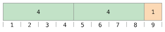You can fit two ‘4=s inside =9’, and the remainder is ‘1’ (shown in orange).
In Swift, this would be written as:
9 % 4 // equals 1
To determine the answer for ‘a % b’, the ‘%’ operator calculates the following equation and returns ‘remainder’ as its output:
‘a’ = (‘b’ x ‘some multiplier’) + ‘remainder’
where ‘some multiplier’ is the largest number of multiples of ‘b’ that will fit inside ‘a’.
Inserting ‘9’ and ‘4’ into this equation yields:
‘9’ = (‘4’ x ‘2’) + ‘1’
The same method is applied when calculating the remainder for a negative value of ‘a’:
-9 % 4 // equals -1
Inserting ‘-9’ and ‘4’ into the equation yields:
‘-9’ = (‘4’ x ‘-2’) + ‘-1’
giving a remainder value of ‘-1’.
The sign of ‘b’ is ignored for negative values of ‘b’. This means that ‘a % b’ and ‘a % -b’ always give the same answer.
Next: Unary Plus Operator, Previous: Remainder Operator, Up: Arithmetic Operators [Contents][Index]
The sign of a numeric value can be toggled using a prefixed ‘-’, known as the unary minus operator:
let three = 3 let minusThree = -three // minusThree equals -3 let plusThree = -minusThree // plusThree equals 3, or "minus minus three"
The unary minus operator (‘-’) is prepended directly before the value it operates on, without any white space.
Previous: Unary Minus Operator, Up: Arithmetic Operators [Contents][Index]
The unary plus operator (‘+’) simply returns the value it operates on, without any change:
let minusSix = -6 let alsoMinusSix = +minusSix // alsoMinusSix equals -6
Although the unary plus operator doesn’t actually do anything, you can use it to provide symmetry in your code for positive numbers when also using the unary minus operator for negative numbers.
Next: Comparison Operators, Previous: Arithmetic Operators, Up: Basic Operators [Contents][Index]
Like C, Swift provides compound assignment operators that combine assignment (‘=’) with another operation. One example is the addition assignment operator (‘+=’):
var a = 1 a += 2 // a is now equal to 3
The expression ‘a +’ 2= is shorthand for ‘a = a + 2’. Effectively, the addition and the assignment are combined into one operator that performs both tasks at the same time.
Note
The compound assignment operators don’t return a value. For example, you can’t write ‘let b = a +’ 2=.
For information about the operators provided by the Swift standard library, see Operator Declarations [https://developer.apple.com/documentation/swift/operator_declarations].
Next: Ternary Conditional Operator, Previous: Compound Assignment Operators, Up: Basic Operators [Contents][Index]
Swift supports all standard C comparison operators:
Note
Swift also provides two identity operators (‘===’ and ‘!==’), which you use to test whether two object references both refer to the same object instance. For more information, see Identity Operators.
Each of the comparison operators returns a ‘Bool’ value to indicate whether or not the statement is true:
1 == 1 // true because 1 is equal to 1 2 != 1 // true because 2 is not equal to 1 2 > 1 // true because 2 is greater than 1 1 < 2 // true because 1 is less than 2 1 >= 1 // true because 1 is greater than or equal to 1 2 <= 1 // false because 2 is not less than or equal to 1
Comparison operators are often used in conditional statements, such as the ‘if’ statement:
let name = "world"
if name == "world" {
print("hello, world")
} else {
print("I'm sorry \(name), but I don't recognize you")
}
// Prints "hello, world", because name is indeed equal to "world".
For more about the ‘if’ statement, see Control Flow.
You can compare two tuples if they have the same type and the same number of values. Tuples are compared from left to right, one value at a time, until the comparison finds two values that aren’t equal. Those two values are compared, and the result of that comparison determines the overall result of the tuple comparison. If all the elements are equal, then the tuples themselves are equal. For example:
(1, "zebra") < (2, "apple") // true because 1 is less than 2; "zebra" and "apple" are not compared (3, "apple") < (3, "bird") // true because 3 is equal to 3, and "apple" is less than "bird" (4, "dog") == (4, "dog") // true because 4 is equal to 4, and "dog" is equal to "dog"
In the example above, you can see the left-to-right comparison behavior on the first line. Because ‘1’ is less than ‘2’, ‘(1, "zebra")’ is considered less than ‘(2, "apple")’, regardless of any other values in the tuples. It doesn’t matter that ‘"zebra"’ isn’t less than ‘"apple"’, because the comparison is already determined by the tuples’ first elements. However, when the tuples’ first elements are the same, their second elements are compared—this is what happens on the second and third line.
Tuples can be compared with a given operator only if the operator can be applied to each value in the respective tuples. For example, as demonstrated in the code below, you can compare two tuples of type ‘(String, Int)’ because both ‘String’ and ‘Int’ values can be compared using the ‘<’ operator. In contrast, two tuples of type ‘(String, Bool)’ can’t be compared with the ‘<’ operator because the ‘<’ operator can’t be applied to ‘Bool’ values.
("blue", -1) < ("purple", 1) // OK, evaluates to true
("blue", false) < ("purple", true) // Error because < can't compare Boolean values
Note
The Swift standard library includes tuple comparison operators for tuples with fewer than seven elements. To compare tuples with seven or more elements, you must implement the comparison operators yourself.
Next: Nil-Coalescing Operator, Previous: Comparison Operators, Up: Basic Operators [Contents][Index]
The ternary conditional operator is a special operator with three parts, which takes the form ‘question ? answer1 : answer2’. It’s a shortcut for evaluating one of two expressions based on whether ‘question’ is true or false. If ‘question’ is true, it evaluates ‘answer1’ and returns its value; otherwise, it evaluates ‘answer2’ and returns its value.
The ternary conditional operator is shorthand for the code below:
if question {
answer1
} else {
answer2
}
Here’s an example, which calculates the height for a table row. The row height should be 50 points taller than the content height if the row has a header, and 20 points taller if the row doesn’t have a header:
let contentHeight = 40 let hasHeader = true let rowHeight = contentHeight + (hasHeader ? 50 : 20) // rowHeight is equal to 90
The example above is shorthand for the code below:
let contentHeight = 40
let hasHeader = true
let rowHeight: Int
if hasHeader {
rowHeight = contentHeight + 50
} else {
rowHeight = contentHeight + 20
}
// rowHeight is equal to 90
The first example’s use of the ternary conditional operator means that ‘rowHeight’ can be set to the correct value on a single line of code, which is more concise than the code used in the second example.
The ternary conditional operator provides an efficient shorthand for deciding which of two expressions to consider. Use the ternary conditional operator with care, however. Its conciseness can lead to hard-to-read code if overused. Avoid combining multiple instances of the ternary conditional operator into one compound statement.
Next: Range Operators, Previous: Ternary Conditional Operator, Up: Basic Operators [Contents][Index]
The nil-coalescing operator (‘a ?? b’) unwraps an optional ‘a’ if it contains a value, or returns a default value ‘b’ if ‘a’ is ‘nil’. The expression ‘a’ is always of an optional type. The expression ‘b’ must match the type that is stored inside ‘a’.
The nil-coalescing operator is shorthand for the code below:
a != nil ? a! : b
The code above uses the ternary conditional operator and forced unwrapping (‘a!’) to access the value wrapped inside ‘a’ when ‘a’ is not ‘nil’, and to return ‘b’ otherwise. The nil-coalescing operator provides a more elegant way to encapsulate this conditional checking and unwrapping in a concise and readable form.
Note
If the value of ‘a’ is non-‘nil’, the value of ‘b’ is not evaluated. This is known as short-circuit evaluation.
The example below uses the nil-coalescing operator to choose between a default color name and an optional user-defined color name:
let defaultColorName = "red" var userDefinedColorName: String? // defaults to nil var colorNameToUse = userDefinedColorName ?? defaultColorName // userDefinedColorName is nil, so colorNameToUse is set to the default of "red"
The ‘userDefinedColorName’ variable is defined as an optional ‘String’, with a default value of ‘nil’. Because ‘userDefinedColorName’ is of an optional type, you can use the nil-coalescing operator to consider its value. In the example above, the operator is used to determine an initial value for a ‘String’ variable called ‘colorNameToUse’. Because ‘userDefinedColorName’ is ‘nil’, the expression ‘userDefinedColorName ?? defaultColorName’ returns the value of ‘defaultColorName’, or ‘"red"’.
If you assign a non-‘nil’ value to ‘userDefinedColorName’ and perform the nil-coalescing operator check again, the value wrapped inside ‘userDefinedColorName’ is used instead of the default:
userDefinedColorName = "green" colorNameToUse = userDefinedColorName ?? defaultColorName // userDefinedColorName is not nil, so colorNameToUse is set to "green"
Next: Logical Operators, Previous: Nil-Coalescing Operator, Up: Basic Operators [Contents][Index]
Swift includes several range operators, which are shortcuts for expressing a range of values.
| • Closed Range Operator | ||
| • Half-Open Range Operator | ||
| • One-Sided Ranges |
Next: Half-Open Range Operator, Up: Range Operators [Contents][Index]
The closed range operator (‘a...b’) defines a range that runs from ‘a’ to ‘b’, and includes the values ‘a’ and ‘b’. The value of ‘a’ must not be greater than ‘b’.
The closed range operator is useful when iterating over a range in which you want all of the values to be used, such as with a ‘for’-‘in’ loop:
for index in 1...5 {
print("\(index) times 5 is \(index * 5)")
}
// 1 times 5 is 5
// 2 times 5 is 10
// 3 times 5 is 15
// 4 times 5 is 20
// 5 times 5 is 25
For more about ‘for’-‘in’ loops, see Control Flow.
Next: One-Sided Ranges, Previous: Closed Range Operator, Up: Range Operators [Contents][Index]
The half-open range operator (‘a..<b’) defines a range that runs from ‘a’ to ‘b’, but doesn’t include ‘b’. It’s said to be half-open because it contains its first value, but not its final value. As with the closed range operator, the value of ‘a’ must not be greater than ‘b’. If the value of ‘a’ is equal to ‘b’, then the resulting range will be empty.
Half-open ranges are particularly useful when you work with zero-based lists such as arrays, where it’s useful to count up to (but not including) the length of the list:
let names = ["Anna", "Alex", "Brian", "Jack"]
let count = names.count
for i in 0..<count {
print("Person \(i + 1) is called \(names[i])")
}
// Person 1 is called Anna
// Person 2 is called Alex
// Person 3 is called Brian
// Person 4 is called Jack
Note that the array contains four items, but ‘0..<count’ only counts as far as ‘3’ (the index of the last item in the array), because it’s a half-open range. For more about arrays, see Arrays.
Previous: Half-Open Range Operator, Up: Range Operators [Contents][Index]
The closed range operator has an alternative form for ranges that continue as far as possible in one direction—for example, a range that includes all the elements of an array from index 2 to the end of the array. In these cases, you can omit the value from one side of the range operator. This kind of range is called a one-sided range because the operator has a value on only one side. For example:
for name in names[2...] {
print(name)
}
// Brian
// Jack
for name in names[...2] {
print(name)
}
// Anna
// Alex
// Brian
The half-open range operator also has a one-sided form that’s written with only its final value. Just like when you include a value on both sides, the final value isn’t part of the range. For example:
for name in names[..<2] {
print(name)
}
// Anna
// Alex
One-sided ranges can be used in other contexts, not just in subscripts. You can’t iterate over a one-sided range that omits a first value, because it isn’t clear where iteration should begin. You can iterate over a one-sided range that omits its final value; however, because the range continues indefinitely, make sure you add an explicit end condition for the loop. You can also check whether a one-sided range contains a particular value, as shown in the code below.
let range = ...5 range.contains(7) // false range.contains(4) // true range.contains(-1) // true
Previous: Range Operators, Up: Basic Operators [Contents][Index]
Logical operators modify or combine the Boolean logic values ‘true’ and ‘false’. Swift supports the three standard logical operators found in C-based languages:
| • Logical NOT Operator | ||
| • Logical AND Operator | ||
| • Logical OR Operator | ||
| • Combining Logical Operators | ||
| • Explicit Parentheses |
Next: Logical AND Operator, Up: Logical Operators [Contents][Index]
The logical NOT operator (‘!a’) inverts a Boolean value so that ‘true’ becomes ‘false’, and ‘false’ becomes ‘true’.
The logical NOT operator is a prefix operator, and appears immediately before the value it operates on, without any white space. It can be read as “not =a=”, as seen in the following example:
let allowedEntry = false
if !allowedEntry {
print("ACCESS DENIED")
}
// Prints "ACCESS DENIED"
The phrase ‘if !allowedEntry’ can be read as “if not allowed entry.” The subsequent line is only executed if “not allowed entry” is true; that is, if ‘allowedEntry’ is ‘false’.
As in this example, careful choice of Boolean constant and variable names can help to keep code readable and concise, while avoiding double negatives or confusing logic statements.
Next: Logical OR Operator, Previous: Logical NOT Operator, Up: Logical Operators [Contents][Index]
The logical AND operator (‘a && b’) creates logical expressions where both values must be ‘true’ for the overall expression to also be ‘true’.
If either value is ‘false’, the overall expression will also be ‘false’. In fact, if the first value is ‘false’, the second value won’t even be evaluated, because it can’t possibly make the overall expression equate to ‘true’. This is known as short-circuit evaluation.
This example considers two ‘Bool’ values and only allows access if both values are ‘true’:
let enteredDoorCode = true
let passedRetinaScan = false
if enteredDoorCode && passedRetinaScan {
print("Welcome!")
} else {
print("ACCESS DENIED")
}
// Prints "ACCESS DENIED"
Next: Combining Logical Operators, Previous: Logical AND Operator, Up: Logical Operators [Contents][Index]
The logical OR operator (‘a || b’) is an infix operator made from two adjacent pipe characters. You use it to create logical expressions in which only one of the two values has to be ‘true’ for the overall expression to be ‘true’.
Like the Logical AND operator above, the Logical OR operator uses short-circuit evaluation to consider its expressions. If the left side of a Logical OR expression is ‘true’, the right side is not evaluated, because it can’t change the outcome of the overall expression.
In the example below, the first ‘Bool’ value (‘hasDoorKey’) is ‘false’, but the second value (‘knowsOverridePassword’) is ‘true’. Because one value is ‘true’, the overall expression also evaluates to ‘true’, and access is allowed:
let hasDoorKey = false
let knowsOverridePassword = true
if hasDoorKey || knowsOverridePassword {
print("Welcome!")
} else {
print("ACCESS DENIED")
}
// Prints "Welcome!"
Next: Explicit Parentheses, Previous: Logical OR Operator, Up: Logical Operators [Contents][Index]
You can combine multiple logical operators to create longer compound expressions:
if enteredDoorCode && passedRetinaScan || hasDoorKey || knowsOverridePassword {
print("Welcome!")
} else {
print("ACCESS DENIED")
}
// Prints "Welcome!"
This example uses multiple ‘&&’ and ‘||’ operators to create a longer compound expression. However, the ‘&&’ and ‘||’ operators still operate on only two values, so this is actually three smaller expressions chained together. The example can be read as:
If we’ve entered the correct door code and passed the retina scan, or if we have a valid door key, or if we know the emergency override password, then allow access.
Based on the values of ‘enteredDoorCode’, ‘passedRetinaScan’, and ‘hasDoorKey’, the first two subexpressions are ‘false’. However, the emergency override password is known, so the overall compound expression still evaluates to ‘true’.
Note
The Swift logical operators ‘&&’ and ‘||’ are left-associative, meaning that compound expressions with multiple logical operators evaluate the leftmost subexpression first.
Previous: Combining Logical Operators, Up: Logical Operators [Contents][Index]
It’s sometimes useful to include parentheses when they’re not strictly needed, to make the intention of a complex expression easier to read. In the door access example above, it’s useful to add parentheses around the first part of the compound expression to make its intent explicit:
if (enteredDoorCode && passedRetinaScan) || hasDoorKey || knowsOverridePassword {
print("Welcome!")
} else {
print("ACCESS DENIED")
}
// Prints "Welcome!"
The parentheses make it clear that the first two values are considered as part of a separate possible state in the overall logic. The output of the compound expression doesn’t change, but the overall intention is clearer to the reader. Readability is always preferred over brevity; use parentheses where they help to make your intentions clear.
Next: Collection Types, Previous: Basic Operators, Up: Top [Contents][Index]
A string is a series of characters, such as ‘"hello, world"’ or ‘"albatross"’. Swift strings are represented by the ‘String’ type. The contents of a ‘String’ can be accessed in various ways, including as a collection of ‘Character’ values.
Swift’s ‘String’ and ‘Character’ types provide a fast, Unicode-compliant way to work with text in your code. The syntax for string creation and manipulation is lightweight and readable, with a string literal syntax that is similar to C. String concatenation is as simple as combining two strings with the ‘+’ operator, and string mutability is managed by choosing between a constant or a variable, just like any other value in Swift. You can also use strings to insert constants, variables, literals, and expressions into longer strings, in a process known as string interpolation. This makes it easy to create custom string values for display, storage, and printing.
Despite this simplicity of syntax, Swift’s ‘String’ type is a fast, modern string implementation. Every string is composed of encoding-independent Unicode characters, and provides support for accessing those characters in various Unicode representations.
Note
Swift’s ‘String’ type is bridged with Foundation’s ‘NSString’ class. Foundation also extends ‘String’ to expose methods defined by ‘NSString’. This means, if you import Foundation, you can access those ‘NSString’ methods on ‘String’ without casting.
For more information about using ‘String’ with Foundation and Cocoa, see Bridging Between String and NSString [https://developer.apple.com/documentation/swift/string#2919514].
Next: Initializing an Empty String, Up: Strings and Characters [Contents][Index]
You can include predefined ‘String’ values within your code as string literals. A string literal is a sequence of characters surrounded by double quotation marks (‘"’).
Use a string literal as an initial value for a constant or variable:
let someString = "Some string literal value"
Note that Swift infers a type of ‘String’ for the ‘someString’ constant because it’s initialized with a string literal value.
| • Multiline String Literals | ||
| • Special Characters in String Literals | ||
| • Extended String Delimiters |
Next: Special Characters in String Literals, Up: String Literals [Contents][Index]
If you need a string that spans several lines, use a multiline string literal—a sequence of characters surrounded by three double quotation marks:
let quotation = """ The White Rabbit put on his spectacles. "Where shall I begin, please your Majesty?" he asked. "Begin at the beginning," the King said gravely, "and go on till you come to the end; then stop." """
A multiline string literal includes all of the lines between its opening and closing quotation marks. The string begins on the first line after the opening quotation marks (‘"""’) and ends on the line before the closing quotation marks, which means that neither of the strings below start or end with a line break:
let singleLineString = "These are the same." let multilineString = """ These are the same. """
When your source code includes a line break inside of a multiline string literal, that line break also appears in the string’s value. If you want to use line breaks to make your source code easier to read, but you don’t want the line breaks to be part of the string’s value, write a backslash (‘\’) at the end of those lines:
let softWrappedQuotation = """ The White Rabbit put on his spectacles. "Where shall I begin, \ please your Majesty?" he asked. "Begin at the beginning," the King said gravely, "and go on \ till you come to the end; then stop." """
To make a multiline string literal that begins or ends with a line feed, write a blank line as the first or last line. For example:
let lineBreaks = """ This string starts with a line break. It also ends with a line break. """
A multiline string can be indented to match the surrounding code. The whitespace before the closing quotation marks (‘"""’) tells Swift what whitespace to ignore before all of the other lines. However, if you write whitespace at the beginning of a line in addition to what’s before the closing quotation marks, that whitespace is included.
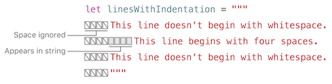In the example above, even though the entire multiline string literal is indented, the first and last lines in the string don’t begin with any whitespace. The middle line has more indentation than the closing quotation marks, so it starts with that extra four-space indentation.
Next: Extended String Delimiters, Previous: Multiline String Literals, Up: String Literals [Contents][Index]
String literals can include the following special characters:
The code below shows four examples of these special characters. The ‘wiseWords’ constant contains two escaped double quotation marks. The ‘dollarSign’, ‘blackHeart’, and ‘sparklingHeart’ constants demonstrate the Unicode scalar format:
let wiseWords = "\"Imagination is more important than knowledge\" - Einstein"
// "Imagination is more important than knowledge" - Einstein
let dollarSign = "\u{24}" // $, Unicode scalar U+0024
let blackHeart = "\u{2665}" // ♥, Unicode scalar U+2665
let sparklingHeart = "\u{1F496}" // 💖, Unicode scalar U+1F496
Because multiline string literals use three double quotation marks instead of just one, you can include a double quotation mark (‘"’) inside of a multiline string literal without escaping it. To include the text ‘"""’ in a multiline string, escape at least one of the quotation marks. For example:
let threeDoubleQuotationMarks = """ Escaping the first quotation mark \""" Escaping all three quotation marks \"\"\" """
Previous: Special Characters in String Literals, Up: String Literals [Contents][Index]
You can place a string literal within extended delimiters to include special characters in a string without invoking their effect. You place your string within quotation marks (‘"’) and surround that with number signs (‘#’). For example, printing the string literal ‘#"Line 1\nLine 2"#’ prints the line feed escape sequence (‘\n’) rather than printing the string across two lines.
If you need the special effects of a character in a string literal, match the number of number signs within the string following the escape character (‘\’). For example, if your string is ‘#"Line 1\nLine 2"#’ and you want to break the line, you can use ‘#"Line 1\#nLine 2"#’ instead. Similarly, ‘###"Line1\###nLine2"###’ also breaks the line.
String literals created using extended delimiters can also be multiline string literals. You can use extended delimiters to include the text ‘"""’ in a multiline string, overriding the default behavior that ends the literal. For example:
let threeMoreDoubleQuotationMarks = #""" Here are three more double quotes: """ """#
Next: String Mutability, Previous: String Literals, Up: Strings and Characters [Contents][Index]
To create an empty ‘String’ value as the starting point for building a longer string, either assign an empty string literal to a variable, or initialize a new ‘String’ instance with initializer syntax:
var emptyString = "" // empty string literal var anotherEmptyString = String() // initializer syntax // these two strings are both empty, and are equivalent to each other
Find out whether a ‘String’ value is empty by checking its Boolean ‘isEmpty’ property:
if emptyString.isEmpty {
print("Nothing to see here")
}
// Prints "Nothing to see here"
Next: Strings Are Value Types, Previous: Initializing an Empty String, Up: Strings and Characters [Contents][Index]
You indicate whether a particular ‘String’ can be modified (or mutated) by assigning it to a variable (in which case it can be modified), or to a constant (in which case it can’t be modified):
var variableString = "Horse" variableString += " and carriage" // variableString is now "Horse and carriage" let constantString = "Highlander" constantString += " and another Highlander" // this reports a compile-time error - a constant string cannot be modified
Note
This approach is different from string mutation in Objective-C and Cocoa, where you choose between two classes (‘NSString’ and ‘NSMutableString’) to indicate whether a string can be mutated.
Next: Working with Characters, Previous: String Mutability, Up: Strings and Characters [Contents][Index]
Swift’s ‘String’ type is a value type. If you create a new ‘String’ value, that ‘String’ value is copied when it’s passed to a function or method, or when it’s assigned to a constant or variable. In each case, a new copy of the existing ‘String’ value is created, and the new copy is passed or assigned, not the original version. Value types are described in Structures and Enumerations Are Value Types.
Swift’s copy-by-default ‘String’ behavior ensures that when a function or method passes you a ‘String’ value, it’s clear that you own that exact ‘String’ value, regardless of where it came from. You can be confident that the string you are passed won’t be modified unless you modify it yourself.
Behind the scenes, Swift’s compiler optimizes string usage so that actual copying takes place only when absolutely necessary. This means you always get great performance when working with strings as value types.
Next: Concatenating Strings and Characters, Previous: Strings Are Value Types, Up: Strings and Characters [Contents][Index]
You can access the individual ‘Character’ values for a ‘String’ by iterating over the string with a ‘for’-‘in’ loop:
for character in "Dog!🐶" {
print(character)
}
// D
// o
// g
// !
// 🐶
The ‘for’-‘in’ loop is described in For-In Loops.
Alternatively, you can create a stand-alone ‘Character’ constant or variable from a single-character string literal by providing a ‘Character’ type annotation:
let exclamationMark: Character = "!"
‘String’ values can be constructed by passing an array of ‘Character’ values as an argument to its initializer:
let catCharacters: [Character] = ["C", "a", "t", "!", "🐱"] let catString = String(catCharacters) print(catString) // Prints "Cat!🐱"
Next: String Interpolation, Previous: Working with Characters, Up: Strings and Characters [Contents][Index]
‘String’ values can be added together (or concatenated) with the addition operator (‘+’) to create a new ‘String’ value:
let string1 = "hello" let string2 = " there" var welcome = string1 + string2 // welcome now equals "hello there"
You can also append a ‘String’ value to an existing ‘String’ variable with the addition assignment operator (‘+=’):
var instruction = "look over" instruction += string2 // instruction now equals "look over there"
You can append a ‘Character’ value to a ‘String’ variable with the ‘String’ type’s ‘append()’ method:
let exclamationMark: Character = "!" welcome.append(exclamationMark) // welcome now equals "hello there!"
Note
You can’t append a ‘String’ or ‘Character’ to an existing ‘Character’ variable, because a ‘Character’ value must contain a single character only.
If you’re using multiline string literals to build up the lines of a longer string, you want every line in the string to end with a line break, including the last line. For example:
let badStart = """ one two """ let end = """ three """ print(badStart + end) // Prints two lines: // one // twothree let goodStart = """ one two """ print(goodStart + end) // Prints three lines: // one // two // three
In the code above, concatenating ‘badStart’ with ‘end’ produces a two-line string, which isn’t the desired result. Because the last line of ‘badStart’ doesn’t end with a line break, that line gets combined with the first line of ‘end’. In contrast, both lines of ‘goodStart’ end with a line break, so when it’s combined with ‘end’ the result has three lines, as expected.
Next: Unicode, Previous: Concatenating Strings and Characters, Up: Strings and Characters [Contents][Index]
String interpolation is a way to construct a new ‘String’ value from a mix of constants, variables, literals, and expressions by including their values inside a string literal. You can use string interpolation in both single-line and multiline string literals. Each item that you insert into the string literal is wrapped in a pair of parentheses, prefixed by a backslash (‘\’):
let multiplier = 3 let message = "\(multiplier) times 2.5 is \(Double(multiplier) * 2.5)" // message is "3 times 2.5 is 7.5"
In the example above, the value of ‘multiplier’ is inserted into a string literal as ‘\(multiplier)’. This placeholder is replaced with the actual value of ‘multiplier’ when the string interpolation is evaluated to create an actual string.
The value of ‘multiplier’ is also part of a larger expression later in the string. This expression calculates the value of ‘Double(multiplier) * 2.5’ and inserts the result (‘7.5’) into the string. In this case, the expression is written as ‘\(Double(multiplier) * 2.5)’ when it’s included inside the string literal.
You can use extended string delimiters to create strings containing characters that would otherwise be treated as a string interpolation. For example:
print(#"Write an interpolated string in Swift using \(multiplier)."#) // Prints "Write an interpolated string in Swift using \(multiplier)."
To use string interpolation inside a string that uses extended delimiters, match the number of number signs before the backslash to the number of number signs at the beginning and end of the string. For example:
print(#"6 times 7 is \#(6 * 7)."#) // Prints "6 times 7 is 42."
Note
The expressions you write inside parentheses within an interpolated string can’t contain an unescaped backslash (‘\’), a carriage return, or a line feed. However, they can contain other string literals.
Next: Counting Characters, Previous: String Interpolation, Up: Strings and Characters [Contents][Index]
Unicode is an international standard for encoding, representing, and processing text in different writing systems. It enables you to represent almost any character from any language in a standardized form, and to read and write those characters to and from an external source such as a text file or web page. Swift’s ‘String’ and ‘Character’ types are fully Unicode-compliant, as described in this section.
| • Unicode Scalar Values | ||
| • Extended Grapheme Clusters |
Next: Extended Grapheme Clusters, Up: Unicode [Contents][Index]
Behind the scenes, Swift’s native ‘String’ type is built from Unicode scalar values. A Unicode scalar value is a unique 21-bit number for a character or modifier, such as ‘U+0061’ for ‘LATIN SMALL LETTER A’ (‘"a"’), or ‘U+1F425’ for ‘FRONT-FACING BABY CHICK’ (‘"🐥"’).
Note that not all 21-bit Unicode scalar values are assigned to a character—some scalars are reserved for future assignment or for use in UTF-16 encoding. Scalar values that have been assigned to a character typically also have a name, such as ‘LATIN SMALL LETTER A’ and ‘FRONT-FACING BABY CHICK’ in the examples above.
Previous: Unicode Scalar Values, Up: Unicode [Contents][Index]
Every instance of Swift’s ‘Character’ type represents a single extended grapheme cluster. An extended grapheme cluster is a sequence of one or more Unicode scalars that (when combined) produce a single human-readable character.
Here’s an example. The letter ‘é’ can be represented as the single Unicode scalar ‘é’ (‘LATIN SMALL LETTER E WITH ACUTE’, or ‘U+00E9’). However, the same letter can also be represented as a pair of scalars—a standard letter ‘e’ (‘LATIN SMALL LETTER E’, or ‘U+0065’), followed by the ‘COMBINING ACUTE ACCENT’ scalar (‘U+0301’). The ‘COMBINING ACUTE ACCENT’ scalar is graphically applied to the scalar that precedes it, turning an ‘e’ into an ‘é’ when it’s rendered by a Unicode-aware text-rendering system.
In both cases, the letter ‘é’ is represented as a single Swift ‘Character’ value that represents an extended grapheme cluster. In the first case, the cluster contains a single scalar; in the second case, it’s a cluster of two scalars:
let eAcute: Character = "\u{E9}" // é
let combinedEAcute: Character = "\u{65}\u{301}" // e followed by ́
// eAcute is é, combinedEAcute is é
Extended grapheme clusters are a flexible way to represent many complex script characters as a single ‘Character’ value. For example, Hangul syllables from the Korean alphabet can be represented as either a precomposed or decomposed sequence. Both of these representations qualify as a single ‘Character’ value in Swift:
let precomposed: Character = "\u{D55C}" // 한
let decomposed: Character = "\u{1112}\u{1161}\u{11AB}" // ᄒ, ᅡ, ᆫ
// precomposed is 한, decomposed is 한
Extended grapheme clusters enable scalars for enclosing marks (such as ‘COMBINING ENCLOSING CIRCLE’, or ‘U+20DD’) to enclose other Unicode scalars as part of a single ‘Character’ value:
let enclosedEAcute: Character = "\u{E9}\u{20DD}"
// enclosedEAcute is é⃝
Unicode scalars for regional indicator symbols can be combined in pairs to make a single ‘Character’ value, such as this combination of ‘REGIONAL INDICATOR SYMBOL LETTER U’ (‘U+1F1FA’) and ‘REGIONAL INDICATOR SYMBOL LETTER S’ (‘U+1F1F8’):
let regionalIndicatorForUS: Character = "\u{1F1FA}\u{1F1F8}"
// regionalIndicatorForUS is 🇺🇸
Next: Accessing and Modifying a String, Previous: Unicode, Up: Strings and Characters [Contents][Index]
To retrieve a count of the ‘Character’ values in a string, use the ‘count’ property of the string:
let unusualMenagerie = "Koala 🐨, Snail 🐌, Penguin 🐧, Dromedary 🐪"
print("unusualMenagerie has \(unusualMenagerie.count) characters")
// Prints "unusualMenagerie has 40 characters"
Note that Swift’s use of extended grapheme clusters for ‘Character’ values means that string concatenation and modification may not always affect a string’s character count.
For example, if you initialize a new string with the four-character word ‘cafe’, and then append a ‘COMBINING ACUTE ACCENT’ (‘U+0301’) to the end of the string, the resulting string will still have a character count of ‘4’, with a fourth character of ‘é’, not ‘e’:
var word = "cafe"
print("the number of characters in \(word) is \(word.count)")
// Prints "the number of characters in cafe is 4"
word += "\u{301}" // COMBINING ACUTE ACCENT, U+0301
print("the number of characters in \(word) is \(word.count)")
// Prints "the number of characters in café is 4"
Note
Extended grapheme clusters can be composed of multiple Unicode scalars. This means that different characters—and different representations of the same character—can require different amounts of memory to store. Because of this, characters in Swift don’t each take up the same amount of memory within a string’s representation. As a result, the number of characters in a string can’t be calculated without iterating through the string to determine its extended grapheme cluster boundaries. If you are working with particularly long string values, be aware that the ‘count’ property must iterate over the Unicode scalars in the entire string in order to determine the characters for that string.
The count of the characters returned by the ‘count’ property isn’t always the same as the ‘length’ property of an ‘NSString’ that contains the same characters. The length of an ‘NSString’ is based on the number of 16-bit code units within the string’s UTF-16 representation and not the number of Unicode extended grapheme clusters within the string.
Next: Substrings, Previous: Counting Characters, Up: Strings and Characters [Contents][Index]
You access and modify a string through its methods and properties, or by using subscript syntax.
| • String Indices | ||
| • Inserting and Removing |
Next: Inserting and Removing, Up: Accessing and Modifying a String [Contents][Index]
Each ‘String’ value has an associated index type, ‘String.Index’, which corresponds to the position of each ‘Character’ in the string.
As mentioned above, different characters can require different amounts of memory to store, so in order to determine which ‘Character’ is at a particular position, you must iterate over each Unicode scalar from the start or end of that ‘String’. For this reason, Swift strings can’t be indexed by integer values.
Use the ‘startIndex’ property to access the position of the first ‘Character’ of a ‘String’. The ‘endIndex’ property is the position after the last character in a ‘String’. As a result, the ‘endIndex’ property isn’t a valid argument to a string’s subscript. If a ‘String’ is empty, ‘startIndex’ and ‘endIndex’ are equal.
You access the indices before and after a given index using the ‘index(before:)’ and ‘index(after:)’ methods of ‘String’. To access an index farther away from the given index, you can use the ‘index(_:offsetBy:)’ method instead of calling one of these methods multiple times.
You can use subscript syntax to access the ‘Character’ at a particular ‘String’ index.
let greeting = "Guten Tag!" greeting[greeting.startIndex] // G greeting[greeting.index(before: greeting.endIndex)] // ! greeting[greeting.index(after: greeting.startIndex)] // u let index = greeting.index(greeting.startIndex, offsetBy: 7) greeting[index] // a
Attempting to access an index outside of a string’s range or a ‘Character’ at an index outside of a string’s range will trigger a runtime error.
greeting[greeting.endIndex] // Error greeting.index(after: greeting.endIndex) // Error
Use the ‘indices’ property to access all of the indices of individual characters in a string.
for index in greeting.indices {
print("\(greeting[index]) ", terminator: "")
}
// Prints "G u t e n T a g ! "
Note
You can use the ‘startIndex’ and ‘endIndex’ properties and the ‘index(before:)’, ‘index(after:)’, and ‘index(_:offsetBy:)’ methods on any type that conforms to the ‘Collection’ protocol. This includes ‘String’, as shown here, as well as collection types such as ‘Array’, ‘Dictionary’, and ‘Set’.
Previous: String Indices, Up: Accessing and Modifying a String [Contents][Index]
To insert a single character into a string at a specified index, use the ‘insert(_:at:)’ method, and to insert the contents of another string at a specified index, use the ‘insert(contentsOf:at:)’ method.
var welcome = "hello"
welcome.insert("!", at: welcome.endIndex)
// welcome now equals "hello!"
welcome.insert(contentsOf: " there", at: welcome.index(before: welcome.endIndex))
// welcome now equals "hello there!"
To remove a single character from a string at a specified index, use the ‘remove(at:)’ method, and to remove a substring at a specified range, use the ‘removeSubrange(_:)’ method:
welcome.remove(at: welcome.index(before: welcome.endIndex)) // welcome now equals "hello there" let range = welcome.index(welcome.endIndex, offsetBy: -6)..<welcome.endIndex welcome.removeSubrange(range) // welcome now equals "hello"
Note
You can use the ‘insert(_:at:)’, ‘insert(contentsOf:at:)’, ‘remove(at:)’, and ‘removeSubrange(_:)’ methods on any type that conforms to the ‘RangeReplaceableCollection’ protocol. This includes ‘String’, as shown here, as well as collection types such as ‘Array’, ‘Dictionary’, and ‘Set’.
Next: Comparing Strings, Previous: Accessing and Modifying a String, Up: Strings and Characters [Contents][Index]
When you get a substring from a string—for example, using a subscript or a method like ‘prefix(_:)’—the result is an instance of ‘Substring’ [https://developer.apple.com/documentation/swift/substring], not another string. Substrings in Swift have most of the same methods as strings, which means you can work with substrings the same way you work with strings. However, unlike strings, you use substrings for only a short amount of time while performing actions on a string. When you’re ready to store the result for a longer time, you convert the substring to an instance of ‘String’. For example:
let greeting = "Hello, world!" let index = greeting.firstIndex(of: ",") ?? greeting.endIndex let beginning = greeting[..<index] // beginning is "Hello" // Convert the result to a String for long-term storage. let newString = String(beginning)
Like strings, each substring has a region of memory where the characters that make up the substring are stored. The difference between strings and substrings is that, as a performance optimization, a substring can reuse part of the memory that’s used to store the original string, or part of the memory that’s used to store another substring. (Strings have a similar optimization, but if two strings share memory, they are equal.) This performance optimization means you don’t have to pay the performance cost of copying memory until you modify either the string or substring. As mentioned above, substrings aren’t suitable for long-term storage—because they reuse the storage of the original string, the entire original string must be kept in memory as long as any of its substrings are being used.
In the example above, ‘greeting’ is a string, which means it has a region of memory where the characters that make up the string are stored. Because ‘beginning’ is a substring of ‘greeting’, it reuses the memory that ‘greeting’ uses. In contrast, ‘newString’ is a string—when it’s created from the substring, it has its own storage. The figure below shows these relationships:
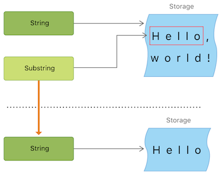Note
Both ‘String’ and ‘Substring’ conform to the ‘StringProtocol’ [https://developer.apple.com/documentation/swift/stringprotocol] protocol, which means it’s often convenient for string-manipulation functions to accept a ‘StringProtocol’ value. You can call such functions with either a ‘String’ or ‘Substring’ value.
Next: Unicode Representations of Strings, Previous: Substrings, Up: Strings and Characters [Contents][Index]
Swift provides three ways to compare textual values: string and character equality, prefix equality, and suffix equality.
| • String and Character Equality | ||
| • Prefix and Suffix Equality |
Next: Prefix and Suffix Equality, Up: Comparing Strings [Contents][Index]
String and character equality is checked with the “equal to” operator (‘==’) and the “not equal to” operator (‘!=’), as described in Comparison Operators:
let quotation = "We're a lot alike, you and I."
let sameQuotation = "We're a lot alike, you and I."
if quotation == sameQuotation {
print("These two strings are considered equal")
}
// Prints "These two strings are considered equal"
Two ‘String’ values (or two ‘Character’ values) are considered equal if their extended grapheme clusters are canonically equivalent. Extended grapheme clusters are canonically equivalent if they have the same linguistic meaning and appearance, even if they’re composed from different Unicode scalars behind the scenes.
For example, ‘LATIN SMALL LETTER E WITH ACUTE’ (‘U+00E9’) is canonically equivalent to ‘LATIN SMALL LETTER E’ (‘U+0065’) followed by ‘COMBINING ACUTE ACCENT’ (‘U+0301’). Both of these extended grapheme clusters are valid ways to represent the character ‘é’, and so they’re considered to be canonically equivalent:
// "Voulez-vous un café?" using LATIN SMALL LETTER E WITH ACUTE
let eAcuteQuestion = "Voulez-vous un caf\u{E9}?"
// "Voulez-vous un café?" using LATIN SMALL LETTER E and COMBINING ACUTE ACCENT
let combinedEAcuteQuestion = "Voulez-vous un caf\u{65}\u{301}?"
if eAcuteQuestion == combinedEAcuteQuestion {
print("These two strings are considered equal")
}
// Prints "These two strings are considered equal"
Conversely, ‘LATIN CAPITAL LETTER A’ (‘U+0041’, or ‘"A"’), as used in English, is not equivalent to ‘CYRILLIC CAPITAL LETTER A’ (‘U+0410’, or ‘"А"’), as used in Russian. The characters are visually similar, but don’t have the same linguistic meaning:
let latinCapitalLetterA: Character = "\u{41}"
let cyrillicCapitalLetterA: Character = "\u{0410}"
if latinCapitalLetterA != cyrillicCapitalLetterA {
print("These two characters are not equivalent.")
}
// Prints "These two characters are not equivalent."
Note
String and character comparisons in Swift are not locale-sensitive.
Previous: String and Character Equality, Up: Comparing Strings [Contents][Index]
To check whether a string has a particular string prefix or suffix, call the string’s ‘hasPrefix(_:)’ and ‘hasSuffix(_:)’ methods, both of which take a single argument of type ‘String’ and return a Boolean value.
The examples below consider an array of strings representing the scene locations from the first two acts of Shakespeare’s Romeo and Juliet:
let romeoAndJuliet = [ "Act 1 Scene 1: Verona, A public place", "Act 1 Scene 2: Capulet's mansion", "Act 1 Scene 3: A room in Capulet's mansion", "Act 1 Scene 4: A street outside Capulet's mansion", "Act 1 Scene 5: The Great Hall in Capulet's mansion", "Act 2 Scene 1: Outside Capulet's mansion", "Act 2 Scene 2: Capulet's orchard", "Act 2 Scene 3: Outside Friar Lawrence's cell", "Act 2 Scene 4: A street in Verona", "Act 2 Scene 5: Capulet's mansion", "Act 2 Scene 6: Friar Lawrence's cell" ]
You can use the ‘hasPrefix(_:)’ method with the ‘romeoAndJuliet’ array to count the number of scenes in Act 1 of the play:
var act1SceneCount = 0
for scene in romeoAndJuliet {
if scene.hasPrefix("Act 1 ") {
act1SceneCount += 1
}
}
print("There are \(act1SceneCount) scenes in Act 1")
// Prints "There are 5 scenes in Act 1"
Similarly, use the ‘hasSuffix(_:)’ method to count the number of scenes that take place in or around Capulet’s mansion and Friar Lawrence’s cell:
var mansionCount = 0
var cellCount = 0
for scene in romeoAndJuliet {
if scene.hasSuffix("Capulet's mansion") {
mansionCount += 1
} else if scene.hasSuffix("Friar Lawrence's cell") {
cellCount += 1
}
}
print("\(mansionCount) mansion scenes; \(cellCount) cell scenes")
// Prints "6 mansion scenes; 2 cell scenes"
Note
The ‘hasPrefix(_:)’ and ‘hasSuffix(_:)’ methods perform a character-by-character canonical equivalence comparison between the extended grapheme clusters in each string, as described in String and Character Equality.
Previous: Comparing Strings, Up: Strings and Characters [Contents][Index]
When a Unicode string is written to a text file or some other storage, the Unicode scalars in that string are encoded in one of several Unicode-defined encoding forms. Each form encodes the string in small chunks known as code units. These include the UTF-8 encoding form (which encodes a string as 8-bit code units), the UTF-16 encoding form (which encodes a string as 16-bit code units), and the UTF-32 encoding form (which encodes a string as 32-bit code units).
Swift provides several different ways to access Unicode representations of strings. You can iterate over the string with a ‘for’-‘in’ statement, to access its individual ‘Character’ values as Unicode extended grapheme clusters. This process is described in Working with Characters.
Alternatively, access a ‘String’ value in one of three other Unicode-compliant representations:
Each example below shows a different representation of the following string, which is made up of the characters ‘D’, ‘o’, ‘g’, ‘‼’ (‘DOUBLE EXCLAMATION MARK’, or Unicode scalar ‘U+203C’), and the 🐶 character (‘DOG FACE’, or Unicode scalar ‘U+1F436’):
let dogString = "Dog‼🐶"
| • UTF-8 Representation | ||
| • UTF-16 Representation | ||
| • Unicode Scalar Representation |
Next: UTF-16 Representation, Up: Unicode Representations of Strings [Contents][Index]
You can access a UTF-8 representation of a ‘String’ by iterating over its ‘utf8’ property. This property is of type ‘String.UTF8View’, which is a collection of unsigned 8-bit (‘UInt8’) values, one for each byte in the string’s UTF-8 representation:
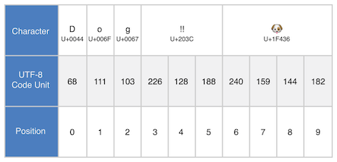for codeUnit in dogString.utf8 {
print("\(codeUnit) ", terminator: "")
}
print("")
// Prints "68 111 103 226 128 188 240 159 144 182 "
In the example above, the first three decimal ‘codeUnit’ values (‘68’, ‘111’, ‘103’) represent the characters ‘D’, ‘o’, and ‘g’, whose UTF-8 representation is the same as their ASCII representation. The next three decimal ‘codeUnit’ values (‘226’, ‘128’, ‘188’) are a three-byte UTF-8 representation of the ‘DOUBLE EXCLAMATION MARK’ character. The last four ‘codeUnit’ values (‘240’, ‘159’, ‘144’, ‘182’) are a four-byte UTF-8 representation of the ‘DOG FACE’ character.
Next: Unicode Scalar Representation, Previous: UTF-8 Representation, Up: Unicode Representations of Strings [Contents][Index]
You can access a UTF-16 representation of a ‘String’ by iterating over its ‘utf16’ property. This property is of type ‘String.UTF16View’, which is a collection of unsigned 16-bit (‘UInt16’) values, one for each 16-bit code unit in the string’s UTF-16 representation:
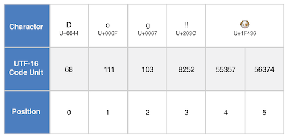for codeUnit in dogString.utf16 {
print("\(codeUnit) ", terminator: "")
}
print("")
// Prints "68 111 103 8252 55357 56374 "
Again, the first three ‘codeUnit’ values (‘68’, ‘111’, ‘103’) represent the characters ‘D’, ‘o’, and ‘g’, whose UTF-16 code units have the same values as in the string’s UTF-8 representation (because these Unicode scalars represent ASCII characters).
The fourth ‘codeUnit’ value (‘8252’) is a decimal equivalent of the hexadecimal value ‘203C’, which represents the Unicode scalar ‘U+203C’ for the ‘DOUBLE EXCLAMATION MARK’ character. This character can be represented as a single code unit in UTF-16.
The fifth and sixth ‘codeUnit’ values (‘55357’ and ‘56374’) are a UTF-16 surrogate pair representation of the ‘DOG FACE’ character. These values are a high-surrogate value of ‘U+D83D’ (decimal value ‘55357’) and a low-surrogate value of ‘U+DC36’ (decimal value ‘56374’).
Previous: UTF-16 Representation, Up: Unicode Representations of Strings [Contents][Index]
You can access a Unicode scalar representation of a ‘String’ value by iterating over its ‘unicodeScalars’ property. This property is of type ‘UnicodeScalarView’, which is a collection of values of type ‘UnicodeScalar’.
Each ‘UnicodeScalar’ has a ‘value’ property that returns the scalar’s 21-bit value, represented within a ‘UInt32’ value:
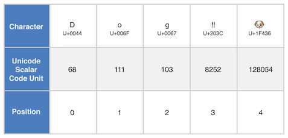for scalar in dogString.unicodeScalars {
print("\(scalar.value) ", terminator: "")
}
print("")
// Prints "68 111 103 8252 128054 "
The ‘value’ properties for the first three ‘UnicodeScalar’ values (‘68’, ‘111’, ‘103’) once again represent the characters ‘D’, ‘o’, and ‘g’.
The fourth ‘codeUnit’ value (‘8252’) is again a decimal equivalent of the hexadecimal value ‘203C’, which represents the Unicode scalar ‘U+203C’ for the ‘DOUBLE EXCLAMATION MARK’ character.
The ‘value’ property of the fifth and final ‘UnicodeScalar’, ‘128054’, is a decimal equivalent of the hexadecimal value ‘1F436’, which represents the Unicode scalar ‘U+1F436’ for the ‘DOG FACE’ character.
As an alternative to querying their ‘value’ properties, each ‘UnicodeScalar’ value can also be used to construct a new ‘String’ value, such as with string interpolation:
for scalar in dogString.unicodeScalars {
print("\(scalar) ")
}
// D
// o
// g
// ‼
// 🐶
Next: Control Flow 1, Previous: Strings and Characters, Up: Top [Contents][Index]
Swift provides three primary collection types, known as arrays, sets, and dictionaries, for storing collections of values. Arrays are ordered collections of values. Sets are unordered collections of unique values. Dictionaries are unordered collections of key-value associations.
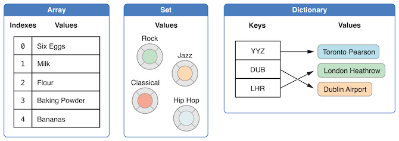Arrays, sets, and dictionaries in Swift are always clear about the types of values and keys that they can store. This means that you cannot insert a value of the wrong type into a collection by mistake. It also means you can be confident about the type of values you will retrieve from a collection.
Note
Swift’s array, set, and dictionary types are implemented as generic collections. For more about generic types and collections, see Generics.
| • Mutability of Collections | ||
| • Arrays | ||
| • Sets | ||
| • Performing Set Operations | ||
| • Dictionaries |
Next: Arrays, Up: Collection Types [Contents][Index]
If you create an array, a set, or a dictionary, and assign it to a variable, the collection that is created will be mutable. This means that you can change (or mutate) the collection after it’s created by adding, removing, or changing items in the collection. If you assign an array, a set, or a dictionary to a constant, that collection is immutable, and its size and contents cannot be changed.
Note
It is good practice to create immutable collections in all cases where the collection does not need to change. Doing so makes it easier for you to reason about your code and enables the Swift compiler to optimize the performance of the collections you create.
Next: Sets, Previous: Mutability of Collections, Up: Collection Types [Contents][Index]
An array stores values of the same type in an ordered list. The same value can appear in an array multiple times at different positions.
Note
Swift’s ‘Array’ type is bridged to Foundation’s ‘NSArray’ class.
For more information about using ‘Array’ with Foundation and Cocoa, see Bridging Between Array and NSArray [https://developer.apple.com/documentation/swift/array#2846730].
Next: Creating an Empty Array, Up: Arrays [Contents][Index]
The type of a Swift array is written in full as ‘Array<Element>’, where ‘Element’ is the type of values the array is allowed to store. You can also write the type of an array in shorthand form as ‘[Element]’. Although the two forms are functionally identical, the shorthand form is preferred and is used throughout this guide when referring to the type of an array.
Next: Creating an Array with a Default Value, Previous: Array Type Shorthand Syntax, Up: Arrays [Contents][Index]
You can create an empty array of a certain type using initializer syntax:
var someInts = [Int]()
print("someInts is of type [Int] with \(someInts.count) items.")
// Prints "someInts is of type [Int] with 0 items."
Note that the type of the ‘someInts’ variable is inferred to be ‘[Int]’ from the type of the initializer.
Alternatively, if the context already provides type information, such as a function argument or an already typed variable or constant, you can create an empty array with an empty array literal, which is written as ‘[]’ (an empty pair of square brackets):
someInts.append(3) // someInts now contains 1 value of type Int someInts = [] // someInts is now an empty array, but is still of type [Int]
Next: Creating an Array by Adding Two Arrays Together, Previous: Creating an Empty Array, Up: Arrays [Contents][Index]
Swift’s ‘Array’ type also provides an initializer for creating an array of a certain size with all of its values set to the same default value. You pass this initializer a default value of the appropriate type (called ‘repeating’): and the number of times that value is repeated in the new array (called ‘count’):
var threeDoubles = Array(repeating: 0.0, count: 3) // threeDoubles is of type [Double], and equals [0.0, 0.0, 0.0]
Next: Creating an Array with an Array Literal, Previous: Creating an Array with a Default Value, Up: Arrays [Contents][Index]
You can create a new array by adding together two existing arrays with compatible types with the addition operator (‘+’). The new array’s type is inferred from the type of the two arrays you add together:
var anotherThreeDoubles = Array(repeating: 2.5, count: 3) // anotherThreeDoubles is of type [Double], and equals [2.5, 2.5, 2.5] var sixDoubles = threeDoubles + anotherThreeDoubles // sixDoubles is inferred as [Double], and equals [0.0, 0.0, 0.0, 2.5, 2.5, 2.5]
Next: Accessing and Modifying an Array, Previous: Creating an Array by Adding Two Arrays Together, Up: Arrays [Contents][Index]
You can also initialize an array with an array literal, which is a shorthand way to write one or more values as an array collection. An array literal is written as a list of values, separated by commas, surrounded by a pair of square brackets:
[value 1, value 2, value 3]
The example below creates an array called ‘shoppingList’ to store ‘String’ values:
var shoppingList: [String] = ["Eggs", "Milk"] // shoppingList has been initialized with two initial items
The ‘shoppingList’ variable is declared as “an array of string values”, written as ‘[String]’. Because this particular array has specified a value type of ‘String’, it is allowed to store ‘String’ values only. Here, the ‘shoppingList’ array is initialized with two ‘String’ values (‘"Eggs"’ and ‘"Milk"’), written within an array literal.
Note
The ‘shoppingList’ array is declared as a variable (with the ‘var’ introducer) and not a constant (with the ‘let’ introducer) because more items are added to the shopping list in the examples below.
In this case, the array literal contains two ‘String’ values and nothing else. This matches the type of the ‘shoppingList’ variable’s declaration (an array that can only contain ‘String’ values), and so the assignment of the array literal is permitted as a way to initialize ‘shoppingList’ with two initial items.
Thanks to Swift’s type inference, you don’t have to write the type of the array if you’re initializing it with an array literal containing values of the same type. The initialization of ‘shoppingList’ could have been written in a shorter form instead:
var shoppingList = ["Eggs", "Milk"]
Because all values in the array literal are of the same type, Swift can infer that ‘[String]’ is the correct type to use for the ‘shoppingList’ variable.
Next: Iterating Over an Array, Previous: Creating an Array with an Array Literal, Up: Arrays [Contents][Index]
You access and modify an array through its methods and properties, or by using subscript syntax.
To find out the number of items in an array, check its read-only ‘count’ property:
print("The shopping list contains \(shoppingList.count) items.")
// Prints "The shopping list contains 2 items."
Use the Boolean ‘isEmpty’ property as a shortcut for checking whether the ‘count’ property is equal to ‘0’:
if shoppingList.isEmpty {
print("The shopping list is empty.")
} else {
print("The shopping list is not empty.")
}
// Prints "The shopping list is not empty."
You can add a new item to the end of an array by calling the array’s ‘append(_:)’ method:
shoppingList.append("Flour")
// shoppingList now contains 3 items, and someone is making pancakes
Alternatively, append an array of one or more compatible items with the addition assignment operator (‘+=’):
shoppingList += ["Baking Powder"] // shoppingList now contains 4 items shoppingList += ["Chocolate Spread", "Cheese", "Butter"] // shoppingList now contains 7 items
Retrieve a value from the array by using subscript syntax, passing the index of the value you want to retrieve within square brackets immediately after the name of the array:
var firstItem = shoppingList[0] // firstItem is equal to "Eggs"
Note
The first item in the array has an index of ‘0’, not ‘1’. Arrays in Swift are always zero-indexed.
You can use subscript syntax to change an existing value at a given index:
shoppingList[0] = "Six eggs" // the first item in the list is now equal to "Six eggs" rather than "Eggs"
When you use subscript syntax, the index you specify needs to be valid. For example, writing ‘shoppingList[shoppingList.count] = "Salt"’ to try to append an item to the end of the array results in a runtime error.
You can also use subscript syntax to change a range of values at once, even if the replacement set of values has a different length than the range you are replacing. The following example replaces ‘"Chocolate Spread"’, ‘"Cheese"’, and ‘"Butter"’ with ‘"Bananas"’ and ‘"Apples"’:
shoppingList[4...6] = ["Bananas", "Apples"] // shoppingList now contains 6 items
To insert an item into the array at a specified index, call the array’s ‘insert(_:at:)’ method:
shoppingList.insert("Maple Syrup", at: 0)
// shoppingList now contains 7 items
// "Maple Syrup" is now the first item in the list
This call to the ‘insert(_:at:)’ method inserts a new item with a value of ‘"Maple Syrup"’ at the very beginning of the shopping list, indicated by an index of ‘0’.
Similarly, you remove an item from the array with the ‘remove(at:)’ method. This method removes the item at the specified index and returns the removed item (although you can ignore the returned value if you do not need it):
let mapleSyrup = shoppingList.remove(at: 0) // the item that was at index 0 has just been removed // shoppingList now contains 6 items, and no Maple Syrup // the mapleSyrup constant is now equal to the removed "Maple Syrup" string
Note
If you try to access or modify a value for an index that is outside of an array’s existing bounds, you will trigger a runtime error. You can check that an index is valid before using it by comparing it to the array’s ‘count’ property. The largest valid index in an array is ‘count - 1’ because arrays are indexed from zero—however, when ‘count’ is ‘0’ (meaning the array is empty), there are no valid indexes.
Any gaps in an array are closed when an item is removed, and so the value at index ‘0’ is once again equal to ‘"Six eggs"’:
firstItem = shoppingList[0] // firstItem is now equal to "Six eggs"
If you want to remove the final item from an array, use the ‘removeLast()’ method rather than the ‘remove(at:)’ method to avoid the need to query the array’s ‘count’ property. Like the ‘remove(at:)’ method, ‘removeLast()’ returns the removed item:
let apples = shoppingList.removeLast() // the last item in the array has just been removed // shoppingList now contains 5 items, and no apples // the apples constant is now equal to the removed "Apples" string
Previous: Accessing and Modifying an Array, Up: Arrays [Contents][Index]
You can iterate over the entire set of values in an array with the ‘for’-‘in’ loop:
for item in shoppingList {
print(item)
}
// Six eggs
// Milk
// Flour
// Baking Powder
// Bananas
If you need the integer index of each item as well as its value, use the ‘enumerated()’ method to iterate over the array instead. For each item in the array, the ‘enumerated()’ method returns a tuple composed of an integer and the item. The integers start at zero and count up by one for each item; if you enumerate over a whole array, these integers match the items’ indices. You can decompose the tuple into temporary constants or variables as part of the iteration:
for (index, value) in shoppingList.enumerated() {
print("Item \(index + 1): \(value)")
}
// Item 1: Six eggs
// Item 2: Milk
// Item 3: Flour
// Item 4: Baking Powder
// Item 5: Bananas
For more about the ‘for’-‘in’ loop, see For-In Loops.
Next: Performing Set Operations, Previous: Arrays, Up: Collection Types [Contents][Index]
A set stores distinct values of the same type in a collection with no defined ordering. You can use a set instead of an array when the order of items is not important, or when you need to ensure that an item only appears once.
Note
Swift’s ‘Set’ type is bridged to Foundation’s ‘NSSet’ class.
For more information about using ‘Set’ with Foundation and Cocoa, see Bridging Between Set and NSSet [https://developer.apple.com/documentation/swift/set#2845530].
| • Hash Values for Set Types | ||
| • Set Type Syntax | ||
| • Creating and Initializing an Empty Set | ||
| • Creating a Set with an Array Literal | ||
| • Accessing and Modifying a Set | ||
| • Iterating Over a Set |
Next: Set Type Syntax, Up: Sets [Contents][Index]
A type must be hashable in order to be stored in a set—that is, the type must provide a way to compute a hash value for itself. A hash value is an ‘Int’ value that is the same for all objects that compare equally, such that if ‘a =’ b=, it follows that ‘a.hashValue =’ b.hashValue=.
All of Swift’s basic types (such as ‘String’, ‘Int’, ‘Double’, and ‘Bool’) are hashable by default, and can be used as set value types or dictionary key types. Enumeration case values without associated values (as described in Enumeration) are also hashable by default.
Note
You can use your own custom types as set value types or dictionary key types by making them conform to the ‘Hashable’ protocol from Swift’s standard library. Types that conform to the ‘Hashable’ protocol must provide a gettable ‘Int’ property called ‘hashValue’. The value returned by a type’s ‘hashValue’ property is not required to be the same across different executions of the same program, or in different programs.
Because the ‘Hashable’ protocol conforms to ‘Equatable’, conforming types must also provide an implementation of the equals operator (‘==’). The ‘Equatable’ protocol requires any conforming implementation of ‘==’ to be an equivalence relation. That is, an implementation of ‘==’ must satisfy the following three conditions, for all values ‘a’, ‘b’, and ‘c’:
For more information about conforming to protocols, see Protocols.
Next: Creating and Initializing an Empty Set, Previous: Hash Values for Set Types, Up: Sets [Contents][Index]
The type of a Swift set is written as ‘Set<Element>’, where ‘Element’ is the type that the set is allowed to store. Unlike arrays, sets do not have an equivalent shorthand form.
Next: Creating a Set with an Array Literal, Previous: Set Type Syntax, Up: Sets [Contents][Index]
You can create an empty set of a certain type using initializer syntax:
var letters = Set<Character>()
print("letters is of type Set<Character> with \(letters.count) items.")
// Prints "letters is of type Set<Character> with 0 items."
Note
The type of the ‘letters’ variable is inferred to be ‘Set<Character>’, from the type of the initializer.
Alternatively, if the context already provides type information, such as a function argument or an already typed variable or constant, you can create an empty set with an empty array literal:
letters.insert("a")
// letters now contains 1 value of type Character
letters = []
// letters is now an empty set, but is still of type Set<Character>
Next: Accessing and Modifying a Set, Previous: Creating and Initializing an Empty Set, Up: Sets [Contents][Index]
You can also initialize a set with an array literal, as a shorthand way to write one or more values as a set collection.
The example below creates a set called ‘favoriteGenres’ to store ‘String’ values:
var favoriteGenres: Set<String> = ["Rock", "Classical", "Hip hop"] // favoriteGenres has been initialized with three initial items
The ‘favoriteGenres’ variable is declared as “a set of ‘String’ values”, written as ‘Set<String>’. Because this particular set has specified a value type of ‘String’, it is only allowed to store ‘String’ values. Here, the ‘favoriteGenres’ set is initialized with three ‘String’ values (‘"Rock"’, ‘"Classical"’, and ‘"Hip hop"’), written within an array literal.
Note
The ‘favoriteGenres’ set is declared as a variable (with the ‘var’ introducer) and not a constant (with the ‘let’ introducer) because items are added and removed in the examples below.
A set type cannot be inferred from an array literal alone, so the type ‘Set’ must be explicitly declared. However, because of Swift’s type inference, you don’t have to write the type of the set’s elements if you’re initializing it with an array literal that contains values of just one type. The initialization of ‘favoriteGenres’ could have been written in a shorter form instead:
var favoriteGenres: Set = ["Rock", "Classical", "Hip hop"]
Because all values in the array literal are of the same type, Swift can infer that ‘Set<String>’ is the correct type to use for the ‘favoriteGenres’ variable.
Next: Iterating Over a Set, Previous: Creating a Set with an Array Literal, Up: Sets [Contents][Index]
You access and modify a set through its methods and properties.
To find out the number of items in a set, check its read-only ‘count’ property:
print("I have \(favoriteGenres.count) favorite music genres.")
// Prints "I have 3 favorite music genres."
Use the Boolean ‘isEmpty’ property as a shortcut for checking whether the ‘count’ property is equal to ‘0’:
if favoriteGenres.isEmpty {
print("As far as music goes, I'm not picky.")
} else {
print("I have particular music preferences.")
}
// Prints "I have particular music preferences."
You can add a new item into a set by calling the set’s ‘insert(_:)’ method:
favoriteGenres.insert("Jazz")
// favoriteGenres now contains 4 items
You can remove an item from a set by calling the set’s ‘remove(_:)’ method, which removes the item if it’s a member of the set, and returns the removed value, or returns ‘nil’ if the set did not contain it. Alternatively, all items in a set can be removed with its ‘removeAll()’ method.
if let removedGenre = favoriteGenres.remove("Rock") {
print("\(removedGenre)? I'm over it.")
} else {
print("I never much cared for that.")
}
// Prints "Rock? I'm over it."
To check whether a set contains a particular item, use the ‘contains(_:)’ method.
if favoriteGenres.contains("Funk") {
print("I get up on the good foot.")
} else {
print("It's too funky in here.")
}
// Prints "It's too funky in here."
Previous: Accessing and Modifying a Set, Up: Sets [Contents][Index]
You can iterate over the values in a set with a ‘for’-‘in’ loop.
for genre in favoriteGenres {
print("\(genre)")
}
// Classical
// Jazz
// Hip hop
For more about the ‘for’-‘in’ loop, see For-In Loops.
Swift’s ‘Set’ type does not have a defined ordering. To iterate over the values of a set in a specific order, use the ‘sorted()’ method, which returns the set’s elements as an array sorted using the ‘<’ operator.
for genre in favoriteGenres.sorted() {
print("\(genre)")
}
// Classical
// Hip hop
// Jazz
Next: Dictionaries, Previous: Sets, Up: Collection Types [Contents][Index]
You can efficiently perform fundamental set operations, such as combining two sets together, determining which values two sets have in common, or determining whether two sets contain all, some, or none of the same values.
| • Fundamental Set Operations | ||
| • Set Membership and Equality |
Next: Set Membership and Equality, Up: Performing Set Operations [Contents][Index]
The illustration below depicts two sets—‘a’ and ‘b’—with the results of various set operations represented by the shaded regions.
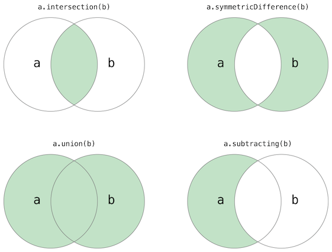let oddDigits: Set = [1, 3, 5, 7, 9] let evenDigits: Set = [0, 2, 4, 6, 8] let singleDigitPrimeNumbers: Set = [2, 3, 5, 7] oddDigits.union(evenDigits).sorted() // [0, 1, 2, 3, 4, 5, 6, 7, 8, 9] oddDigits.intersection(evenDigits).sorted() // [] oddDigits.subtracting(singleDigitPrimeNumbers).sorted() // [1, 9] oddDigits.symmetricDifference(singleDigitPrimeNumbers).sorted() // [1, 2, 9]
Previous: Fundamental Set Operations, Up: Performing Set Operations [Contents][Index]
The illustration below depicts three sets—‘a’, ‘b’ and ‘c’—with overlapping regions representing elements shared among sets. Set ‘a’ is a superset of set ‘b’, because ‘a’ contains all elements in ‘b’. Conversely, set ‘b’ is a subset of set ‘a’, because all elements in ‘b’ are also contained by ‘a’. Set ‘b’ and set ‘c’ are disjoint with one another, because they share no elements in common.
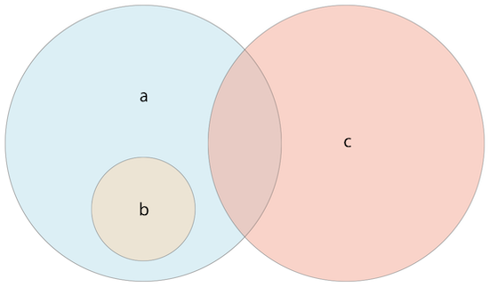let houseAnimals: Set = ["🐶", "🐱"] let farmAnimals: Set = ["🐮", "🐔", "🐑", "🐶", "🐱"] let cityAnimals: Set = ["🐦", "🐭"] houseAnimals.isSubset(of: farmAnimals) // true farmAnimals.isSuperset(of: houseAnimals) // true farmAnimals.isDisjoint(with: cityAnimals) // true
Previous: Performing Set Operations, Up: Collection Types [Contents][Index]
A dictionary stores associations between keys of the same type and values of the same type in a collection with no defined ordering. Each value is associated with a unique key, which acts as an identifier for that value within the dictionary. Unlike items in an array, items in a dictionary do not have a specified order. You use a dictionary when you need to look up values based on their identifier, in much the same way that a real-world dictionary is used to look up the definition for a particular word.
Note
Swift’s ‘Dictionary’ type is bridged to Foundation’s ‘NSDictionary’ class.
For more information about using ‘Dictionary’ with Foundation and Cocoa, see Bridging Between Dictionary and NSDictionary [https://developer.apple.com/documentation/swift/dictionary#2846239].
| • Dictionary Type Shorthand Syntax | ||
| • Creating an Empty Dictionary | ||
| • Creating a Dictionary with a Dictionary Literal | ||
| • Accessing and Modifying a Dictionary | ||
| • Iterating Over a Dictionary |
Next: Creating an Empty Dictionary, Up: Dictionaries [Contents][Index]
The type of a Swift dictionary is written in full as ‘Dictionary<Key, Value>’, where ‘Key’ is the type of value that can be used as a dictionary key, and ‘Value’ is the type of value that the dictionary stores for those keys.
Note
A dictionary ‘Key’ type must conform to the ‘Hashable’ protocol, like a set’s value type.
You can also write the type of a dictionary in shorthand form as ‘[Key: Value]’. Although the two forms are functionally identical, the shorthand form is preferred and is used throughout this guide when referring to the type of a dictionary.
Next: Creating a Dictionary with a Dictionary Literal, Previous: Dictionary Type Shorthand Syntax, Up: Dictionaries [Contents][Index]
As with arrays, you can create an empty ‘Dictionary’ of a certain type by using initializer syntax:
var namesOfIntegers = [Int: String]() // namesOfIntegers is an empty [Int: String] dictionary
This example creates an empty dictionary of type ‘[Int: String]’ to store human-readable names of integer values. Its keys are of type ‘Int’, and its values are of type ‘String’.
If the context already provides type information, you can create an empty dictionary with an empty dictionary literal, which is written as ‘[:]’ (a colon inside a pair of square brackets):
namesOfIntegers[16] = "sixteen" // namesOfIntegers now contains 1 key-value pair namesOfIntegers = [:] // namesOfIntegers is once again an empty dictionary of type [Int: String]
Next: Accessing and Modifying a Dictionary, Previous: Creating an Empty Dictionary, Up: Dictionaries [Contents][Index]
You can also initialize a dictionary with a dictionary literal, which has a similar syntax to the array literal seen earlier. A dictionary literal is a shorthand way to write one or more key-value pairs as a ‘Dictionary’ collection.
A key-value pair is a combination of a key and a value. In a dictionary literal, the key and value in each key-value pair are separated by a colon. The key-value pairs are written as a list, separated by commas, surrounded by a pair of square brackets:
[key 1: value 1, key 2: value 2, key 3: value 3]
The example below creates a dictionary to store the names of international airports. In this dictionary, the keys are three-letter International Air Transport Association codes, and the values are airport names:
var airports: [String: String] = ["YYZ": "Toronto Pearson", "DUB": "Dublin"]
The ‘airports’ dictionary is declared as having a type of ‘[String: String]’, which means “a ‘Dictionary’ whose keys are of type ‘String’, and whose values are also of type =String=”.
Note
The ‘airports’ dictionary is declared as a variable (with the ‘var’ introducer), and not a constant (with the ‘let’ introducer), because more airports are added to the dictionary in the examples below.
The ‘airports’ dictionary is initialized with a dictionary literal containing two key-value pairs. The first pair has a key of ‘"YYZ"’ and a value of ‘"Toronto Pearson"’. The second pair has a key of ‘"DUB"’ and a value of ‘"Dublin"’.
This dictionary literal contains two ‘String: String’ pairs. This key-value type matches the type of the ‘airports’ variable declaration (a dictionary with only ‘String’ keys, and only ‘String’ values), and so the assignment of the dictionary literal is permitted as a way to initialize the ‘airports’ dictionary with two initial items.
As with arrays, you don’t have to write the type of the dictionary if you’re initializing it with a dictionary literal whose keys and values have consistent types. The initialization of ‘airports’ could have been written in a shorter form instead:
var airports = ["YYZ": "Toronto Pearson", "DUB": "Dublin"]
Because all keys in the literal are of the same type as each other, and likewise all values are of the same type as each other, Swift can infer that ‘[String: String]’ is the correct type to use for the ‘airports’ dictionary.
Next: Iterating Over a Dictionary, Previous: Creating a Dictionary with a Dictionary Literal, Up: Dictionaries [Contents][Index]
You access and modify a dictionary through its methods and properties, or by using subscript syntax.
As with an array, you find out the number of items in a ‘Dictionary’ by checking its read-only ‘count’ property:
print("The airports dictionary contains \(airports.count) items.")
// Prints "The airports dictionary contains 2 items."
Use the Boolean ‘isEmpty’ property as a shortcut for checking whether the ‘count’ property is equal to ‘0’:
if airports.isEmpty {
print("The airports dictionary is empty.")
} else {
print("The airports dictionary is not empty.")
}
// Prints "The airports dictionary is not empty."
You can add a new item to a dictionary with subscript syntax. Use a new key of the appropriate type as the subscript index, and assign a new value of the appropriate type:
airports["LHR"] = "London" // the airports dictionary now contains 3 items
You can also use subscript syntax to change the value associated with a particular key:
airports["LHR"] = "London Heathrow" // the value for "LHR" has been changed to "London Heathrow"
As an alternative to subscripting, use a dictionary’s ‘updateValue(_:forKey:)’ method to set or update the value for a particular key. Like the subscript examples above, the ‘updateValue(_:forKey:)’ method sets a value for a key if none exists, or updates the value if that key already exists. Unlike a subscript, however, the ‘updateValue(_:forKey:)’ method returns the old value after performing an update. This enables you to check whether or not an update took place.
The ‘updateValue(_:forKey:)’ method returns an optional value of the dictionary’s value type. For a dictionary that stores ‘String’ values, for example, the method returns a value of type ‘String?’, or “optional ‘String=”. This optional value contains the old value for that key if one existed before the update, or =nil’ if no value existed:
if let oldValue = airports.updateValue("Dublin Airport", forKey: "DUB") {
print("The old value for DUB was \(oldValue).")
}
// Prints "The old value for DUB was Dublin."
You can also use subscript syntax to retrieve a value from the dictionary for a particular key. Because it is possible to request a key for which no value exists, a dictionary’s subscript returns an optional value of the dictionary’s value type. If the dictionary contains a value for the requested key, the subscript returns an optional value containing the existing value for that key. Otherwise, the subscript returns ‘nil’:
if let airportName = airports["DUB"] {
print("The name of the airport is \(airportName).")
} else {
print("That airport is not in the airports dictionary.")
}
// Prints "The name of the airport is Dublin Airport."
You can use subscript syntax to remove a key-value pair from a dictionary by assigning a value of ‘nil’ for that key:
airports["APL"] = "Apple International" // "Apple International" is not the real airport for APL, so delete it airports["APL"] = nil // APL has now been removed from the dictionary
Alternatively, remove a key-value pair from a dictionary with the ‘removeValue(forKey:)’ method. This method removes the key-value pair if it exists and returns the removed value, or returns ‘nil’ if no value existed:
if let removedValue = airports.removeValue(forKey: "DUB") {
print("The removed airport's name is \(removedValue).")
} else {
print("The airports dictionary does not contain a value for DUB.")
}
// Prints "The removed airport's name is Dublin Airport."
Previous: Accessing and Modifying a Dictionary, Up: Dictionaries [Contents][Index]
You can iterate over the key-value pairs in a dictionary with a ‘for’-‘in’ loop. Each item in the dictionary is returned as a ‘(key, value)’ tuple, and you can decompose the tuple’s members into temporary constants or variables as part of the iteration:
for (airportCode, airportName) in airports {
print("\(airportCode): \(airportName)")
}
// LHR: London Heathrow
// YYZ: Toronto Pearson
For more about the ‘for’-‘in’ loop, see For-In Loops.
You can also retrieve an iterable collection of a dictionary’s keys or values by accessing its ‘keys’ and ‘values’ properties:
for airportCode in airports.keys {
print("Airport code: \(airportCode)")
}
// Airport code: LHR
// Airport code: YYZ
for airportName in airports.values {
print("Airport name: \(airportName)")
}
// Airport name: London Heathrow
// Airport name: Toronto Pearson
If you need to use a dictionary’s keys or values with an API that takes an ‘Array’ instance, initialize a new array with the ‘keys’ or ‘values’ property:
let airportCodes = [String](airports.keys) // airportCodes is ["LHR", "YYZ"] let airportNames = [String](airports.values) // airportNames is ["London Heathrow", "Toronto Pearson"]
Swift’s ‘Dictionary’ type does not have a defined ordering. To iterate over the keys or values of a dictionary in a specific order, use the ‘sorted()’ method on its ‘keys’ or ‘values’ property.
Next: Functions, Previous: Collection Types, Up: Top [Contents][Index]
Swift provides a variety of control flow statements. These include ‘while’ loops to perform a task multiple times; ‘if’, ‘guard’, and ‘switch’ statements to execute different branches of code based on certain conditions; and statements such as ‘break’ and ‘continue’ to transfer the flow of execution to another point in your code.
Swift also provides a ‘for’-‘in’ loop that makes it easy to iterate over arrays, dictionaries, ranges, strings, and other sequences.
Swift’s ‘switch’ statement is considerably more powerful than its counterpart in many C-like languages. Cases can match many different patterns, including interval matches, tuples, and casts to a specific type. Matched values in a ‘switch’ case can be bound to temporary constants or variables for use within the case’s body, and complex matching conditions can be expressed with a ‘where’ clause for each case.
| • For-In Loops | ||
| • While Loops | ||
| • Conditional Statements | ||
| • Control Transfer Statements | ||
| • Early Exit | ||
| • Checking API Availability |
Next: While Loops, Up: Control Flow 1 [Contents][Index]
You use the ‘for’-‘in’ loop to iterate over a sequence, such as items in an array, ranges of numbers, or characters in a string.
This example uses a ‘for’-‘in’ loop to iterate over the items in an array:
let names = ["Anna", "Alex", "Brian", "Jack"]
for name in names {
print("Hello, \(name)!")
}
// Hello, Anna!
// Hello, Alex!
// Hello, Brian!
// Hello, Jack!
You can also iterate over a dictionary to access its key-value pairs. Each item in the dictionary is returned as a ‘(key, value)’ tuple when the dictionary is iterated, and you can decompose the ‘(key, value)’ tuple’s members as explicitly named constants for use within the body of the ‘for’-‘in’ loop. In the code example below, the dictionary’s keys are decomposed into a constant called ‘animalName’, and the dictionary’s values are decomposed into a constant called ‘legCount’.
let numberOfLegs = ["spider": 8, "ant": 6, "cat": 4]
for (animalName, legCount) in numberOfLegs {
print("\(animalName)s have \(legCount) legs")
}
// cats have 4 legs
// ants have 6 legs
// spiders have 8 legs
The contents of a ‘Dictionary’ are inherently unordered, and iterating over them does not guarantee the order in which they will be retrieved. In particular, the order you insert items into a ‘Dictionary’ doesn’t define the order they are iterated. For more about arrays and dictionaries, see Collection Types.
You can also use ‘for’-‘in’ loops with numeric ranges. This example prints the first few entries in a five-times table:
for index in 1...5 {
print("\(index) times 5 is \(index * 5)")
}
// 1 times 5 is 5
// 2 times 5 is 10
// 3 times 5 is 15
// 4 times 5 is 20
// 5 times 5 is 25
The sequence being iterated over is a range of numbers from ‘1’ to ‘5’, inclusive, as indicated by the use of the closed range operator (‘...’). The value of ‘index’ is set to the first number in the range (‘1’), and the statements inside the loop are executed. In this case, the loop contains only one statement, which prints an entry from the five-times table for the current value of ‘index’. After the statement is executed, the value of ‘index’ is updated to contain the second value in the range (‘2’), and the ‘print(_:separator:terminator:)’ function is called again. This process continues until the end of the range is reached.
In the example above, ‘index’ is a constant whose value is automatically set at the start of each iteration of the loop. As such, ‘index’ does not have to be declared before it is used. It is implicitly declared simply by its inclusion in the loop declaration, without the need for a ‘let’ declaration keyword.
If you don’t need each value from a sequence, you can ignore the values by using an underscore in place of a variable name.
let base = 3
let power = 10
var answer = 1
for _ in 1...power {
answer *= base
}
print("\(base) to the power of \(power) is \(answer)")
// Prints "3 to the power of 10 is 59049"
The example above calculates the value of one number to the power of another (in this case, ‘3’ to the power of ‘10’). It multiplies a starting value of ‘1’ (that is, ‘3’ to the power of ‘0’) by ‘3’, ten times, using a closed range that starts with ‘1’ and ends with ‘10’. For this calculation, the individual counter values each time through the loop are unnecessary—the code simply executes the loop the correct number of times. The underscore character (‘_’) used in place of a loop variable causes the individual values to be ignored and does not provide access to the current value during each iteration of the loop.
In some situations, you might not want to use closed ranges, which include both endpoints. Consider drawing the tick marks for every minute on a watch face. You want to draw ‘60’ tick marks, starting with the ‘0’ minute. Use the half-open range operator (‘..<’) to include the lower bound but not the upper bound. For more about ranges, see Range Operators.
let minutes = 60
for tickMark in 0..<minutes {
// render the tick mark each minute (60 times)
}
Some users might want fewer tick marks in their UI. They could prefer one mark every ‘5’ minutes instead. Use the ‘stride(from:to:by:)’ function to skip the unwanted marks.
let minuteInterval = 5
for tickMark in stride(from: 0, to: minutes, by: minuteInterval) {
// render the tick mark every 5 minutes (0, 5, 10, 15 ... 45, 50, 55)
}
Closed ranges are also available, by using ‘stride(from:through:by:)’ instead:
let hours = 12
let hourInterval = 3
for tickMark in stride(from: 3, through: hours, by: hourInterval) {
// render the tick mark every 3 hours (3, 6, 9, 12)
}
Next: Conditional Statements, Previous: For-In Loops, Up: Control Flow 1 [Contents][Index]
A ‘while’ loop performs a set of statements until a condition becomes ‘false’. These kinds of loops are best used when the number of iterations is not known before the first iteration begins. Swift provides two kinds of ‘while’ loops:
| • While | ||
| • Repeat-While |
Next: Repeat-While, Up: While Loops [Contents][Index]
A ‘while’ loop starts by evaluating a single condition. If the condition is ‘true’, a set of statements is repeated until the condition becomes ‘false’.
Here’s the general form of a ‘while’ loop:
while condition {
statements
}
This example plays a simple game of Snakes and Ladders (also known as Chutes and Ladders):
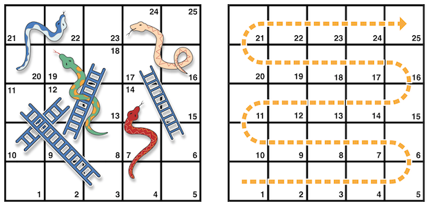The rules of the game are as follows:
The game board is represented by an array of ‘Int’ values. Its size is based on a constant called ‘finalSquare’, which is used to initialize the array and also to check for a win condition later in the example. Because the players start off the board, on “square zero”, the board is initialized with 26 zero ‘Int’ values, not 25.
let finalSquare = 25 var board = [Int](repeating: 0, count: finalSquare + 1)
Some squares are then set to have more specific values for the snakes and ladders. Squares with a ladder base have a positive number to move you up the board, whereas squares with a snake head have a negative number to move you back down the board.
board[03] = +08; board[06] = +11; board[09] = +09; board[10] = +02 board[14] = -10; board[19] = -11; board[22] = -02; board[24] = -08
Square 3 contains the bottom of a ladder that moves you up to square 11. To represent this, ‘board[03]’ is equal to ‘+08’, which is equivalent to an integer value of ‘8’ (the difference between ‘3’ and ‘11’). To align the values and statements, the unary plus operator (‘+i’) is explicitly used with the unary minus operator (‘-i’) and numbers lower than ‘10’ are padded with zeros. (Neither stylistic technique is strictly necessary, but they lead to neater code.)
var square = 0
var diceRoll = 0
while square < finalSquare {
// roll the dice
diceRoll += 1
if diceRoll == 7 { diceRoll = 1 }
// move by the rolled amount
square += diceRoll
if square < board.count {
// if we're still on the board, move up or down for a snake or a ladder
square += board[square]
}
}
print("Game over!")
The example above uses a very simple approach to dice rolling. Instead of generating a random number, it starts with a ‘diceRoll’ value of ‘0’. Each time through the ‘while’ loop, ‘diceRoll’ is incremented by one and is then checked to see whether it has become too large. Whenever this return value equals ‘7’, the dice roll has become too large and is reset to a value of ‘1’. The result is a sequence of ‘diceRoll’ values that is always ‘1’, ‘2’, ‘3’, ‘4’, ‘5’, ‘6’, ‘1’, ‘2’ and so on.
After rolling the dice, the player moves forward by ‘diceRoll’ squares. It’s possible that the dice roll may have moved the player beyond square 25, in which case the game is over. To cope with this scenario, the code checks that ‘square’ is less than the ‘board’ array’s ‘count’ property. If ‘square’ is valid, the value stored in ‘board[square]’ is added to the current ‘square’ value to move the player up or down any ladders or snakes.
Note
If this check is not performed, ‘board[square]’ might try to access a value outside the bounds of the ‘board’ array, which would trigger a runtime error.
The current ‘while’ loop execution then ends, and the loop’s condition is checked to see if the loop should be executed again. If the player has moved on or beyond square number ‘25’, the loop’s condition evaluates to ‘false’ and the game ends.
A ‘while’ loop is appropriate in this case, because the length of the game is not clear at the start of the ‘while’ loop. Instead, the loop is executed until a particular condition is satisfied.
Previous: While, Up: While Loops [Contents][Index]
The other variation of the ‘while’ loop, known as the ‘repeat’-‘while’ loop, performs a single pass through the loop block first, before considering the loop’s condition. It then continues to repeat the loop until the condition is ‘false’.
Note
The ‘repeat’-‘while’ loop in Swift is analogous to a ‘do’-‘while’ loop in other languages.
Here’s the general form of a ‘repeat’-‘while’ loop:
repeat {
statements
} while condition
Here’s the Snakes and Ladders example again, written as a ‘repeat’-‘while’ loop rather than a ‘while’ loop. The values of ‘finalSquare’, ‘board’, ‘square’, and ‘diceRoll’ are initialized in exactly the same way as with a ‘while’ loop.
let finalSquare = 25 var board = [Int](repeating: 0, count: finalSquare + 1) board[03] = +08; board[06] = +11; board[09] = +09; board[10] = +02 board[14] = -10; board[19] = -11; board[22] = -02; board[24] = -08 var square = 0 var diceRoll = 0
In this version of the game, the first action in the loop is to check for a ladder or a snake. No ladder on the board takes the player straight to square 25, and so it isn’t possible to win the game by moving up a ladder. Therefore, it’s safe to check for a snake or a ladder as the first action in the loop.
At the start of the game, the player is on “square zero”. ‘board[0]’ always equals ‘0’ and has no effect.
repeat {
// move up or down for a snake or ladder
square += board[square]
// roll the dice
diceRoll += 1
if diceRoll == 7 { diceRoll = 1 }
// move by the rolled amount
square += diceRoll
} while square < finalSquare
print("Game over!")
After the code checks for snakes and ladders, the dice is rolled and the player is moved forward by ‘diceRoll’ squares. The current loop execution then ends.
The loop’s condition (‘while square < finalSquare’) is the same as before, but this time it’s not evaluated until the end of the first run through the loop. The structure of the ‘repeat’-‘while’ loop is better suited to this game than the ‘while’ loop in the previous example. In the ‘repeat’-‘while’ loop above, ‘square +’ board[square]= is always executed immediately after the loop’s ‘while’ condition confirms that ‘square’ is still on the board. This behavior removes the need for the array bounds check seen in the ‘while’ loop version of the game described earlier.
Next: Control Transfer Statements, Previous: While Loops, Up: Control Flow 1 [Contents][Index]
It is often useful to execute different pieces of code based on certain conditions. You might want to run an extra piece of code when an error occurs, or to display a message when a value becomes too high or too low. To do this, you make parts of your code conditional.
Swift provides two ways to add conditional branches to your code: the ‘if’ statement and the ‘switch’ statement. Typically, you use the ‘if’ statement to evaluate simple conditions with only a few possible outcomes. The ‘switch’ statement is better suited to more complex conditions with multiple possible permutations and is useful in situations where pattern matching can help select an appropriate code branch to execute.
| • If | ||
| • Switch |
Next: Switch, Up: Conditional Statements [Contents][Index]
In its simplest form, the ‘if’ statement has a single ‘if’ condition. It executes a set of statements only if that condition is ‘true’.
var temperatureInFahrenheit = 30
if temperatureInFahrenheit <= 32 {
print("It's very cold. Consider wearing a scarf.")
}
// Prints "It's very cold. Consider wearing a scarf."
The example above checks whether the temperature is less than or equal to 32 degrees Fahrenheit (the freezing point of water). If it is, a message is printed. Otherwise, no message is printed, and code execution continues after the ‘if’ statement’s closing brace.
The ‘if’ statement can provide an alternative set of statements, known as an else clause, for situations when the ‘if’ condition is ‘false’. These statements are indicated by the ‘else’ keyword.
temperatureInFahrenheit = 40
if temperatureInFahrenheit <= 32 {
print("It's very cold. Consider wearing a scarf.")
} else {
print("It's not that cold. Wear a t-shirt.")
}
// Prints "It's not that cold. Wear a t-shirt."
One of these two branches is always executed. Because the temperature has increased to ‘40’ degrees Fahrenheit, it is no longer cold enough to advise wearing a scarf and so the ‘else’ branch is triggered instead.
You can chain multiple ‘if’ statements together to consider additional clauses.
temperatureInFahrenheit = 90
if temperatureInFahrenheit <= 32 {
print("It's very cold. Consider wearing a scarf.")
} else if temperatureInFahrenheit >= 86 {
print("It's really warm. Don't forget to wear sunscreen.")
} else {
print("It's not that cold. Wear a t-shirt.")
}
// Prints "It's really warm. Don't forget to wear sunscreen."
Here, an additional ‘if’ statement was added to respond to particularly warm temperatures. The final ‘else’ clause remains, and it prints a response for any temperatures that are neither too warm nor too cold.
The final ‘else’ clause is optional, however, and can be excluded if the set of conditions does not need to be complete.
temperatureInFahrenheit = 72
if temperatureInFahrenheit <= 32 {
print("It's very cold. Consider wearing a scarf.")
} else if temperatureInFahrenheit >= 86 {
print("It's really warm. Don't forget to wear sunscreen.")
}
Because the temperature is neither too cold nor too warm to trigger the ‘if’ or ‘else if’ conditions, no message is printed.
Previous: If, Up: Conditional Statements [Contents][Index]
A ‘switch’ statement considers a value and compares it against several possible matching patterns. It then executes an appropriate block of code, based on the first pattern that matches successfully. A ‘switch’ statement provides an alternative to the ‘if’ statement for responding to multiple potential states.
In its simplest form, a ‘switch’ statement compares a value against one or more values of the same type.
switch some value to consider {
case value 1:
respond to value 1
case value 2,
value 3:
respond to value 2 or 3
default:
otherwise, do something else
}
Every ‘switch’ statement consists of multiple possible cases, each of which begins with the ‘case’ keyword. In addition to comparing against specific values, Swift provides several ways for each case to specify more complex matching patterns. These options are described later in this chapter.
Like the body of an ‘if’ statement, each ‘case’ is a separate branch of code execution. The ‘switch’ statement determines which branch should be selected. This procedure is known as switching on the value that is being considered.
Every ‘switch’ statement must be exhaustive. That is, every possible value of the type being considered must be matched by one of the ‘switch’ cases. If it’s not appropriate to provide a case for every possible value, you can define a default case to cover any values that are not addressed explicitly. This default case is indicated by the ‘default’ keyword, and must always appear last.
This example uses a ‘switch’ statement to consider a single lowercase character called ‘someCharacter’:
let someCharacter: Character = "z"
switch someCharacter {
case "a":
print("The first letter of the alphabet")
case "z":
print("The last letter of the alphabet")
default:
print("Some other character")
}
// Prints "The last letter of the alphabet"
The ‘switch’ statement’s first case matches the first letter of the English alphabet, ‘a’, and its second case matches the last letter, ‘z’. Because the ‘switch’ must have a case for every possible character, not just every alphabetic character, this ‘switch’ statement uses a ‘default’ case to match all characters other than ‘a’ and ‘z’. This provision ensures that the ‘switch’ statement is exhaustive.
In contrast with ‘switch’ statements in C and Objective-C, ‘switch’ statements in Swift do not fall through the bottom of each case and into the next one by default. Instead, the entire ‘switch’ statement finishes its execution as soon as the first matching ‘switch’ case is completed, without requiring an explicit ‘break’ statement. This makes the ‘switch’ statement safer and easier to use than the one in C and avoids executing more than one ‘switch’ case by mistake.
Note
Although ‘break’ is not required in Swift, you can use a ‘break’ statement to match and ignore a particular case or to break out of a matched case before that case has completed its execution. For details, see Break in a Switch Statement.
The body of each case must contain at least one executable statement. It is not valid to write the following code, because the first case is empty:
let anotherCharacter: Character = "a"
switch anotherCharacter {
case "a": // Invalid, the case has an empty body
case "A":
print("The letter A")
default:
print("Not the letter A")
}
// This will report a compile-time error.
Unlike a ‘switch’ statement in C, this ‘switch’ statement does not match both ‘"a"’ and ‘"A"’. Rather, it reports a compile-time error that ‘case "a":’ does not contain any executable statements. This approach avoids accidental fallthrough from one case to another and makes for safer code that is clearer in its intent.
To make a ‘switch’ with a single case that matches both ‘"a"’ and ‘"A"’, combine the two values into a compound case, separating the values with commas.
let anotherCharacter: Character = "a"
switch anotherCharacter {
case "a", "A":
print("The letter A")
default:
print("Not the letter A")
}
// Prints "The letter A"
For readability, a compound case can also be written over multiple lines. For more information about compound cases, see Compound Cases.
Note
To explicitly fall through at the end of a particular ‘switch’ case, use the ‘fallthrough’ keyword, as described in Fallthrough.
Values in ‘switch’ cases can be checked for their inclusion in an interval. This example uses number intervals to provide a natural-language count for numbers of any size:
let approximateCount = 62
let countedThings = "moons orbiting Saturn"
let naturalCount: String
switch approximateCount {
case 0:
naturalCount = "no"
case 1..<5:
naturalCount = "a few"
case 5..<12:
naturalCount = "several"
case 12..<100:
naturalCount = "dozens of"
case 100..<1000:
naturalCount = "hundreds of"
default:
naturalCount = "many"
}
print("There are \(naturalCount) \(countedThings).")
// Prints "There are dozens of moons orbiting Saturn."
In the above example, ‘approximateCount’ is evaluated in a ‘switch’ statement. Each ‘case’ compares that value to a number or interval. Because the value of ‘approximateCount’ falls between 12 and 100, ‘naturalCount’ is assigned the value ‘"dozens of"’, and execution is transferred out of the ‘switch’ statement.
You can use tuples to test multiple values in the same ‘switch’ statement. Each element of the tuple can be tested against a different value or interval of values. Alternatively, use the underscore character (‘_’), also known as the wildcard pattern, to match any possible value.
The example below takes an (x, y) point, expressed as a simple tuple of type ‘(Int, Int)’, and categorizes it on the graph that follows the example.
let somePoint = (1, 1)
switch somePoint {
case (0, 0):
print("\(somePoint) is at the origin")
case (_, 0):
print("\(somePoint) is on the x-axis")
case (0, _):
print("\(somePoint) is on the y-axis")
case (-2...2, -2...2):
print("\(somePoint) is inside the box")
default:
print("\(somePoint) is outside of the box")
}
// Prints "(1, 1) is inside the box"
The ‘switch’ statement determines whether the point is at the origin (0, 0), on the red x-axis, on the orange y-axis, inside the blue 4-by-4 box centered on the origin, or outside of the box.
Unlike C, Swift allows multiple ‘switch’ cases to consider the same value or values. In fact, the point (0, 0) could match all four of the cases in this example. However, if multiple matches are possible, the first matching case is always used. The point (0, 0) would match ‘case (0, 0)’ first, and so all other matching cases would be ignored.
A ‘switch’ case can name the value or values it matches to temporary constants or variables, for use in the body of the case. This behavior is known as value binding, because the values are bound to temporary constants or variables within the case’s body.
The example below takes an (x, y) point, expressed as a tuple of type ‘(Int, Int)’, and categorizes it on the graph that follows:
let anotherPoint = (2, 0)
switch anotherPoint {
case (let x, 0):
print("on the x-axis with an x value of \(x)")
case (0, let y):
print("on the y-axis with a y value of \(y)")
case let (x, y):
print("somewhere else at (\(x), \(y))")
}
// Prints "on the x-axis with an x value of 2"
The ‘switch’ statement determines whether the point is on the red x-axis, on the orange y-axis, or elsewhere (on neither axis).
The three ‘switch’ cases declare placeholder constants ‘x’ and ‘y’, which temporarily take on one or both tuple values from ‘anotherPoint’. The first case, ‘case (let x, 0)’, matches any point with a ‘y’ value of ‘0’ and assigns the point’s ‘x’ value to the temporary constant ‘x’. Similarly, the second case, ‘case (0, let y)’, matches any point with an ‘x’ value of ‘0’ and assigns the point’s ‘y’ value to the temporary constant ‘y’.
After the temporary constants are declared, they can be used within the case’s code block. Here, they are used to print the categorization of the point.
This ‘switch’ statement does not have a ‘default’ case. The final case, ‘case let (x, y)’, declares a tuple of two placeholder constants that can match any value. Because ‘anotherPoint’ is always a tuple of two values, this case matches all possible remaining values, and a ‘default’ case is not needed to make the ‘switch’ statement exhaustive.
A ‘switch’ case can use a ‘where’ clause to check for additional conditions.
The example below categorizes an (x, y) point on the following graph:
let yetAnotherPoint = (1, -1)
switch yetAnotherPoint {
case let (x, y) where x == y:
print("(\(x), \(y)) is on the line x == y")
case let (x, y) where x == -y:
print("(\(x), \(y)) is on the line x == -y")
case let (x, y):
print("(\(x), \(y)) is just some arbitrary point")
}
// Prints "(1, -1) is on the line x == -y"
The ‘switch’ statement determines whether the point is on the green diagonal line where ‘x =’ y=, on the purple diagonal line where ‘x =’ -y=, or neither.
The three ‘switch’ cases declare placeholder constants ‘x’ and ‘y’, which temporarily take on the two tuple values from ‘yetAnotherPoint’. These constants are used as part of a ‘where’ clause, to create a dynamic filter. The ‘switch’ case matches the current value of ‘point’ only if the ‘where’ clause’s condition evaluates to ‘true’ for that value.
As in the previous example, the final case matches all possible remaining values, and so a ‘default’ case is not needed to make the ‘switch’ statement exhaustive.
Multiple switch cases that share the same body can be combined by writing several patterns after ‘case’, with a comma between each of the patterns. If any of the patterns match, then the case is considered to match. The patterns can be written over multiple lines if the list is long. For example:
let someCharacter: Character = "e"
switch someCharacter {
case "a", "e", "i", "o", "u":
print("\(someCharacter) is a vowel")
case "b", "c", "d", "f", "g", "h", "j", "k", "l", "m",
"n", "p", "q", "r", "s", "t", "v", "w", "x", "y", "z":
print("\(someCharacter) is a consonant")
default:
print("\(someCharacter) is not a vowel or a consonant")
}
// Prints "e is a vowel"
The ‘switch’ statement’s first case matches all five lowercase vowels in the English language. Similarly, its second case matches all lowercase English consonants. Finally, the ‘default’ case matches any other character.
Compound cases can also include value bindings. All of the patterns of a compound case have to include the same set of value bindings, and each binding has to get a value of the same type from all of the patterns in the compound case. This ensures that, no matter which part of the compound case matched, the code in the body of the case can always access a value for the bindings and that the value always has the same type.
let stillAnotherPoint = (9, 0)
switch stillAnotherPoint {
case (let distance, 0), (0, let distance):
print("On an axis, \(distance) from the origin")
default:
print("Not on an axis")
}
// Prints "On an axis, 9 from the origin"
The ‘case’ above has two patterns: ‘(let distance, 0)’ matches points on the x-axis and ‘(0, let distance)’ matches points on the y-axis. Both patterns include a binding for ‘distance’ and ‘distance’ is an integer in both patterns—which means that the code in the body of the ‘case’ can always access a value for ‘distance’.
Next: Early Exit, Previous: Conditional Statements, Up: Control Flow 1 [Contents][Index]
Control transfer statements change the order in which your code is executed, by transferring control from one piece of code to another. Swift has five control transfer statements:
The ‘continue’, ‘break’, and ‘fallthrough’ statements are described below. The ‘return’ statement is described in Functions, and the ‘throw’ statement is described in Propagating Errors Using Throwing Functions.
| • Continue | ||
| • Break | ||
| • Fallthrough | ||
| • Labeled Statements |
Next: Break, Up: Control Transfer Statements [Contents][Index]
The ‘continue’ statement tells a loop to stop what it is doing and start again at the beginning of the next iteration through the loop. It says “I am done with the current loop iteration” without leaving the loop altogether.
The following example removes all vowels and spaces from a lowercase string to create a cryptic puzzle phrase:
let puzzleInput = "great minds think alike"
var puzzleOutput = ""
let charactersToRemove: [Character] = ["a", "e", "i", "o", "u", " "]
for character in puzzleInput {
if charactersToRemove.contains(character) {
continue
}
puzzleOutput.append(character)
}
print(puzzleOutput)
// Prints "grtmndsthnklk"
The code above calls the ‘continue’ keyword whenever it matches a vowel or a space, causing the current iteration of the loop to end immediately and to jump straight to the start of the next iteration.
Next: Fallthrough, Previous: Continue, Up: Control Transfer Statements [Contents][Index]
The ‘break’ statement ends execution of an entire control flow statement immediately. The ‘break’ statement can be used inside a ‘switch’ or loop statement when you want to terminate the execution of the ‘switch’ or loop statement earlier than would otherwise be the case.
When used inside a loop statement, ‘break’ ends the loop’s execution immediately and transfers control to the code after the loop’s closing brace (‘}’). No further code from the current iteration of the loop is executed, and no further iterations of the loop are started.
When used inside a ‘switch’ statement, ‘break’ causes the ‘switch’ statement to end its execution immediately and to transfer control to the code after the ‘switch’ statement’s closing brace (‘}’).
This behavior can be used to match and ignore one or more cases in a ‘switch’ statement. Because Swift’s ‘switch’ statement is exhaustive and does not allow empty cases, it is sometimes necessary to deliberately match and ignore a case in order to make your intentions explicit. You do this by writing the ‘break’ statement as the entire body of the case you want to ignore. When that case is matched by the ‘switch’ statement, the ‘break’ statement inside the case ends the ‘switch’ statement’s execution immediately.
Note
A ‘switch’ case that contains only a comment is reported as a compile-time error. Comments are not statements and do not cause a ‘switch’ case to be ignored. Always use a ‘break’ statement to ignore a ‘switch’ case.
The following example switches on a ‘Character’ value and determines whether it represents a number symbol in one of four languages. For brevity, multiple values are covered in a single ‘switch’ case.
let numberSymbol: Character = "三" // Chinese symbol for the number 3
var possibleIntegerValue: Int?
switch numberSymbol {
case "1", "١", "一", "๑":
possibleIntegerValue = 1
case "2", "٢", "二", "๒":
possibleIntegerValue = 2
case "3", "٣", "三", "๓":
possibleIntegerValue = 3
case "4", "٤", "四", "๔":
possibleIntegerValue = 4
default:
break
}
if let integerValue = possibleIntegerValue {
print("The integer value of \(numberSymbol) is \(integerValue).")
} else {
print("An integer value could not be found for \(numberSymbol).")
}
// Prints "The integer value of 三 is 3."
This example checks ‘numberSymbol’ to determine whether it is a Latin, Arabic, Chinese, or Thai symbol for the numbers ‘1’ to ‘4’. If a match is found, one of the ‘switch’ statement’s cases sets an optional ‘Int?’ variable called ‘possibleIntegerValue’ to an appropriate integer value.
After the ‘switch’ statement completes its execution, the example uses optional binding to determine whether a value was found. The ‘possibleIntegerValue’ variable has an implicit initial value of ‘nil’ by virtue of being an optional type, and so the optional binding will succeed only if ‘possibleIntegerValue’ was set to an actual value by one of the ‘switch’ statement’s first four cases.
Because it’s not practical to list every possible ‘Character’ value in the example above, a ‘default’ case handles any characters that are not matched. This ‘default’ case does not need to perform any action, and so it is written with a single ‘break’ statement as its body. As soon as the ‘default’ case is matched, the ‘break’ statement ends the ‘switch’ statement’s execution, and code execution continues from the ‘if let’ statement.
Next: Labeled Statements, Previous: Break, Up: Control Transfer Statements [Contents][Index]
In Swift, ‘switch’ statements don’t fall through the bottom of each case and into the next one. That is, the entire ‘switch’ statement completes its execution as soon as the first matching case is completed. By contrast, C requires you to insert an explicit ‘break’ statement at the end of every ‘switch’ case to prevent fallthrough. Avoiding default fallthrough means that Swift ‘switch’ statements are much more concise and predictable than their counterparts in C, and thus they avoid executing multiple ‘switch’ cases by mistake.
If you need C-style fallthrough behavior, you can opt in to this behavior on a case-by-case basis with the ‘fallthrough’ keyword. The example below uses ‘fallthrough’ to create a textual description of a number.
let integerToDescribe = 5
var description = "The number \(integerToDescribe) is"
switch integerToDescribe {
case 2, 3, 5, 7, 11, 13, 17, 19:
description += " a prime number, and also"
fallthrough
default:
description += " an integer."
}
print(description)
// Prints "The number 5 is a prime number, and also an integer."
This example declares a new ‘String’ variable called ‘description’ and assigns it an initial value. The function then considers the value of ‘integerToDescribe’ using a ‘switch’ statement. If the value of ‘integerToDescribe’ is one of the prime numbers in the list, the function appends text to the end of ‘description’, to note that the number is prime. It then uses the ‘fallthrough’ keyword to “fall into” the ‘default’ case as well. The ‘default’ case adds some extra text to the end of the description, and the ‘switch’ statement is complete.
Unless the value of ‘integerToDescribe’ is in the list of known prime numbers, it is not matched by the first ‘switch’ case at all. Because there are no other specific cases, ‘integerToDescribe’ is matched by the ‘default’ case.
After the ‘switch’ statement has finished executing, the number’s description is printed using the ‘print(_:separator:terminator:)’ function. In this example, the number ‘5’ is correctly identified as a prime number.
Note
The ‘fallthrough’ keyword does not check the case conditions for the ‘switch’ case that it causes execution to fall into. The ‘fallthrough’ keyword simply causes code execution to move directly to the statements inside the next case (or ‘default’ case) block, as in C’s standard ‘switch’ statement behavior.
Previous: Fallthrough, Up: Control Transfer Statements [Contents][Index]
In Swift, you can nest loops and conditional statements inside other loops and conditional statements to create complex control flow structures. However, loops and conditional statements can both use the ‘break’ statement to end their execution prematurely. Therefore, it is sometimes useful to be explicit about which loop or conditional statement you want a ‘break’ statement to terminate. Similarly, if you have multiple nested loops, it can be useful to be explicit about which loop the ‘continue’ statement should affect.
To achieve these aims, you can mark a loop statement or conditional statement with a statement label. With a conditional statement, you can use a statement label with the ‘break’ statement to end the execution of the labeled statement. With a loop statement, you can use a statement label with the ‘break’ or ‘continue’ statement to end or continue the execution of the labeled statement.
A labeled statement is indicated by placing a label on the same line as the statement’s introducer keyword, followed by a colon. Here’s an example of this syntax for a ‘while’ loop, although the principle is the same for all loops and ‘switch’ statements:
label name: while condition {
statements
}
The following example uses the ‘break’ and ‘continue’ statements with a labeled ‘while’ loop for an adapted version of the Snakes and Ladders game that you saw earlier in this chapter. This time around, the game has an extra rule:
If a particular dice roll would take you beyond square 25, you must roll again until you roll the exact number needed to land on square 25.
The game board is the same as before.
The values of ‘finalSquare’, ‘board’, ‘square’, and ‘diceRoll’ are initialized in the same way as before:
let finalSquare = 25 var board = [Int](repeating: 0, count: finalSquare + 1) board[03] = +08; board[06] = +11; board[09] = +09; board[10] = +02 board[14] = -10; board[19] = -11; board[22] = -02; board[24] = -08 var square = 0 var diceRoll = 0
This version of the game uses a ‘while’ loop and a ‘switch’ statement to implement the game’s logic. The ‘while’ loop has a statement label called ‘gameLoop’ to indicate that it is the main game loop for the Snakes and Ladders game.
The ‘while’ loop’s condition is ‘while square !’ finalSquare=, to reflect that you must land exactly on square 25.
gameLoop: while square != finalSquare {
diceRoll += 1
if diceRoll == 7 { diceRoll = 1 }
switch square + diceRoll {
case finalSquare:
// diceRoll will move us to the final square, so the game is over
break gameLoop
case let newSquare where newSquare > finalSquare:
// diceRoll will move us beyond the final square, so roll again
continue gameLoop
default:
// this is a valid move, so find out its effect
square += diceRoll
square += board[square]
}
}
print("Game over!")
The dice is rolled at the start of each loop. Rather than moving the player immediately, the loop uses a ‘switch’ statement to consider the result of the move and to determine whether the move is allowed:
Note
If the ‘break’ statement above did not use the ‘gameLoop’ label, it would break out of the ‘switch’ statement, not the ‘while’ statement. Using the ‘gameLoop’ label makes it clear which control statement should be terminated.
It is not strictly necessary to use the ‘gameLoop’ label when calling ‘continue gameLoop’ to jump to the next iteration of the loop. There is only one loop in the game, and therefore no ambiguity as to which loop the ‘continue’ statement will affect. However, there is no harm in using the ‘gameLoop’ label with the ‘continue’ statement. Doing so is consistent with the label’s use alongside the ‘break’ statement and helps make the game’s logic clearer to read and understand.
Next: Checking API Availability, Previous: Control Transfer Statements, Up: Control Flow 1 [Contents][Index]
A ‘guard’ statement, like an ‘if’ statement, executes statements depending on the Boolean value of an expression. You use a ‘guard’ statement to require that a condition must be true in order for the code after the ‘guard’ statement to be executed. Unlike an ‘if’ statement, a ‘guard’ statement always has an ‘else’ clause—the code inside the ‘else’ clause is executed if the condition is not true.
func greet(person: [String: String]) {
guard let name = person["name"] else {
return
}
print("Hello \(name)!")
guard let location = person["location"] else {
print("I hope the weather is nice near you.")
return
}
print("I hope the weather is nice in \(location).")
}
greet(person: ["name": "John"])
// Prints "Hello John!"
// Prints "I hope the weather is nice near you."
greet(person: ["name": "Jane", "location": "Cupertino"])
// Prints "Hello Jane!"
// Prints "I hope the weather is nice in Cupertino."
If the ‘guard’ statement’s condition is met, code execution continues after the ‘guard’ statement’s closing brace. Any variables or constants that were assigned values using an optional binding as part of the condition are available for the rest of the code block that the ‘guard’ statement appears in.
If that condition is not met, the code inside the ‘else’ branch is executed. That branch must transfer control to exit the code block in which the ‘guard’ statement appears. It can do this with a control transfer statement such as ‘return’, ‘break’, ‘continue’, or ‘throw’, or it can call a function or method that doesn’t return, such as ‘fatalError(_:file:line:)’.
Using a ‘guard’ statement for requirements improves the readability of your code, compared to doing the same check with an ‘if’ statement. It lets you write the code that’s typically executed without wrapping it in an ‘else’ block, and it lets you keep the code that handles a violated requirement next to the requirement.
Previous: Early Exit, Up: Control Flow 1 [Contents][Index]
Swift has built-in support for checking API availability, which ensures that you don’t accidentally use APIs that are unavailable on a given deployment target.
The compiler uses availability information in the SDK to verify that all of the APIs used in your code are available on the deployment target specified by your project. Swift reports an error at compile time if you try to use an API that isn’t available.
You use an availability condition in an ‘if’ or ‘guard’ statement to conditionally execute a block of code, depending on whether the APIs you want to use are available at runtime. The compiler uses the information from the availability condition when it verifies that the APIs in that block of code are available.
if #available(iOS 10, macOS 10.12, *) {
// Use iOS 10 APIs on iOS, and use macOS 10.12 APIs on macOS
} else {
// Fall back to earlier iOS and macOS APIs
}
The availability condition above specifies that in iOS, the body of the ‘if’ statement executes only in iOS 10 and later; in macOS, only in macOS 10.12 and later. The last argument, ‘*’, is required and specifies that on any other platform, the body of the ‘if’ executes on the minimum deployment target specified by your target.
In its general form, the availability condition takes a list of platform names and versions. You use platform names such as ‘iOS’, ‘macOS’, ‘watchOS’, and ‘tvOS’—for the full list, see Declaration Attributes. In addition to specifying major version numbers like iOS 8 or macOS 10.10, you can specify minor versions numbers like iOS 11.2.6 and macOS 10.13.3.
if #available(platform name version, ..., *) {
statements to execute if the APIs are available
} else {
fallback statements to execute if the APIs are unavailable
}
Next: Closures, Previous: Control Flow 1, Up: Top [Contents][Index]
Functions are self-contained chunks of code that perform a specific task. You give a function a name that identifies what it does, and this name is used to “call” the function to perform its task when needed.
Swift’s unified function syntax is flexible enough to express anything from a simple C-style function with no parameter names to a complex Objective-C-style method with names and argument labels for each parameter. Parameters can provide default values to simplify function calls and can be passed as in-out parameters, which modify a passed variable once the function has completed its execution.
Every function in Swift has a type, consisting of the function’s parameter types and return type. You can use this type like any other type in Swift, which makes it easy to pass functions as parameters to other functions, and to return functions from functions. Functions can also be written within other functions to encapsulate useful functionality within a nested function scope.
| • Defining and Calling Functions | ||
| • Function Parameters and Return Values | ||
| • Function Argument Labels and Parameter Names | ||
| • Function Types | ||
| • Nested Functions |
Next: Function Parameters and Return Values, Up: Functions [Contents][Index]
When you define a function, you can optionally define one or more named, typed values that the function takes as input, known as parameters. You can also optionally define a type of value that the function will pass back as output when it is done, known as its return type.
Every function has a function name, which describes the task that the function performs. To use a function, you “call” that function with its name and pass it input values (known as arguments) that match the types of the function’s parameters. A function’s arguments must always be provided in the same order as the function’s parameter list.
The function in the example below is called ‘greet(person:)’, because that’s what it does—it takes a person’s name as input and returns a greeting for that person. To accomplish this, you define one input parameter—a ‘String’ value called ‘person’—and a return type of ‘String’, which will contain a greeting for that person:
func greet(person: String) -> String {
let greeting = "Hello, " + person + "!"
return greeting
}
All of this information is rolled up into the function’s definition, which is prefixed with the ‘func’ keyword. You indicate the function’s return type with the return arrow ‘->’ (a hyphen followed by a right angle bracket), which is followed by the name of the type to return.
The definition describes what the function does, what it expects to receive, and what it returns when it is done. The definition makes it easy for the function to be called unambiguously from elsewhere in your code:
print(greet(person: "Anna")) // Prints "Hello, Anna!" print(greet(person: "Brian")) // Prints "Hello, Brian!"
You call the ‘greet(person:)’ function by passing it a ‘String’ value after the ‘person’ argument label, such as ‘greet(person: "Anna")’. Because the function returns a ‘String’ value, ‘greet(person:)’ can be wrapped in a call to the ‘print(_:separator:terminator:)’ function to print that string and see its return value, as shown above.
Note
The ‘print(_:separator:terminator:)’ function doesn’t have a label for its first argument, and its other arguments are optional because they have a default value. These variations on function syntax are discussed below in Function Argument Labels and Parameter Names and Default Parameter Values.
The body of the ‘greet(person:)’ function starts by defining a new ‘String’ constant called ‘greeting’ and setting it to a simple greeting message. This greeting is then passed back out of the function using the ‘return’ keyword. In the line of code that says ‘return greeting’, the function finishes its execution and returns the current value of ‘greeting’.
You can call the ‘greet(person:)’ function multiple times with different input values. The example above shows what happens if it is called with an input value of ‘"Anna"’, and an input value of ‘"Brian"’. The function returns a tailored greeting in each case.
To make the body of this function shorter, you can combine the message creation and the return statement into one line:
func greetAgain(person: String) -> String {
return "Hello again, " + person + "!"
}
print(greetAgain(person: "Anna"))
// Prints "Hello again, Anna!"
Next: Function Argument Labels and Parameter Names, Previous: Defining and Calling Functions, Up: Functions [Contents][Index]
Function parameters and return values are extremely flexible in Swift. You can define anything from a simple utility function with a single unnamed parameter to a complex function with expressive parameter names and different parameter options.
| • Functions Without Parameters | ||
| • Functions With Multiple Parameters | ||
| • Functions Without Return Values | ||
| • Functions with Multiple Return Values | ||
| • Functions With an Implicit Return |
Next: Functions With Multiple Parameters, Up: Function Parameters and Return Values [Contents][Index]
Functions are not required to define input parameters. Here’s a function with no input parameters, which always returns the same ‘String’ message whenever it is called:
func sayHelloWorld() -> String {
return "hello, world"
}
print(sayHelloWorld())
// Prints "hello, world"
The function definition still needs parentheses after the function’s name, even though it does not take any parameters. The function name is also followed by an empty pair of parentheses when the function is called.
Next: Functions Without Return Values, Previous: Functions Without Parameters, Up: Function Parameters and Return Values [Contents][Index]
Functions can have multiple input parameters, which are written within the function’s parentheses, separated by commas.
This function takes a person’s name and whether they have already been greeted as input, and returns an appropriate greeting for that person:
func greet(person: String, alreadyGreeted: Bool) -> String {
if alreadyGreeted {
return greetAgain(person: person)
} else {
return greet(person: person)
}
}
print(greet(person: "Tim", alreadyGreeted: true))
// Prints "Hello again, Tim!"
You call the ‘greet(person:alreadyGreeted:)’ function by passing it both a ‘String’ argument value labeled ‘person’ and a ‘Bool’ argument value labeled ‘alreadyGreeted’ in parentheses, separated by commas. Note that this function is distinct from the ‘greet(person:)’ function shown in an earlier section. Although both functions have names that begin with ‘greet’, the ‘greet(person:alreadyGreeted:)’ function takes two arguments but the ‘greet(person:)’ function takes only one.
Next: Functions with Multiple Return Values, Previous: Functions With Multiple Parameters, Up: Function Parameters and Return Values [Contents][Index]
Functions are not required to define a return type. Here’s a version of the ‘greet(person:)’ function, which prints its own ‘String’ value rather than returning it:
func greet(person: String) {
print("Hello, \(person)!")
}
greet(person: "Dave")
// Prints "Hello, Dave!"
Because it does not need to return a value, the function’s definition does not include the return arrow (‘->’) or a return type.
Note
Strictly speaking, this version of the ‘greet(person:)’ function does still return a value, even though no return value is defined. Functions without a defined return type return a special value of type ‘Void’. This is simply an empty tuple, which is written as ‘()’.
The return value of a function can be ignored when it is called:
func printAndCount(string: String) -> Int {
print(string)
return string.count
}
func printWithoutCounting(string: String) {
let _ = printAndCount(string: string)
}
printAndCount(string: "hello, world")
// prints "hello, world" and returns a value of 12
printWithoutCounting(string: "hello, world")
// prints "hello, world" but does not return a value
The first function, ‘printAndCount(string:)’, prints a string, and then returns its character count as an ‘Int’. The second function, ‘printWithoutCounting(string:)’, calls the first function, but ignores its return value. When the second function is called, the message is still printed by the first function, but the returned value is not used.
Note
Return values can be ignored, but a function that says it will return a value must always do so. A function with a defined return type cannot allow control to fall out of the bottom of the function without returning a value, and attempting to do so will result in a compile-time error.
Next: Functions With an Implicit Return, Previous: Functions Without Return Values, Up: Function Parameters and Return Values [Contents][Index]
You can use a tuple type as the return type for a function to return multiple values as part of one compound return value.
The example below defines a function called ‘minMax(array:)’, which finds the smallest and largest numbers in an array of ‘Int’ values:
func minMax(array: [Int]) -> (min: Int, max: Int) {
var currentMin = array[0]
var currentMax = array[0]
for value in array[1..<array.count] {
if value < currentMin {
currentMin = value
} else if value > currentMax {
currentMax = value
}
}
return (currentMin, currentMax)
}
The ‘minMax(array:)’ function returns a tuple containing two ‘Int’ values. These values are labeled ‘min’ and ‘max’ so that they can be accessed by name when querying the function’s return value.
The body of the ‘minMax(array:)’ function starts by setting two working variables called ‘currentMin’ and ‘currentMax’ to the value of the first integer in the array. The function then iterates over the remaining values in the array and checks each value to see if it is smaller or larger than the values of ‘currentMin’ and ‘currentMax’ respectively. Finally, the overall minimum and maximum values are returned as a tuple of two ‘Int’ values.
Because the tuple’s member values are named as part of the function’s return type, they can be accessed with dot syntax to retrieve the minimum and maximum found values:
let bounds = minMax(array: [8, -6, 2, 109, 3, 71])
print("min is \(bounds.min) and max is \(bounds.max)")
// Prints "min is -6 and max is 109"
Note that the tuple’s members do not need to be named at the point that the tuple is returned from the function, because their names are already specified as part of the function’s return type.
If the tuple type to be returned from a function has the potential to have “no value” for the entire tuple, you can use an optional tuple return type to reflect the fact that the entire tuple can be ‘nil’. You write an optional tuple return type by placing a question mark after the tuple type’s closing parenthesis, such as ‘(Int, Int)?’ or ‘(String, Int, Bool)?’.
Note
An optional tuple type such as ‘(Int, Int)?’ is different from a tuple that contains optional types such as ‘(Int?, Int?)’. With an optional tuple type, the entire tuple is optional, not just each individual value within the tuple.
The ‘minMax(array:)’ function above returns a tuple containing two ‘Int’ values. However, the function does not perform any safety checks on the array it is passed. If the ‘array’ argument contains an empty array, the ‘minMax(array:)’ function, as defined above, will trigger a runtime error when attempting to access ‘array[0]’.
To handle an empty array safely, write the ‘minMax(array:)’ function with an optional tuple return type and return a value of ‘nil’ when the array is empty:
func minMax(array: [Int]) -> (min: Int, max: Int)? {
if array.isEmpty { return nil }
var currentMin = array[0]
var currentMax = array[0]
for value in array[1..<array.count] {
if value < currentMin {
currentMin = value
} else if value > currentMax {
currentMax = value
}
}
return (currentMin, currentMax)
}
You can use optional binding to check whether this version of the ‘minMax(array:)’ function returns an actual tuple value or ‘nil’:
if let bounds = minMax(array: [8, -6, 2, 109, 3, 71]) {
print("min is \(bounds.min) and max is \(bounds.max)")
}
// Prints "min is -6 and max is 109"
Previous: Functions with Multiple Return Values, Up: Function Parameters and Return Values [Contents][Index]
If the entire body of the function is a single expression, the function implicitly returns that expression. For example, both functions below have the same behavior:
func greeting(for person: String) -> String {
"Hello, " + person + "!"
}
print(greeting(for: "Dave"))
// Prints "Hello, Dave!"
func anotherGreeting(for person: String) -> String {
return "Hello, " + person + "!"
}
print(anotherGreeting(for: "Dave"))
// Prints "Hello, Dave!"
The entire definition of the ‘greeting(for:)’ function is the greeting message that it returns, which means it can use this shorter form. The ‘anotherGreeting(for:)’ function returns the same greeting message, using the ‘return’ keyword like a longer function. Any function that you write as just one ‘return’ line can omit the ‘return’.
As you’ll see in Shorthand Getter Declaration, property getters can also use an implicit return.
Next: Function Types, Previous: Function Parameters and Return Values, Up: Functions [Contents][Index]
Each function parameter has both an argument label and a parameter name. The argument label is used when calling the function; each argument is written in the function call with its argument label before it. The parameter name is used in the implementation of the function. By default, parameters use their parameter name as their argument label.
func someFunction(firstParameterName: Int, secondParameterName: Int) {
// In the function body, firstParameterName and secondParameterName
// refer to the argument values for the first and second parameters.
}
someFunction(firstParameterName: 1, secondParameterName: 2)
All parameters must have unique names. Although it’s possible for multiple parameters to have the same argument label, unique argument labels help make your code more readable.
| • Specifying Argument Labels | ||
| • Omitting Argument Labels | ||
| • Default Parameter Values | ||
| • Variadic Parameters | ||
| • In-Out Parameters |
You write an argument label before the parameter name, separated by a space:
func someFunction(argumentLabel parameterName: Int) {
// In the function body, parameterName refers to the argument value
// for that parameter.
}
Here’s a variation of the ‘greet(person:)’ function that takes a person’s name and hometown and returns a greeting:
func greet(person: String, from hometown: String) -> String {
return "Hello \(person)! Glad you could visit from \(hometown)."
}
print(greet(person: "Bill", from: "Cupertino"))
// Prints "Hello Bill! Glad you could visit from Cupertino."
The use of argument labels can allow a function to be called in an expressive, sentence-like manner, while still providing a function body that is readable and clear in intent.
Next: Default Parameter Values, Previous: Specifying Argument Labels, Up: Function Argument Labels and Parameter Names [Contents][Index]
If you don’t want an argument label for a parameter, write an underscore (‘_’) instead of an explicit argument label for that parameter.
func someFunction(_ firstParameterName: Int, secondParameterName: Int) {
// In the function body, firstParameterName and secondParameterName
// refer to the argument values for the first and second parameters.
}
someFunction(1, secondParameterName: 2)
If a parameter has an argument label, the argument must be labeled when you call the function.
Next: Variadic Parameters, Previous: Omitting Argument Labels, Up: Function Argument Labels and Parameter Names [Contents][Index]
You can define a default value for any parameter in a function by assigning a value to the parameter after that parameter’s type. If a default value is defined, you can omit that parameter when calling the function.
func someFunction(parameterWithoutDefault: Int, parameterWithDefault: Int = 12) {
// If you omit the second argument when calling this function, then
// the value of parameterWithDefault is 12 inside the function body.
}
someFunction(parameterWithoutDefault: 3, parameterWithDefault: 6) // parameterWithDefault is 6
someFunction(parameterWithoutDefault: 4) // parameterWithDefault is 12
Place parameters that don’t have default values at the beginning of a function’s parameter list, before the parameters that have default values. Parameters that don’t have default values are usually more important to the function’s meaning—writing them first makes it easier to recognize that the same function is being called, regardless of whether any default parameters are omitted.
Next: In-Out Parameters, Previous: Default Parameter Values, Up: Function Argument Labels and Parameter Names [Contents][Index]
A variadic parameter accepts zero or more values of a specified type. You use a variadic parameter to specify that the parameter can be passed a varying number of input values when the function is called. Write variadic parameters by inserting three period characters (‘...’) after the parameter’s type name.
The values passed to a variadic parameter are made available within the function’s body as an array of the appropriate type. For example, a variadic parameter with a name of ‘numbers’ and a type of ‘Double...’ is made available within the function’s body as a constant array called ‘numbers’ of type ‘[Double]’.
The example below calculates the arithmetic mean (also known as the average) for a list of numbers of any length:
func arithmeticMean(_ numbers: Double...) -> Double {
var total: Double = 0
for number in numbers {
total += number
}
return total / Double(numbers.count)
}
arithmeticMean(1, 2, 3, 4, 5)
// returns 3.0, which is the arithmetic mean of these five numbers
arithmeticMean(3, 8.25, 18.75)
// returns 10.0, which is the arithmetic mean of these three numbers
Note
A function may have at most one variadic parameter.
Previous: Variadic Parameters, Up: Function Argument Labels and Parameter Names [Contents][Index]
Function parameters are constants by default. Trying to change the value of a function parameter from within the body of that function results in a compile-time error. This means that you can’t change the value of a parameter by mistake. If you want a function to modify a parameter’s value, and you want those changes to persist after the function call has ended, define that parameter as an in-out parameter instead.
You write an in-out parameter by placing the ‘inout’ keyword right before a parameter’s type. An in-out parameter has a value that is passed in to the function, is modified by the function, and is passed back out of the function to replace the original value. For a detailed discussion of the behavior of in-out parameters and associated compiler optimizations, see (swift-reference)In-Out Parameters.
You can only pass a variable as the argument for an in-out parameter. You cannot pass a constant or a literal value as the argument, because constants and literals cannot be modified. You place an ampersand (‘&’) directly before a variable’s name when you pass it as an argument to an in-out parameter, to indicate that it can be modified by the function.
Note
In-out parameters cannot have default values, and variadic parameters cannot be marked as ‘inout’.
Here’s an example of a function called ‘swapTwoInts(_:_:)’, which has two in-out integer parameters called ‘a’ and ‘b’:
func swapTwoInts(_ a: inout Int, _ b: inout Int) {
let temporaryA = a
a = b
b = temporaryA
}
The ‘swapTwoInts(_:_:)’ function simply swaps the value of ‘b’ into ‘a’, and the value of ‘a’ into ‘b’. The function performs this swap by storing the value of ‘a’ in a temporary constant called ‘temporaryA’, assigning the value of ‘b’ to ‘a’, and then assigning ‘temporaryA’ to ‘b’.
You can call the ‘swapTwoInts(_:_:)’ function with two variables of type ‘Int’ to swap their values. Note that the names of ‘someInt’ and ‘anotherInt’ are prefixed with an ampersand when they are passed to the ‘swapTwoInts(_:_:)’ function:
var someInt = 3
var anotherInt = 107
swapTwoInts(&someInt, &anotherInt)
print("someInt is now \(someInt), and anotherInt is now \(anotherInt)")
// Prints "someInt is now 107, and anotherInt is now 3"
The example above shows that the original values of ‘someInt’ and ‘anotherInt’ are modified by the ‘swapTwoInts(_:_:)’ function, even though they were originally defined outside of the function.
Note
In-out parameters are not the same as returning a value from a function. The ‘swapTwoInts’ example above does not define a return type or return a value, but it still modifies the values of ‘someInt’ and ‘anotherInt’. In-out parameters are an alternative way for a function to have an effect outside of the scope of its function body.
Next: Nested Functions, Previous: Function Argument Labels and Parameter Names, Up: Functions [Contents][Index]
Every function has a specific function type, made up of the parameter types and the return type of the function.
For example:
func addTwoInts(_ a: Int, _ b: Int) -> Int {
return a + b
}
func multiplyTwoInts(_ a: Int, _ b: Int) -> Int {
return a * b
}
This example defines two simple mathematical functions called ‘addTwoInts’ and ‘multiplyTwoInts’. These functions each take two ‘Int’ values, and return an ‘Int’ value, which is the result of performing an appropriate mathematical operation.
The type of both of these functions is ‘(Int, Int) -> Int’. This can be read as:
“A function that has two parameters, both of type ‘Int’, and that returns a value of type ‘Int’.”
Here’s another example, for a function with no parameters or return value:
func printHelloWorld() {
print("hello, world")
}
The type of this function is ‘() -> Void’, or “a function that has no parameters, and returns ‘Void’.”
| • Using Function Types | ||
| • Function Types as Parameter Types | ||
| • Function Types as Return Types |
Next: Function Types as Parameter Types, Up: Function Types [Contents][Index]
You use function types just like any other types in Swift. For example, you can define a constant or variable to be of a function type and assign an appropriate function to that variable:
var mathFunction: (Int, Int) -> Int = addTwoInts
This can be read as:
“Define a variable called ‘mathFunction’, which has a type of ‘a function that takes two ‘Int’ values, and returns an ‘Int’ value.’ Set this new variable to refer to the function called ‘addTwoInts’.”
The ‘addTwoInts(_:_:)’ function has the same type as the ‘mathFunction’ variable, and so this assignment is allowed by Swift’s type-checker.
You can now call the assigned function with the name ‘mathFunction’:
print("Result: \(mathFunction(2, 3))")
// Prints "Result: 5"
A different function with the same matching type can be assigned to the same variable, in the same way as for nonfunction types:
mathFunction = multiplyTwoInts
print("Result: \(mathFunction(2, 3))")
// Prints "Result: 6"
As with any other type, you can leave it to Swift to infer the function type when you assign a function to a constant or variable:
let anotherMathFunction = addTwoInts // anotherMathFunction is inferred to be of type (Int, Int) -> Int
Next: Function Types as Return Types, Previous: Using Function Types, Up: Function Types [Contents][Index]
You can use a function type such as ‘(Int, Int) -> Int’ as a parameter type for another function. This enables you to leave some aspects of a function’s implementation for the function’s caller to provide when the function is called.
Here’s an example to print the results of the math functions from above:
func printMathResult(_ mathFunction: (Int, Int) -> Int, _ a: Int, _ b: Int) {
print("Result: \(mathFunction(a, b))")
}
printMathResult(addTwoInts, 3, 5)
// Prints "Result: 8"
This example defines a function called ‘printMathResult(_:_:_:)’, which has three parameters. The first parameter is called ‘mathFunction’, and is of type ‘(Int, Int) -> Int’. You can pass any function of that type as the argument for this first parameter. The second and third parameters are called ‘a’ and ‘b’, and are both of type ‘Int’. These are used as the two input values for the provided math function.
When ‘printMathResult(_:_:_:)’ is called, it is passed the ‘addTwoInts(_:_:)’ function, and the integer values ‘3’ and ‘5’. It calls the provided function with the values ‘3’ and ‘5’, and prints the result of ‘8’.
The role of ‘printMathResult(_:_:_:)’ is to print the result of a call to a math function of an appropriate type. It doesn’t matter what that function’s implementation actually does—it matters only that the function is of the correct type. This enables ‘printMathResult(_:_:_:)’ to hand off some of its functionality to the caller of the function in a type-safe way.
Previous: Function Types as Parameter Types, Up: Function Types [Contents][Index]
You can use a function type as the return type of another function. You do this by writing a complete function type immediately after the return arrow (‘->’) of the returning function.
The next example defines two simple functions called ‘stepForward(_:)’ and ‘stepBackward(_:)’. The ‘stepForward(_:)’ function returns a value one more than its input value, and the ‘stepBackward(_:)’ function returns a value one less than its input value. Both functions have a type of ‘(Int) -> Int’:
func stepForward(_ input: Int) -> Int {
return input + 1
}
func stepBackward(_ input: Int) -> Int {
return input - 1
}
Here’s a function called ‘chooseStepFunction(backward:)’, whose return type is ‘(Int) -> Int’. The ‘chooseStepFunction(backward:)’ function returns the ‘stepForward(_:)’ function or the ‘stepBackward(_:)’ function based on a Boolean parameter called ‘backward’:
func chooseStepFunction(backward: Bool) -> (Int) -> Int {
return backward ? stepBackward : stepForward
}
You can now use ‘chooseStepFunction(backward:)’ to obtain a function that will step in one direction or the other:
var currentValue = 3 let moveNearerToZero = chooseStepFunction(backward: currentValue > 0) // moveNearerToZero now refers to the stepBackward() function
The example above determines whether a positive or negative step is needed to move a variable called ‘currentValue’ progressively closer to zero. ‘currentValue’ has an initial value of ‘3’, which means that ‘currentValue > 0’ returns ‘true’, causing ‘chooseStepFunction(backward:)’ to return the ‘stepBackward(_:)’ function. A reference to the returned function is stored in a constant called ‘moveNearerToZero’.
Now that ‘moveNearerToZero’ refers to the correct function, it can be used to count to zero:
print("Counting to zero:")
// Counting to zero:
while currentValue != 0 {
print("\(currentValue)... ")
currentValue = moveNearerToZero(currentValue)
}
print("zero!")
// 3...
// 2...
// 1...
// zero!
Previous: Function Types, Up: Functions [Contents][Index]
All of the functions you have encountered so far in this chapter have been examples of global functions, which are defined at a global scope. You can also define functions inside the bodies of other functions, known as nested functions.
Nested functions are hidden from the outside world by default, but can still be called and used by their enclosing function. An enclosing function can also return one of its nested functions to allow the nested function to be used in another scope.
You can rewrite the ‘chooseStepFunction(backward:)’ example above to use and return nested functions:
func chooseStepFunction(backward: Bool) -> (Int) -> Int {
func stepForward(input: Int) -> Int { return input + 1 }
func stepBackward(input: Int) -> Int { return input - 1 }
return backward ? stepBackward : stepForward
}
var currentValue = -4
let moveNearerToZero = chooseStepFunction(backward: currentValue > 0)
// moveNearerToZero now refers to the nested stepForward() function
while currentValue != 0 {
print("\(currentValue)... ")
currentValue = moveNearerToZero(currentValue)
}
print("zero!")
// -4...
// -3...
// -2...
// -1...
// zero!
Next: Enumeration, Previous: Functions, Up: Top [Contents][Index]
Closures are self-contained blocks of functionality that can be passed around and used in your code. Closures in Swift are similar to blocks in C and Objective-C and to lambdas in other programming languages.
Closures can capture and store references to any constants and variables from the context in which they are defined. This is known as closing over those constants and variables. Swift handles all of the memory management of capturing for you.
Note
Don’t worry if you are not familiar with the concept of capturing. It is explained in detail below in Capturing Values.
Global and nested functions, as introduced in Functions, are actually special cases of closures. Closures take one of three forms:
Swift’s closure expressions have a clean, clear style, with optimizations that encourage brief, clutter-free syntax in common scenarios. These optimizations include:
| • Closure Expressions | ||
| • Trailing Closures | ||
| • Capturing Values | ||
| • Closures Are Reference Types | ||
| • Escaping Closures | ||
| • Autoclosures |
Next: Trailing Closures, Up: Closures [Contents][Index]
Nested functions, as introduced in Nested Functions, are a convenient means of naming and defining self-contained blocks of code as part of a larger function. However, it is sometimes useful to write shorter versions of function-like constructs without a full declaration and name. This is particularly true when you work with functions or methods that take functions as one or more of their arguments.
Closure expressions are a way to write inline closures in a brief, focused syntax. Closure expressions provide several syntax optimizations for writing closures in a shortened form without loss of clarity or intent. The closure expression examples below illustrate these optimizations by refining a single example of the ‘sorted(by:)’ method over several iterations, each of which expresses the same functionality in a more succinct way.
| • The Sorted Method | ||
| • Closure Expression Syntax | ||
| • Inferring Type From Context | ||
| • Implicit Returns from Single-Expression Closures | ||
| • Shorthand Argument Names | ||
| • Operator Methods |
Next: Closure Expression Syntax, Up: Closure Expressions [Contents][Index]
Swift’s standard library provides a method called ‘sorted(by:)’, which sorts an array of values of a known type, based on the output of a sorting closure that you provide. Once it completes the sorting process, the ‘sorted(by:)’ method returns a new array of the same type and size as the old one, with its elements in the correct sorted order. The original array is not modified by the ‘sorted(by:)’ method.
The closure expression examples below use the ‘sorted(by:)’ method to sort an array of ‘String’ values in reverse alphabetical order. Here’s the initial array to be sorted:
let names = ["Chris", "Alex", "Ewa", "Barry", "Daniella"]
The ‘sorted(by:)’ method accepts a closure that takes two arguments of the same type as the array’s contents, and returns a ‘Bool’ value to say whether the first value should appear before or after the second value once the values are sorted. The sorting closure needs to return ‘true’ if the first value should appear before the second value, and ‘false’ otherwise.
This example is sorting an array of ‘String’ values, and so the sorting closure needs to be a function of type ‘(String, String) -> Bool’.
One way to provide the sorting closure is to write a normal function of the correct type, and to pass it in as an argument to the ‘sorted(by:)’ method:
func backward(_ s1: String, _ s2: String) -> Bool {
return s1 > s2
}
var reversedNames = names.sorted(by: backward)
// reversedNames is equal to ["Ewa", "Daniella", "Chris", "Barry", "Alex"]
If the first string (‘s1’) is greater than the second string (‘s2’), the ‘backward(_:_:)’ function will return ‘true’, indicating that ‘s1’ should appear before ‘s2’ in the sorted array. For characters in strings, “greater than” means “appears later in the alphabet than”. This means that the letter ‘"B"’ is “greater than” the letter ‘"A"’, and the string ‘"Tom"’ is greater than the string ‘"Tim"’. This gives a reverse alphabetical sort, with ‘"Barry"’ being placed before ‘"Alex"’, and so on.
However, this is a rather long-winded way to write what is essentially a single-expression function (‘a > b’). In this example, it would be preferable to write the sorting closure inline, using closure expression syntax.
Next: Inferring Type From Context, Previous: The Sorted Method, Up: Closure Expressions [Contents][Index]
Closure expression syntax has the following general form:
{ (parameters) -> return type in
statements
}
The parameters in closure expression syntax can be in-out parameters, but they can’t have a default value. Variadic parameters can be used if you name the variadic parameter. Tuples can also be used as parameter types and return types.
The example below shows a closure expression version of the ‘backward(_:_:)’ function from above:
reversedNames = names.sorted(by: { (s1: String, s2: String) -> Bool in
return s1 > s2
})
Note that the declaration of parameters and return type for this inline closure is identical to the declaration from the ‘backward(_:_:)’ function. In both cases, it is written as ‘(s1: String, s2: String) -> Bool’. However, for the inline closure expression, the parameters and return type are written inside the curly braces, not outside of them.
The start of the closure’s body is introduced by the ‘in’ keyword. This keyword indicates that the definition of the closure’s parameters and return type has finished, and the body of the closure is about to begin.
Because the body of the closure is so short, it can even be written on a single line:
reversedNames = names.sorted(by: { (s1: String, s2: String) -> Bool in return s1 > s2 } )
This illustrates that the overall call to the ‘sorted(by:)’ method has remained the same. A pair of parentheses still wrap the entire argument for the method. However, that argument is now an inline closure.
Next: Implicit Returns from Single-Expression Closures, Previous: Closure Expression Syntax, Up: Closure Expressions [Contents][Index]
Because the sorting closure is passed as an argument to a method, Swift can infer the types of its parameters and the type of the value it returns. The ‘sorted(by:)’ method is being called on an array of strings, so its argument must be a function of type ‘(String, String) -> Bool’. This means that the ‘(String, String)’ and ‘Bool’ types do not need to be written as part of the closure expression’s definition. Because all of the types can be inferred, the return arrow (‘->’) and the parentheses around the names of the parameters can also be omitted:
reversedNames = names.sorted(by: { s1, s2 in return s1 > s2 } )
It is always possible to infer the parameter types and return type when passing a closure to a function or method as an inline closure expression. As a result, you never need to write an inline closure in its fullest form when the closure is used as a function or method argument.
Nonetheless, you can still make the types explicit if you wish, and doing so is encouraged if it avoids ambiguity for readers of your code. In the case of the ‘sorted(by:)’ method, the purpose of the closure is clear from the fact that sorting is taking place, and it is safe for a reader to assume that the closure is likely to be working with ‘String’ values, because it is assisting with the sorting of an array of strings.
Next: Shorthand Argument Names, Previous: Inferring Type From Context, Up: Closure Expressions [Contents][Index]
Single-expression closures can implicitly return the result of their single expression by omitting the ‘return’ keyword from their declaration, as in this version of the previous example:
reversedNames = names.sorted(by: { s1, s2 in s1 > s2 } )
Here, the function type of the ‘sorted(by:)’ method’s argument makes it clear that a ‘Bool’ value must be returned by the closure. Because the closure’s body contains a single expression (‘s1 > s2’) that returns a ‘Bool’ value, there is no ambiguity, and the ‘return’ keyword can be omitted.
Next: Operator Methods, Previous: Implicit Returns from Single-Expression Closures, Up: Closure Expressions [Contents][Index]
Swift automatically provides shorthand argument names to inline closures, which can be used to refer to the values of the closure’s arguments by the names ‘$0’, ‘$1’, ‘$2’, and so on.
If you use these shorthand argument names within your closure expression, you can omit the closure’s argument list from its definition, and the number and type of the shorthand argument names will be inferred from the expected function type. The ‘in’ keyword can also be omitted, because the closure expression is made up entirely of its body:
reversedNames = names.sorted(by: { $0 > $1 } )
Here, ‘$0’ and ‘$1’ refer to the closure’s first and second ‘String’ arguments.
Previous: Shorthand Argument Names, Up: Closure Expressions [Contents][Index]
There’s actually an even shorter way to write the closure expression above. Swift’s ‘String’ type defines its string-specific implementation of the greater-than operator (‘>’) as a method that has two parameters of type ‘String’, and returns a value of type ‘Bool’. This exactly matches the method type needed by the ‘sorted(by:)’ method. Therefore, you can simply pass in the greater-than operator, and Swift will infer that you want to use its string-specific implementation:
reversedNames = names.sorted(by: >)
For more about operator method, see Operator Methods.
Next: Capturing Values, Previous: Closure Expressions, Up: Closures [Contents][Index]
If you need to pass a closure expression to a function as the function’s final argument and the closure expression is long, it can be useful to write it as a trailing closure instead. A trailing closure is written after the function call’s parentheses, even though it is still an argument to the function. When you use the trailing closure syntax, you don’t write the argument label for the closure as part of the function call.
func someFunctionThatTakesAClosure(closure: () -> Void) {
// function body goes here
}
// Here's how you call this function without using a trailing closure:
someFunctionThatTakesAClosure(closure: {
// closure's body goes here
})
// Here's how you call this function with a trailing closure instead:
someFunctionThatTakesAClosure() {
// trailing closure's body goes here
}
The string-sorting closure from the Closure Expression Syntax section above can be written outside of the ‘sorted(by:)’ method’s parentheses as a trailing closure:
reversedNames = names.sorted() { $0 > $1 }
If a closure expression is provided as the function or method’s only argument and you provide that expression as a trailing closure, you do not need to write a pair of parentheses ‘()’ after the function or method’s name when you call the function:
reversedNames = names.sorted { $0 > $1 }
Trailing closures are most useful when the closure is sufficiently long that it is not possible to write it inline on a single line. As an example, Swift’s ‘Array’ type has a ‘map(_:)’ method which takes a closure expression as its single argument. The closure is called once for each item in the array, and returns an alternative mapped value (possibly of some other type) for that item. The nature of the mapping and the type of the returned value is left up to the closure to specify.
After applying the provided closure to each array element, the ‘map(_:)’ method returns a new array containing all of the new mapped values, in the same order as their corresponding values in the original array.
Here’s how you can use the ‘map(_:)’ method with a trailing closure to convert an array of ‘Int’ values into an array of ‘String’ values. The array ‘[16, 58, 510]’ is used to create the new array ‘["OneSix", "FiveEight", "FiveOneZero"]’:
let digitNames = [ 0: "Zero", 1: "One", 2: "Two", 3: "Three", 4: "Four", 5: "Five", 6: "Six", 7: "Seven", 8: "Eight", 9: "Nine" ] let numbers = [16, 58, 510]
The code above creates a dictionary of mappings between the integer digits and English-language versions of their names. It also defines an array of integers, ready to be converted into strings.
You can now use the ‘numbers’ array to create an array of ‘String’ values, by passing a closure expression to the array’s ‘map(_:)’ method as a trailing closure:
let strings = numbers.map { (number) -> String in
var number = number
var output = ""
repeat {
output = digitNames[number % 10]! + output
number /= 10
} while number > 0
return output
}
// strings is inferred to be of type [String]
// its value is ["OneSix", "FiveEight", "FiveOneZero"]
The ‘map(_:)’ method calls the closure expression once for each item in the array. You do not need to specify the type of the closure’s input parameter, ‘number’, because the type can be inferred from the values in the array to be mapped.
In this example, the variable ‘number’ is initialized with the value of the closure’s ‘number’ parameter, so that the value can be modified within the closure body. (The parameters to functions and closures are always constants.) The closure expression also specifies a return type of ‘String’, to indicate the type that will be stored in the mapped output array.
The closure expression builds a string called ‘output’ each time it is called. It calculates the last digit of ‘number’ by using the remainder operator (‘number % 10’), and uses this digit to look up an appropriate string in the ‘digitNames’ dictionary. The closure can be used to create a string representation of any integer greater than zero.
Note
The call to the ‘digitNames’ dictionary’s subscript is followed by an exclamation mark (‘!’), because dictionary subscripts return an optional value to indicate that the dictionary lookup can fail if the key does not exist. In the example above, it is guaranteed that ‘number % 10’ will always be a valid subscript key for the ‘digitNames’ dictionary, and so an exclamation mark is used to force-unwrap the ‘String’ value stored in the subscript’s optional return value.
The string retrieved from the ‘digitNames’ dictionary is added to the front of ‘output’, effectively building a string version of the number in reverse. (The expression ‘number % 10’ gives a value of ‘6’ for ‘16’, ‘8’ for ‘58’, and ‘0’ for ‘510’.)
The ‘number’ variable is then divided by ‘10’. Because it is an integer, it is rounded down during the division, so ‘16’ becomes ‘1’, ‘58’ becomes ‘5’, and ‘510’ becomes ‘51’.
The process is repeated until ‘number’ is equal to ‘0’, at which point the ‘output’ string is returned by the closure, and is added to the output array by the ‘map(_:)’ method.
The use of trailing closure syntax in the example above neatly encapsulates the closure’s functionality immediately after the function that closure supports, without needing to wrap the entire closure within the ‘map(_:)’ method’s outer parentheses.
Next: Closures Are Reference Types, Previous: Trailing Closures, Up: Closures [Contents][Index]
A closure can capture constants and variables from the surrounding context in which it is defined. The closure can then refer to and modify the values of those constants and variables from within its body, even if the original scope that defined the constants and variables no longer exists.
In Swift, the simplest form of a closure that can capture values is a nested function, written within the body of another function. A nested function can capture any of its outer function’s arguments and can also capture any constants and variables defined within the outer function.
Here’s an example of a function called ‘makeIncrementer’, which contains a nested function called ‘incrementer’. The nested ‘incrementer()’ function captures two values, ‘runningTotal’ and ‘amount’, from its surrounding context. After capturing these values, ‘incrementer’ is returned by ‘makeIncrementer’ as a closure that increments ‘runningTotal’ by ‘amount’ each time it is called.
func makeIncrementer(forIncrement amount: Int) -> () -> Int {
var runningTotal = 0
func incrementer() -> Int {
runningTotal += amount
return runningTotal
}
return incrementer
}
The return type of ‘makeIncrementer’ is ‘() -> Int’. This means that it returns a function, rather than a simple value. The function it returns has no parameters, and returns an ‘Int’ value each time it is called. To learn how functions can return other functions, see Function Types as Return Types.
The ‘makeIncrementer(forIncrement:)’ function defines an integer variable called ‘runningTotal’, to store the current running total of the incrementer that will be returned. This variable is initialized with a value of ‘0’.
The ‘makeIncrementer(forIncrement:)’ function has a single ‘Int’ parameter with an argument label of ‘forIncrement’, and a parameter name of ‘amount’. The argument value passed to this parameter specifies how much ‘runningTotal’ should be incremented by each time the returned incrementer function is called. The ‘makeIncrementer’ function defines a nested function called ‘incrementer’, which performs the actual incrementing. This function simply adds ‘amount’ to ‘runningTotal’, and returns the result.
When considered in isolation, the nested ‘incrementer()’ function might seem unusual:
func incrementer() -> Int {
runningTotal += amount
return runningTotal
}
The ‘incrementer()’ function doesn’t have any parameters, and yet it refers to ‘runningTotal’ and ‘amount’ from within its function body. It does this by capturing a reference to ‘runningTotal’ and ‘amount’ from the surrounding function and using them within its own function body. Capturing by reference ensures that ‘runningTotal’ and ‘amount’ do not disappear when the call to ‘makeIncrementer’ ends, and also ensures that ‘runningTotal’ is available the next time the ‘incrementer’ function is called.
Note
As an optimization, Swift may instead capture and store a copy of a value if that value is not mutated by a closure, and if the value is not mutated after the closure is created.
Swift also handles all memory management involved in disposing of variables when they are no longer needed.
Here’s an example of ‘makeIncrementer’ in action:
let incrementByTen = makeIncrementer(forIncrement: 10)
This example sets a constant called ‘incrementByTen’ to refer to an incrementer function that adds ‘10’ to its ‘runningTotal’ variable each time it is called. Calling the function multiple times shows this behavior in action:
incrementByTen() // returns a value of 10 incrementByTen() // returns a value of 20 incrementByTen() // returns a value of 30
If you create a second incrementer, it will have its own stored reference to a new, separate ‘runningTotal’ variable:
let incrementBySeven = makeIncrementer(forIncrement: 7) incrementBySeven() // returns a value of 7
Calling the original incrementer (‘incrementByTen’) again continues to increment its own ‘runningTotal’ variable, and does not affect the variable captured by ‘incrementBySeven’:
incrementByTen() // returns a value of 40
Note
If you assign a closure to a property of a class instance, and the closure captures that instance by referring to the instance or its members, you will create a strong reference cycle between the closure and the instance. Swift uses capture lists to break these strong reference cycles. For more information, see Strong Reference Cycles for Closures.
Next: Escaping Closures, Previous: Capturing Values, Up: Closures [Contents][Index]
In the example above, ‘incrementBySeven’ and ‘incrementByTen’ are constants, but the closures these constants refer to are still able to increment the ‘runningTotal’ variables that they have captured. This is because functions and closures are reference types.
Whenever you assign a function or a closure to a constant or a variable, you are actually setting that constant or variable to be a reference to the function or closure. In the example above, it is the choice of closure that ‘incrementByTen’ refers to that is constant, and not the contents of the closure itself.
This also means that if you assign a closure to two different constants or variables, both of those constants or variables refer to the same closure.
let alsoIncrementByTen = incrementByTen alsoIncrementByTen() // returns a value of 50 incrementByTen() // returns a value of 60
The example above shows that calling ‘alsoIncrementByTen’ is the same as calling ‘incrementByTen’. Because both of them refer to the same closure, they both increment and return the same running total.
Next: Autoclosures, Previous: Closures Are Reference Types, Up: Closures [Contents][Index]
A closure is said to escape a function when the closure is passed as an argument to the function, but is called after the function returns. When you declare a function that takes a closure as one of its parameters, you can write ‘@escaping’ before the parameter’s type to indicate that the closure is allowed to escape.
One way that a closure can escape is by being stored in a variable that is defined outside the function. As an example, many functions that start an asynchronous operation take a closure argument as a completion handler. The function returns after it starts the operation, but the closure isn’t called until the operation is completed—the closure needs to escape, to be called later. For example:
var completionHandlers: [() -> Void] = []
func someFunctionWithEscapingClosure(completionHandler: @escaping () -> Void) {
completionHandlers.append(completionHandler)
}
The ‘someFunctionWithEscapingClosure(_:)’ function takes a closure as its argument and adds it to an array that’s declared outside the function. If you didn’t mark the parameter of this function with ‘@escaping’, you would get a compile-time error.
Marking a closure with ‘@escaping’ means you have to refer to ‘self’ explicitly within the closure. For example, in the code below, the closure passed to ‘someFunctionWithEscapingClosure(_:)’ is an escaping closure, which means it needs to refer to ‘self’ explicitly. In contrast, the closure passed to ‘someFunctionWithNonescapingClosure(_:)’ is a nonescaping closure, which means it can refer to ‘self’ implicitly.
func someFunctionWithNonescapingClosure(closure: () -> Void) {
closure()
}
class SomeClass {
var x = 10
func doSomething() {
someFunctionWithEscapingClosure { self.x = 100 }
someFunctionWithNonescapingClosure { x = 200 }
}
}
let instance = SomeClass()
instance.doSomething()
print(instance.x)
// Prints "200"
completionHandlers.first?()
print(instance.x)
// Prints "100"
Previous: Escaping Closures, Up: Closures [Contents][Index]
An autoclosure is a closure that is automatically created to wrap an expression that’s being passed as an argument to a function. It doesn’t take any arguments, and when it’s called, it returns the value of the expression that’s wrapped inside of it. This syntactic convenience lets you omit braces around a function’s parameter by writing a normal expression instead of an explicit closure.
It’s common to call functions that take autoclosures, but it’s not common to implement that kind of function. For example, the ‘assert(condition:message:file:line:)’ function takes an autoclosure for its ‘condition’ and ‘message’ parameters; its ‘condition’ parameter is evaluated only in debug builds and its ‘message’ parameter is evaluated only if ‘condition’ is ‘false’.
An autoclosure lets you delay evaluation, because the code inside isn’t run until you call the closure. Delaying evaluation is useful for code that has side effects or is computationally expensive, because it lets you control when that code is evaluated. The code below shows how a closure delays evaluation.
var customersInLine = ["Chris", "Alex", "Ewa", "Barry", "Daniella"]
print(customersInLine.count)
// Prints "5"
let customerProvider = { customersInLine.remove(at: 0) }
print(customersInLine.count)
// Prints "5"
print("Now serving \(customerProvider())!")
// Prints "Now serving Chris!"
print(customersInLine.count)
// Prints "4"
Even though the first element of the ‘customersInLine’ array is removed by the code inside the closure, the array element isn’t removed until the closure is actually called. If the closure is never called, the expression inside the closure is never evaluated, which means the array element is never removed. Note that the type of ‘customerProvider’ is not ‘String’ but ‘() -> String’—a function with no parameters that returns a string.
You get the same behavior of delayed evaluation when you pass a closure as an argument to a function.
// customersInLine is ["Alex", "Ewa", "Barry", "Daniella"]
func serve(customer customerProvider: () -> String) {
print("Now serving \(customerProvider())!")
}
serve(customer: { customersInLine.remove(at: 0) } )
// Prints "Now serving Alex!"
The ‘serve(customer:)’ function in the listing above takes an explicit closure that returns a customer’s name. The version of ‘serve(customer:)’ below performs the same operation but, instead of taking an explicit closure, it takes an autoclosure by marking its parameter’s type with the ‘@autoclosure’ attribute. Now you can call the function as if it took a ‘String’ argument instead of a closure. The argument is automatically converted to a closure, because the ‘customerProvider’ parameter’s type is marked with the ‘@autoclosure’ attribute.
// customersInLine is ["Ewa", "Barry", "Daniella"]
func serve(customer customerProvider: @autoclosure () -> String) {
print("Now serving \(customerProvider())!")
}
serve(customer: customersInLine.remove(at: 0))
// Prints "Now serving Ewa!"
Note
Overusing autoclosures can make your code hard to understand. The context and function name should make it clear that evaluation is being deferred.
If you want an autoclosure that is allowed to escape, use both the ‘@autoclosure’ and ‘@escaping’ attributes. The ‘@escaping’ attribute is described above in Escaping Closures.
// customersInLine is ["Barry", "Daniella"]
var customerProviders: [() -> String] = []
func collectCustomerProviders(_ customerProvider: @autoclosure
@escaping () -> String) {
customerProviders.append(customerProvider)
}
collectCustomerProviders(customersInLine.remove(at: 0))
collectCustomerProviders(customersInLine.remove(at: 0))
print("Collected \(customerProviders.count) closures.")
// Prints "Collected 2 closures."
for customerProvider in customerProviders {
print("Now serving \(customerProvider())!")
}
// Prints "Now serving Barry!"
// Prints "Now serving Daniella!"
In the code above, instead of calling the closure passed to it as its ‘customerProvider’ argument, the ‘collectCustomerProviders(_:)’ function appends the closure to the ‘customerProviders’ array. The array is declared outside the scope of the function, which means the closures in the array can be executed after the function returns. As a result, the value of the ‘customerProvider’ argument must be allowed to escape the function’s scope.
Next: Structures and Classes, Previous: Closures, Up: Top [Contents][Index]
An enumeration defines a common type for a group of related values and enables you to work with those values in a type-safe way within your code.
If you are familiar with C, you will know that C enumerations assign related names to a set of integer values. Enumerations in Swift are much more flexible, and don’t have to provide a value for each case of the enumeration. If a value (known as a raw value) is provided for each enumeration case, the value can be a string, a character, or a value of any integer or floating-point type.
Alternatively, enumeration cases can specify associated values of any type to be stored along with each different case value, much as unions or variants do in other languages. You can define a common set of related cases as part of one enumeration, each of which has a different set of values of appropriate types associated with it.
Enumerations in Swift are first-class types in their own right. They adopt many features traditionally supported only by classes, such as computed properties to provide additional information about the enumeration’s current value, and instance methods to provide functionality related to the values the enumeration represents. Enumerations can also define initializers to provide an initial case value; can be extended to expand their functionality beyond their original implementation; and can conform to protocols to provide standard functionality.
For more about these capabilities, see Properties, Methods, Initialization, Extensions, and Protocols.
| • Enumeration Syntax | ||
| • Matching Enumeration Values with a Switch Statement | ||
| • Iterating over Enumeration Cases | ||
| • Associated Values | ||
| • Raw Values | ||
| • Recursive Enumerations |
You introduce enumerations with the ‘enum’ keyword and place their entire definition within a pair of braces:
enum SomeEnumeration {
// enumeration definition goes here
}
Here’s an example for the four main points of a compass:
enum CompassPoint {
case north
case south
case east
case west
}
The values defined in an enumeration (such as ‘north’, ‘south’, ‘east’, and ‘west’) are its enumeration cases. You use the ‘case’ keyword to introduce new enumeration cases.
Note
Swift enumeration cases don’t have an integer value set by default, unlike languages like C and Objective-C. In the ‘CompassPoint’ example above, ‘north’, ‘south’, ‘east’ and ‘west’ don’t implicitly equal ‘0’, ‘1’, ‘2’ and ‘3’. Instead, the different enumeration cases are values in their own right, with an explicitly defined type of ‘CompassPoint’.
Multiple cases can appear on a single line, separated by commas:
enum Planet {
case mercury, venus, earth, mars, jupiter, saturn, uranus, neptune
}
Each enumeration definition defines a new type. Like other types in Swift, their names (such as ‘CompassPoint’ and ‘Planet’) start with a capital letter. Give enumeration types singular rather than plural names, so that they read as self-evident:
var directionToHead = CompassPoint.west
The type of ‘directionToHead’ is inferred when it’s initialized with one of the possible values of ‘CompassPoint’. Once ‘directionToHead’ is declared as a ‘CompassPoint’, you can set it to a different ‘CompassPoint’ value using a shorter dot syntax:
directionToHead = .east
The type of ‘directionToHead’ is already known, and so you can drop the type when setting its value. This makes for highly readable code when working with explicitly typed enumeration values.
Next: Iterating over Enumeration Cases, Previous: Enumeration Syntax, Up: Enumeration [Contents][Index]
You can match individual enumeration values with a ‘switch’ statement:
directionToHead = .south
switch directionToHead {
case .north:
print("Lots of planets have a north")
case .south:
print("Watch out for penguins")
case .east:
print("Where the sun rises")
case .west:
print("Where the skies are blue")
}
// Prints "Watch out for penguins"
You can read this code as:
“Consider the value of ‘directionToHead’. In the case where it equals ‘.north’, print ‘"Lots of planets have a north"’. In the case where it equals ‘.south’, print ‘"Watch out for penguins"’.”
…and so on.
As described in Control Flow, a ‘switch’ statement must be exhaustive when considering an enumeration’s cases. If the ‘case’ for ‘.west’ is omitted, this code doesn’t compile, because it doesn’t consider the complete list of ‘CompassPoint’ cases. Requiring exhaustiveness ensures that enumeration cases aren’t accidentally omitted.
When it isn’t appropriate to provide a ‘case’ for every enumeration case, you can provide a ‘default’ case to cover any cases that aren’t addressed explicitly:
let somePlanet = Planet.earth
switch somePlanet {
case .earth:
print("Mostly harmless")
default:
print("Not a safe place for humans")
}
// Prints "Mostly harmless"
Next: Associated Values, Previous: Matching Enumeration Values with a Switch Statement, Up: Enumeration [Contents][Index]
For some enumerations, it’s useful to have a collection of all of that enumeration’s cases. You enable this by writing ‘: CaseIterable’ after the enumeration’s name. Swift exposes a collection of all the cases as an ‘allCases’ property of the enumeration type. Here’s an example:
enum Beverage: CaseIterable {
case coffee, tea, juice
}
let numberOfChoices = Beverage.allCases.count
print("\(numberOfChoices) beverages available")
// Prints "3 beverages available"
In the example above, you write ‘Beverage.allCases’ to access a collection that contains all of the cases of the ‘Beverage’ enumeration. You can use ‘allCases’ like any other collection—the collection’s elements are instances of the enumeration type, so in this case they’re ‘Beverage’ values. The example above counts how many cases there are, and the example below uses a ‘for’ loop to iterate over all the cases.
for beverage in Beverage.allCases {
print(beverage)
}
// coffee
// tea
// juice
The syntax used in the examples above marks the enumeration as conforming to the ‘CaseIterable’ [https://developer.apple.com/documentation/swift/caseiterable] protocol. For information about protocols, see Protocols.
Next: Raw Values, Previous: Iterating over Enumeration Cases, Up: Enumeration [Contents][Index]
The examples in the previous section show how the cases of an enumeration are a defined (and typed) value in their own right. You can set a constant or variable to ‘Planet.earth’, and check for this value later. However, it’s sometimes useful to be able to store values of other types alongside these case values. This additional information is called an associated value, and it varies each time you use that case as a value in your code.
You can define Swift enumerations to store associated values of any given type, and the value types can be different for each case of the enumeration if needed. Enumerations similar to these are known as discriminated unions, tagged unions, or variants in other programming languages.
For example, suppose an inventory tracking system needs to track products by two different types of barcode. Some products are labeled with 1D barcodes in UPC format, which uses the numbers ‘0’ to ‘9’. Each barcode has a number system digit, followed by five manufacturer code digits and five product code digits. These are followed by a check digit to verify that the code has been scanned correctly:
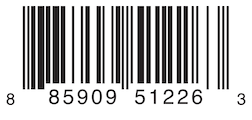Other products are labeled with 2D barcodes in QR code format, which can use any ISO 8859-1 character and can encode a string up to 2,953 characters long:
It’s convenient for an inventory tracking system to store UPC barcodes as a tuple of four integers, and QR code barcodes as a string of any length.
In Swift, an enumeration to define product barcodes of either type might look like this:
enum Barcode {
case upc(Int, Int, Int, Int)
case qrCode(String)
}
This can be read as:
“Define an enumeration type called ‘Barcode’, which can take either a value of ‘upc’ with an associated value of type (‘Int’, ‘Int’, ‘Int’, ‘Int’), or a value of ‘qrCode’ with an associated value of type ‘String’.”
This definition doesn’t provide any actual ‘Int’ or ‘String’ values—it just defines the type of associated values that ‘Barcode’ constants and variables can store when they are equal to ‘Barcode.upc’ or ‘Barcode.qrCode’.
You can then create new barcodes using either type:
var productBarcode = Barcode.upc(8, 85909, 51226, 3)
This example creates a new variable called ‘productBarcode’ and assigns it a value of ‘Barcode.upc’ with an associated tuple value of ‘(8, 85909, 51226, 3)’.
You can assign the same product a different type of barcode:
productBarcode = .qrCode("ABCDEFGHIJKLMNOP")
At this point, the original ‘Barcode.upc’ and its integer values are replaced by the new ‘Barcode.qrCode’ and its string value. Constants and variables of type ‘Barcode’ can store either a ‘.upc’ or a ‘.qrCode’ (together with their associated values), but they can store only one of them at any given time.
You can check the different barcode types using a switch statement, similar to the example in Matching Enumeration Values with a Switch Statement. This time, however, the associated values are extracted as part of the switch statement. You extract each associated value as a constant (with the ‘let’ prefix) or a variable (with the ‘var’ prefix) for use within the ‘switch’ case’s body:
switch productBarcode {
case .upc(let numberSystem, let manufacturer, let product, let check):
print("UPC: \(numberSystem), \(manufacturer), \(product), \(check).")
case .qrCode(let productCode):
print("QR code: \(productCode).")
}
// Prints "QR code: ABCDEFGHIJKLMNOP."
If all of the associated values for an enumeration case are extracted as constants, or if all are extracted as variables, you can place a single ‘var’ or ‘let’ annotation before the case name, for brevity:
switch productBarcode {
case let .upc(numberSystem, manufacturer, product, check):
print("UPC : \(numberSystem), \(manufacturer), \(product), \(check).")
case let .qrCode(productCode):
print("QR code: \(productCode).")
}
// Prints "QR code: ABCDEFGHIJKLMNOP."
Next: Recursive Enumerations, Previous: Associated Values, Up: Enumeration [Contents][Index]
The barcode example in Associated Values shows how cases of an enumeration can declare that they store associated values of different types. As an alternative to associated values, enumeration cases can come prepopulated with default values (called raw values), which are all of the same type.
Here’s an example that stores raw ASCII values alongside named enumeration cases:
enum ASCIIControlCharacter: Character {
case tab = "\t"
case lineFeed = "\n"
case carriageReturn = "\r"
}
Here, the raw values for an enumeration called ‘ASCIIControlCharacter’ are defined to be of type ‘Character’, and are set to some of the more common ASCII control characters. ‘Character’ values are described in Strings and Characters.
Raw values can be strings, characters, or any of the integer or floating-point number types. Each raw value must be unique within its enumeration declaration.
Note
Raw values are not the same as associated values. Raw values are set to prepopulated values when you first define the enumeration in your code, like the three ASCII codes above. The raw value for a particular enumeration case is always the same. Associated values are set when you create a new constant or variable based on one of the enumeration’s cases, and can be different each time you do so.
| • Implicitly Assigned Raw Values | ||
| • Initializing from a Raw Value |
Next: Initializing from a Raw Value, Up: Raw Values [Contents][Index]
When you’re working with enumerations that store integer or string raw values, you don’t have to explicitly assign a raw value for each case. When you don’t, Swift automatically assigns the values for you.
For example, when integers are used for raw values, the implicit value for each case is one more than the previous case. If the first case doesn’t have a value set, its value is ‘0’.
The enumeration below is a refinement of the earlier ‘Planet’ enumeration, with integer raw values to represent each planet’s order from the sun:
enum Planet: Int {
case mercury = 1, venus, earth, mars, jupiter, saturn, uranus, neptune
}
In the example above, ‘Planet.mercury’ has an explicit raw value of ‘1’, ‘Planet.venus’ has an implicit raw value of ‘2’, and so on.
When strings are used for raw values, the implicit value for each case is the text of that case’s name.
The enumeration below is a refinement of the earlier ‘CompassPoint’ enumeration, with string raw values to represent each direction’s name:
enum CompassPoint: String {
case north, south, east, west
}
In the example above, ‘CompassPoint.south’ has an implicit raw value of ‘"south"’, and so on.
You access the raw value of an enumeration case with its ‘rawValue’ property:
let earthsOrder = Planet.earth.rawValue // earthsOrder is 3 let sunsetDirection = CompassPoint.west.rawValue // sunsetDirection is "west"
Previous: Implicitly Assigned Raw Values, Up: Raw Values [Contents][Index]
If you define an enumeration with a raw-value type, the enumeration automatically receives an initializer that takes a value of the raw value’s type (as a parameter called ‘rawValue’) and returns either an enumeration case or ‘nil’. You can use this initializer to try to create a new instance of the enumeration.
This example identifies Uranus from its raw value of ‘7’:
let possiblePlanet = Planet(rawValue: 7) // possiblePlanet is of type Planet? and equals Planet.uranus
Not all possible ‘Int’ values will find a matching planet, however. Because of this, the raw value initializer always returns an optional enumeration case. In the example above, ‘possiblePlanet’ is of type ‘Planet?’, or “optional ‘Planet’.”
Note
The raw value initializer is a failable initializer, because not every raw value will return an enumeration case. For more information, see Failable Initializers.
If you try to find a planet with a position of ‘11’, the optional ‘Planet’ value returned by the raw value initializer will be ‘nil’:
let positionToFind = 11
if let somePlanet = Planet(rawValue: positionToFind) {
switch somePlanet {
case .earth:
print("Mostly harmless")
default:
print("Not a safe place for humans")
}
} else {
print("There isn't a planet at position \(positionToFind)")
}
// Prints "There isn't a planet at position 11"
This example uses optional binding to try to access a planet with a raw value of ‘11’. The statement ‘if let somePlanet = Planet(rawValue: 11)’ creates an optional ‘Planet’, and sets ‘somePlanet’ to the value of that optional ‘Planet’ if it can be retrieved. In this case, it isn’t possible to retrieve a planet with a position of ‘11’, and so the ‘else’ branch is executed instead.
Previous: Raw Values, Up: Enumeration [Contents][Index]
A recursive enumeration is an enumeration that has another instance of the enumeration as the associated value for one or more of the enumeration cases. You indicate that an enumeration case is recursive by writing ‘indirect’ before it, which tells the compiler to insert the necessary layer of indirection.
For example, here is an enumeration that stores simple arithmetic expressions:
enum ArithmeticExpression {
case number(Int)
indirect case addition(ArithmeticExpression, ArithmeticExpression)
indirect case multiplication(ArithmeticExpression, ArithmeticExpression)
}
You can also write ‘indirect’ before the beginning of the enumeration to enable indirection for all of the enumeration’s cases that have an associated value:
indirect enum ArithmeticExpression {
case number(Int)
case addition(ArithmeticExpression, ArithmeticExpression)
case multiplication(ArithmeticExpression, ArithmeticExpression)
}
This enumeration can store three kinds of arithmetic expressions: a plain number, the addition of two expressions, and the multiplication of two expressions. The ‘addition’ and ‘multiplication’ cases have associated values that are also arithmetic expressions—these associated values make it possible to nest expressions. For example, the expression ‘(5 + 4) * 2’ has a number on the right-hand side of the multiplication and another expression on the left-hand side of the multiplication. Because the data is nested, the enumeration used to store the data also needs to support nesting—this means the enumeration needs to be recursive. The code below shows the ‘ArithmeticExpression’ recursive enumeration being created for ‘(5 + 4) * 2’:
let five = ArithmeticExpression.number(5) let four = ArithmeticExpression.number(4) let sum = ArithmeticExpression.addition(five, four) let product = ArithmeticExpression.multiplication(sum, ArithmeticExpression.number(2))
A recursive function is a straightforward way to work with data that has a recursive structure. For example, here’s a function that evaluates an arithmetic expression:
func evaluate(_ expression: ArithmeticExpression) -> Int {
switch expression {
case let .number(value):
return value
case let .addition(left, right):
return evaluate(left) + evaluate(right)
case let .multiplication(left, right):
return evaluate(left) * evaluate(right)
}
}
print(evaluate(product))
// Prints "18"
This function evaluates a plain number by simply returning the associated value. It evaluates an addition or multiplication by evaluating the expression on the left-hand side, evaluating the expression on the right-hand side, and then adding them or multiplying them.
Next: Properties, Previous: Enumeration, Up: Top [Contents][Index]
Structures and classes are general-purpose, flexible constructs that become the building blocks of your program’s code. You define properties and methods to add functionality to your structures and classes using the same syntax you use to define constants, variables, and functions.
Unlike other programming languages, Swift doesn’t require you to create separate interface and implementation files for custom structures and classes. In Swift, you define a structure or class in a single file, and the external interface to that class or structure is automatically made available for other code to use.
Note
An instance of a class is traditionally known as an object. However, Swift structures and classes are much closer in functionality than in other languages, and much of this chapter describes functionality that applies to instances of either a class or a structure type. Because of this, the more general term instance is used.
| • Comparing Structures and Classes | ||
| • Structures and Enumerations Are Value Types | ||
| • Classes Are Reference Types |
Structures and classes in Swift have many things in common. Both can:
For more information, see Properties, Methods, Subscripts, Initialization, Extensions, and Protocols.
Classes have additional capabilities that structures don’t have:
For more information, see Inheritance, Type Casting, Deinitialization, and Automatic Reference Counting.
The additional capabilities that classes support come at the cost of increased complexity. As a general guideline, prefer structures because they’re easier to reason about, and use classes when they’re appropriate or necessary. In practice, this means most of the custom data types you define will be structures and enumerations. For a more detailed comparison, see Choosing Between Structures and Classes [https://developer.apple.com/documentation/swift/choosing_between_structures_and_classes].
| • Definition Syntax | ||
| • Structure and Class Instances | ||
| • Accessing Properties | ||
| • Memberwise Initializers for Structure Types |
Structures and classes have a similar definition syntax. You introduce structures with the ‘struct’ keyword and classes with the ‘class’ keyword. Both place their entire definition within a pair of braces:
struct SomeStructure {
// structure definition goes here
}
class SomeClass {
// class definition goes here
}
Note
Whenever you define a new structure or class, you define a new Swift type. Give types ‘UpperCamelCase’ names (such as ‘SomeStructure’ and ‘SomeClass’ here) to match the capitalization of standard Swift types (such as ‘String’, ‘Int’, and ‘Bool’). Give properties and methods ‘lowerCamelCase’ names (such as ‘frameRate’ and ‘incrementCount’) to differentiate them from type names.
Here’s an example of a structure definition and a class definition:
struct Resolution {
var width = 0
var height = 0
}
class VideoMode {
var resolution = Resolution()
var interlaced = false
var frameRate = 0.0
var name: String?
}
The example above defines a new structure called ‘Resolution’, to describe a pixel-based display resolution. This structure has two stored properties called ‘width’ and ‘height’. Stored properties are constants or variables that are bundled up and stored as part of the structure or class. These two properties are inferred to be of type ‘Int’ by setting them to an initial integer value of ‘0’.
The example above also defines a new class called ‘VideoMode’, to describe a specific video mode for video display. This class has four variable stored properties. The first, ‘resolution’, is initialized with a new ‘Resolution’ structure instance, which infers a property type of ‘Resolution’. For the other three properties, new ‘VideoMode’ instances will be initialized with an ‘interlaced’ setting of ‘false’ (meaning “noninterlaced video”), a playback frame rate of ‘0.0’, and an optional ‘String’ value called ‘name’. The ‘name’ property is automatically given a default value of ‘nil’, or “no ‘name’ value”, because it’s of an optional type.
Next: Accessing Properties, Previous: Definition Syntax, Up: Comparing Structures and Classes [Contents][Index]
The ‘Resolution’ structure definition and the ‘VideoMode’ class definition only describe what a ‘Resolution’ or ‘VideoMode’ will look like. They themselves don’t describe a specific resolution or video mode. To do that, you need to create an instance of the structure or class.
The syntax for creating instances is very similar for both structures and classes:
let someResolution = Resolution() let someVideoMode = VideoMode()
Structures and classes both use initializer syntax for new instances. The simplest form of initializer syntax uses the type name of the class or structure followed by empty parentheses, such as ‘Resolution()’ or ‘VideoMode()’. This creates a new instance of the class or structure, with any properties initialized to their default values. Class and structure initialization is described in more detail in Initialization.
Next: Memberwise Initializers for Structure Types, Previous: Structure and Class Instances, Up: Comparing Structures and Classes [Contents][Index]
You can access the properties of an instance using dot syntax. In dot syntax, you write the property name immediately after the instance name, separated by a period (‘.’), without any spaces:
print("The width of someResolution is \(someResolution.width)")
// Prints "The width of someResolution is 0"
In this example, ‘someResolution.width’ refers to the ‘width’ property of ‘someResolution’, and returns its default initial value of ‘0’.
You can drill down into subproperties, such as the ‘width’ property in the ‘resolution’ property of a ‘VideoMode’:
print("The width of someVideoMode is \(someVideoMode.resolution.width)")
// Prints "The width of someVideoMode is 0"
You can also use dot syntax to assign a new value to a variable property:
someVideoMode.resolution.width = 1280
print("The width of someVideoMode is now \(someVideoMode.resolution.width)")
// Prints "The width of someVideoMode is now 1280"
Previous: Accessing Properties, Up: Comparing Structures and Classes [Contents][Index]
All structures have an automatically generated memberwise initializer, which you can use to initialize the member properties of new structure instances. Initial values for the properties of the new instance can be passed to the memberwise initializer by name:
let vga = Resolution(width: 640, height: 480)
Unlike structures, class instances don’t receive a default memberwise initializer. Initializers are described in more detail in Initialization.
Next: Classes Are Reference Types, Previous: Comparing Structures and Classes, Up: Structures and Classes [Contents][Index]
A value type is a type whose value is copied when it’s assigned to a variable or constant, or when it’s passed to a function.
You’ve actually been using value types extensively throughout the previous chapters. In fact, all of the basic types in Swift—integers, floating-point numbers, Booleans, strings, arrays and dictionaries—are value types, and are implemented as structures behind the scenes.
All structures and enumerations are value types in Swift. This means that any structure and enumeration instances you create—and any value types they have as properties—are always copied when they are passed around in your code.
Note
Collections defined by the standard library like arrays, dictionaries, and strings use an optimization to reduce the performance cost of copying. Instead of making a copy immediately, these collections share the memory where the elements are stored between the original instance and any copies. If one of the copies of the collection is modified, the elements are copied just before the modification. The behavior you see in your code is always as if a copy took place immediately.
Consider this example, which uses the ‘Resolution’ structure from the previous example:
let hd = Resolution(width: 1920, height: 1080) var cinema = hd
This example declares a constant called ‘hd’ and sets it to a ‘Resolution’ instance initialized with the width and height of full HD video (1920 pixels wide by 1080 pixels high).
It then declares a variable called ‘cinema’ and sets it to the current value of ‘hd’. Because ‘Resolution’ is a structure, a copy of the existing instance is made, and this new copy is assigned to ‘cinema’. Even though ‘hd’ and ‘cinema’ now have the same width and height, they are two completely different instances behind the scenes.
Next, the ‘width’ property of ‘cinema’ is amended to be the width of the slightly wider 2K standard used for digital cinema projection (2048 pixels wide and 1080 pixels high):
cinema.width = 2048
Checking the ‘width’ property of ‘cinema’ shows that it has indeed changed to be ‘2048’:
print("cinema is now \(cinema.width) pixels wide")
// Prints "cinema is now 2048 pixels wide"
However, the ‘width’ property of the original ‘hd’ instance still has the old value of ‘1920’:
print("hd is still \(hd.width) pixels wide")
// Prints "hd is still 1920 pixels wide"
When ‘cinema’ was given the current value of ‘hd’, the values stored in ‘hd’ were copied into the new ‘cinema’ instance. The end result was two completely separate instances that contained the same numeric values. However, because they are separate instances, setting the width of ‘cinema’ to ‘2048’ doesn’t affect the width stored in ‘hd’, as shown in the figure below:
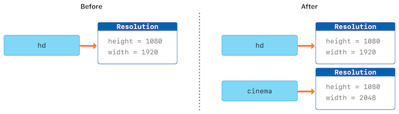The same behavior applies to enumerations:
enum CompassPoint {
case north, south, east, west
mutating func turnNorth() {
self = .north
}
}
var currentDirection = CompassPoint.west
let rememberedDirection = currentDirection
currentDirection.turnNorth()
print("The current direction is \(currentDirection)")
print("The remembered direction is \(rememberedDirection)")
// Prints "The current direction is north"
// Prints "The remembered direction is west"
When ‘rememberedDirection’ is assigned the value of ‘currentDirection’, it’s actually set to a copy of that value. Changing the value of ‘currentDirection’ thereafter doesn’t affect the copy of the original value that was stored in ‘rememberedDirection’.
Previous: Structures and Enumerations Are Value Types, Up: Structures and Classes [Contents][Index]
Unlike value types, reference types are not copied when they are assigned to a variable or constant, or when they are passed to a function. Rather than a copy, a reference to the same existing instance is used.
Here’s an example, using the ‘VideoMode’ class defined above:
let tenEighty = VideoMode() tenEighty.resolution = hd tenEighty.interlaced = true tenEighty.name = "1080i" tenEighty.frameRate = 25.0
This example declares a new constant called ‘tenEighty’ and sets it to refer to a new instance of the ‘VideoMode’ class. The video mode is assigned a copy of the HD resolution of ‘1920’ by ‘1080’ from before. It’s set to be interlaced, its name is set to ‘"1080i"’, and its frame rate is set to ‘25.0’ frames per second.
Next, ‘tenEighty’ is assigned to a new constant, called ‘alsoTenEighty’, and the frame rate of ‘alsoTenEighty’ is modified:
let alsoTenEighty = tenEighty alsoTenEighty.frameRate = 30.0
Because classes are reference types, ‘tenEighty’ and ‘alsoTenEighty’ actually both refer to the same ‘VideoMode’ instance. Effectively, they are just two different names for the same single instance, as shown in the figure below:
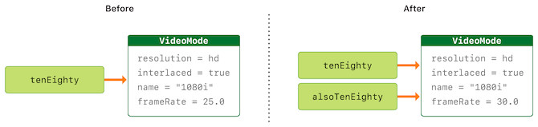Checking the ‘frameRate’ property of ‘tenEighty’ shows that it correctly reports the new frame rate of ‘30.0’ from the underlying ‘VideoMode’ instance:
print("The frameRate property of tenEighty is now n\(tenEighty.frameRate)")
// Prints "The frameRate property of tenEighty is now 30.0"
This example also shows how reference types can be harder to reason about. If ‘tenEighty’ and ‘alsoTenEighty’ were far apart in your program’s code, it could be difficult to find all the ways that the video mode is changed. Wherever you use ‘tenEighty’, you also have to think about the code that uses ‘alsoTenEighty’, and vice versa. In contrast, value types are easier to reason about because all of the code that interacts with the same value is close together in your source files.
Note that ‘tenEighty’ and ‘alsoTenEighty’ are declared as constants, rather than variables. However, you can still change ‘tenEighty.frameRate’ and ‘alsoTenEighty.frameRate’ because the values of the ‘tenEighty’ and ‘alsoTenEighty’ constants themselves don’t actually change. ‘tenEighty’ and ‘alsoTenEighty’ themselves don’t “store” the ‘VideoMode’ instance—instead, they both refer to a ‘VideoMode’ instance behind the scenes. It’s the ‘frameRate’ property of the underlying ‘VideoMode’ that is changed, not the values of the constant references to that ‘VideoMode’.
| • Identity Operators | ||
| • Pointers |
Next: Pointers, Up: Classes Are Reference Types [Contents][Index]
Because classes are reference types, it’s possible for multiple constants and variables to refer to the same single instance of a class behind the scenes. (The same isn’t true for structures and enumerations, because they are always copied when they are assigned to a constant or variable, or passed to a function.)
It can sometimes be useful to find out whether two constants or variables refer to exactly the same instance of a class. To enable this, Swift provides two identity operators:
Use these operators to check whether two constants or variables refer to the same single instance:
if tenEighty === alsoTenEighty {
print("tenEighty and alsoTenEighty refer to the same VideoMode instance.")
}
// Prints "tenEighty and alsoTenEighty refer to the same VideoMode instance."
Note that identical to (represented by three equals signs, or ‘===’) doesn’t mean the same thing as equal to (represented by two equals signs, or ‘==’). Identical to means that two constants or variables of class type refer to exactly the same class instance. Equal to means that two instances are considered equal or equivalent in value, for some appropriate meaning of equal, as defined by the type’s designer.
When you define your own custom structures and classes, it’s your responsibility to decide what qualifies as two instances being equal. The process of defining your own implementations of the ‘==’ and ‘!=’ operators is described in Equivalence Operators.
Previous: Identity Operators, Up: Classes Are Reference Types [Contents][Index]
If you have experience with C, C++, or Objective-C, you may know that these languages use pointers to refer to addresses in memory. A Swift constant or variable that refers to an instance of some reference type is similar to a pointer in C, but isn’t a direct pointer to an address in memory, and doesn’t require you to write an asterisk (‘*’) to indicate that you are creating a reference. Instead, these references are defined like any other constant or variable in Swift. The standard library provides pointer and buffer types that you can use if you need to interact with pointers directly—see Manual Memory Management [https://developer.apple.com/documentation/swift/swift_standard_library/manual_memory_management].
Next: Methods, Previous: Structures and Classes, Up: Top [Contents][Index]
Properties associate values with a particular class, structure, or enumeration. Stored properties store constant and variable values as part of an instance, whereas computed properties calculate (rather than store) a value. Computed properties are provided by classes, structures, and enumerations. Stored properties are provided only by classes and structures.
Stored and computed properties are usually associated with instances of a particular type. However, properties can also be associated with the type itself. Such properties are known as type properties.
In addition, you can define property observers to monitor changes in a property’s value, which you can respond to with custom actions. Property observers can be added to stored properties you define yourself, and also to properties that a subclass inherits from its superclass.
| • Stored Properties | ||
| • Computed Properties | ||
| • Property Observers | ||
| • Global and Local Variables | ||
| • Type Properties |
Next: Computed Properties, Up: Properties [Contents][Index]
In its simplest form, a stored property is a constant or variable that is stored as part of an instance of a particular class or structure. Stored properties can be either variable stored properties (introduced by the ‘var’ keyword) or constant stored properties (introduced by the ‘let’ keyword).
You can provide a default value for a stored property as part of its definition, as described in Default Property Values. You can also set and modify the initial value for a stored property during initialization. This is true even for constant stored properties, as described in Assigning Constant Properties During Initialization.
The example below defines a structure called ‘FixedLengthRange’, which describes a range of integers whose range length cannot be changed after it is created:
struct FixedLengthRange {
var firstValue: Int
let length: Int
}
var rangeOfThreeItems = FixedLengthRange(firstValue: 0, length: 3)
// the range represents integer values 0, 1, and 2
rangeOfThreeItems.firstValue = 6
// the range now represents integer values 6, 7, and 8
Instances of ‘FixedLengthRange’ have a variable stored property called ‘firstValue’ and a constant stored property called ‘length’. In the example above, ‘length’ is initialized when the new range is created and cannot be changed thereafter, because it is a constant property.
| • Stored Properties of Constant Structure Instances | ||
| • Lazy Stored Properties | ||
| • Stored Properties and Instance Variables |
Next: Lazy Stored Properties, Up: Stored Properties [Contents][Index]
If you create an instance of a structure and assign that instance to a constant, you cannot modify the instance’s properties, even if they were declared as variable properties:
let rangeOfFourItems = FixedLengthRange(firstValue: 0, length: 4) // this range represents integer values 0, 1, 2, and 3 rangeOfFourItems.firstValue = 6 // this will report an error, even though firstValue is a variable property
Because ‘rangeOfFourItems’ is declared as a constant (with the ‘let’ keyword), it is not possible to change its ‘firstValue’ property, even though ‘firstValue’ is a variable property.
This behavior is due to structures being value types. When an instance of a value type is marked as a constant, so are all of its properties.
The same is not true for classes, which are reference types. If you assign an instance of a reference type to a constant, you can still change that instance’s variable properties.
Next: Stored Properties and Instance Variables, Previous: Stored Properties of Constant Structure Instances, Up: Stored Properties [Contents][Index]
A lazy stored property is a property whose initial value is not calculated until the first time it is used. You indicate a lazy stored property by writing the ‘lazy’ modifier before its declaration.
Note
You must always declare a lazy property as a variable (with the ‘var’ keyword), because its initial value might not be retrieved until after instance initialization completes. Constant properties must always have a value before initialization completes, and therefore cannot be declared as lazy.
Lazy properties are useful when the initial value for a property is dependent on outside factors whose values are not known until after an instance’s initialization is complete. Lazy properties are also useful when the initial value for a property requires complex or computationally expensive setup that should not be performed unless or until it is needed.
The example below uses a lazy stored property to avoid unnecessary initialization of a complex class. This example defines two classes called ‘DataImporter’ and ‘DataManager’, neither of which is shown in full:
class DataImporter {
/*
DataImporter is a class to import data from an external file.
The class is assumed to take a nontrivial amount of time to
initialize.
*/
var filename = "data.txt"
// the DataImporter class would provide data importing functionality here
}
class DataManager {
lazy var importer = DataImporter()
var data = [String]()
// the DataManager class would provide data management functionality here
}
let manager = DataManager()
manager.data.append("Some data")
manager.data.append("Some more data")
// the DataImporter instance for the importer property has not yet been created
The ‘DataManager’ class has a stored property called ‘data’, which is initialized with a new, empty array of ‘String’ values. Although the rest of its functionality is not shown, the purpose of this ‘DataManager’ class is to manage and provide access to this array of ‘String’ data.
Part of the functionality of the ‘DataManager’ class is the ability to import data from a file. This functionality is provided by the ‘DataImporter’ class, which is assumed to take a nontrivial amount of time to initialize. This might be because a ‘DataImporter’ instance needs to open a file and read its contents into memory when the ‘DataImporter’ instance is initialized.
It is possible for a ‘DataManager’ instance to manage its data without ever importing data from a file, so there is no need to create a new ‘DataImporter’ instance when the ‘DataManager’ itself is created. Instead, it makes more sense to create the ‘DataImporter’ instance if and when it is first used.
Because it is marked with the ‘lazy’ modifier, the ‘DataImporter’ instance for the ‘importer’ property is only created when the ‘importer’ property is first accessed, such as when its ‘filename’ property is queried:
print(manager.importer.filename) // the DataImporter instance for the importer property has now been created // Prints "data.txt"
Note
If a property marked with the ‘lazy’ modifier is accessed by multiple threads simultaneously and the property has not yet been initialized, there is no guarantee that the property will be initialized only once.
Previous: Lazy Stored Properties, Up: Stored Properties [Contents][Index]
If you have experience with Objective-C, you may know that it provides two ways to store values and references as part of a class instance. In addition to properties, you can use instance variables as a backing store for the values stored in a property.
Swift unifies these concepts into a single property declaration. A Swift property does not have a corresponding instance variable, and the backing store for a property is not accessed directly. This approach avoids confusion about how the value is accessed in different contexts and simplifies the property’s declaration into a single, definitive statement. All information about the property—including its name, type, and memory management characteristics—is defined in a single location as part of the type’s definition.
Next: Property Observers, Previous: Stored Properties, Up: Properties [Contents][Index]
In addition to stored properties, classes, structures, and enumerations can define computed properties, which do not actually store a value. Instead, they provide a getter and an optional setter to retrieve and set other properties and values indirectly.
struct Point {
var x = 0.0, y = 0.0
}
struct Size {
var width = 0.0, height = 0.0
}
struct Rect {
var origin = Point()
var size = Size()
var center: Point {
get {
let centerX = origin.x + (size.width / 2)
let centerY = origin.y + (size.height / 2)
return Point(x: centerX, y: centerY)
}
set(newCenter) {
origin.x = newCenter.x - (size.width / 2)
origin.y = newCenter.y - (size.height / 2)
}
}
}
var square = Rect(origin: Point(x: 0.0, y: 0.0),
size: Size(width: 10.0, height: 10.0))
let initialSquareCenter = square.center
square.center = Point(x: 15.0, y: 15.0)
print("square.origin is now at (\(square.origin.x), \(square.origin.y))")
// Prints "square.origin is now at (10.0, 10.0)"
This example defines three structures for working with geometric shapes:
The ‘Rect’ structure also provides a computed property called ‘center’. The current center position of a ‘Rect’ can always be determined from its ‘origin’ and ‘size’, and so you don’t need to store the center point as an explicit ‘Point’ value. Instead, ‘Rect’ defines a custom getter and setter for a computed variable called ‘center’, to enable you to work with the rectangle’s ‘center’ as if it were a real stored property.
The example above creates a new ‘Rect’ variable called ‘square’. The ‘square’ variable is initialized with an origin point of ‘(0, 0)’, and a width and height of ‘10’. This square is represented by the blue square in the diagram below.
The ‘square’ variable’s ‘center’ property is then accessed through dot syntax (‘square.center’), which causes the getter for ‘center’ to be called, to retrieve the current property value. Rather than returning an existing value, the getter actually calculates and returns a new ‘Point’ to represent the center of the square. As can be seen above, the getter correctly returns a center point of ‘(5, 5)’.
The ‘center’ property is then set to a new value of ‘(15, 15)’, which moves the square up and to the right, to the new position shown by the orange square in the diagram below. Setting the ‘center’ property calls the setter for ‘center’, which modifies the ‘x’ and ‘y’ values of the stored ‘origin’ property, and moves the square to its new position.
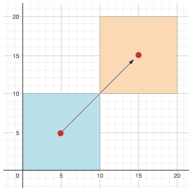| • Shorthand Setter Declaration | ||
| • Shorthand Getter Declaration | ||
| • Read-Only Computed Properties |
Next: Shorthand Getter Declaration, Up: Computed Properties [Contents][Index]
If a computed property’s setter doesn’t define a name for the new value to be set, a default name of ‘newValue’ is used. Here’s an alternative version of the ‘Rect’ structure that takes advantage of this shorthand notation:
struct AlternativeRect {
var origin = Point()
var size = Size()
var center: Point {
get {
let centerX = origin.x + (size.width / 2)
let centerY = origin.y + (size.height / 2)
return Point(x: centerX, y: centerY)
}
set {
origin.x = newValue.x - (size.width / 2)
origin.y = newValue.y - (size.height / 2)
}
}
}
Next: Read-Only Computed Properties, Previous: Shorthand Setter Declaration, Up: Computed Properties [Contents][Index]
If the entire body of a getter is a single expression, the getter implicitly returns that expression. Here’s an another version of the ‘Rect’ structure that takes advantage of this shorthand notation and the shorthand notation for setters:
struct CompactRect {
var origin = Point()
var size = Size()
var center: Point {
get {
Point(x: origin.x + (size.width / 2),
y: origin.y + (size.height / 2))
}
set {
origin.x = newValue.x - (size.width / 2)
origin.y = newValue.y - (size.height / 2)
}
}
}
Omitting the ‘return’ from a getter follows the same rules as omitting ‘return’ from a function, as described in Functions With an Implicit Return.
Previous: Shorthand Getter Declaration, Up: Computed Properties [Contents][Index]
A computed property with a getter but no setter is known as a read-only computed property. A read-only computed property always returns a value, and can be accessed through dot syntax, but cannot be set to a different value.
Note
You must declare computed properties—including read-only computed properties—as variable properties with the ‘var’ keyword, because their value is not fixed. The ‘let’ keyword is only used for constant properties, to indicate that their values cannot be changed once they are set as part of instance initialization.
You can simplify the declaration of a read-only computed property by removing the ‘get’ keyword and its braces:
struct Cuboid {
var width = 0.0, height = 0.0, depth = 0.0
var volume: Double {
return width * height * depth
}
}
let fourByFiveByTwo = Cuboid(width: 4.0, height: 5.0, depth: 2.0)
print("the volume of fourByFiveByTwo is \(fourByFiveByTwo.volume)")
// Prints "the volume of fourByFiveByTwo is 40.0"
This example defines a new structure called ‘Cuboid’, which represents a 3D rectangular box with ‘width’, ‘height’, and ‘depth’ properties. This structure also has a read-only computed property called ‘volume’, which calculates and returns the current volume of the cuboid. It doesn’t make sense for ‘volume’ to be settable, because it would be ambiguous as to which values of ‘width’, ‘height’, and ‘depth’ should be used for a particular ‘volume’ value. Nonetheless, it is useful for a ‘Cuboid’ to provide a read-only computed property to enable external users to discover its current calculated volume.
Next: Global and Local Variables, Previous: Computed Properties, Up: Properties [Contents][Index]
Property observers observe and respond to changes in a property’s value. Property observers are called every time a property’s value is set, even if the new value is the same as the property’s current value.
You can add property observers to any stored properties you define, except for lazy stored properties. You can also add property observers to any inherited property (whether stored or computed) by overriding the property within a subclass. You don’t need to define property observers for nonoverridden computed properties, because you can observe and respond to changes to their value in the computed property’s setter. Property overriding is described in Overriding.
You have the option to define either or both of these observers on a property:
If you implement a ‘willSet’ observer, it’s passed the new property value as a constant parameter. You can specify a name for this parameter as part of your ‘willSet’ implementation. If you don’t write the parameter name and parentheses within your implementation, the parameter is made available with a default parameter name of ‘newValue’.
Similarly, if you implement a ‘didSet’ observer, it’s passed a constant parameter containing the old property value. You can name the parameter or use the default parameter name of ‘oldValue’. If you assign a value to a property within its own ‘didSet’ observer, the new value that you assign replaces the one that was just set.
Note
The ‘willSet’ and ‘didSet’ observers of superclass properties are called when a property is set in a subclass initializer, after the superclass initializer has been called. They are not called while a class is setting its own properties, before the superclass initializer has been called.
For more information about initializer delegation, see Initializer Delegation for Value Types and Initializer Delegation for Class Types.
Here’s an example of ‘willSet’ and ‘didSet’ in action. The example below defines a new class called ‘StepCounter’, which tracks the total number of steps that a person takes while walking. This class might be used with input data from a pedometer or other step counter to keep track of a person’s exercise during their daily routine.
class StepCounter {
var totalSteps: Int = 0 {
willSet(newTotalSteps) {
print("About to set totalSteps to \(newTotalSteps)")
}
didSet {
if totalSteps > oldValue {
print("Added \(totalSteps - oldValue) steps")
}
}
}
}
let stepCounter = StepCounter()
stepCounter.totalSteps = 200
// About to set totalSteps to 200
// Added 200 steps
stepCounter.totalSteps = 360
// About to set totalSteps to 360
// Added 160 steps
stepCounter.totalSteps = 896
// About to set totalSteps to 896
// Added 536 steps
The ‘StepCounter’ class declares a ‘totalSteps’ property of type ‘Int’. This is a stored property with ‘willSet’ and ‘didSet’ observers.
The ‘willSet’ and ‘didSet’ observers for ‘totalSteps’ are called whenever the property is assigned a new value. This is true even if the new value is the same as the current value.
This example’s ‘willSet’ observer uses a custom parameter name of ‘newTotalSteps’ for the upcoming new value. In this example, it simply prints out the value that is about to be set.
The ‘didSet’ observer is called after the value of ‘totalSteps’ is updated. It compares the new value of ‘totalSteps’ against the old value. If the total number of steps has increased, a message is printed to indicate how many new steps have been taken. The ‘didSet’ observer does not provide a custom parameter name for the old value, and the default name of ‘oldValue’ is used instead.
Note
If you pass a property that has observers to a function as an in-out parameter, the ‘willSet’ and ‘didSet’ observers are always called. This is because of the copy-in copy-out memory model for in-out parameters: The value is always written back to the property at the end of the function. For a detailed discussion of the behavior of in-out parameters, see In-Out Parameters.
Next: Type Properties, Previous: Property Observers, Up: Properties [Contents][Index]
The capabilities described above for computing and observing properties are also available to global variables and local variables. Global variables are variables that are defined outside of any function, method, closure, or type context. Local variables are variables that are defined within a function, method, or closure context.
The global and local variables you have encountered in previous chapters have all been stored variables. Stored variables, like stored properties, provide storage for a value of a certain type and allow that value to be set and retrieved.
However, you can also define computed variables and define observers for stored variables, in either a global or local scope. Computed variables calculate their value, rather than storing it, and they are written in the same way as computed properties.
Note
Global constants and variables are always computed lazily, in a similar manner to Lazy Stored Properties. Unlike lazy stored properties, global constants and variables do not need to be marked with the ‘lazy’ modifier.
Local constants and variables are never computed lazily.
Previous: Global and Local Variables, Up: Properties [Contents][Index]
Instance properties are properties that belong to an instance of a particular type. Every time you create a new instance of that type, it has its own set of property values, separate from any other instance.
You can also define properties that belong to the type itself, not to any one instance of that type. There will only ever be one copy of these properties, no matter how many instances of that type you create. These kinds of properties are called type properties.
Type properties are useful for defining values that are universal to all instances of a particular type, such as a constant property that all instances can use (like a static constant in C), or a variable property that stores a value that is global to all instances of that type (like a static variable in C).
Stored type properties can be variables or constants. Computed type properties are always declared as variable properties, in the same way as computed instance properties.
Note
Unlike stored instance properties, you must always give stored type properties a default value. This is because the type itself does not have an initializer that can assign a value to a stored type property at initialization time.
Stored type properties are lazily initialized on their first access. They are guaranteed to be initialized only once, even when accessed by multiple threads simultaneously, and they do not need to be marked with the ‘lazy’ modifier.
| • Type Property Syntax | ||
| • Querying and Setting Type Properties |
Next: Querying and Setting Type Properties, Up: Type Properties [Contents][Index]
In C and Objective-C, you define static constants and variables associated with a type as global static variables. In Swift, however, type properties are written as part of the type’s definition, within the type’s outer curly braces, and each type property is explicitly scoped to the type it supports.
You define type properties with the ‘static’ keyword. For computed type properties for class types, you can use the ‘class’ keyword instead to allow subclasses to override the superclass’s implementation. The example below shows the syntax for stored and computed type properties:
struct SomeStructure {
static var storedTypeProperty = "Some value."
static var computedTypeProperty: Int {
return 1
}
}
enum SomeEnumeration {
static var storedTypeProperty = "Some value."
static var computedTypeProperty: Int {
return 6
}
}
class SomeClass {
static var storedTypeProperty = "Some value."
static var computedTypeProperty: Int {
return 27
}
class var overrideableComputedTypeProperty: Int {
return 107
}
}
Note
The computed type property examples above are for read-only computed type properties, but you can also define read-write computed type properties with the same syntax as for computed instance properties.
Previous: Type Property Syntax, Up: Type Properties [Contents][Index]
Type properties are queried and set with dot syntax, just like instance properties. However, type properties are queried and set on the type, not on an instance of that type. For example:
print(SomeStructure.storedTypeProperty) // Prints "Some value." SomeStructure.storedTypeProperty = "Another value." print(SomeStructure.storedTypeProperty) // Prints "Another value." print(SomeEnumeration.computedTypeProperty) // Prints "6" print(SomeClass.computedTypeProperty) // Prints "27"
The examples that follow use two stored type properties as part of a structure that models an audio level meter for a number of audio channels. Each channel has an integer audio level between ‘0’ and ‘10’ inclusive.
The figure below illustrates how two of these audio channels can be combined to model a stereo audio level meter. When a channel’s audio level is ‘0’, none of the lights for that channel are lit. When the audio level is ‘10’, all of the lights for that channel are lit. In this figure, the left channel has a current level of ‘9’, and the right channel has a current level of ‘7’:
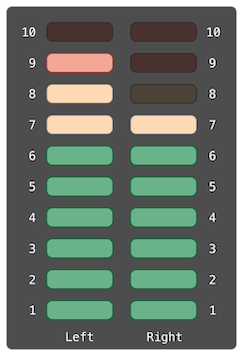The audio channels described above are represented by instances of the ‘AudioChannel’ structure:
struct AudioChannel {
static let thresholdLevel = 10
static var maxInputLevelForAllChannels = 0
var currentLevel: Int = 0 {
didSet {
if currentLevel > AudioChannel.thresholdLevel {
// cap the new audio level to the threshold level
currentLevel = AudioChannel.thresholdLevel
}
if currentLevel > AudioChannel.maxInputLevelForAllChannels {
// store this as the new overall maximum input level
AudioChannel.maxInputLevelForAllChannels = currentLevel
}
}
}
}
The ‘AudioChannel’ structure defines two stored type properties to support its functionality. The first, ‘thresholdLevel’, defines the maximum threshold value an audio level can take. This is a constant value of ‘10’ for all ‘AudioChannel’ instances. If an audio signal comes in with a higher value than ‘10’, it will be capped to this threshold value (as described below).
The second type property is a variable stored property called ‘maxInputLevelForAllChannels’. This keeps track of the maximum input value that has been received by any ‘AudioChannel’ instance. It starts with an initial value of ‘0’.
The ‘AudioChannel’ structure also defines a stored instance property called ‘currentLevel’, which represents the channel’s current audio level on a scale of ‘0’ to ‘10’.
The ‘currentLevel’ property has a ‘didSet’ property observer to check the value of ‘currentLevel’ whenever it is set. This observer performs two checks:
Note
In the first of these two checks, the ‘didSet’ observer sets ‘currentLevel’ to a different value. This does not, however, cause the observer to be called again.
You can use the ‘AudioChannel’ structure to create two new audio channels called ‘leftChannel’ and ‘rightChannel’, to represent the audio levels of a stereo sound system:
var leftChannel = AudioChannel() var rightChannel = AudioChannel()
If you set the ‘currentLevel’ of the left channel to ‘7’, you can see that the ‘maxInputLevelForAllChannels’ type property is updated to equal ‘7’:
leftChannel.currentLevel = 7 print(leftChannel.currentLevel) // Prints "7" print(AudioChannel.maxInputLevelForAllChannels) // Prints "7"
If you try to set the ‘currentLevel’ of the right channel to ‘11’, you can see that the right channel’s ‘currentLevel’ property is capped to the maximum value of ‘10’, and the ‘maxInputLevelForAllChannels’ type property is updated to equal ‘10’:
rightChannel.currentLevel = 11 print(rightChannel.currentLevel) // Prints "10" print(AudioChannel.maxInputLevelForAllChannels) // Prints "10"
Next: Subscripts, Previous: Properties, Up: Top [Contents][Index]
Methods are functions that are associated with a particular type. Classes, structures, and enumerations can all define instance methods, which encapsulate specific tasks and functionality for working with an instance of a given type. Classes, structures, and enumerations can also define type methods, which are associated with the type itself. Type methods are similar to class methods in Objective-C.
The fact that structures and enumerations can define methods in Swift is a major difference from C and Objective-C. In Objective-C, classes are the only types that can define methods. In Swift, you can choose whether to define a class, structure, or enumeration, and still have the flexibility to define methods on the type you create.
| • Instance Methods | ||
| • Type Methods |
Next: Type Methods, Up: Methods [Contents][Index]
Instance methods are functions that belong to instances of a particular class, structure, or enumeration. They support the functionality of those instances, either by providing ways to access and modify instance properties, or by providing functionality related to the instance’s purpose. Instance methods have exactly the same syntax as functions, as described in Functions.
You write an instance method within the opening and closing braces of the type it belongs to. An instance method has implicit access to all other instance methods and properties of that type. An instance method can be called only on a specific instance of the type it belongs to. It cannot be called in isolation without an existing instance.
Here’s an example that defines a simple ‘Counter’ class, which can be used to count the number of times an action occurs:
class Counter {
var count = 0
func increment() {
count += 1
}
func increment(by amount: Int) {
count += amount
}
func reset() {
count = 0
}
}
The ‘Counter’ class defines three instance methods:
The ‘Counter’ class also declares a variable property, ‘count’, to keep track of the current counter value.
You call instance methods with the same dot syntax as properties:
let counter = Counter() // the initial counter value is 0 counter.increment() // the counter's value is now 1 counter.increment(by: 5) // the counter's value is now 6 counter.reset() // the counter's value is now 0
Function parameters can have both a name (for use within the function’s body) and an argument label (for use when calling the function), as described in Function Argument Labels and Parameter Names. The same is true for method parameters, because methods are just functions that are associated with a type.
| • The self Property | ||
| • Modifying Value Types from Within Instance Methods | ||
| • Assigning to self Within a Mutating Method |
Every instance of a type has an implicit property called ‘self’, which is exactly equivalent to the instance itself. You use the ‘self’ property to refer to the current instance within its own instance methods.
The ‘increment()’ method in the example above could have been written like this:
func increment() {
self.count += 1
}
In practice, you don’t need to write ‘self’ in your code very often. If you don’t explicitly write ‘self’, Swift assumes that you are referring to a property or method of the current instance whenever you use a known property or method name within a method. This assumption is demonstrated by the use of ‘count’ (rather than ‘self.count’) inside the three instance methods for ‘Counter’.
The main exception to this rule occurs when a parameter name for an instance method has the same name as a property of that instance. In this situation, the parameter name takes precedence, and it becomes necessary to refer to the property in a more qualified way. You use the ‘self’ property to distinguish between the parameter name and the property name.
Here, ‘self’ disambiguates between a method parameter called ‘x’ and an instance property that is also called ‘x’:
struct Point {
var x = 0.0, y = 0.0
func isToTheRightOf(x: Double) -> Bool {
return self.x > x
}
}
let somePoint = Point(x: 4.0, y: 5.0)
if somePoint.isToTheRightOf(x: 1.0) {
print("This point is to the right of the line where x == 1.0")
}
// Prints "This point is to the right of the line where x == 1.0"
Without the ‘self’ prefix, Swift would assume that both uses of ‘x’ referred to the method parameter called ‘x’.
Next: Assigning to self Within a Mutating Method, Previous: The self Property, Up: Instance Methods [Contents][Index]
Structures and enumerations are value types. By default, the properties of a value type cannot be modified from within its instance methods.
However, if you need to modify the properties of your structure or enumeration within a particular method, you can opt in to mutating behavior for that method. The method can then mutate (that is, change) its properties from within the method, and any changes that it makes are written back to the original structure when the method ends. The method can also assign a completely new instance to its implicit ‘self’ property, and this new instance will replace the existing one when the method ends.
You can opt in to this behavior by placing the ‘mutating’ keyword before the ‘func’ keyword for that method:
struct Point {
var x = 0.0, y = 0.0
mutating func moveBy(x deltaX: Double, y deltaY: Double) {
x += deltaX
y += deltaY
}
}
var somePoint = Point(x: 1.0, y: 1.0)
somePoint.moveBy(x: 2.0, y: 3.0)
print("The point is now at (\(somePoint.x), \(somePoint.y))")
// Prints "The point is now at (3.0, 4.0)"
The ‘Point’ structure above defines a mutating ‘moveBy(x:y:)’ method, which moves a ‘Point’ instance by a certain amount. Instead of returning a new point, this method actually modifies the point on which it is called. The ‘mutating’ keyword is added to its definition to enable it to modify its properties.
Note that you cannot call a mutating method on a constant of structure type, because its properties cannot be changed, even if they are variable properties, as described in Stored Properties of Constant Structure Instances.
let fixedPoint = Point(x: 3.0, y: 3.0) fixedPoint.moveBy(x: 2.0, y: 3.0) // this will report an error
Previous: Modifying Value Types from Within Instance Methods, Up: Instance Methods [Contents][Index]
Mutating methods can assign an entirely new instance to the implicit ‘self’ property. The ‘Point’ example shown above could have been written in the following way instead:
struct Point {
var x = 0.0, y = 0.0
mutating func moveBy(x deltaX: Double, y deltaY: Double) {
self = Point(x: x + deltaX, y: y + deltaY)
}
}
This version of the mutating ‘moveBy(x:y:)’ method creates a new structure whose ‘x’ and ‘y’ values are set to the target location. The end result of calling this alternative version of the method will be exactly the same as for calling the earlier version.
Mutating methods for enumerations can set the implicit ‘self’ parameter to be a different case from the same enumeration:
enum TriStateSwitch {
case off, low, high
mutating func next() {
switch self {
case .off:
self = .low
case .low:
self = .high
case .high:
self = .off
}
}
}
var ovenLight = TriStateSwitch.low
ovenLight.next()
// ovenLight is now equal to .high
ovenLight.next()
// ovenLight is now equal to .off
This example defines an enumeration for a three-state switch. The switch cycles between three different power states (‘off’, ‘low’ and ‘high’) every time its ‘next()’ method is called.
Previous: Instance Methods, Up: Methods [Contents][Index]
Instance methods, as described above, are methods that you call on an instance of a particular type. You can also define methods that are called on the type itself. These kinds of methods are called type methods. You indicate type methods by writing the ‘static’ keyword before the method’s ‘func’ keyword. Classes can use the ‘class’ keyword instead, to allow subclasses to override the superclass’s implementation of that method.
Note
In Objective-C, you can define type-level methods only for Objective-C classes. In Swift, you can define type-level methods for all classes, structures, and enumerations. Each type method is explicitly scoped to the type it supports.
Type methods are called with dot syntax, like instance methods. However, you call type methods on the type, not on an instance of that type. Here’s how you call a type method on a class called ‘SomeClass’:
class SomeClass {
class func someTypeMethod() {
// type method implementation goes here
}
}
SomeClass.someTypeMethod()
Within the body of a type method, the implicit ‘self’ property refers to the type itself, rather than an instance of that type. This means that you can use ‘self’ to disambiguate between type properties and type method parameters, just as you do for instance properties and instance method parameters.
More generally, any unqualified method and property names that you use within the body of a type method will refer to other type-level methods and properties. A type method can call another type method with the other method’s name, without needing to prefix it with the type name. Similarly, type methods on structures and enumerations can access type properties by using the type property’s name without a type name prefix.
The example below defines a structure called ‘LevelTracker’, which tracks a player’s progress through the different levels or stages of a game. It is a single-player game, but can store information for multiple players on a single device.
All of the game’s levels (apart from level one) are locked when the game is first played. Every time a player finishes a level, that level is unlocked for all players on the device. The ‘LevelTracker’ structure uses type properties and methods to keep track of which levels of the game have been unlocked. It also tracks the current level for an individual player.
struct LevelTracker {
static var highestUnlockedLevel = 1
var currentLevel = 1
static func unlock(_ level: Int) {
if level > highestUnlockedLevel { highestUnlockedLevel = level }
}
static func isUnlocked(_ level: Int) -> Bool {
return level <= highestUnlockedLevel
}
@discardableResult
mutating func advance(to level: Int) -> Bool {
if LevelTracker.isUnlocked(level) {
currentLevel = level
return true
} else {
return false
}
}
}
The ‘LevelTracker’ structure keeps track of the highest level that any player has unlocked. This value is stored in a type property called ‘highestUnlockedLevel’.
‘LevelTracker’ also defines two type functions to work with the ‘highestUnlockedLevel’ property. The first is a type function called ‘unlock(_:)’, which updates the value of ‘highestUnlockedLevel’ whenever a new level is unlocked. The second is a convenience type function called ‘isUnlocked(_:)’, which returns ‘true’ if a particular level number is already unlocked. (Note that these type methods can access the ‘highestUnlockedLevel’ type property without your needing to write it as ‘LevelTracker.highestUnlockedLevel’.)
In addition to its type property and type methods, ‘LevelTracker’ tracks an individual player’s progress through the game. It uses an instance property called ‘currentLevel’ to track the level that a player is currently playing.
To help manage the ‘currentLevel’ property, ‘LevelTracker’ defines an instance method called ‘advance(to:)’. Before updating ‘currentLevel’, this method checks whether the requested new level is already unlocked. The ‘advance(to:)’ method returns a Boolean value to indicate whether or not it was actually able to set ‘currentLevel’. Because it’s not necessarily a mistake for code that calls the ‘advance(to:)’ method to ignore the return value, this function is marked with the ‘@discardableResult’ attribute. For more information about this attribute, see Attributes.
The ‘LevelTracker’ structure is used with the ‘Player’ class, shown below, to track and update the progress of an individual player:
class Player {
var tracker = LevelTracker()
let playerName: String
func complete(level: Int) {
LevelTracker.unlock(level + 1)
tracker.advance(to: level + 1)
}
init(name: String) {
playerName = name
}
}
The ‘Player’ class creates a new instance of ‘LevelTracker’ to track that player’s progress. It also provides a method called ‘complete(level:)’, which is called whenever a player completes a particular level. This method unlocks the next level for all players and updates the player’s progress to move them to the next level. (The Boolean return value of ‘advance(to:)’ is ignored, because the level is known to have been unlocked by the call to ‘LevelTracker.unlock(_:)’ on the previous line.)
You can create an instance of the ‘Player’ class for a new player, and see what happens when the player completes level one:
var player = Player(name: "Argyrios")
player.complete(level: 1)
print("highest unlocked level is now \(LevelTracker.highestUnlockedLevel)")
// Prints "highest unlocked level is now 2"
If you create a second player, whom you try to move to a level that is not yet unlocked by any player in the game, the attempt to set the player’s current level fails:
player = Player(name: "Beto")
if player.tracker.advance(to: 6) {
print("player is now on level 6")
} else {
print("level 6 has not yet been unlocked")
}
// Prints "level 6 has not yet been unlocked"
Next: Inheritance, Previous: Methods, Up: Top [Contents][Index]
Classes, structures, and enumerations can define subscripts, which are shortcuts for accessing the member elements of a collection, list, or sequence. You use subscripts to set and retrieve values by index without needing separate methods for setting and retrieval. For example, you access elements in an ‘Array’ instance as ‘someArray[index]’ and elements in a ‘Dictionary’ instance as ‘someDictionary[key]’.
You can define multiple subscripts for a single type, and the appropriate subscript overload to use is selected based on the type of index value you pass to the subscript. Subscripts are not limited to a single dimension, and you can define subscripts with multiple input parameters to suit your custom type’s needs.
| • Subscript Syntax | ||
| • Subscript Usage | ||
| • Subscript Options | ||
| • Type Subscripts |
Next: Subscript Usage, Up: Subscripts [Contents][Index]
Subscripts enable you to query instances of a type by writing one or more values in square brackets after the instance name. Their syntax is similar to both instance method syntax and computed property syntax. You write subscript definitions with the ‘subscript’ keyword, and specify one or more input parameters and a return type, in the same way as instance methods. Unlike instance methods, subscripts can be read-write or read-only. This behavior is communicated by a getter and setter in the same way as for computed properties:
subscript(index: Int) -> Int {
get {
// Return an appropriate subscript value here.
}
set(newValue) {
// Perform a suitable setting action here.
}
}
The type of ‘newValue’ is the same as the return value of the subscript. As with computed properties, you can choose not to specify the setter’s ‘(newValue)’ parameter. A default parameter called ‘newValue’ is provided to your setter if you do not provide one yourself.
As with read-only computed properties, you can simplify the declaration of a read-only subscript by removing the ‘get’ keyword and its braces:
subscript(index: Int) -> Int {
// Return an appropriate subscript value here.
}
Here’s an example of a read-only subscript implementation, which defines a ‘TimesTable’ structure to represent an n-times-table of integers:
struct TimesTable {
let multiplier: Int
subscript(index: Int) -> Int {
return multiplier * index
}
}
let threeTimesTable = TimesTable(multiplier: 3)
print("six times three is \(threeTimesTable[6])")
// Prints "six times three is 18"
In this example, a new instance of ‘TimesTable’ is created to represent the three-times-table. This is indicated by passing a value of ‘3’ to the structure’s ‘initializer’ as the value to use for the instance’s ‘multiplier’ parameter.
You can query the ‘threeTimesTable’ instance by calling its subscript, as shown in the call to ‘threeTimesTable[6]’. This requests the sixth entry in the three-times-table, which returns a value of ‘18’, or ‘3’ times ‘6’.
Note
An n-times-table is based on a fixed mathematical rule. It is not appropriate to set ‘threeTimesTable[someIndex]’ to a new value, and so the subscript for ‘TimesTable’ is defined as a read-only subscript.
Next: Subscript Options, Previous: Subscript Syntax, Up: Subscripts [Contents][Index]
The exact meaning of “subscript” depends on the context in which it is used. Subscripts are typically used as a shortcut for accessing the member elements in a collection, list, or sequence. You are free to implement subscripts in the most appropriate way for your particular class or structure’s functionality.
For example, Swift’s ‘Dictionary’ type implements a subscript to set and retrieve the values stored in a ‘Dictionary’ instance. You can set a value in a dictionary by providing a key of the dictionary’s key type within subscript brackets, and assigning a value of the dictionary’s value type to the subscript:
var numberOfLegs = ["spider": 8, "ant": 6, "cat": 4] numberOfLegs["bird"] = 2
The example above defines a variable called ‘numberOfLegs’ and initializes it with a dictionary literal containing three key-value pairs. The type of the ‘numberOfLegs’ dictionary is inferred to be ‘[String: Int]’. After creating the dictionary, this example uses subscript assignment to add a ‘String’ key of ‘"bird"’ and an ‘Int’ value of ‘2’ to the dictionary.
For more information about ‘Dictionary’ subscripting, see Accessing and Modifying a Dictionary.
Note
Swift’s ‘Dictionary’ type implements its key-value subscripting as a subscript that takes and returns an optional type. For the ‘numberOfLegs’ dictionary above, the key-value subscript takes and returns a value of type ‘Int?’, or “optional int”. The ‘Dictionary’ type uses an optional subscript type to model the fact that not every key will have a value, and to give a way to delete a value for a key by assigning a ‘nil’ value for that key.
Next: Type Subscripts, Previous: Subscript Usage, Up: Subscripts [Contents][Index]
Subscripts can take any number of input parameters, and these input parameters can be of any type. Subscripts can also return any type. Subscripts can use variadic parameters and provide default parameter values, but they can’t use in-out parameters.
A class or structure can provide as many subscript implementations as it needs, and the appropriate subscript to be used will be inferred based on the types of the value or values that are contained within the subscript brackets at the point that the subscript is used. This definition of multiple subscripts is known as subscript overloading.
While it is most common for a subscript to take a single parameter, you can also define a subscript with multiple parameters if it is appropriate for your type. The following example defines a ‘Matrix’ structure, which represents a two-dimensional matrix of ‘Double’ values. The ‘Matrix’ structure’s subscript takes two integer parameters:
struct Matrix {
let rows: Int, columns: Int
var grid: [Double]
init(rows: Int, columns: Int) {
self.rows = rows
self.columns = columns
grid = Array(repeating: 0.0, count: rows * columns)
}
func indexIsValid(row: Int, column: Int) -> Bool {
return row >= 0 && row < rows && column >= 0 && column < columns
}
subscript(row: Int, column: Int) -> Double {
get {
assert(indexIsValid(row: row, column: column), "Index out of range")
return grid[(row * columns) + column]
}
set {
assert(indexIsValid(row: row, column: column), "Index out of range")
grid[(row * columns) + column] = newValue
}
}
}
‘Matrix’ provides an initializer that takes two parameters called ‘rows’ and ‘columns’, and creates an array that is large enough to store ‘rows * columns’ values of type ‘Double’. Each position in the matrix is given an initial value of ‘0.0’. To achieve this, the array’s size, and an initial cell value of ‘0.0’, are passed to an array initializer that creates and initializes a new array of the correct size. This initializer is described in more detail in Creating an Array with a Default Value.
You can construct a new ‘Matrix’ instance by passing an appropriate row and column count to its initializer:
var matrix = Matrix(rows: 2, columns: 2)
The example above creates a new ‘Matrix’ instance with two rows and two columns. The ‘grid’ array for this ‘Matrix’ instance is effectively a flattened version of the matrix, as read from top left to bottom right:
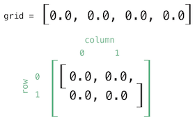Values in the matrix can be set by passing row and column values into the subscript, separated by a comma:
matrix[0, 1] = 1.5 matrix[1, 0] = 3.2
These two statements call the subscript’s setter to set a value of ‘1.5’ in the top right position of the matrix (where ‘row’ is ‘0’ and ‘column’ is ‘1’), and ‘3.2’ in the bottom left position (where ‘row’ is ‘1’ and ‘column’ is ‘0’):
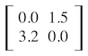The ‘Matrix’ subscript’s getter and setter both contain an assertion to check that the subscript’s ‘row’ and ‘column’ values are valid. To assist with these assertions, ‘Matrix’ includes a convenience method called ‘indexIsValid(row:column:)’, which checks whether the requested ‘row’ and ‘column’ are inside the bounds of the matrix:
func indexIsValid(row: Int, column: Int) -> Bool {
return row >= 0 && row < rows && column >= 0 && column < columns
}
An assertion is triggered if you try to access a subscript that is outside of the matrix bounds:
let someValue = matrix[2, 2] // This triggers an assert, because [2, 2] is outside of the matrix bounds.
Previous: Subscript Options, Up: Subscripts [Contents][Index]
Instance subscripts, as described above, are subscripts that you call on an instance of a particular type. You can also define subscripts that are called on the type itself. This kind of subscript is called a type subscript. You indicate a type subscript by writing the ‘static’ keyword before the ‘subscript’ keyword. Classes can use the ‘class’ keyword instead, to allow subclasses to override the superclass’s implementation of that subscript. The example below shows how you define and call a type subscript:
enum Planet: Int {
case mercury = 1, venus, earth, mars, jupiter, saturn, uranus, neptune
static subscript(n: Int) -> Planet {
return Planet(rawValue: n)!
}
}
let mars = Planet[4]
print(mars)
Next: Initialization, Previous: Subscripts, Up: Top [Contents][Index]
A class can inherit methods, properties, and other characteristics from another class. When one class inherits from another, the inheriting class is known as a subclass, and the class it inherits from is known as its superclass. Inheritance is a fundamental behavior that differentiates classes from other types in Swift.
Classes in Swift can call and access methods, properties, and subscripts belonging to their superclass and can provide their own overriding versions of those methods, properties, and subscripts to refine or modify their behavior. Swift helps to ensure your overrides are correct by checking that the override definition has a matching superclass definition.
Classes can also add property observers to inherited properties in order to be notified when the value of a property changes. Property observers can be added to any property, regardless of whether it was originally defined as a stored or computed property.
| • Defining a Base Class | ||
| • Subclassing | ||
| • Overriding | ||
| • Preventing Overrides |
Next: Subclassing, Up: Inheritance [Contents][Index]
Any class that does not inherit from another class is known as a base class.
Note
Swift classes do not inherit from a universal base class. Classes you define without specifying a superclass automatically become base classes for you to build upon.
The example below defines a base class called ‘Vehicle’. This base class defines a stored property called ‘currentSpeed’, with a default value of ‘0.0’ (inferring a property type of ‘Double’). The ‘currentSpeed’ property’s value is used by a read-only computed ‘String’ property called ‘description’ to create a description of the vehicle.
The ‘Vehicle’ base class also defines a method called ‘makeNoise’. This method does not actually do anything for a base ‘Vehicle’ instance, but will be customized by subclasses of ‘Vehicle’ later on:
class Vehicle {
var currentSpeed = 0.0
var description: String {
return "traveling at \(currentSpeed) miles per hour"
}
func makeNoise() {
// do nothing - an arbitrary vehicle doesn't necessarily make a noise
}
}
You create a new instance of ‘Vehicle’ with initializer syntax, which is written as a type name followed by empty parentheses:
let someVehicle = Vehicle()
Having created a new ‘Vehicle’ instance, you can access its ‘description’ property to print a human-readable description of the vehicle’s current speed:
print("Vehicle: \(someVehicle.description)")
// Vehicle: traveling at 0.0 miles per hour
The ‘Vehicle’ class defines common characteristics for an arbitrary vehicle, but is not much use in itself. To make it more useful, you need to refine it to describe more specific kinds of vehicles.
Next: Overriding, Previous: Defining a Base Class, Up: Inheritance [Contents][Index]
Subclassing is the act of basing a new class on an existing class. The subclass inherits characteristics from the existing class, which you can then refine. You can also add new characteristics to the subclass.
To indicate that a subclass has a superclass, write the subclass name before the superclass name, separated by a colon:
class SomeSubclass: SomeSuperclass {
// subclass definition goes here
}
The following example defines a subclass called ‘Bicycle’, with a superclass of ‘Vehicle’:
class Bicycle: Vehicle {
var hasBasket = false
}
The new ‘Bicycle’ class automatically gains all of the characteristics of ‘Vehicle’, such as its ‘currentSpeed’ and ‘description’ properties and its ‘makeNoise()’ method.
In addition to the characteristics it inherits, the ‘Bicycle’ class defines a new stored property, ‘hasBasket’, with a default value of ‘false’ (inferring a type of ‘Bool’ for the property).
By default, any new ‘Bicycle’ instance you create will not have a basket. You can set the ‘hasBasket’ property to ‘true’ for a particular ‘Bicycle’ instance after that instance is created:
let bicycle = Bicycle() bicycle.hasBasket = true
You can also modify the inherited ‘currentSpeed’ property of a ‘Bicycle’ instance, and query the instance’s inherited ‘description’ property:
bicycle.currentSpeed = 15.0
print("Bicycle: \(bicycle.description)")
// Bicycle: traveling at 15.0 miles per hour
Subclasses can themselves be subclassed. The next example creates a subclass of ‘Bicycle’ for a two-seater bicycle known as a “tandem”:
class Tandem: Bicycle {
var currentNumberOfPassengers = 0
}
‘Tandem’ inherits all of the properties and methods from ‘Bicycle’, which in turn inherits all of the properties and methods from ‘Vehicle’. The ‘Tandem’ subclass also adds a new stored property called ‘currentNumberOfPassengers’, with a default value of ‘0’.
If you create an instance of ‘Tandem’, you can work with any of its new and inherited properties, and query the read-only ‘description’ property it inherits from ‘Vehicle’:
let tandem = Tandem()
tandem.hasBasket = true
tandem.currentNumberOfPassengers = 2
tandem.currentSpeed = 22.0
print("Tandem: \(tandem.description)")
// Tandem: traveling at 22.0 miles per hour
Next: Preventing Overrides, Previous: Subclassing, Up: Inheritance [Contents][Index]
A subclass can provide its own custom implementation of an instance method, type method, instance property, type property, or subscript that it would otherwise inherit from a superclass. This is known as overriding.
To override a characteristic that would otherwise be inherited, you prefix your overriding definition with the ‘override’ keyword. Doing so clarifies that you intend to provide an override and have not provided a matching definition by mistake. Overriding by accident can cause unexpected behavior, and any overrides without the ‘override’ keyword are diagnosed as an error when your code is compiled.
The ‘override’ keyword also prompts the Swift compiler to check that your overriding class’s superclass (or one of its parents) has a declaration that matches the one you provided for the override. This check ensures that your overriding definition is correct.
| • Accessing Superclass Methods, Properties, and Subscripts | ||
| • Overriding Methods | ||
| • Overriding Properties |
Next: Overriding Methods, Up: Overriding [Contents][Index]
When you provide a method, property, or subscript override for a subclass, it is sometimes useful to use the existing superclass implementation as part of your override. For example, you can refine the behavior of that existing implementation, or store a modified value in an existing inherited variable.
Where this is appropriate, you access the superclass version of a method, property, or subscript by using the ‘super’ prefix:
Next: Overriding Properties, Previous: Accessing Superclass Methods Properties and Subscripts, Up: Overriding [Contents][Index]
You can override an inherited instance or type method to provide a tailored or alternative implementation of the method within your subclass.
The following example defines a new subclass of ‘Vehicle’ called ‘Train’, which overrides the ‘makeNoise()’ method that ‘Train’ inherits from ‘Vehicle’:
class Train: Vehicle {
override func makeNoise() {
print("Choo Choo")
}
}
If you create a new instance of ‘Train’ and call its ‘makeNoise()’ method, you can see that the ‘Train’ subclass version of the method is called:
let train = Train() train.makeNoise() // Prints "Choo Choo"
Previous: Overriding Methods, Up: Overriding [Contents][Index]
You can override an inherited instance or type property to provide your own custom getter and setter for that property, or to add property observers to enable the overriding property to observe when the underlying property value changes.
You can provide a custom getter (and setter, if appropriate) to override any inherited property, regardless of whether the inherited property is implemented as a stored or computed property at source. The stored or computed nature of an inherited property is not known by a subclass—it only knows that the inherited property has a certain name and type. You must always state both the name and the type of the property you are overriding, to enable the compiler to check that your override matches a superclass property with the same name and type.
You can present an inherited read-only property as a read-write property by providing both a getter and a setter in your subclass property override. You cannot, however, present an inherited read-write property as a read-only property.
Note
If you provide a setter as part of a property override, you must also provide a getter for that override. If you don’t want to modify the inherited property’s value within the overriding getter, you can simply pass through the inherited value by returning ‘super.someProperty’ from the getter, where ‘someProperty’ is the name of the property you are overriding.
The following example defines a new class called ‘Car’, which is a subclass of ‘Vehicle’. The ‘Car’ class introduces a new stored property called ‘gear’, with a default integer value of ‘1’. The ‘Car’ class also overrides the ‘description’ property it inherits from ‘Vehicle’, to provide a custom description that includes the current gear:
class Car: Vehicle {
var gear = 1
override var description: String {
return super.description + " in gear \(gear)"
}
}
The override of the ‘description’ property starts by calling ‘super.description’, which returns the ‘Vehicle’ class’s ‘description’ property. The ‘Car’ class’s version of ‘description’ then adds some extra text onto the end of this description to provide information about the current gear.
If you create an instance of the ‘Car’ class and set its ‘gear’ and ‘currentSpeed’ properties, you can see that its ‘description’ property returns the tailored description defined within the ‘Car’ class:
let car = Car()
car.currentSpeed = 25.0
car.gear = 3
print("Car: \(car.description)")
// Car: traveling at 25.0 miles per hour in gear 3
You can use property overriding to add property observers to an inherited property. This enables you to be notified when the value of an inherited property changes, regardless of how that property was originally implemented. For more information on property observers, see Property Observers.
Note
You cannot add property observers to inherited constant stored properties or inherited read-only computed properties. The value of these properties cannot be set, and so it is not appropriate to provide a ‘willSet’ or ‘didSet’ implementation as part of an override.
Note also that you cannot provide both an overriding setter and an overriding property observer for the same property. If you want to observe changes to a property’s value, and you are already providing a custom setter for that property, you can simply observe any value changes from within the custom setter.
The following example defines a new class called ‘AutomaticCar’, which is a subclass of ‘Car’. The ‘AutomaticCar’ class represents a car with an automatic gearbox, which automatically selects an appropriate gear to use based on the current speed:
class AutomaticCar: Car {
override var currentSpeed: Double {
didSet {
gear = Int(currentSpeed / 10.0) + 1
}
}
}
Whenever you set the ‘currentSpeed’ property of an ‘AutomaticCar’ instance, the property’s ‘didSet’ observer sets the instance’s ‘gear’ property to an appropriate choice of gear for the new speed. Specifically, the property observer chooses a gear that is the new ‘currentSpeed’ value divided by ‘10’, rounded down to the nearest integer, plus ‘1’. A speed of ‘35.0’ produces a gear of ‘4’:
let automatic = AutomaticCar()
automatic.currentSpeed = 35.0
print("AutomaticCar: \(automatic.description)")
// AutomaticCar: traveling at 35.0 miles per hour in gear 4
Previous: Overriding, Up: Inheritance [Contents][Index]
You can prevent a method, property, or subscript from being overridden by marking it as final. Do this by writing the ‘final’ modifier before the method, property, or subscript’s introducer keyword (such as ‘final var’, ‘final func’, ‘final class func’, and ‘final subscript’).
Any attempt to override a final method, property, or subscript in a subclass is reported as a compile-time error. Methods, properties, or subscripts that you add to a class in an extension can also be marked as final within the extension’s definition.
You can mark an entire class as final by writing the ‘final’ modifier before the ‘class’ keyword in its class definition (‘final class’). Any attempt to subclass a final class is reported as a compile-time error.
Next: Deinitialization, Previous: Inheritance, Up: Top [Contents][Index]
Initialization is the process of preparing an instance of a class, structure, or enumeration for use. This process involves setting an initial value for each stored property on that instance and performing any other setup or initialization that is required before the new instance is ready for use.
You implement this initialization process by defining initializers, which are like special methods that can be called to create a new instance of a particular type. Unlike Objective-C initializers, Swift initializers do not return a value. Their primary role is to ensure that new instances of a type are correctly initialized before they are used for the first time.
Instances of class types can also implement a deinitializer, which performs any custom cleanup just before an instance of that class is deallocated. For more information about deinitializers, see Deinitialization.
Next: Customizing Initialization, Up: Initialization [Contents][Index]
Classes and structures must set all of their stored properties to an appropriate initial value by the time an instance of that class or structure is created. Stored properties cannot be left in an indeterminate state.
You can set an initial value for a stored property within an initializer, or by assigning a default property value as part of the property’s definition. These actions are described in the following sections.
Note
When you assign a default value to a stored property, or set its initial value within an initializer, the value of that property is set directly, without calling any property observers.
| • Initializers | ||
| • Default Property Values |
Initializers are called to create a new instance of a particular type. In its simplest form, an initializer is like an instance method with no parameters, written using the ‘init’ keyword:
init() {
// perform some initialization here
}
The example below defines a new structure called ‘Fahrenheit’ to store temperatures expressed in the Fahrenheit scale. The ‘Fahrenheit’ structure has one stored property, ‘temperature’, which is of type ‘Double’:
struct Fahrenheit {
var temperature: Double
init() {
temperature = 32.0
}
}
var f = Fahrenheit()
print("The default temperature is \(f.temperature)° Fahrenheit")
// Prints "The default temperature is 32.0° Fahrenheit"
The structure defines a single initializer, ‘init’, with no parameters, which initializes the stored temperature with a value of ‘32.0’ (the freezing point of water in degrees Fahrenheit).
Previous: Initializers, Up: Setting Initial Values for Stored Properties [Contents][Index]
You can set the initial value of a stored property from within an initializer, as shown above. Alternatively, specify a default property value as part of the property’s declaration. You specify a default property value by assigning an initial value to the property when it is defined.
Note
If a property always takes the same initial value, provide a default value rather than setting a value within an initializer. The end result is the same, but the default value ties the property’s initialization more closely to its declaration. It makes for shorter, clearer initializers and enables you to infer the type of the property from its default value. The default value also makes it easier for you to take advantage of default initializers and initializer inheritance, as described later in this chapter.
You can write the ‘Fahrenheit’ structure from above in a simpler form by providing a default value for its ‘temperature’ property at the point that the property is declared:
struct Fahrenheit {
var temperature = 32.0
}
Next: Default Initializers, Previous: Setting Initial Values for Stored Properties, Up: Initialization [Contents][Index]
You can customize the initialization process with input parameters and optional property types, or by assigning constant properties during initialization, as described in the following sections.
| • Initialization Parameters | ||
| • Parameter Names and Argument Labels | ||
| • Initializer Parameters Without Argument Labels | ||
| • Optional Property Types | ||
| • Assigning Constant Properties During Initialization |
You can provide initialization parameters as part of an initializer’s definition, to define the types and names of values that customize the initialization process. Initialization parameters have the same capabilities and syntax as function and method parameters.
The following example defines a structure called ‘Celsius’, which stores temperatures expressed in degrees Celsius. The ‘Celsius’ structure implements two custom initializers called ‘init(fromFahrenheit:)’ and ‘init(fromKelvin:)’, which initialize a new instance of the structure with a value from a different temperature scale:
struct Celsius {
var temperatureInCelsius: Double
init(fromFahrenheit fahrenheit: Double) {
temperatureInCelsius = (fahrenheit - 32.0) / 1.8
}
init(fromKelvin kelvin: Double) {
temperatureInCelsius = kelvin - 273.15
}
}
let boilingPointOfWater = Celsius(fromFahrenheit: 212.0)
// boilingPointOfWater.temperatureInCelsius is 100.0
let freezingPointOfWater = Celsius(fromKelvin: 273.15)
// freezingPointOfWater.temperatureInCelsius is 0.0
The first initializer has a single initialization parameter with an argument label of ‘fromFahrenheit’ and a parameter name of ‘fahrenheit’. The second initializer has a single initialization parameter with an argument label of ‘fromKelvin’ and a parameter name of ‘kelvin’. Both initializers convert their single argument into the corresponding Celsius value and store this value in a property called ‘temperatureInCelsius’.
Next: Initializer Parameters Without Argument Labels, Previous: Initialization Parameters, Up: Customizing Initialization [Contents][Index]
As with function and method parameters, initialization parameters can have both a parameter name for use within the initializer’s body and an argument label for use when calling the initializer.
However, initializers do not have an identifying function name before their parentheses in the way that functions and methods do. Therefore, the names and types of an initializer’s parameters play a particularly important role in identifying which initializer should be called. Because of this, Swift provides an automatic argument label for every parameter in an initializer if you don’t provide one.
The following example defines a structure called ‘Color’, with three constant properties called ‘red’, ‘green’, and ‘blue’. These properties store a value between ‘0.0’ and ‘1.0’ to indicate the amount of red, green, and blue in the color.
‘Color’ provides an initializer with three appropriately named parameters of type ‘Double’ for its red, green, and blue components. ‘Color’ also provides a second initializer with a single ‘white’ parameter, which is used to provide the same value for all three color components.
struct Color {
let red, green, blue: Double
init(red: Double, green: Double, blue: Double) {
self.red = red
self.green = green
self.blue = blue
}
init(white: Double) {
red = white
green = white
blue = white
}
}
Both initializers can be used to create a new ‘Color’ instance, by providing named values for each initializer parameter:
let magenta = Color(red: 1.0, green: 0.0, blue: 1.0) let halfGray = Color(white: 0.5)
Note that it is not possible to call these initializers without using argument labels. Argument labels must always be used in an initializer if they are defined, and omitting them is a compile-time error:
let veryGreen = Color(0.0, 1.0, 0.0) // this reports a compile-time error - argument labels are required
Next: Optional Property Types, Previous: Parameter Names and Argument Labels, Up: Customizing Initialization [Contents][Index]
If you do not want to use an argument label for an initializer parameter, write an underscore (‘_’) instead of an explicit argument label for that parameter to override the default behavior.
Here’s an expanded version of the ‘Celsius’ example from Initialization Parameters above, with an additional initializer to create a new ‘Celsius’ instance from a ‘Double’ value that is already in the Celsius scale:
struct Celsius {
var temperatureInCelsius: Double
init(fromFahrenheit fahrenheit: Double) {
temperatureInCelsius = (fahrenheit - 32.0) / 1.8
}
init(fromKelvin kelvin: Double) {
temperatureInCelsius = kelvin - 273.15
}
init(_ celsius: Double) {
temperatureInCelsius = celsius
}
}
let bodyTemperature = Celsius(37.0)
// bodyTemperature.temperatureInCelsius is 37.0
The initializer call ‘Celsius(37.0)’ is clear in its intent without the need for an argument label. It is therefore appropriate to write this initializer as ‘init(_ celsius: Double)’ so that it can be called by providing an unnamed ‘Double’ value.
Next: Assigning Constant Properties During Initialization, Previous: Initializer Parameters Without Argument Labels, Up: Customizing Initialization [Contents][Index]
If your custom type has a stored property that is logically allowed to have “no value”—perhaps because its value cannot be set during initialization, or because it is allowed to have “no value” at some later point—declare the property with an optional type. Properties of optional type are automatically initialized with a value of ‘nil’, indicating that the property is deliberately intended to have “no value yet” during initialization.
The following example defines a class called ‘SurveyQuestion’, with an optional ‘String’ property called ‘response’:
class SurveyQuestion {
var text: String
var response: String?
init(text: String) {
self.text = text
}
func ask() {
print(text)
}
}
let cheeseQuestion = SurveyQuestion(text: "Do you like cheese?")
cheeseQuestion.ask()
// Prints "Do you like cheese?"
cheeseQuestion.response = "Yes, I do like cheese."
The response to a survey question cannot be known until it is asked, and so the ‘response’ property is declared with a type of ‘String?’, or “optional ‘String=”. It is automatically assigned a default value of =nil’, meaning “no string yet”, when a new instance of ‘SurveyQuestion’ is initialized.
Previous: Optional Property Types, Up: Customizing Initialization [Contents][Index]
You can assign a value to a constant property at any point during initialization, as long as it is set to a definite value by the time initialization finishes. Once a constant property is assigned a value, it can’t be further modified.
Note
For class instances, a constant property can be modified during initialization only by the class that introduces it. It cannot be modified by a subclass.
You can revise the ‘SurveyQuestion’ example from above to use a constant property rather than a variable property for the ‘text’ property of the question, to indicate that the question does not change once an instance of ‘SurveyQuestion’ is created. Even though the ‘text’ property is now a constant, it can still be set within the class’s initializer:
class SurveyQuestion {
let text: String
var response: String?
init(text: String) {
self.text = text
}
func ask() {
print(text)
}
}
let beetsQuestion = SurveyQuestion(text: "How about beets?")
beetsQuestion.ask()
// Prints "How about beets?"
beetsQuestion.response = "I also like beets. (But not with cheese.)"
Next: Initializer Delegation for Value Types, Previous: Customizing Initialization, Up: Initialization [Contents][Index]
Swift provides a default initializer for any structure or class that provides default values for all of its properties and does not provide at least one initializer itself. The default initializer simply creates a new instance with all of its properties set to their default values.
This example defines a class called ‘ShoppingListItem’, which encapsulates the name, quantity, and purchase state of an item in a shopping list:
class ShoppingListItem {
var name: String?
var quantity = 1
var purchased = false
}
var item = ShoppingListItem()
Because all properties of the ‘ShoppingListItem’ class have default values, and because it is a base class with no superclass, ‘ShoppingListItem’ automatically gains a default initializer implementation that creates a new instance with all of its properties set to their default values. (The ‘name’ property is an optional ‘String’ property, and so it automatically receives a default value of ‘nil’, even though this value is not written in the code.) The example above uses the default initializer for the ‘ShoppingListItem’ class to create a new instance of the class with initializer syntax, written as ‘ShoppingListItem()’, and assigns this new instance to a variable called ‘item’.
| • Memberwise Initializers for Structure Types |
Up: Default Initializers [Contents][Index]
Structure types automatically receive a memberwise initializer if they don’t define any of their own custom initializers. Unlike a default initializer, the structure receives a memberwise initializer even if it has stored properties that don’t have default values.
The memberwise initializer is a shorthand way to initialize the member properties of new structure instances. Initial values for the properties of the new instance can be passed to the memberwise initializer by name.
The example below defines a structure called ‘Size’ with two properties called ‘width’ and ‘height’. Both properties are inferred to be of type ‘Double’ by assigning a default value of ‘0.0’.
The ‘Size’ structure automatically receives an ‘init(width:height:)’ memberwise initializer, which you can use to initialize a new ‘Size’ instance:
struct Size {
var width = 0.0, height = 0.0
}
let twoByTwo = Size(width: 2.0, height: 2.0)
When you call a memberwise initializer, you can omit values for any properties that have default values. In the example above, the ‘Size’ structure has a default value for both its ‘height’ and ‘width’ properties. You can omit either property or both properties, and the initializer uses the default value for anything you omit—for example:
let zeroByTwo = Size(height: 2.0) print(zeroByTwo.width, zeroByTwo.height) // Prints "0.0 2.0" let zeroByZero = Size() print(zeroByZero.width, zeroByZero.height) // Prints "0.0 0.0"
Next: Class Inheritance and Initialization, Previous: Default Initializers, Up: Initialization [Contents][Index]
Initializers can call other initializers to perform part of an instance’s initialization. This process, known as initializer delegation, avoids duplicating code across multiple initializers.
The rules for how initializer delegation works, and for what forms of delegation are allowed, are different for value types and class types. Value types (structures and enumerations) do not support inheritance, and so their initializer delegation process is relatively simple, because they can only delegate to another initializer that they provide themselves. Classes, however, can inherit from other classes, as described in Inheritance. This means that classes have additional responsibilities for ensuring that all stored properties they inherit are assigned a suitable value during initialization. These responsibilities are described in Class Inheritance and Initialization below.
For value types, you use ‘self.init’ to refer to other initializers from the same value type when writing your own custom initializers. You can call ‘self.init’ only from within an initializer.
Note that if you define a custom initializer for a value type, you will no longer have access to the default initializer (or the memberwise initializer, if it is a structure) for that type. This constraint prevents a situation in which additional essential setup provided in a more complex initializer is accidentally circumvented by someone using one of the automatic initializers.
Note
If you want your custom value type to be initializable with the default initializer and memberwise initializer, and also with your own custom initializers, write your custom initializers in an extension rather than as part of the value type’s original implementation. For more information, see Extensions.
The following example defines a custom ‘Rect’ structure to represent a geometric rectangle. The example requires two supporting structures called ‘Size’ and ‘Point’, both of which provide default values of ‘0.0’ for all of their properties:
struct Size {
var width = 0.0, height = 0.0
}
struct Point {
var x = 0.0, y = 0.0
}
You can initialize the ‘Rect’ structure below in one of three ways—by using its default zero-initialized ‘origin’ and ‘size’ property values, by providing a specific origin point and size, or by providing a specific center point and size. These initialization options are represented by three custom initializers that are part of the ‘Rect’ structure’s definition:
struct Rect {
var origin = Point()
var size = Size()
init() {}
init(origin: Point, size: Size) {
self.origin = origin
self.size = size
}
init(center: Point, size: Size) {
let originX = center.x - (size.width / 2)
let originY = center.y - (size.height / 2)
self.init(origin: Point(x: originX, y: originY), size: size)
}
}
The first ‘Rect’ initializer, ‘init()’, is functionally the same as the default initializer that the structure would have received if it did not have its own custom initializers. This initializer has an empty body, represented by an empty pair of curly braces ‘{}’. Calling this initializer returns a ‘Rect’ instance whose ‘origin’ and ‘size’ properties are both initialized with the default values of ‘Point(x: 0.0, y: 0.0)’ and ‘Size(width: 0.0, height: 0.0)’ from their property definitions:
let basicRect = Rect() // basicRect's origin is (0.0, 0.0) and its size is (0.0, 0.0)
The second ‘Rect’ initializer, ‘init(origin:size:)’, is functionally the same as the memberwise initializer that the structure would have received if it did not have its own custom initializers. This initializer simply assigns the ‘origin’ and ‘size’ argument values to the appropriate stored properties:
let originRect = Rect(origin: Point(x: 2.0, y: 2.0),
size: Size(width: 5.0, height: 5.0))
// originRect's origin is (2.0, 2.0) and its size is (5.0, 5.0)
The third ‘Rect’ initializer, ‘init(center:size:)’, is slightly more complex. It starts by calculating an appropriate origin point based on a ‘center’ point and a ‘size’ value. It then calls (or delegates) to the ‘init(origin:size:)’ initializer, which stores the new origin and size values in the appropriate properties:
let centerRect = Rect(center: Point(x: 4.0, y: 4.0), size: Size(width: 3.0, height: 3.0)) // centerRect's origin is (2.5, 2.5) and its size is (3.0, 3.0)
The ‘init(center:size:)’ initializer could have assigned the new values of ‘origin’ and ‘size’ to the appropriate properties itself. However, it is more convenient (and clearer in intent) for the ‘init(center:size:)’ initializer to take advantage of an existing initializer that already provides exactly that functionality.
Note
For an alternative way to write this example without defining the ‘init()’ and ‘init(origin:size:)’ initializers yourself, see Extensions.
Next: Failable Initializers, Previous: Initializer Delegation for Value Types, Up: Initialization [Contents][Index]
All of a class’s stored properties—including any properties the class inherits from its superclass—must be assigned an initial value during initialization.
Swift defines two kinds of initializers for class types to help ensure all stored properties receive an initial value. These are known as designated initializers and convenience initializers.
Next: Syntax for Designated and Convenience Initializers, Up: Class Inheritance and Initialization [Contents][Index]
Designated initializers are the primary initializers for a class. A designated initializer fully initializes all properties introduced by that class and calls an appropriate superclass initializer to continue the initialization process up the superclass chain.
Classes tend to have very few designated initializers, and it is quite common for a class to have only one. Designated initializers are “funnel” points through which initialization takes place, and through which the initialization process continues up the superclass chain.
Every class must have at least one designated initializer. In some cases, this requirement is satisfied by inheriting one or more designated initializers from a superclass, as described in Automatic Initializer Inheritance below.
Convenience initializers are secondary, supporting initializers for a class. You can define a convenience initializer to call a designated initializer from the same class as the convenience initializer with some of the designated initializer’s parameters set to default values. You can also define a convenience initializer to create an instance of that class for a specific use case or input value type.
You do not have to provide convenience initializers if your class does not require them. Create convenience initializers whenever a shortcut to a common initialization pattern will save time or make initialization of the class clearer in intent.
Next: Initializer Delegation for Class Types, Previous: Designated Initializers and Convenience Initializers, Up: Class Inheritance and Initialization [Contents][Index]
Designated initializers for classes are written in the same way as simple initializers for value types:
init(parameters) {
statements
}
Convenience initializers are written in the same style, but with the ‘convenience’ modifier placed before the ‘init’ keyword, separated by a space:
convenience init(parameters) {
statements
}
Next: Two-Phase Initialization, Previous: Syntax for Designated and Convenience Initializers, Up: Class Inheritance and Initialization [Contents][Index]
To simplify the relationships between designated and convenience initializers, Swift applies the following three rules for delegation calls between initializers:
A designated initializer must call a designated initializer from its immediate superclass.
A convenience initializer must call another initializer from the same class.
A convenience initializer must ultimately call a designated initializer.
A simple way to remember this is:
These rules are illustrated in the figure below:
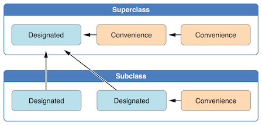Here, the superclass has a single designated initializer and two convenience initializers. One convenience initializer calls another convenience initializer, which in turn calls the single designated initializer. This satisfies rules 2 and 3 from above. The superclass does not itself have a further superclass, and so rule 1 does not apply.
The subclass in this figure has two designated initializers and one convenience initializer. The convenience initializer must call one of the two designated initializers, because it can only call another initializer from the same class. This satisfies rules 2 and 3 from above. Both designated initializers must call the single designated initializer from the superclass, to satisfy rule 1 from above.
Note
These rules don’t affect how users of your classes create instances of each class. Any initializer in the diagram above can be used to create a fully initialized instance of the class they belong to. The rules only affect how you write the implementation of the class’s initializers.
The figure below shows a more complex class hierarchy for four classes. It illustrates how the designated initializers in this hierarchy act as “funnel” points for class initialization, simplifying the interrelationships among classes in the chain:
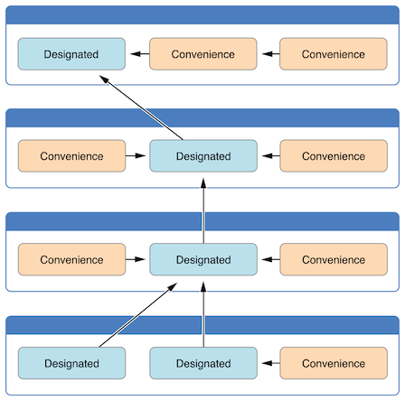Next: Initializer Inheritance and Overriding, Previous: Initializer Delegation for Class Types, Up: Class Inheritance and Initialization [Contents][Index]
Class initialization in Swift is a two-phase process. In the first phase, each stored property is assigned an initial value by the class that introduced it. Once the initial state for every stored property has been determined, the second phase begins, and each class is given the opportunity to customize its stored properties further before the new instance is considered ready for use.
The use of a two-phase initialization process makes initialization safe, while still giving complete flexibility to each class in a class hierarchy. Two-phase initialization prevents property values from being accessed before they are initialized, and prevents property values from being set to a different value by another initializer unexpectedly.
Note
Swift’s two-phase initialization process is similar to initialization in Objective-C. The main difference is that during phase 1, Objective-C assigns zero or null values (such as ‘0’ or ‘nil’) to every property. Swift’s initialization flow is more flexible in that it lets you set custom initial values, and can cope with types for which ‘0’ or ‘nil’ is not a valid default value.
Swift’s compiler performs four helpful safety-checks to make sure that two-phase initialization is completed without error:
A designated initializer must ensure that all of the properties introduced by its class are initialized before it delegates up to a superclass initializer.
As mentioned above, the memory for an object is only considered fully initialized once the initial state of all of its stored properties is known. In order for this rule to be satisfied, a designated initializer must make sure that all of its own properties are initialized before it hands off up the chain.
A designated initializer must delegate up to a superclass initializer before assigning a value to an inherited property. If it doesn’t, the new value the designated initializer assigns will be overwritten by the superclass as part of its own initialization.
A convenience initializer must delegate to another initializer before assigning a value to any property (including properties defined by the same class). If it doesn’t, the new value the convenience initializer assigns will be overwritten by its own class’s designated initializer.
An initializer cannot call any instance methods, read the values of any instance properties, or refer to ‘self’ as a value until after the first phase of initialization is complete.
The class instance is not fully valid until the first phase ends. Properties can only be accessed, and methods can only be called, once the class instance is known to be valid at the end of the first phase.
Here’s how two-phase initialization plays out, based on the four safety checks above:
Phase 1
Phase 2
Here’s how phase 1 looks for an initialization call for a hypothetical subclass and superclass:
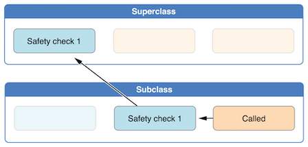In this example, initialization begins with a call to a convenience initializer on the subclass. This convenience initializer cannot yet modify any properties. It delegates across to a designated initializer from the same class.
The designated initializer makes sure that all of the subclass’s properties have a value, as per safety check 1. It then calls a designated initializer on its superclass to continue the initialization up the chain.
The superclass’s designated initializer makes sure that all of the superclass properties have a value. There are no further superclasses to initialize, and so no further delegation is needed.
As soon as all properties of the superclass have an initial value, its memory is considered fully initialized, and phase 1 is complete.
Here’s how phase 2 looks for the same initialization call:
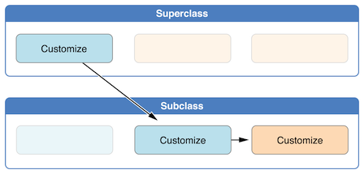The superclass’s designated initializer now has an opportunity to customize the instance further (although it does not have to).
Once the superclass’s designated initializer is finished, the subclass’s designated initializer can perform additional customization (although again, it does not have to).
Finally, once the subclass’s designated initializer is finished, the convenience initializer that was originally called can perform additional customization.
Next: Automatic Initializer Inheritance, Previous: Two-Phase Initialization, Up: Class Inheritance and Initialization [Contents][Index]
Unlike subclasses in Objective-C, Swift subclasses do not inherit their superclass initializers by default. Swift’s approach prevents a situation in which a simple initializer from a superclass is inherited by a more specialized subclass and is used to create a new instance of the subclass that is not fully or correctly initialized.
Note
Superclass initializers are inherited in certain circumstances, but only when it is safe and appropriate to do so. For more information, see Automatic Initializer Inheritance below.
If you want a custom subclass to present one or more of the same initializers as its superclass, you can provide a custom implementation of those initializers within the subclass.
When you write a subclass initializer that matches a superclass designated initializer, you are effectively providing an override of that designated initializer. Therefore, you must write the ‘override’ modifier before the subclass’s initializer definition. This is true even if you are overriding an automatically provided default initializer, as described in Default Initializers.
As with an overridden property, method or subscript, the presence of the ‘override’ modifier prompts Swift to check that the superclass has a matching designated initializer to be overridden, and validates that the parameters for your overriding initializer have been specified as intended.
Note
You always write the ‘override’ modifier when overriding a superclass designated initializer, even if your subclass’s implementation of the initializer is a convenience initializer.
Conversely, if you write a subclass initializer that matches a superclass convenience initializer, that superclass convenience initializer can never be called directly by your subclass, as per the rules described above in Initializer Delegation for Class Types. Therefore, your subclass is not (strictly speaking) providing an override of the superclass initializer. As a result, you do not write the ‘override’ modifier when providing a matching implementation of a superclass convenience initializer.
The example below defines a base class called ‘Vehicle’. This base class declares a stored property called ‘numberOfWheels’, with a default ‘Int’ value of ‘0’. The ‘numberOfWheels’ property is used by a computed property called ‘description’ to create a ‘String’ description of the vehicle’s characteristics:
class Vehicle {
var numberOfWheels = 0
var description: String {
return "\(numberOfWheels) wheel(s)"
}
}
The ‘Vehicle’ class provides a default value for its only stored property, and does not provide any custom initializers itself. As a result, it automatically receives a default initializer, as described in Default Initializers. The default initializer (when available) is always a designated initializer for a class, and can be used to create a new ‘Vehicle’ instance with a ‘numberOfWheels’ of ‘0’:
let vehicle = Vehicle()
print("Vehicle: \(vehicle.description)")
// Vehicle: 0 wheel(s)
The next example defines a subclass of ‘Vehicle’ called ‘Bicycle’:
class Bicycle: Vehicle {
override init() {
super.init()
numberOfWheels = 2
}
}
The ‘Bicycle’ subclass defines a custom designated initializer, ‘init()’. This designated initializer matches a designated initializer from the superclass of ‘Bicycle’, and so the ‘Bicycle’ version of this initializer is marked with the ‘override’ modifier.
The ‘init()’ initializer for ‘Bicycle’ starts by calling ‘super.init()’, which calls the default initializer for the ‘Bicycle’ class’s superclass, ‘Vehicle’. This ensures that the ‘numberOfWheels’ inherited property is initialized by ‘Vehicle’ before ‘Bicycle’ has the opportunity to modify the property. After calling ‘super.init()’, the original value of ‘numberOfWheels’ is replaced with a new value of ‘2’.
If you create an instance of ‘Bicycle’, you can call its inherited ‘description’ computed property to see how its ‘numberOfWheels’ property has been updated:
let bicycle = Bicycle()
print("Bicycle: \(bicycle.description)")
// Bicycle: 2 wheel(s)
If a subclass initializer performs no customization in phase 2 of the initialization process, and the superclass has a zero-argument designated initializer, you can omit a call to ‘super.init()’ after assigning values to all of the subclass’s stored properties.
This example defines another subclass of ‘Vehicle’, called ‘Hoverboard’. In its initializer, the ‘Hoverboard’ class sets only its ‘color’ property. Instead of making an explicit call to ‘super.init()’, this initializer relies on an implicit call to its superclass’s initializer to complete the process.
class Hoverboard: Vehicle {
var color: String
init(color: String) {
self.color = color
// super.init() implicitly called here
}
override var description: String {
return "\(super.description) in a beautiful \(color)"
}
}
An instance of ‘Hoverboard’ uses the default number of wheels supplied by the ‘Vehicle’ initializer.
let hoverboard = Hoverboard(color: "silver")
print("Hoverboard: \(hoverboard.description)")
// Hoverboard: 0 wheel(s) in a beautiful silver
Note
Subclasses can modify inherited variable properties during initialization, but can not modify inherited constant properties.
Next: Designated and Convenience Initializers in Action, Previous: Initializer Inheritance and Overriding, Up: Class Inheritance and Initialization [Contents][Index]
As mentioned above, subclasses do not inherit their superclass initializers by default. However, superclass initializers are automatically inherited if certain conditions are met. In practice, this means that you do not need to write initializer overrides in many common scenarios, and can inherit your superclass initializers with minimal effort whenever it is safe to do so.
Assuming that you provide default values for any new properties you introduce in a subclass, the following two rules apply:
If your subclass doesn’t define any designated initializers, it automatically inherits all of its superclass designated initializers.
If your subclass provides an implementation of all of its superclass designated initializers—either by inheriting them as per rule 1, or by providing a custom implementation as part of its definition—then it automatically inherits all of the superclass convenience initializers.
These rules apply even if your subclass adds further convenience initializers.
Note
A subclass can implement a superclass designated initializer as a subclass convenience initializer as part of satisfying rule 2.
Previous: Automatic Initializer Inheritance, Up: Class Inheritance and Initialization [Contents][Index]
The following example shows designated initializers, convenience initializers, and automatic initializer inheritance in action. This example defines a hierarchy of three classes called ‘Food’, ‘RecipeIngredient’, and ‘ShoppingListItem’, and demonstrates how their initializers interact.
The base class in the hierarchy is called ‘Food’, which is a simple class to encapsulate the name of a foodstuff. The ‘Food’ class introduces a single ‘String’ property called ‘name’ and provides two initializers for creating ‘Food’ instances:
class Food {
var name: String
init(name: String) {
self.name = name
}
convenience init() {
self.init(name: "[Unnamed]")
}
}
The figure below shows the initializer chain for the ‘Food’ class:
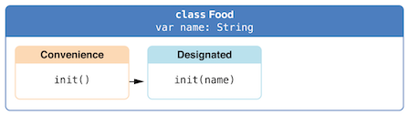Classes do not have a default memberwise initializer, and so the ‘Food’ class provides a designated initializer that takes a single argument called ‘name’. This initializer can be used to create a new ‘Food’ instance with a specific name:
let namedMeat = Food(name: "Bacon") // namedMeat's name is "Bacon"
The ‘init(name: String)’ initializer from the ‘Food’ class is provided as a designated initializer, because it ensures that all stored properties of a new ‘Food’ instance are fully initialized. The ‘Food’ class does not have a superclass, and so the ‘init(name: String)’ initializer does not need to call ‘super.init()’ to complete its initialization.
The ‘Food’ class also provides a convenience initializer, ‘init()’, with no arguments. The ‘init()’ initializer provides a default placeholder name for a new food by delegating across to the ‘Food’ class’s ‘init(name: String)’ with a ‘name’ value of ‘[Unnamed]’:
let mysteryMeat = Food() // mysteryMeat's name is "[Unnamed]"
The second class in the hierarchy is a subclass of ‘Food’ called ‘RecipeIngredient’. The ‘RecipeIngredient’ class models an ingredient in a cooking recipe. It introduces an ‘Int’ property called ‘quantity’ (in addition to the ‘name’ property it inherits from ‘Food’) and defines two initializers for creating ‘RecipeIngredient’ instances:
class RecipeIngredient: Food {
var quantity: Int
init(name: String, quantity: Int) {
self.quantity = quantity
super.init(name: name)
}
override convenience init(name: String) {
self.init(name: name, quantity: 1)
}
}
The figure below shows the initializer chain for the ‘RecipeIngredient’ class:
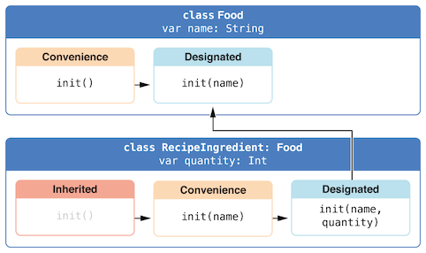The ‘RecipeIngredient’ class has a single designated initializer, ‘init(name: String, quantity: Int)’, which can be used to populate all of the properties of a new ‘RecipeIngredient’ instance. This initializer starts by assigning the passed ‘quantity’ argument to the ‘quantity’ property, which is the only new property introduced by ‘RecipeIngredient’. After doing so, the initializer delegates up to the ‘init(name: String)’ initializer of the ‘Food’ class. This process satisfies safety check 1 from Two-Phase Initialization above.
‘RecipeIngredient’ also defines a convenience initializer, ‘init(name: String)’, which is used to create a ‘RecipeIngredient’ instance by name alone. This convenience initializer assumes a quantity of ‘1’ for any ‘RecipeIngredient’ instance that is created without an explicit quantity. The definition of this convenience initializer makes ‘RecipeIngredient’ instances quicker and more convenient to create, and avoids code duplication when creating several single-quantity ‘RecipeIngredient’ instances. This convenience initializer simply delegates across to the class’s designated initializer, passing in a ‘quantity’ value of ‘1’.
The ‘init(name: String)’ convenience initializer provided by ‘RecipeIngredient’ takes the same parameters as the ‘init(name: String)’ designated initializer from ‘Food’. Because this convenience initializer overrides a designated initializer from its superclass, it must be marked with the ‘override’ modifier (as described in Initializer Inheritance and Overriding).
Even though ‘RecipeIngredient’ provides the ‘init(name: String)’ initializer as a convenience initializer, ‘RecipeIngredient’ has nonetheless provided an implementation of all of its superclass’s designated initializers. Therefore, ‘RecipeIngredient’ automatically inherits all of its superclass’s convenience initializers too.
In this example, the superclass for ‘RecipeIngredient’ is ‘Food’, which has a single convenience initializer called ‘init()’. This initializer is therefore inherited by ‘RecipeIngredient’. The inherited version of ‘init()’ functions in exactly the same way as the ‘Food’ version, except that it delegates to the ‘RecipeIngredient’ version of ‘init(name: String)’ rather than the ‘Food’ version.
All three of these initializers can be used to create new ‘RecipeIngredient’ instances:
let oneMysteryItem = RecipeIngredient() let oneBacon = RecipeIngredient(name: "Bacon") let sixEggs = RecipeIngredient(name: "Eggs", quantity: 6)
The third and final class in the hierarchy is a subclass of ‘RecipeIngredient’ called ‘ShoppingListItem’. The ‘ShoppingListItem’ class models a recipe ingredient as it appears in a shopping list.
Every item in the shopping list starts out as “unpurchased”. To represent this fact, ‘ShoppingListItem’ introduces a Boolean property called ‘purchased’, with a default value of ‘false’. ‘ShoppingListItem’ also adds a computed ‘description’ property, which provides a textual description of a ‘ShoppingListItem’ instance:
class ShoppingListItem: RecipeIngredient {
var purchased = false
var description: String {
var output = "\(quantity) x \(name)"
output += purchased ? " ✔" : " ✘"
return output
}
}
Note
‘ShoppingListItem’ does not define an initializer to provide an initial value for ‘purchased’, because items in a shopping list (as modeled here) always start out unpurchased.
Because it provides a default value for all of the properties it introduces and does not define any initializers itself, ‘ShoppingListItem’ automatically inherits all of the designated and convenience initializers from its superclass.
The figure below shows the overall initializer chain for all three classes:
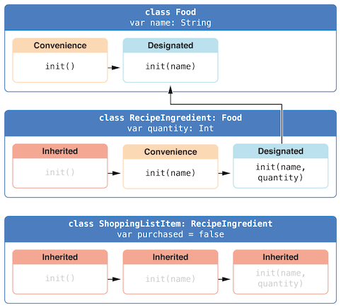You can use all three of the inherited initializers to create a new ‘ShoppingListItem’ instance:
var breakfastList = [
ShoppingListItem(),
ShoppingListItem(name: "Bacon"),
ShoppingListItem(name: "Eggs", quantity: 6),
]
breakfastList[0].name = "Orange juice"
breakfastList[0].purchased = true
for item in breakfastList {
print(item.description)
}
// 1 x Orange juice ✔
// 1 x Bacon ✘
// 6 x Eggs ✘
Here, a new array called ‘breakfastList’ is created from an array literal containing three new ‘ShoppingListItem’ instances. The type of the array is inferred to be ‘[ShoppingListItem]’. After the array is created, the name of the ‘ShoppingListItem’ at the start of the array is changed from ‘"[Unnamed]"’ to ‘"Orange juice"’ and it is marked as having been purchased. Printing the description of each item in the array shows that their default states have been set as expected.
Next: Required Initializers, Previous: Class Inheritance and Initialization, Up: Initialization [Contents][Index]
It is sometimes useful to define a class, structure, or enumeration for which initialization can fail. This failure might be triggered by invalid initialization parameter values, the absence of a required external resource, or some other condition that prevents initialization from succeeding.
To cope with initialization conditions that can fail, define one or more failable initializers as part of a class, structure, or enumeration definition. You write a failable initializer by placing a question mark after the ‘init’ keyword (‘init?’).
Note
You cannot define a failable and a nonfailable initializer with the same parameter types and names.
A failable initializer creates an optional value of the type it initializes. You write ‘return nil’ within a failable initializer to indicate a point at which initialization failure can be triggered.
Note
Strictly speaking, initializers do not return a value. Rather, their role is to ensure that ‘self’ is fully and correctly initialized by the time that initialization ends. Although you write ‘return nil’ to trigger an initialization failure, you do not use the ‘return’ keyword to indicate initialization success.
For instance, failable initializers are implemented for numeric type conversions. To ensure conversion between numeric types maintains the value exactly, use the ‘init(exactly:)’ initializer. If the type conversion cannot maintain the value, the initializer fails.
let wholeNumber: Double = 12345.0
let pi = 3.14159
if let valueMaintained = Int(exactly: wholeNumber) {
print("\(wholeNumber) conversion to Int maintains value of \(valueMaintained)")
}
// Prints "12345.0 conversion to Int maintains value of 12345"
let valueChanged = Int(exactly: pi)
// valueChanged is of type Int?, not Int
if valueChanged == nil {
print("\(pi) conversion to Int does not maintain value")
}
// Prints "3.14159 conversion to Int does not maintain value"
The example below defines a structure called ‘Animal’, with a constant ‘String’ property called ‘species’. The ‘Animal’ structure also defines a failable initializer with a single parameter called ‘species’. This initializer checks if the ‘species’ value passed to the initializer is an empty string. If an empty string is found, an initialization failure is triggered. Otherwise, the ‘species’ property’s value is set, and initialization succeeds:
struct Animal {
let species: String
init?(species: String) {
if species.isEmpty { return nil }
self.species = species
}
}
You can use this failable initializer to try to initialize a new ‘Animal’ instance and to check if initialization succeeded:
let someCreature = Animal(species: "Giraffe")
// someCreature is of type Animal?, not Animal
if let giraffe = someCreature {
print("An animal was initialized with a species of \(giraffe.species)")
}
// Prints "An animal was initialized with a species of Giraffe"
If you pass an empty string value to the failable initializer’s ‘species’ parameter, the initializer triggers an initialization failure:
let anonymousCreature = Animal(species: "")
// anonymousCreature is of type Animal?, not Animal
if anonymousCreature == nil {
print("The anonymous creature could not be initialized")
}
// Prints "The anonymous creature could not be initialized"
Note
Checking for an empty string value (such as ‘""’ rather than ‘"Giraffe"’) is not the same as checking for ‘nil’ to indicate the absence of an optional ‘String’ value. In the example above, an empty string (‘""’) is a valid, non-optional ‘String’. However, it is not appropriate for an animal to have an empty string as the value of its ‘species’ property. To model this restriction, the failable initializer triggers an initialization failure if an empty string is found.
Next: Failable Initializers for Enumerations with Raw Values, Up: Failable Initializers [Contents][Index]
You can use a failable initializer to select an appropriate enumeration case based on one or more parameters. The initializer can then fail if the provided parameters do not match an appropriate enumeration case.
The example below defines an enumeration called ‘TemperatureUnit’, with three possible states (‘kelvin’, ‘celsius’, and ‘fahrenheit’). A failable initializer is used to find an appropriate enumeration case for a ‘Character’ value representing a temperature symbol:
enum TemperatureUnit {
case kelvin, celsius, fahrenheit
init?(symbol: Character) {
switch symbol {
case "K":
self = .kelvin
case "C":
self = .celsius
case "F":
self = .fahrenheit
default:
return nil
}
}
}
You can use this failable initializer to choose an appropriate enumeration case for the three possible states and to cause initialization to fail if the parameter does not match one of these states:
let fahrenheitUnit = TemperatureUnit(symbol: "F")
if fahrenheitUnit != nil {
print("This is a defined temperature unit, so initialization succeeded.")
}
// Prints "This is a defined temperature unit, so initialization succeeded."
let unknownUnit = TemperatureUnit(symbol: "X")
if unknownUnit == nil {
print("This is not a defined temperature unit, so initialization failed.")
}
// Prints "This is not a defined temperature unit, so initialization failed."
Next: Propagation of Initialization Failure, Previous: Failable Initializers for Enumerations, Up: Failable Initializers [Contents][Index]
Enumerations with raw values automatically receive a failable initializer, ‘init?(rawValue:)’, that takes a parameter called ‘rawValue’ of the appropriate raw-value type and selects a matching enumeration case if one is found, or triggers an initialization failure if no matching value exists.
You can rewrite the ‘TemperatureUnit’ example from above to use raw values of type ‘Character’ and to take advantage of the ‘init?(rawValue:)’ initializer:
enum TemperatureUnit: Character {
case kelvin = "K", celsius = "C", fahrenheit = "F"
}
let fahrenheitUnit = TemperatureUnit(rawValue: "F")
if fahrenheitUnit != nil {
print("This is a defined temperature unit, so initialization succeeded.")
}
// Prints "This is a defined temperature unit, so initialization succeeded."
let unknownUnit = TemperatureUnit(rawValue: "X")
if unknownUnit == nil {
print("This is not a defined temperature unit, so initialization failed.")
}
// Prints "This is not a defined temperature unit, so initialization failed."
Next: Overriding a Failable Initializer, Previous: Failable Initializers for Enumerations with Raw Values, Up: Failable Initializers [Contents][Index]
A failable initializer of a class, structure, or enumeration can delegate across to another failable initializer from the same class, structure, or enumeration. Similarly, a subclass failable initializer can delegate up to a superclass failable initializer.
In either case, if you delegate to another initializer that causes initialization to fail, the entire initialization process fails immediately, and no further initialization code is executed.
Note
A failable initializer can also delegate to a nonfailable initializer. Use this approach if you need to add a potential failure state to an existing initialization process that does not otherwise fail.
The example below defines a subclass of ‘Product’ called ‘CartItem’. The ‘CartItem’ class models an item in an online shopping cart. ‘CartItem’ introduces a stored constant property called ‘quantity’ and ensures that this property always has a value of at least ‘1’:
class Product {
let name: String
init?(name: String) {
if name.isEmpty { return nil }
self.name = name
}
}
class CartItem: Product {
let quantity: Int
init?(name: String, quantity: Int) {
if quantity < 1 { return nil }
self.quantity = quantity
super.init(name: name)
}
}
The failable initializer for ‘CartItem’ starts by validating that it has received a ‘quantity’ value of ‘1’ or more. If the ‘quantity’ is invalid, the entire initialization process fails immediately and no further initialization code is executed. Likewise, the failable initializer for ‘Product’ checks the ‘name’ value, and the initializer process fails immediately if ‘name’ is the empty string.
If you create a ‘CartItem’ instance with a nonempty name and a quantity of ‘1’ or more, initialization succeeds:
if let twoSocks = CartItem(name: "sock", quantity: 2) {
print("Item: \(twoSocks.name), quantity: \(twoSocks.quantity)")
}
// Prints "Item: sock, quantity: 2"
If you try to create a ‘CartItem’ instance with a ‘quantity’ value of ‘0’, the ‘CartItem’ initializer causes initialization to fail:
if let zeroShirts = CartItem(name: "shirt", quantity: 0) {
print("Item: \(zeroShirts.name), quantity: \(zeroShirts.quantity)")
} else {
print("Unable to initialize zero shirts")
}
// Prints "Unable to initialize zero shirts"
Similarly, if you try to create a ‘CartItem’ instance with an empty ‘name’ value, the superclass ‘Product’ initializer causes initialization to fail:
if let oneUnnamed = CartItem(name: "", quantity: 1) {
print("Item: \(oneUnnamed.name), quantity: \(oneUnnamed.quantity)")
} else {
print("Unable to initialize one unnamed product")
}
// Prints "Unable to initialize one unnamed product"
Next: The init! Failable Initializer, Previous: Propagation of Initialization Failure, Up: Failable Initializers [Contents][Index]
You can override a superclass failable initializer in a subclass, just like any other initializer. Alternatively, you can override a superclass failable initializer with a subclass nonfailable initializer. This enables you to define a subclass for which initialization cannot fail, even though initialization of the superclass is allowed to fail.
Note that if you override a failable superclass initializer with a nonfailable subclass initializer, the only way to delegate up to the superclass initializer is to force-unwrap the result of the failable superclass initializer.
Note
You can override a failable initializer with a nonfailable initializer but not the other way around.
The example below defines a class called ‘Document’. This class models a document that can be initialized with a ‘name’ property that is either a nonempty string value or ‘nil’, but cannot be an empty string:
class Document {
var name: String?
// this initializer creates a document with a nil name value
init() {}
// this initializer creates a document with a nonempty name value
init?(name: String) {
if name.isEmpty { return nil }
self.name = name
}
}
The next example defines a subclass of ‘Document’ called ‘AutomaticallyNamedDocument’. The ‘AutomaticallyNamedDocument’ subclass overrides both of the designated initializers introduced by ‘Document’. These overrides ensure that an ‘AutomaticallyNamedDocument’ instance has an initial ‘name’ value of ‘"[Untitled]"’ if the instance is initialized without a name, or if an empty string is passed to the ‘init(name:)’ initializer:
class AutomaticallyNamedDocument: Document {
override init() {
super.init()
self.name = "[Untitled]"
}
override init(name: String) {
super.init()
if name.isEmpty {
self.name = "[Untitled]"
} else {
self.name = name
}
}
}
The ‘AutomaticallyNamedDocument’ overrides its superclass’s failable ‘init?(name:)’ initializer with a nonfailable ‘init(name:)’ initializer. Because ‘AutomaticallyNamedDocument’ copes with the empty string case in a different way than its superclass, its initializer does not need to fail, and so it provides a nonfailable version of the initializer instead.
You can use forced unwrapping in an initializer to call a failable initializer from the superclass as part of the implementation of a subclass’s nonfailable initializer. For example, the ‘UntitledDocument’ subclass below is always named ‘"[Untitled]"’, and it uses the failable ‘init(name:)’ initializer from its superclass during initialization.
class UntitledDocument: Document {
override init() {
super.init(name: "[Untitled]")!
}
}
In this case, if the ‘init(name:)’ initializer of the superclass were ever called with an empty string as the name, the forced unwrapping operation would result in a runtime error. However, because it’s called with a string constant, you can see that the initializer won’t fail, so no runtime error can occur in this case.
Previous: Overriding a Failable Initializer, Up: Failable Initializers [Contents][Index]
You typically define a failable initializer that creates an optional instance of the appropriate type by placing a question mark after the ‘init’ keyword (‘init?’). Alternatively, you can define a failable initializer that creates an implicitly unwrapped optional instance of the appropriate type. Do this by placing an exclamation mark after the ‘init’ keyword (‘init!’) instead of a question mark.
You can delegate from ‘init?’ to ‘init!’ and vice versa, and you can override ‘init?’ with ‘init!’ and vice versa. You can also delegate from ‘init’ to ‘init!’, although doing so will trigger an assertion if the ‘init!’ initializer causes initialization to fail.
Next: Setting a Default Property Value with a Closure or Function, Previous: Failable Initializers, Up: Initialization [Contents][Index]
Write the ‘required’ modifier before the definition of a class initializer to indicate that every subclass of the class must implement that initializer:
class SomeClass {
required init() {
// initializer implementation goes here
}
}
You must also write the ‘required’ modifier before every subclass implementation of a required initializer, to indicate that the initializer requirement applies to further subclasses in the chain. You do not write the ‘override’ modifier when overriding a required designated initializer:
class SomeSubclass: SomeClass {
required init() {
// subclass implementation of the required initializer goes here
}
}
Note
You do not have to provide an explicit implementation of a required initializer if you can satisfy the requirement with an inherited initializer.
Previous: Required Initializers, Up: Initialization [Contents][Index]
If a stored property’s default value requires some customization or setup, you can use a closure or global function to provide a customized default value for that property. Whenever a new instance of the type that the property belongs to is initialized, the closure or function is called, and its return value is assigned as the property’s default value.
These kinds of closures or functions typically create a temporary value of the same type as the property, tailor that value to represent the desired initial state, and then return that temporary value to be used as the property’s default value.
Here’s a skeleton outline of how a closure can be used to provide a default property value:
class SomeClass {
let someProperty: SomeType = {
// create a default value for someProperty inside this closure
// someValue must be of the same type as SomeType
return someValue
}()
}
Note that the closure’s end curly brace is followed by an empty pair of parentheses. This tells Swift to execute the closure immediately. If you omit these parentheses, you are trying to assign the closure itself to the property, and not the return value of the closure.
Note
If you use a closure to initialize a property, remember that the rest of the instance has not yet been initialized at the point that the closure is executed. This means that you cannot access any other property values from within your closure, even if those properties have default values. You also cannot use the implicit ‘self’ property, or call any of the instance’s methods.
The example below defines a structure called ‘Chessboard’, which models a board for the game of chess. Chess is played on an 8 x 8 board, with alternating black and white squares.
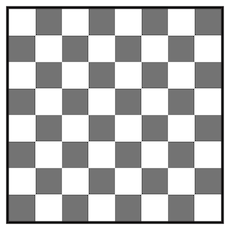To represent this game board, the ‘Chessboard’ structure has a single property called ‘boardColors’, which is an array of 64 ‘Bool’ values. A value of ‘true’ in the array represents a black square and a value of ‘false’ represents a white square. The first item in the array represents the top left square on the board and the last item in the array represents the bottom right square on the board.
The ‘boardColors’ array is initialized with a closure to set up its color values:
struct Chessboard {
let boardColors: [Bool] = {
var temporaryBoard = [Bool]()
var isBlack = false
for i in 1...8 {
for j in 1...8 {
temporaryBoard.append(isBlack)
isBlack = !isBlack
}
isBlack = !isBlack
}
return temporaryBoard
}()
func squareIsBlackAt(row: Int, column: Int) -> Bool {
return boardColors[(row * 8) + column]
}
}
Whenever a new ‘Chessboard’ instance is created, the closure is executed, and the default value of ‘boardColors’ is calculated and returned. The closure in the example above calculates and sets the appropriate color for each square on the board in a temporary array called ‘temporaryBoard’, and returns this temporary array as the closure’s return value once its setup is complete. The returned array value is stored in ‘boardColors’ and can be queried with the ‘squareIsBlackAt(row:column:)’ utility function:
let board = Chessboard() print(board.squareIsBlackAt(row: 0, column: 1)) // Prints "true" print(board.squareIsBlackAt(row: 7, column: 7)) // Prints "false"
Next: Optional Chaining, Previous: Initialization, Up: Top [Contents][Index]
A deinitializer is called immediately before a class instance is deallocated. You write deinitializers with the ‘deinit’ keyword, similar to how initializers are written with the ‘init’ keyword. Deinitializers are only available on class types.
| • How Deinitialization Works | ||
| • Deinitializers in Action |
Next: Deinitializers in Action, Up: Deinitialization [Contents][Index]
Swift automatically deallocates your instances when they are no longer needed, to free up resources. Swift handles the memory management of instances through automatic reference counting (ARC), as described in Automatic Reference Counting. Typically you don’t need to perform manual cleanup when your instances are deallocated. However, when you are working with your own resources, you might need to perform some additional cleanup yourself. For example, if you create a custom class to open a file and write some data to it, you might need to close the file before the class instance is deallocated.
Class definitions can have at most one deinitializer per class. The deinitializer does not take any parameters and is written without parentheses:
deinit {
// perform the deinitialization
}
Deinitializers are called automatically, just before instance deallocation takes place. You are not allowed to call a deinitializer yourself. Superclass deinitializers are inherited by their subclasses, and the superclass deinitializer is called automatically at the end of a subclass deinitializer implementation. Superclass deinitializers are always called, even if a subclass does not provide its own deinitializer.
Because an instance is not deallocated until after its deinitializer is called, a deinitializer can access all properties of the instance it is called on and can modify its behavior based on those properties (such as looking up the name of a file that needs to be closed).
Previous: How Deinitialization Works, Up: Deinitialization [Contents][Index]
Here’s an example of a deinitializer in action. This example defines two new types, ‘Bank’ and ‘Player’, for a simple game. The ‘Bank’ class manages a made-up currency, which can never have more than 10,000 coins in circulation. There can only ever be one ‘Bank’ in the game, and so the ‘Bank’ is implemented as a class with type properties and methods to store and manage its current state:
class Bank {
static var coinsInBank = 10_000
static func distribute(coins numberOfCoinsRequested: Int) -> Int {
let numberOfCoinsToVend = min(numberOfCoinsRequested, coinsInBank)
coinsInBank -= numberOfCoinsToVend
return numberOfCoinsToVend
}
static func receive(coins: Int) {
coinsInBank += coins
}
}
‘Bank’ keeps track of the current number of coins it holds with its ‘coinsInBank’ property. It also offers two methods—‘distribute(coins:)’ and ‘receive(coins:)’—to handle the distribution and collection of coins.
The ‘distribute(coins:)’ method checks that there are enough coins in the bank before distributing them. If there are not enough coins, ‘Bank’ returns a smaller number than the number that was requested (and returns zero if no coins are left in the bank). It returns an integer value to indicate the actual number of coins that were provided.
The ‘receive(coins:)’ method simply adds the received number of coins back into the bank’s coin store.
The ‘Player’ class describes a player in the game. Each player has a certain number of coins stored in their purse at any time. This is represented by the player’s ‘coinsInPurse’ property:
class Player {
var coinsInPurse: Int
init(coins: Int) {
coinsInPurse = Bank.distribute(coins: coins)
}
func win(coins: Int) {
coinsInPurse += Bank.distribute(coins: coins)
}
deinit {
Bank.receive(coins: coinsInPurse)
}
}
Each ‘Player’ instance is initialized with a starting allowance of a specified number of coins from the bank during initialization, although a ‘Player’ instance may receive fewer than that number if not enough coins are available.
The ‘Player’ class defines a ‘win(coins:)’ method, which retrieves a certain number of coins from the bank and adds them to the player’s purse. The ‘Player’ class also implements a deinitializer, which is called just before a ‘Player’ instance is deallocated. Here, the deinitializer simply returns all of the player’s coins to the bank:
var playerOne: Player? = Player(coins: 100)
print("A new player has joined the game with \(playerOne!.coinsInPurse) coins")
// Prints "A new player has joined the game with 100 coins"
print("There are now \(Bank.coinsInBank) coins left in the bank")
// Prints "There are now 9900 coins left in the bank"
A new ‘Player’ instance is created, with a request for 100 coins if they are available. This ‘Player’ instance is stored in an optional ‘Player’ variable called ‘playerOne’. An optional variable is used here, because players can leave the game at any point. The optional lets you track whether there is currently a player in the game.
Because ‘playerOne’ is an optional, it is qualified with an exclamation mark (‘!’) when its ‘coinsInPurse’ property is accessed to print its default number of coins, and whenever its ‘win(coins:)’ method is called:
playerOne!.win(coins: 2_000)
print("PlayerOne won 2000 coins & now has \(playerOne!.coinsInPurse) coins")
// Prints "PlayerOne won 2000 coins & now has 2100 coins"
print("The bank now only has \(Bank.coinsInBank) coins left")
// Prints "The bank now only has 7900 coins left"
Here, the player has won 2,000 coins. The player’s purse now contains 2,100 coins, and the bank has only 7,900 coins left.
playerOne = nil
print("PlayerOne has left the game")
// Prints "PlayerOne has left the game"
print("The bank now has \(Bank.coinsInBank) coins")
// Prints "The bank now has 10000 coins"
The player has now left the game. This is indicated by setting the optional ‘playerOne’ variable to ‘nil’, meaning “no ‘Player’ instance.” At the point that this happens, the ‘playerOne’ variable’s reference to the ‘Player’ instance is broken. No other properties or variables are still referring to the ‘Player’ instance, and so it is deallocated in order to free up its memory. Just before this happens, its deinitializer is called automatically, and its coins are returned to the bank.
Next: Error Handling 2, Previous: Deinitialization, Up: Top [Contents][Index]
Optional chaining is a process for querying and calling properties, methods, and subscripts on an optional that might currently be ‘nil’. If the optional contains a value, the property, method, or subscript call succeeds; if the optional is ‘nil’, the property, method, or subscript call returns ‘nil’. Multiple queries can be chained together, and the entire chain fails gracefully if any link in the chain is ‘nil’.
Note
Optional chaining in Swift is similar to messaging ‘nil’ in Objective-C, but in a way that works for any type, and that can be checked for success or failure.
You specify optional chaining by placing a question mark (‘?’) after the optional value on which you wish to call a property, method or subscript if the optional is non-‘nil’. This is very similar to placing an exclamation mark (‘!’) after an optional value to force the unwrapping of its value. The main difference is that optional chaining fails gracefully when the optional is ‘nil’, whereas forced unwrapping triggers a runtime error when the optional is ‘nil’.
To reflect the fact that optional chaining can be called on a ‘nil’ value, the result of an optional chaining call is always an optional value, even if the property, method, or subscript you are querying returns a non-optional value. You can use this optional return value to check whether the optional chaining call was successful (the returned optional contains a value), or did not succeed due to a ‘nil’ value in the chain (the returned optional value is ‘nil’).
Specifically, the result of an optional chaining call is of the same type as the expected return value, but wrapped in an optional. A property that normally returns an ‘Int’ will return an ‘Int?’ when accessed through optional chaining.
The next several code snippets demonstrate how optional chaining differs from forced unwrapping and enables you to check for success.
First, two classes called ‘Person’ and ‘Residence’ are defined:
class Person {
var residence: Residence?
}
class Residence {
var numberOfRooms = 1
}
‘Residence’ instances have a single ‘Int’ property called ‘numberOfRooms’, with a default value of ‘1’. ‘Person’ instances have an optional ‘residence’ property of type ‘Residence?’.
If you create a new ‘Person’ instance, its ‘residence’ property is default initialized to ‘nil’, by virtue of being optional. In the code below, ‘john’ has a ‘residence’ property value of ‘nil’:
let john = Person()
If you try to access the ‘numberOfRooms’ property of this person’s ‘residence’, by placing an exclamation mark after ‘residence’ to force the unwrapping of its value, you trigger a runtime error, because there is no ‘residence’ value to unwrap:
let roomCount = john.residence!.numberOfRooms // this triggers a runtime error
The code above succeeds when ‘john.residence’ has a non-‘nil’ value and will set ‘roomCount’ to an ‘Int’ value containing the appropriate number of rooms. However, this code always triggers a runtime error when ‘residence’ is ‘nil’, as illustrated above.
Optional chaining provides an alternative way to access the value of ‘numberOfRooms’. To use optional chaining, use a question mark in place of the exclamation mark:
if let roomCount = john.residence?.numberOfRooms {
print("John's residence has \(roomCount) room(s).")
} else {
print("Unable to retrieve the number of rooms.")
}
// Prints "Unable to retrieve the number of rooms."
This tells Swift to “chain” on the optional ‘residence’ property and to retrieve the value of ‘numberOfRooms’ if ‘residence’ exists.
Because the attempt to access ‘numberOfRooms’ has the potential to fail, the optional chaining attempt returns a value of type ‘Int?’, or “optional ‘Int=”. When =residence’ is ‘nil’, as in the example above, this optional ‘Int’ will also be ‘nil’, to reflect the fact that it was not possible to access ‘numberOfRooms’. The optional ‘Int’ is accessed through optional binding to unwrap the integer and assign the non-optional value to the ‘roomCount’ variable.
Note that this is true even though ‘numberOfRooms’ is a non-optional ‘Int’. The fact that it is queried through an optional chain means that the call to ‘numberOfRooms’ will always return an ‘Int?’ instead of an ‘Int’.
You can assign a ‘Residence’ instance to ‘john.residence’, so that it no longer has a ‘nil’ value:
john.residence = Residence()
‘john.residence’ now contains an actual ‘Residence’ instance, rather than ‘nil’. If you try to access ‘numberOfRooms’ with the same optional chaining as before, it will now return an ‘Int?’ that contains the default ‘numberOfRooms’ value of ‘1’:
if let roomCount = john.residence?.numberOfRooms {
print("John's residence has \(roomCount) room(s).")
} else {
print("Unable to retrieve the number of rooms.")
}
// Prints "John's residence has 1 room(s)."
Next: Accessing Properties Through Optional Chaining, Previous: Optional Chaining as an Alternative to Forced Unwrapping, Up: Optional Chaining [Contents][Index]
You can use optional chaining with calls to properties, methods, and subscripts that are more than one level deep. This enables you to drill down into subproperties within complex models of interrelated types, and to check whether it is possible to access properties, methods, and subscripts on those subproperties.
The code snippets below define four model classes for use in several subsequent examples, including examples of multilevel optional chaining. These classes expand upon the ‘Person’ and ‘Residence’ model from above by adding a ‘Room’ and ‘Address’ class, with associated properties, methods, and subscripts.
The ‘Person’ class is defined in the same way as before:
class Person {
var residence: Residence?
}
The ‘Residence’ class is more complex than before. This time, the ‘Residence’ class defines a variable property called ‘rooms’, which is initialized with an empty array of type ‘[Room]’:
class Residence {
var rooms = [Room]()
var numberOfRooms: Int {
return rooms.count
}
subscript(i: Int) -> Room {
get {
return rooms[i]
}
set {
rooms[i] = newValue
}
}
func printNumberOfRooms() {
print("The number of rooms is \(numberOfRooms)")
}
var address: Address?
}
Because this version of ‘Residence’ stores an array of ‘Room’ instances, its ‘numberOfRooms’ property is implemented as a computed property, not a stored property. The computed ‘numberOfRooms’ property simply returns the value of the ‘count’ property from the ‘rooms’ array.
As a shortcut to accessing its ‘rooms’ array, this version of ‘Residence’ provides a read-write subscript that provides access to the room at the requested index in the ‘rooms’ array.
This version of ‘Residence’ also provides a method called ‘printNumberOfRooms’, which simply prints the number of rooms in the residence.
Finally, ‘Residence’ defines an optional property called ‘address’, with a type of ‘Address?’. The ‘Address’ class type for this property is defined below.
The ‘Room’ class used for the ‘rooms’ array is a simple class with one property called ‘name’, and an initializer to set that property to a suitable room name:
class Room {
let name: String
init(name: String) { self.name = name }
}
The final class in this model is called ‘Address’. This class has three optional properties of type ‘String?’. The first two properties, ‘buildingName’ and ‘buildingNumber’, are alternative ways to identify a particular building as part of an address. The third property, ‘street’, is used to name the street for that address:
class Address {
var buildingName: String?
var buildingNumber: String?
var street: String?
func buildingIdentifier() -> String? {
if let buildingNumber = buildingNumber, let street = street {
return "\(buildingNumber) \(street)"
} else if buildingName != nil {
return buildingName
} else {
return nil
}
}
}
The ‘Address’ class also provides a method called ‘buildingIdentifier()’, which has a return type of ‘String?’. This method checks the properties of the address and returns ‘buildingName’ if it has a value, or ‘buildingNumber’ concatenated with ‘street’ if both have values, or ‘nil’ otherwise.
Next: Calling Methods Through Optional Chaining, Previous: Defining Model Classes for Optional Chaining, Up: Optional Chaining [Contents][Index]
As demonstrated in Optional Chaining as an Alternative to Forced Unwrapping, you can use optional chaining to access a property on an optional value, and to check if that property access is successful.
Use the classes defined above to create a new ‘Person’ instance, and try to access its ‘numberOfRooms’ property as before:
let john = Person()
if let roomCount = john.residence?.numberOfRooms {
print("John's residence has \(roomCount) room(s).")
} else {
print("Unable to retrieve the number of rooms.")
}
// Prints "Unable to retrieve the number of rooms."
Because ‘john.residence’ is ‘nil’, this optional chaining call fails in the same way as before.
You can also attempt to set a property’s value through optional chaining:
let someAddress = Address() someAddress.buildingNumber = "29" someAddress.street = "Acacia Road" john.residence?.address = someAddress
In this example, the attempt to set the ‘address’ property of ‘john.residence’ will fail, because ‘john.residence’ is currently ‘nil’.
The assignment is part of the optional chaining, which means none of the code on the right-hand side of the ‘=’ operator is evaluated. In the previous example, it’s not easy to see that ‘someAddress’ is never evaluated, because accessing a constant doesn’t have any side effects. The listing below does the same assignment, but it uses a function to create the address. The function prints “Function was called” before returning a value, which lets you see whether the right-hand side of the ‘=’ operator was evaluated.
func createAddress() -> Address {
print("Function was called.")
let someAddress = Address()
someAddress.buildingNumber = "29"
someAddress.street = "Acacia Road"
return someAddress
}
john.residence?.address = createAddress()
You can tell that the ‘createAddress()’ function isn’t called, because nothing is printed.
Next: Accessing Subscripts Through Optional Chaining, Previous: Accessing Properties Through Optional Chaining, Up: Optional Chaining [Contents][Index]
You can use optional chaining to call a method on an optional value, and to check whether that method call is successful. You can do this even if that method does not define a return value.
The ‘printNumberOfRooms()’ method on the ‘Residence’ class prints the current value of ‘numberOfRooms’. Here’s how the method looks:
func printNumberOfRooms() {
print("The number of rooms is \(numberOfRooms)")
}
This method does not specify a return type. However, functions and methods with no return type have an implicit return type of ‘Void’, as described in Functions Without Return Values. This means that they return a value of ‘()’, or an empty tuple.
If you call this method on an optional value with optional chaining, the method’s return type will be ‘Void?’, not ‘Void’, because return values are always of an optional type when called through optional chaining. This enables you to use an ‘if’ statement to check whether it was possible to call the ‘printNumberOfRooms()’ method, even though the method does not itself define a return value. Compare the return value from the ‘printNumberOfRooms’ call against ‘nil’ to see if the method call was successful:
if john.residence?.printNumberOfRooms() != nil {
print("It was possible to print the number of rooms.")
} else {
print("It was not possible to print the number of rooms.")
}
// Prints "It was not possible to print the number of rooms."
The same is true if you attempt to set a property through optional chaining. The example above in Accessing Properties Through Optional Chaining attempts to set an ‘address’ value for ‘john.residence’, even though the ‘residence’ property is ‘nil’. Any attempt to set a property through optional chaining returns a value of type ‘Void?’, which enables you to compare against ‘nil’ to see if the property was set successfully:
if (john.residence?.address = someAddress) != nil {
print("It was possible to set the address.")
} else {
print("It was not possible to set the address.")
}
// Prints "It was not possible to set the address."
Next: Linking Multiple Levels of Chaining, Previous: Calling Methods Through Optional Chaining, Up: Optional Chaining [Contents][Index]
You can use optional chaining to try to retrieve and set a value from a subscript on an optional value, and to check whether that subscript call is successful.
Note
When you access a subscript on an optional value through optional chaining, you place the question mark before the subscript’s brackets, not after. The optional chaining question mark always follows immediately after the part of the expression that is optional.
The example below tries to retrieve the name of the first room in the ‘rooms’ array of the ‘john.residence’ property using the subscript defined on the ‘Residence’ class. Because ‘john.residence’ is currently ‘nil’, the subscript call fails:
if let firstRoomName = john.residence?[0].name {
print("The first room name is \(firstRoomName).")
} else {
print("Unable to retrieve the first room name.")
}
// Prints "Unable to retrieve the first room name."
The optional chaining question mark in this subscript call is placed immediately after ‘john.residence’, before the subscript brackets, because ‘john.residence’ is the optional value on which optional chaining is being attempted.
Similarly, you can try to set a new value through a subscript with optional chaining:
john.residence?[0] = Room(name: "Bathroom")
This subscript setting attempt also fails, because ‘residence’ is currently ‘nil’.
If you create and assign an actual ‘Residence’ instance to ‘john.residence’, with one or more ‘Room’ instances in its ‘rooms’ array, you can use the ‘Residence’ subscript to access the actual items in the ‘rooms’ array through optional chaining:
let johnsHouse = Residence()
johnsHouse.rooms.append(Room(name: "Living Room"))
johnsHouse.rooms.append(Room(name: "Kitchen"))
john.residence = johnsHouse
if let firstRoomName = john.residence?[0].name {
print("The first room name is \(firstRoomName).")
} else {
print("Unable to retrieve the first room name.")
}
// Prints "The first room name is Living Room."
| • Accessing Subscripts of Optional Type |
If a subscript returns a value of optional type—such as the key subscript of Swift’s ‘Dictionary’ type—place a question mark after the subscript’s closing bracket to chain on its optional return value:
var testScores = ["Dave": [86, 82, 84], "Bev": [79, 94, 81]] testScores["Dave"]?[0] = 91 testScores["Bev"]?[0] += 1 testScores["Brian"]?[0] = 72 // the "Dave" array is now [91, 82, 84] and the "Bev" array is now [80, 94, 81]
The example above defines a dictionary called ‘testScores’, which contains two key-value pairs that map a ‘String’ key to an array of ‘Int’ values. The example uses optional chaining to set the first item in the ‘"Dave"’ array to ‘91’; to increment the first item in the ‘"Bev"’ array by ‘1’; and to try to set the first item in an array for a key of ‘"Brian"’. The first two calls succeed, because the ‘testScores’ dictionary contains keys for ‘"Dave"’ and ‘"Bev"’. The third call fails, because the ‘testScores’ dictionary does not contain a key for ‘"Brian"’.
Next: Chaining on Methods with Optional Return Values, Previous: Accessing Subscripts Through Optional Chaining, Up: Optional Chaining [Contents][Index]
You can link together multiple levels of optional chaining to drill down to properties, methods, and subscripts deeper within a model. However, multiple levels of optional chaining do not add more levels of optionality to the returned value.
To put it another way:
Therefore:
The example below tries to access the ‘street’ property of the ‘address’ property of the ‘residence’ property of ‘john’. There are two levels of optional chaining in use here, to chain through the ‘residence’ and ‘address’ properties, both of which are of optional type:
if let johnsStreet = john.residence?.address?.street {
print("John's street name is \(johnsStreet).")
} else {
print("Unable to retrieve the address.")
}
// Prints "Unable to retrieve the address."
The value of ‘john.residence’ currently contains a valid ‘Residence’ instance. However, the value of ‘john.residence.address’ is currently ‘nil’. Because of this, the call to ‘john.residence?.address?.street’ fails.
Note that in the example above, you are trying to retrieve the value of the ‘street’ property. The type of this property is ‘String?’. The return value of ‘john.residence?.address?.street’ is therefore also ‘String?’, even though two levels of optional chaining are applied in addition to the underlying optional type of the property.
If you set an actual ‘Address’ instance as the value for ‘john.residence.address’, and set an actual value for the address’s ‘street’ property, you can access the value of the ‘street’ property through multilevel optional chaining:
let johnsAddress = Address()
johnsAddress.buildingName = "The Larches"
johnsAddress.street = "Laurel Street"
john.residence?.address = johnsAddress
if let johnsStreet = john.residence?.address?.street {
print("John's street name is \(johnsStreet).")
} else {
print("Unable to retrieve the address.")
}
// Prints "John's street name is Laurel Street."
In this example, the attempt to set the ‘address’ property of ‘john.residence’ will succeed, because the value of ‘john.residence’ currently contains a valid ‘Residence’ instance.
Previous: Linking Multiple Levels of Chaining, Up: Optional Chaining [Contents][Index]
The previous example shows how to retrieve the value of a property of optional type through optional chaining. You can also use optional chaining to call a method that returns a value of optional type, and to chain on that method’s return value if needed.
The example below calls the ‘Address’ class’s ‘buildingIdentifier()’ method through optional chaining. This method returns a value of type ‘String?’. As described above, the ultimate return type of this method call after optional chaining is also ‘String?’:
if let buildingIdentifier = john.residence?.address?.buildingIdentifier() {
print("John's building identifier is \(buildingIdentifier).")
}
// Prints "John's building identifier is The Larches."
If you want to perform further optional chaining on this method’s return value, place the optional chaining question mark after the method’s parentheses:
if let beginsWithThe =
john.residence?.address?.buildingIdentifier()?.hasPrefix("The") {
if beginsWithThe {
print("John's building identifier begins with \"The\".")
} else {
print("John's building identifier does not begin with \"The\".")
}
}
// Prints "John's building identifier begins with "The"."
Note
In the example above, you place the optional chaining question mark after the parentheses, because the optional value you are chaining on is the ‘buildingIdentifier()’ method’s return value, and not the ‘buildingIdentifier()’ method itself.
Next: Type Casting, Previous: Optional Chaining, Up: Top [Contents][Index]
Error handling is the process of responding to and recovering from error conditions in your program. Swift provides first-class support for throwing, catching, propagating, and manipulating recoverable errors at runtime.
Some operations aren’t guaranteed to always complete execution or produce a useful output. Optionals are used to represent the absence of a value, but when an operation fails, it’s often useful to understand what caused the failure, so that your code can respond accordingly.
As an example, consider the task of reading and processing data from a file on disk. There are a number of ways this task can fail, including the file not existing at the specified path, the file not having read permissions, or the file not being encoded in a compatible format. Distinguishing among these different situations allows a program to resolve some errors and to communicate to the user any errors it can’t resolve.
Note
Error handling in Swift interoperates with error handling patterns that use the ‘NSError’ class in Cocoa and Objective-C. For more information about this class, see Handling Cocoa Errors in Swift [https://developer.apple.com/documentation/swift/cocoa_design_patterns/handling_cocoa_errors_in_swift].
| • Representing and Throwing Errors | ||
| • Handling Errors | ||
| • Specifying Cleanup Actions |
Next: Handling Errors, Up: Error Handling 2 [Contents][Index]
In Swift, errors are represented by values of types that conform to the ‘Error’ protocol. This empty protocol indicates that a type can be used for error handling.
Swift enumerations are particularly well suited to modeling a group of related error conditions, with associated values allowing for additional information about the nature of an error to be communicated. For example, here’s how you might represent the error conditions of operating a vending machine inside a game:
enum VendingMachineError: Error {
case invalidSelection
case insufficientFunds(coinsNeeded: Int)
case outOfStock
}
Throwing an error lets you indicate that something unexpected happened and the normal flow of execution can’t continue. You use a ‘throw’ statement to throw an error. For example, the following code throws an error to indicate that five additional coins are needed by the vending machine:
throw VendingMachineError.insufficientFunds(coinsNeeded: 5)
Next: Specifying Cleanup Actions, Previous: Representing and Throwing Errors, Up: Error Handling 2 [Contents][Index]
When an error is thrown, some surrounding piece of code must be responsible for handling the error—for example, by correcting the problem, trying an alternative approach, or informing the user of the failure.
There are four ways to handle errors in Swift. You can propagate the error from a function to the code that calls that function, handle the error using a ‘do’-‘catch’ statement, handle the error as an optional value, or assert that the error will not occur. Each approach is described in a section below.
When a function throws an error, it changes the flow of your program, so it’s important that you can quickly identify places in your code that can throw errors. To identify these places in your code, write the ‘try’ keyword—or the ‘try?’ or ‘try!’ variation—before a piece of code that calls a function, method, or initializer that can throw an error. These keywords are described in the sections below.
Note
Error handling in Swift resembles exception handling in other languages, with the use of the ‘try’, ‘catch’ and ‘throw’ keywords. Unlike exception handling in many languages—including Objective-C—error handling in Swift does not involve unwinding the call stack, a process that can be computationally expensive. As such, the performance characteristics of a ‘throw’ statement are comparable to those of a ‘return’ statement.
| • Propagating Errors Using Throwing Functions | ||
| • Handling Errors Using Do-Catch | ||
| • Converting Errors to Optional Values | ||
| • Disabling Error Propagation |
Next: Handling Errors Using Do-Catch, Up: Handling Errors [Contents][Index]
To indicate that a function, method, or initializer can throw an error, you write the ‘throws’ keyword in the function’s declaration after its parameters. A function marked with ‘throws’ is called a throwing function. If the function specifies a return type, you write the ‘throws’ keyword before the return arrow (‘->’).
func canThrowErrors() throws -> String func cannotThrowErrors() -> String
A throwing function propagates errors that are thrown inside of it to the scope from which it’s called.
Note
Only throwing functions can propagate errors. Any errors thrown inside a nonthrowing function must be handled inside the function.
In the example below, the ‘VendingMachine’ class has a ‘vend(itemNamed:)’ method that throws an appropriate ‘VendingMachineError’ if the requested item is not available, is out of stock, or has a cost that exceeds the current deposited amount:
struct Item {
var price: Int
var count: Int
}
class VendingMachine {
var inventory = [
"Candy Bar": Item(price: 12, count: 7),
"Chips": Item(price: 10, count: 4),
"Pretzels": Item(price: 7, count: 11)
]
var coinsDeposited = 0
func vend(itemNamed name: String) throws {
guard let item = inventory[name] else {
throw VendingMachineError.invalidSelection
}
guard item.count > 0 else {
throw VendingMachineError.outOfStock
}
guard item.price <= coinsDeposited else {
throw VendingMachineError.insufficientFunds(coinsNeeded: item.price - coinsDeposited)
}
coinsDeposited -= item.price
var newItem = item
newItem.count -= 1
inventory[name] = newItem
print("Dispensing \(name)")
}
}
The implementation of the ‘vend(itemNamed:)’ method uses ‘guard’ statements to exit the method early and throw appropriate errors if any of the requirements for purchasing a snack aren’t met. Because a ‘throw’ statement immediately transfers program control, an item will be vended only if all of these requirements are met.
Because the ‘vend(itemNamed:)’ method propagates any errors it throws, any code that calls this method must either handle the errors—using a ‘do’-‘catch’ statement, ‘try?’, or ‘try!’—or continue to propagate them. For example, the ‘buyFavoriteSnack(person:vendingMachine:)’ in the example below is also a throwing function, and any errors that the ‘vend(itemNamed:)’ method throws will propagate up to the point where the ‘buyFavoriteSnack(person:vendingMachine:)’ function is called.
let favoriteSnacks = [
"Alice": "Chips",
"Bob": "Licorice",
"Eve": "Pretzels",
]
func buyFavoriteSnack(person: String, vendingMachine: VendingMachine) throws {
let snackName = favoriteSnacks[person] ?? "Candy Bar"
try vendingMachine.vend(itemNamed: snackName)
}
In this example, the ‘buyFavoriteSnack(person: vendingMachine:)’ function looks up a given person’s favorite snack and tries to buy it for them by calling the ‘vend(itemNamed:)’ method. Because the ‘vend(itemNamed:)’ method can throw an error, it’s called with the ‘try’ keyword in front of it.
Throwing initializers can propagate errors in the same way as throwing functions. For example, the initializer for the ‘PurchasedSnack’ structure in the listing below calls a throwing function as part of the initialization process, and it handles any errors that it encounters by propagating them to its caller.
struct PurchasedSnack {
let name: String
init(name: String, vendingMachine: VendingMachine) throws {
try vendingMachine.vend(itemNamed: name)
self.name = name
}
}
Next: Converting Errors to Optional Values, Previous: Propagating Errors Using Throwing Functions, Up: Handling Errors [Contents][Index]
You use a ‘do’-‘catch’ statement to handle errors by running a block of code. If an error is thrown by the code in the ‘do’ clause, it is matched against the ‘catch’ clauses to determine which one of them can handle the error.
Here is the general form of a ‘do’-‘catch’ statement:
do {
try expression
statements
} catch pattern 1 {
statements
} catch pattern 2 where condition {
statements
} catch {
statements
}
You write a pattern after ‘catch’ to indicate what errors that clause can handle. If a ‘catch’ clause doesn’t have a pattern, the clause matches any error and binds the error to a local constant named ‘error’. For more information about pattern matching, see Patterns.
For example, the following code matches against all three cases of the ‘VendingMachineError’ enumeration.
var vendingMachine = VendingMachine()
vendingMachine.coinsDeposited = 8
do {
try buyFavoriteSnack(person: "Alice", vendingMachine: vendingMachine)
print("Success! Yum.")
} catch VendingMachineError.invalidSelection {
print("Invalid Selection.")
} catch VendingMachineError.outOfStock {
print("Out of Stock.")
} catch VendingMachineError.insufficientFunds(let coinsNeeded) {
print("Insufficient funds. Please insert an additional
\(coinsNeeded) coins.")
} catch {
print("Unexpected error: \(error).")
}
// Prints "Insufficient funds. Please insert an additional 2 coins."
In the above example, the ‘buyFavoriteSnack(person:vendingMachine:)’ function is called in a ‘try’ expression, because it can throw an error. If an error is thrown, execution immediately transfers to the ‘catch’ clauses, which decide whether to allow propagation to continue. If no pattern is matched, the error gets caught by the final ‘catch’ clause and is bound to a local ‘error’ constant. If no error is thrown, the remaining statements in the ‘do’ statement are executed.
The ‘catch’ clauses don’t have to handle every possible error that the code in the ‘do’ clause can throw. If none of the ‘catch’ clauses handle the error, the error propagates to the surrounding scope. However, the propagated error must be handled by some surrounding scope. In a nonthrowing function, an enclosing ‘do’-‘catch’ clause must handle the error. In a throwing function, either an enclosing ‘do’-‘catch’ clause or the caller must handle the error. If the error propagates to the top-level scope without being handled, you’ll get a runtime error.
For example, the above example can be written so any error that isn’t a ‘VendingMachineError’ is instead caught by the calling function:
func nourish(with item: String) throws {
do {
try vendingMachine.vend(itemNamed: item)
} catch is VendingMachineError {
print("Invalid selection, out of stock, or not enough money.")
}
}
do {
try nourish(with: "Beet-Flavored Chips")
} catch {
print("Unexpected non-vending-machine-related error: \(error)")
}
// Prints "Invalid selection, out of stock, or not enough money."
In the ‘nourish(with:)’ function, if ‘vend(itemNamed:)’ throws an error that’s one of the cases of the ‘VendingMachineError’ enumeration, ‘nourish(with:)’ handles the error by printing a message. Otherwise, ‘nourish(with:)’ propagates the error to its call site. The error is then caught by the general ‘catch’ clause.
Next: Disabling Error Propagation, Previous: Handling Errors Using Do-Catch, Up: Handling Errors [Contents][Index]
You use ‘try?’ to handle an error by converting it to an optional value. If an error is thrown while evaluating the ‘try?’ expression, the value of the expression is ‘nil’. For example, in the following code ‘x’ and ‘y’ have the same value and behavior:
func someThrowingFunction() throws -> Int {
// ...
}
let x = try? someThrowingFunction()
let y: Int?
do {
y = try someThrowingFunction()
} catch {
y = nil
}
If ‘someThrowingFunction()’ throws an error, the value of ‘x’ and ‘y’ is ‘nil’. Otherwise, the value of ‘x’ and ‘y’ is the value that the function returned. Note that ‘x’ and ‘y’ are an optional of whatever type ‘someThrowingFunction()’ returns. Here the function returns an integer, so ‘x’ and ‘y’ are optional integers.
Using ‘try?’ lets you write concise error handling code when you want to handle all errors in the same way. For example, the following code uses several approaches to fetch data, or returns ‘nil’ if all of the approaches fail.
func fetchData() -> Data? {
if let data = try? fetchDataFromDisk() { return data }
if let data = try? fetchDataFromServer() { return data }
return nil
}
Previous: Converting Errors to Optional Values, Up: Handling Errors [Contents][Index]
Sometimes you know a throwing function or method won’t, in fact, throw an error at runtime. On those occasions, you can write ‘try!’ before the expression to disable error propagation and wrap the call in a runtime assertion that no error will be thrown. If an error actually is thrown, you’ll get a runtime error.
For example, the following code uses a ‘loadImage(atPath:)’ function, which loads the image resource at a given path or throws an error if the image can’t be loaded. In this case, because the image is shipped with the application, no error will be thrown at runtime, so it is appropriate to disable error propagation.
let photo = try! loadImage(atPath: "./Resources/John Appleseed.jpg")
Previous: Handling Errors, Up: Error Handling 2 [Contents][Index]
You use a ‘defer’ statement to execute a set of statements just before code execution leaves the current block of code. This statement lets you do any necessary cleanup that should be performed regardless of how execution leaves the current block of code—whether it leaves because an error was thrown or because of a statement such as ‘return’ or ‘break’. For example, you can use a ‘defer’ statement to ensure that file descriptors are closed and manually allocated memory is freed.
A ‘defer’ statement defers execution until the current scope is exited. This statement consists of the ‘defer’ keyword and the statements to be executed later. The deferred statements may not contain any code that would transfer control out of the statements, such as a ‘break’ or a ‘return’ statement, or by throwing an error. Deferred actions are executed in the reverse of the order that they’re written in your source code. That is, the code in the first ‘defer’ statement executes last, the code in the second ‘defer’ statement executes second to last, and so on. The last ‘defer’ statement in source code order executes first.
func processFile(filename: String) throws {
if exists(filename) {
let file = open(filename)
defer {
close(file)
}
while let line = try file.readline() {
// Work with the file.
}
// close(file) is called here, at the end of the scope.
}
}
The above example uses a ‘defer’ statement to ensure that the ‘open(_:)’ function has a corresponding call to ‘close(_:)’.
Note
You can use a ‘defer’ statement even when no error handling code is involved.
Next: Nested Types, Previous: Error Handling 2, Up: Top [Contents][Index]
Type casting is a way to check the type of an instance, or to treat that instance as a different superclass or subclass from somewhere else in its own class hierarchy.
Type casting in Swift is implemented with the ‘is’ and ‘as’ operators. These two operators provide a simple and expressive way to check the type of a value or cast a value to a different type.
You can also use type casting to check whether a type conforms to a protocol, as described in Checking for Protocol Conformance.
| • Defining a Class Hierarchy for Type Casting | ||
| • Checking Type | ||
| • Downcasting | ||
| • Type Casting for Any and AnyObject |
Next: Checking Type, Up: Type Casting [Contents][Index]
You can use type casting with a hierarchy of classes and subclasses to check the type of a particular class instance and to cast that instance to another class within the same hierarchy. The three code snippets below define a hierarchy of classes and an array containing instances of those classes, for use in an example of type casting.
The first snippet defines a new base class called ‘MediaItem’. This class provides basic functionality for any kind of item that appears in a digital media library. Specifically, it declares a ‘name’ property of type ‘String’, and an ‘init name’ initializer. (It is assumed that all media items, including all movies and songs, will have a name.)
class MediaItem {
var name: String
init(name: String) {
self.name = name
}
}
The next snippet defines two subclasses of ‘MediaItem’. The first subclass, ‘Movie’, encapsulates additional information about a movie or film. It adds a ‘director’ property on top of the base ‘MediaItem’ class, with a corresponding initializer. The second subclass, ‘Song’, adds an ‘artist’ property and initializer on top of the base class:
class Movie: MediaItem {
var director: String
init(name: String, director: String) {
self.director = director
super.init(name: name)
}
}
class Song: MediaItem {
var artist: String
init(name: String, artist: String) {
self.artist = artist
super.init(name: name)
}
}
The final snippet creates a constant array called ‘library’, which contains two ‘Movie’ instances and three ‘Song’ instances. The type of the ‘library’ array is inferred by initializing it with the contents of an array literal. Swift’s type checker is able to deduce that ‘Movie’ and ‘Song’ have a common superclass of ‘MediaItem’, and so it infers a type of ‘[MediaItem]’ for the ‘library’ array:
let library = [ Movie(name: "Casablanca", director: "Michael Curtiz"), Song(name: "Blue Suede Shoes", artist: "Elvis Presley"), Movie(name: "Citizen Kane", director: "Orson Welles"), Song(name: "The One And Only", artist: "Chesney Hawkes"), Song(name: "Never Gonna Give You Up", artist: "Rick Astley") ] // the type of "library" is inferred to be [MediaItem]
The items stored in ‘library’ are still ‘Movie’ and ‘Song’ instances behind the scenes. However, if you iterate over the contents of this array, the items you receive back are typed as ‘MediaItem’, and not as ‘Movie’ or ‘Song’. In order to work with them as their native type, you need to check their type, or downcast them to a different type, as described below.
Next: Downcasting, Previous: Defining a Class Hierarchy for Type Casting, Up: Type Casting [Contents][Index]
Use the type check operator (‘is’) to check whether an instance is of a certain subclass type. The type check operator returns ‘true’ if the instance is of that subclass type and ‘false’ if it is not.
The example below defines two variables, ‘movieCount’ and ‘songCount’, which count the number of ‘Movie’ and ‘Song’ instances in the ‘library’ array:
var movieCount = 0
var songCount = 0
for item in library {
if item is Movie {
movieCount += 1
} else if item is Song {
songCount += 1
}
}
print("Media library contains \(movieCount) movies and \(songCount) songs")
// Prints "Media library contains 2 movies and 3 songs"
This example iterates through all items in the ‘library’ array. On each pass, the ‘for’-‘in’ loop sets the ‘item’ constant to the next ‘MediaItem’ in the array.
‘item is Movie’ returns ‘true’ if the current ‘MediaItem’ is a ‘Movie’ instance and ‘false’ if it is not. Similarly, ‘item is Song’ checks whether the item is a ‘Song’ instance. At the end of the ‘for’-‘in’ loop, the values of ‘movieCount’ and ‘songCount’ contain a count of how many ‘MediaItem’ instances were found of each type.
Next: Type Casting for Any and AnyObject, Previous: Checking Type, Up: Type Casting [Contents][Index]
A constant or variable of a certain class type may actually refer to an instance of a subclass behind the scenes. Where you believe this is the case, you can try to downcast to the subclass type with a type cast operator (‘as?’ or ‘as!’).
Because downcasting can fail, the type cast operator comes in two different forms. The conditional form, ‘as?’, returns an optional value of the type you are trying to downcast to. The forced form, ‘as!’, attempts the downcast and force-unwraps the result as a single compound action.
Use the conditional form of the type cast operator (‘as?’) when you are not sure if the downcast will succeed. This form of the operator will always return an optional value, and the value will be ‘nil’ if the downcast was not possible. This enables you to check for a successful downcast.
Use the forced form of the type cast operator (‘as!’) only when you are sure that the downcast will always succeed. This form of the operator will trigger a runtime error if you try to downcast to an incorrect class type.
The example below iterates over each ‘MediaItem’ in ‘library’, and prints an appropriate description for each item. To do this, it needs to access each item as a true ‘Movie’ or ‘Song’, and not just as a ‘MediaItem’. This is necessary in order for it to be able to access the ‘director’ or ‘artist’ property of a ‘Movie’ or ‘Song’ for use in the description.
In this example, each item in the array might be a ‘Movie’, or it might be a ‘Song’. You don’t know in advance which actual class to use for each item, and so it is appropriate to use the conditional form of the type cast operator (‘as?’) to check the downcast each time through the loop:
for item in library {
if let movie = item as? Movie {
print("Movie: \(movie.name), dir. \(movie.director)")
} else if let song = item as? Song {
print("Song: \(song.name), by \(song.artist)")
}
}
// Movie: Casablanca, dir. Michael Curtiz
// Song: Blue Suede Shoes, by Elvis Presley
// Movie: Citizen Kane, dir. Orson Welles
// Song: The One And Only, by Chesney Hawkes
// Song: Never Gonna Give You Up, by Rick Astley
The example starts by trying to downcast the current ‘item’ as a ‘Movie’. Because ‘item’ is a ‘MediaItem’ instance, it’s possible that it might be a ‘Movie’; equally, it’s also possible that it might be a ‘Song’, or even just a base ‘MediaItem’. Because of this uncertainty, the ‘as?’ form of the type cast operator returns an optional value when attempting to downcast to a subclass type. The result of ‘item as? Movie’ is of type ‘Movie?’, or “optional =Movie=”.
Downcasting to ‘Movie’ fails when applied to the ‘Song’ instances in the library array. To cope with this, the example above uses optional binding to check whether the optional ‘Movie’ actually contains a value (that is, to find out whether the downcast succeeded.) This optional binding is written “=if let movie = item as? Movie=”, which can be read as:
“Try to access ‘item’ as a ‘Movie’. If this is successful, set a new temporary constant called ‘movie’ to the value stored in the returned optional ‘Movie’.”
If the downcasting succeeds, the properties of ‘movie’ are then used to print a description for that ‘Movie’ instance, including the name of its ‘director’. A similar principle is used to check for ‘Song’ instances, and to print an appropriate description (including ‘artist’ name) whenever a ‘Song’ is found in the library.
Note
Casting does not actually modify the instance or change its values. The underlying instance remains the same; it is simply treated and accessed as an instance of the type to which it has been cast.
Previous: Downcasting, Up: Type Casting [Contents][Index]
Swift provides two special types for working with nonspecific types:
Use ‘Any’ and ‘AnyObject’ only when you explicitly need the behavior and capabilities they provide. It is always better to be specific about the types you expect to work with in your code.
Here’s an example of using ‘Any’ to work with a mix of different types, including function types and nonclass types. The example creates an array called ‘things’, which can store values of type ‘Any’:
var things = [Any]()
things.append(0)
things.append(0.0)
things.append(42)
things.append(3.14159)
things.append("hello")
things.append((3.0, 5.0))
things.append(Movie(name: "Ghostbusters", director: "Ivan Reitman"))
things.append({ (name: String) -> String in "Hello, \(name)" })
The ‘things’ array contains two ‘Int’ values, two ‘Double’ values, a ‘String’ value, a tuple of type ‘(Double, Double)’, the movie “Ghostbusters”, and a closure expression that takes a ‘String’ value and returns another ‘String’ value.
To discover the specific type of a constant or variable that is known only to be of type ‘Any’ or ‘AnyObject’, you can use an ‘is’ or ‘as’ pattern in a ‘switch’ statement’s cases. The example below iterates over the items in the ‘things’ array and queries the type of each item with a ‘switch’ statement. Several of the ‘switch’ statement’s cases bind their matched value to a constant of the specified type to enable its value to be printed:
for thing in things {
switch thing {
case 0 as Int:
print("zero as an Int")
case 0 as Double:
print("zero as a Double")
case let someInt as Int:
print("an integer value of \(someInt)")
case let someDouble as Double where someDouble > 0:
print("a positive double value of \(someDouble)")
case is Double:
print("some other double value that I don't want to print")
case let someString as String:
print("a string value of \"\(someString)\"")
case let (x, y) as (Double, Double):
print("an (x, y) point at \(x), \(y)")
case let movie as Movie:
print("a movie called \(movie.name), dir. \(movie.director)")
case let stringConverter as (String) -> String:
print(stringConverter("Michael"))
default:
print("something else")
}
}
// zero as an Int
// zero as a Double
// an integer value of 42
// a positive double value of 3.14159
// a string value of "hello"
// an (x, y) point at 3.0, 5.0
// a movie called Ghostbusters, dir. Ivan Reitman
// Hello, Michael
Note
The ‘Any’ type represents values of any type, including optional types. Swift gives you a warning if you use an optional value where a value of type ‘Any’ is expected. If you really do need to use an optional value as an ‘Any’ value, you can use the ‘as’ operator to explicitly cast the optional to ‘Any’, as shown below.
let optionalNumber: Int? = 3 things.append(optionalNumber) // Warning things.append(optionalNumber as Any) // No warning
Next: Extensions, Previous: Type Casting, Up: Top [Contents][Index]
Enumerations are often created to support a specific class or structure’s functionality. Similarly, it can be convenient to define utility classes and structures purely for use within the context of a more complex type. To accomplish this, Swift enables you to define nested types, whereby you nest supporting enumerations, classes, and structures within the definition of the type they support.
To nest a type within another type, write its definition within the outer braces of the type it supports. Types can be nested to as many levels as are required.
| • Nested Types in Action | ||
| • Referring to Nested Types |
Next: Referring to Nested Types, Up: Nested Types [Contents][Index]
The example below defines a structure called ‘BlackjackCard’, which models a playing card as used in the game of Blackjack. The ‘BlackjackCard’ structure contains two nested enumeration types called ‘Suit’ and ‘Rank’.
In Blackjack, the Ace cards have a value of either one or eleven. This feature is represented by a structure called ‘Values’, which is nested within the ‘Rank’ enumeration:
struct BlackjackCard {
// nested Suit enumeration
enum Suit: Character {
case spades = "♠", hearts = "♡", diamonds = "♢", clubs = "♣"
}
// nested Rank enumeration
enum Rank: Int {
case two = 2, three, four, five, six, seven, eight, nine, ten
case jack, queen, king, ace
struct Values {
let first: Int, second: Int?
}
var values: Values {
switch self {
case .ace:
return Values(first: 1, second: 11)
case .jack, .queen, .king:
return Values(first: 10, second: nil)
default:
return Values(first: self.rawValue, second: nil)
}
}
}
// BlackjackCard properties and methods
let rank: Rank, suit: Suit
var description: String {
var output = "suit is \(suit.rawValue),"
output += " value is \(rank.values.first)"
if let second = rank.values.second {
output += " or \(second)"
}
return output
}
}
The ‘Suit’ enumeration describes the four common playing card suits, together with a raw ‘Character’ value to represent their symbol.
The ‘Rank’ enumeration describes the thirteen possible playing card ranks, together with a raw ‘Int’ value to represent their face value. (This raw ‘Int’ value is not used for the Jack, Queen, King, and Ace cards.)
As mentioned above, the ‘Rank’ enumeration defines a further nested structure of its own, called ‘Values’. This structure encapsulates the fact that most cards have one value, but the Ace card has two values. The ‘Values’ structure defines two properties to represent this:
‘Rank’ also defines a computed property, ‘values’, which returns an instance of the ‘Values’ structure. This computed property considers the rank of the card and initializes a new ‘Values’ instance with appropriate values based on its rank. It uses special values for ‘jack’, ‘queen’, ‘king’, and ‘ace’. For the numeric cards, it uses the rank’s raw ‘Int’ value.
The ‘BlackjackCard’ structure itself has two properties—‘rank’ and ‘suit’. It also defines a computed property called ‘description’, which uses the values stored in ‘rank’ and ‘suit’ to build a description of the name and value of the card. The ‘description’ property uses optional binding to check whether there is a second value to display, and if so, inserts additional description detail for that second value.
Because ‘BlackjackCard’ is a structure with no custom initializers, it has an implicit memberwise initializer, as described in Memberwise Initializers for Structure Types. You can use this initializer to initialize a new constant called ‘theAceOfSpades’:
let theAceOfSpades = BlackjackCard(rank: .ace, suit: .spades)
print("theAceOfSpades: \(theAceOfSpades.description)")
// Prints "theAceOfSpades: suit is ♠, value is 1 or 11"
Even though ‘Rank’ and ‘Suit’ are nested within ‘BlackjackCard’, their type can be inferred from context, and so the initialization of this instance is able to refer to the enumeration cases by their case names (‘.ace’ and ‘.spades’) alone. In the example above, the ‘description’ property correctly reports that the Ace of Spades has a value of ‘1’ or ‘11’.
Previous: Nested Types in Action, Up: Nested Types [Contents][Index]
To use a nested type outside of its definition context, prefix its name with the name of the type it is nested within:
let heartsSymbol = BlackjackCard.Suit.hearts.rawValue // heartsSymbol is "♡"
For the example above, this enables the names of ‘Suit’, ‘Rank’, and ‘Values’ to be kept deliberately short, because their names are naturally qualified by the context in which they are defined.
Next: Protocols, Previous: Nested Types, Up: Top [Contents][Index]
Extensions add new functionality to an existing class, structure, enumeration, or protocol type. This includes the ability to extend types for which you do not have access to the original source code (known as retroactive modeling). Extensions are similar to categories in Objective-C. (Unlike Objective-C categories, Swift extensions do not have names.)
Extensions in Swift can:
In Swift, you can even extend a protocol to provide implementations of its requirements or add additional functionality that conforming types can take advantage of. For more details, see Protocol Extensions.
Note
Extensions can add new functionality to a type, but they cannot override existing functionality.
| • Extension Syntax | ||
| • Computed Properties | ||
| • Initializers | ||
| • Methods | ||
| • Subscripts | ||
| • Nested Types |
Next: Computed Properties 1, Up: Extensions [Contents][Index]
Declare extensions with the ‘extension’ keyword:
extension SomeType {
// new functionality to add to SomeType goes here
}
An extension can extend an existing type to make it adopt one or more protocols. To add protocol conformance, you write the protocol names the same way as you write them for a class or structure:
extension SomeType: SomeProtocol, AnotherProtocol {
// implementation of protocol requirements goes here
}
Adding protocol conformance in this way is described in Adding Protocol Conformance with an Extension.
An extension can be used to extend an existing generic type, as described in Extending a Generic Type. You can also extend a generic type to conditionally add functionality, as described in Extensions with a Generic Where Clause.
Note
If you define an extension to add new functionality to an existing type, the new functionality will be available on all existing instances of that type, even if they were created before the extension was defined.
Next: Initializers 1, Previous: Extension Syntax, Up: Extensions [Contents][Index]
Extensions can add computed instance properties and computed type properties to existing types. This example adds five computed instance properties to Swift’s built-in ‘Double’ type, to provide basic support for working with distance units:
extension Double {
var km: Double { return self * 1_000.0 }
var m: Double { return self }
var cm: Double { return self / 100.0 }
var mm: Double { return self / 1_000.0 }
var ft: Double { return self / 3.28084 }
}
let oneInch = 25.4.mm
print("One inch is \(oneInch) meters")
// Prints "One inch is 0.0254 meters"
let threeFeet = 3.ft
print("Three feet is \(threeFeet) meters")
// Prints "Three feet is 0.914399970739201 meters"
These computed properties express that a ‘Double’ value should be considered as a certain unit of length. Although they are implemented as computed properties, the names of these properties can be appended to a floating-point literal value with dot syntax, as a way to use that literal value to perform distance conversions.
In this example, a ‘Double’ value of ‘1.0’ is considered to represent “one meter”. This is why the ‘m’ computed property returns ‘self’—the expression ‘1.m’ is considered to calculate a ‘Double’ value of ‘1.0’.
Other units require some conversion to be expressed as a value measured in meters. One kilometer is the same as 1,000 meters, so the ‘km’ computed property multiplies the value by ‘1_000.00’ to convert into a number expressed in meters. Similarly, there are 3.28084 feet in a meter, and so the ‘ft’ computed property divides the underlying ‘Double’ value by ‘3.28084’, to convert it from feet to meters.
These properties are read-only computed properties, and so they are expressed without the ‘get’ keyword, for brevity. Their return value is of type ‘Double’, and can be used within mathematical calculations wherever a ‘Double’ is accepted:
let aMarathon = 42.km + 195.m
print("A marathon is \(aMarathon) meters long")
// Prints "A marathon is 42195.0 meters long"
Note
Extensions can add new computed properties, but they cannot add stored properties, or add property observers to existing properties.
Next: Methods 1, Previous: Computed Properties 1, Up: Extensions [Contents][Index]
Extensions can add new initializers to existing types. This enables you to extend other types to accept your own custom types as initializer parameters, or to provide additional initialization options that were not included as part of the type’s original implementation.
Extensions can add new convenience initializers to a class, but they cannot add new designated initializers or deinitializers to a class. Designated initializers and deinitializers must always be provided by the original class implementation.
If you use an extension to add an initializer to a value type that provides default values for all of its stored properties and does not define any custom initializers, you can call the default initializer and memberwise initializer for that value type from within your extension’s initializer. This wouldn’t be the case if you had written the initializer as part of the value type’s original implementation, as described in Initializer Delegation for Value Types.
If you use an extension to add an initializer to a structure that was declared in another module, the new initializer can’t access ‘self’ until it calls an initializer from the defining module.
The example below defines a custom ‘Rect’ structure to represent a geometric rectangle. The example also defines two supporting structures called ‘Size’ and ‘Point’, both of which provide default values of ‘0.0’ for all of their properties:
struct Size {
var width = 0.0, height = 0.0
}
struct Point {
var x = 0.0, y = 0.0
}
struct Rect {
var origin = Point()
var size = Size()
}
Because the ‘Rect’ structure provides default values for all of its properties, it receives a default initializer and a memberwise initializer automatically, as described in Default Initializers. These initializers can be used to create new ‘Rect’ instances:
let defaultRect = Rect()
let memberwiseRect = Rect(origin: Point(x: 2.0, y: 2.0),
size: Size(width: 5.0, height: 5.0))
You can extend the ‘Rect’ structure to provide an additional initializer that takes a specific center point and size:
extension Rect {
init(center: Point, size: Size) {
let originX = center.x - (size.width / 2)
let originY = center.y - (size.height / 2)
self.init(origin: Point(x: originX, y: originY), size: size)
}
}
This new initializer starts by calculating an appropriate origin point based on the provided ‘center’ point and ‘size’ value. The initializer then calls the structure’s automatic memberwise initializer ‘init(origin:size:)’, which stores the new origin and size values in the appropriate properties:
let centerRect = Rect(center: Point(x: 4.0, y: 4.0),
size: Size(width: 3.0, height: 3.0))
// centerRect's origin is (2.5, 2.5) and its size is (3.0, 3.0)
Note
If you provide a new initializer with an extension, you are still responsible for making sure that each instance is fully initialized once the initializer completes.
Next: Subscripts 1, Previous: Initializers 1, Up: Extensions [Contents][Index]
Extensions can add new instance methods and type methods to existing types. The following example adds a new instance method called ‘repetitions’ to the ‘Int’ type:
extension Int {
func repetitions(task: () -> Void) {
for _ in 0..<self {
task()
}
}
}
The ‘repetitions(task:)’ method takes a single argument of type ‘() -> Void’, which indicates a function that has no parameters and does not return a value.
After defining this extension, you can call the ‘repetitions(task:)’ method on any integer to perform a task that many number of times:
3.repetitions {
print("Hello!")
}
// Hello!
// Hello!
// Hello!
| • Mutating Instance Methods |
Instance methods added with an extension can also modify (or mutate) the instance itself. Structure and enumeration methods that modify ‘self’ or its properties must mark the instance method as ‘mutating’, just like mutating methods from an original implementation.
The example below adds a new mutating method called ‘square’ to Swift’s ‘Int’ type, which squares the original value:
extension Int {
mutating func square() {
self = self * self
}
}
var someInt = 3
someInt.square()
// someInt is now 9
Next: Nested Types 1, Previous: Methods 1, Up: Extensions [Contents][Index]
Extensions can add new subscripts to an existing type. This example adds an integer subscript to Swift’s built-in ‘Int’ type. This subscript ‘[n]’ returns the decimal digit ‘n’ places in from the right of the number:
…and so on:
extension Int {
subscript(digitIndex: Int) -> Int {
var decimalBase = 1
for _ in 0..<digitIndex {
decimalBase *= 10
}
return (self / decimalBase) % 10
}
}
746381295[0]
// returns 5
746381295[1]
// returns 9
746381295[2]
// returns 2
746381295[8]
// returns 7
If the ‘Int’ value does not have enough digits for the requested index, the subscript implementation returns ‘0’, as if the number had been padded with zeros to the left:
746381295[9] // returns 0, as if you had requested: 0746381295[9]
Previous: Subscripts 1, Up: Extensions [Contents][Index]
Extensions can add new nested types to existing classes, structures, and enumerations:
extension Int {
enum Kind {
case negative, zero, positive
}
var kind: Kind {
switch self {
case 0:
return .zero
case let x where x > 0:
return .positive
default:
return .negative
}
}
}
This example adds a new nested enumeration to ‘Int’. This enumeration, called ‘Kind’, expresses the kind of number that a particular integer represents. Specifically, it expresses whether the number is negative, zero, or positive.
This example also adds a new computed instance property to ‘Int’, called ‘kind’, which returns the appropriate ‘Kind’ enumeration case for that integer.
The nested enumeration can now be used with any ‘Int’ value:
func printIntegerKinds(_ numbers: [Int]) {
for number in numbers {
switch number.kind {
case .negative:
print("- ", terminator: "")
case .zero:
print("0 ", terminator: "")
case .positive:
print("+ ", terminator: "")
}
}
print("")
}
printIntegerKinds([3, 19, -27, 0, -6, 0, 7])
// Prints "+ + - 0 - 0 + "
This function, ‘printIntegerKinds(_:)’, takes an input array of ‘Int’ values and iterates over those values in turn. For each integer in the array, the function considers the ‘kind’ computed property for that integer, and prints an appropriate description.
Note
‘number.kind’ is already known to be of type ‘Int.Kind’. Because of this, all of the ‘Int.Kind’ case values can be written in shorthand form inside the ‘switch’ statement, such as ‘.negative’ rather than ‘Int.Kind.negative’.
Next: Generics 1, Previous: Extensions, Up: Top [Contents][Index]
A protocol defines a blueprint of methods, properties, and other requirements that suit a particular task or piece of functionality. The protocol can then be adopted by a class, structure, or enumeration to provide an actual implementation of those requirements. Any type that satisfies the requirements of a protocol is said to conform to that protocol.
In addition to specifying requirements that conforming types must implement, you can extend a protocol to implement some of these requirements or to implement additional functionality that conforming types can take advantage of.
Next: Property Requirements, Up: Protocols [Contents][Index]
You define protocols in a very similar way to classes, structures, and enumerations:
protocol SomeProtocol {
// protocol definition goes here
}
Custom types state that they adopt a particular protocol by placing the protocol’s name after the type’s name, separated by a colon, as part of their definition. Multiple protocols can be listed, and are separated by commas:
struct SomeStructure: FirstProtocol, AnotherProtocol {
// structure definition goes here
}
If a class has a superclass, list the superclass name before any protocols it adopts, followed by a comma:
class SomeClass: SomeSuperclass, FirstProtocol, AnotherProtocol {
// class definition goes here
}
Next: Method Requirements, Previous: Protocol Syntax, Up: Protocols [Contents][Index]
A protocol can require any conforming type to provide an instance property or type property with a particular name and type. The protocol doesn’t specify whether the property should be a stored property or a computed property—it only specifies the required property name and type. The protocol also specifies whether each property must be gettable or gettable and settable.
If a protocol requires a property to be gettable and settable, that property requirement can’t be fulfilled by a constant stored property or a read-only computed property. If the protocol only requires a property to be gettable, the requirement can be satisfied by any kind of property, and it’s valid for the property to be also settable if this is useful for your own code.
Property requirements are always declared as variable properties, prefixed with the ‘var’ keyword. Gettable and settable properties are indicated by writing ‘{ get set }’ after their type declaration, and gettable properties are indicated by writing ‘{ get }’.
protocol SomeProtocol {
var mustBeSettable: Int { get set }
var doesNotNeedToBeSettable: Int { get }
}
Always prefix type property requirements with the ‘static’ keyword when you define them in a protocol. This rule pertains even though type property requirements can be prefixed with the ‘class’ or ‘static’ keyword when implemented by a class:
protocol AnotherProtocol {
static var someTypeProperty: Int { get set }
}
Here’s an example of a protocol with a single instance property requirement:
protocol FullyNamed {
var fullName: String { get }
}
The ‘FullyNamed’ protocol requires a conforming type to provide a fully qualified name. The protocol doesn’t specify anything else about the nature of the conforming type—it only specifies that the type must be able to provide a full name for itself. The protocol states that any ‘FullyNamed’ type must have a gettable instance property called ‘fullName’, which is of type ‘String’.
Here’s an example of a simple structure that adopts and conforms to the ‘FullyNamed’ protocol:
struct Person: FullyNamed {
var fullName: String
}
let john = Person(fullName: "John Appleseed")
// john.fullName is "John Appleseed"
This example defines a structure called ‘Person’, which represents a specific named person. It states that it adopts the ‘FullyNamed’ protocol as part of the first line of its definition.
Each instance of ‘Person’ has a single stored property called ‘fullName’, which is of type ‘String’. This matches the single requirement of the ‘FullyNamed’ protocol, and means that ‘Person’ has correctly conformed to the protocol. (Swift reports an error at compile-time if a protocol requirement is not fulfilled.)
Here’s a more complex class, which also adopts and conforms to the ‘FullyNamed’ protocol:
class Starship: FullyNamed {
var prefix: String?
var name: String
init(name: String, prefix: String? = nil) {
self.name = name
self.prefix = prefix
}
var fullName: String {
return (prefix != nil ? prefix! + " " : "") + name
}
}
var ncc1701 = Starship(name: "Enterprise", prefix: "USS")
// ncc1701.fullName is "USS Enterprise"
This class implements the ‘fullName’ property requirement as a computed read-only property for a starship. Each ‘Starship’ class instance stores a mandatory ‘name’ and an optional ‘prefix’. The ‘fullName’ property uses the ‘prefix’ value if it exists, and prepends it to the beginning of ‘name’ to create a full name for the starship.
Next: Mutating Method Requirements, Previous: Property Requirements, Up: Protocols [Contents][Index]
Protocols can require specific instance methods and type methods to be implemented by conforming types. These methods are written as part of the protocol’s definition in exactly the same way as for normal instance and type methods, but without curly braces or a method body. Variadic parameters are allowed, subject to the same rules as for normal methods. Default values, however, can’t be specified for method parameters within a protocol’s definition.
As with type property requirements, you always prefix type method requirements with the ‘static’ keyword when they’re defined in a protocol. This is true even though type method requirements are prefixed with the ‘class’ or ‘static’ keyword when implemented by a class:
protocol SomeProtocol {
static func someTypeMethod()
}
The following example defines a protocol with a single instance method requirement:
protocol RandomNumberGenerator {
func random() -> Double
}
This protocol, ‘RandomNumberGenerator’, requires any conforming type to have an instance method called ‘random’, which returns a ‘Double’ value whenever it’s called. Although it’s not specified as part of the protocol, it’s assumed that this value will be a number from ‘0.0’ up to (but not including) ‘1.0’.
The ‘RandomNumberGenerator’ protocol doesn’t make any assumptions about how each random number will be generated—it simply requires the generator to provide a standard way to generate a new random number.
Here’s an implementation of a class that adopts and conforms to the ‘RandomNumberGenerator’ protocol. This class implements a pseudorandom number generator algorithm known as a linear congruential generator:
class LinearCongruentialGenerator: RandomNumberGenerator {
var lastRandom = 42.0
let m = 139968.0
let a = 3877.0
let c = 29573.0
func random() -> Double {
lastRandom = ((lastRandom * a +
c).truncatingRemainder(dividingBy:m))
return lastRandom / m
}
}
let generator = LinearCongruentialGenerator()
print("Here's a random number: \(generator.random())")
// Prints "Here's a random number: 0.3746499199817101"
print("And another one: \(generator.random())")
// Prints "And another one: 0.729023776863283"
Next: Initializer Requirements, Previous: Method Requirements, Up: Protocols [Contents][Index]
It’s sometimes necessary for a method to modify (or mutate) the instance it belongs to. For instance methods on value types (that is, structures and enumerations) you place the ‘mutating’ keyword before a method’s ‘func’ keyword to indicate that the method is allowed to modify the instance it belongs to and any properties of that instance. This process is described in Modifying Value Types from Within Instance Methods.
If you define a protocol instance method requirement that is intended to mutate instances of any type that adopts the protocol, mark the method with the ‘mutating’ keyword as part of the protocol’s definition. This enables structures and enumerations to adopt the protocol and satisfy that method requirement.
Note
If you mark a protocol instance method requirement as ‘mutating’, you don’t need to write the ‘mutating’ keyword when writing an implementation of that method for a class. The ‘mutating’ keyword is only used by structures and enumerations.
The example below defines a protocol called ‘Togglable’, which defines a single instance method requirement called ‘toggle’. As its name suggests, the ‘toggle()’ method is intended to toggle or invert the state of any conforming type, typically by modifying a property of that type.
The ‘toggle()’ method is marked with the ‘mutating’ keyword as part of the ‘Togglable’ protocol definition, to indicate that the method is expected to mutate the state of a conforming instance when it’s called:
protocol Togglable {
mutating func toggle()
}
If you implement the ‘Togglable’ protocol for a structure or enumeration, that structure or enumeration can conform to the protocol by providing an implementation of the ‘toggle()’ method that is also marked as ‘mutating’.
The example below defines an enumeration called ‘OnOffSwitch’. This enumeration toggles between two states, indicated by the enumeration cases ‘on’ and ‘off’. The enumeration’s ‘toggle’ implementation is marked as ‘mutating’, to match the ‘Togglable’ protocol’s requirements:
enum OnOffSwitch: Togglable {
case off, on
mutating func toggle() {
switch self {
case .off:
self = .on
case .on:
self = .off
}
}
}
var lightSwitch = OnOffSwitch.off
lightSwitch.toggle()
// lightSwitch is now equal to .on
Next: Protocols as Types, Previous: Mutating Method Requirements, Up: Protocols [Contents][Index]
Protocols can require specific initializers to be implemented by conforming types. You write these initializers as part of the protocol’s definition in exactly the same way as for normal initializers, but without curly braces or an initializer body:
protocol SomeProtocol {
init(someParameter: Int)
}
| • Class Implementations of Protocol Initializer Requirements | ||
| • Failable Initializer Requirements |
You can implement a protocol initializer requirement on a conforming class as either a designated initializer or a convenience initializer. In both cases, you must mark the initializer implementation with the ‘required’ modifier:
class SomeClass: SomeProtocol {
required init(someParameter: Int) {
// initializer implementation goes here
}
}
The use of the ‘required’ modifier ensures that you provide an explicit or inherited implementation of the initializer requirement on all subclasses of the conforming class, such that they also conform to the protocol.
For more information on required initializers, see Required Initializers.
Note
You don’t need to mark protocol initializer implementations with the ‘required’ modifier on classes that are marked with the ‘final’ modifier, because final classes can’t subclassed. For more about the ‘final’ modifier, see Preventing Overrides.
If a subclass overrides a designated initializer from a superclass, and also implements a matching initializer requirement from a protocol, mark the initializer implementation with both the ‘required’ and ‘override’ modifiers:
protocol SomeProtocol {
init()
}
class SomeSuperClass {
init() {
// initializer implementation goes here
}
}
class SomeSubClass: SomeSuperClass, SomeProtocol {
// "required" from SomeProtocol conformance; "override" from SomeSuperClass
required override init() {
// initializer implementation goes here
}
}
Previous: Class Implementations of Protocol Initializer Requirements, Up: Initializer Requirements [Contents][Index]
Protocols can define failable initializer requirements for conforming types, as defined in Failable Initializers.
A failable initializer requirement can be satisfied by a failable or nonfailable initializer on a conforming type. A nonfailable initializer requirement can be satisfied by a nonfailable initializer or an implicitly unwrapped failable initializer.
Next: Delegation, Previous: Initializer Requirements, Up: Protocols [Contents][Index]
Protocols don’t actually implement any functionality themselves. Nonetheless, you can use protocols as a fully fledged types in your code. Using a protocol as a type is sometimes called an existential type, which comes from the phrase “there exists a type T such that T conforms to the protocol”.
You can use a protocol in many places where other types are allowed, including:
Note
Because protocols are types, begin their names with a capital letter (such as ‘FullyNamed’ and ‘RandomNumberGenerator’) to match the names of other types in Swift (such as ‘Int’, ‘String’, and ‘Double’).
Here’s an example of a protocol used as a type:
class Dice {
let sides: Int
let generator: RandomNumberGenerator
init(sides: Int, generator: RandomNumberGenerator) {
self.sides = sides
self.generator = generator
}
func roll() -> Int {
return Int(generator.random() * Double(sides)) + 1
}
}
This example defines a new class called ‘Dice’, which represents an n-sided dice for use in a board game. ‘Dice’ instances have an integer property called ‘sides’, which represents how many sides they have, and a property called ‘generator’, which provides a random number generator from which to create dice roll values.
The ‘generator’ property is of type ‘RandomNumberGenerator’. Therefore, you can set it to an instance of any type that adopts the ‘RandomNumberGenerator’ protocol. Nothing else is required of the instance you assign to this property, except that the instance must adopt the ‘RandomNumberGenerator’ protocol. Because its type is ‘RandomNumberGenerator’, code inside the ‘Dice’ class can only interact with ‘generator’ in ways that apply to all generators that conform to this protocol. That means it can’t use any methods or properties that are defined by the underlying type of the generator. However, you can downcast from a protocol type to an underlying type in the same way you can downcast from a superclass to a subclass, as discussed in Downcasting.
‘Dice’ also has an initializer, to set up its initial state. This initializer has a parameter called ‘generator’, which is also of type ‘RandomNumberGenerator’. You can pass a value of any conforming type in to this parameter when initializing a new ‘Dice’ instance.
‘Dice’ provides one instance method, ‘roll’, which returns an integer value between 1 and the number of sides on the dice. This method calls the generator’s ‘random()’ method to create a new random number between ‘0.0’ and ‘1.0’, and uses this random number to create a dice roll value within the correct range. Because ‘generator’ is known to adopt ‘RandomNumberGenerator’, it’s guaranteed to have a ‘random()’ method to call.
Here’s how the ‘Dice’ class can be used to create a six-sided dice with a ‘LinearCongruentialGenerator’ instance as its random number generator:
var d6 = Dice(sides: 6, generator: LinearCongruentialGenerator())
for _ in 1...5 {
print("Random dice roll is \(d6.roll())")
}
// Random dice roll is 3
// Random dice roll is 5
// Random dice roll is 4
// Random dice roll is 5
// Random dice roll is 4
Next: Adding Protocol Conformance with an Extension, Previous: Protocols as Types, Up: Protocols [Contents][Index]
Delegation is a design pattern that enables a class or structure to hand off (or delegate) some of its responsibilities to an instance of another type. This design pattern is implemented by defining a protocol that encapsulates the delegated responsibilities, such that a conforming type (known as a delegate) is guaranteed to provide the functionality that has been delegated. Delegation can be used to respond to a particular action, or to retrieve data from an external source without needing to know the underlying type of that source.
The example below defines two protocols for use with dice-based board games:
protocol DiceGame {
var dice: Dice { get }
func play()
}
protocol DiceGameDelegate: AnyObject {
func gameDidStart(_ game: DiceGame)
func game(_ game: DiceGame, didStartNewTurnWithDiceRoll diceRoll: Int)
func gameDidEnd(_ game: DiceGame)
}
The ‘DiceGame’ protocol is a protocol that can be adopted by any game that involves dice.
The ‘DiceGameDelegate’ protocol can be adopted to track the progress of a ‘DiceGame’. To prevent strong reference cycles, delegates are declared as weak references. For information about weak references, see Strong Reference Cycles Between Class Instances. Marking the protocol as class-only lets the ‘SnakesAndLadders’ class later in this chapter declare that its delegate must use a weak reference. A class-only protocol is marked by its inheritance from ‘AnyObject’ as discussed in Class-Only Protocols.
Here’s a version of the Snakes and Ladders game originally introduced in Control Flow. This version is adapted to use a ‘Dice’ instance for its dice-rolls; to adopt the ‘DiceGame’ protocol; and to notify a ‘DiceGameDelegate’ about its progress:
class SnakesAndLadders: DiceGame {
let finalSquare = 25
let dice = Dice(sides: 6, generator: LinearCongruentialGenerator())
var square = 0
var board: [Int]
init() {
board = Array(repeating: 0, count: finalSquare + 1)
board[03] = +08; board[06] = +11; board[09] = +09; board[10] = +02
board[14] = -10; board[19] = -11; board[22] = -02; board[24] = -08
}
weak var delegate: DiceGameDelegate?
func play() {
square = 0
delegate?.gameDidStart(self)
gameLoop: while square != finalSquare {
let diceRoll = dice.roll()
delegate?.game(self, didStartNewTurnWithDiceRoll: diceRoll)
switch square + diceRoll {
case finalSquare:
break gameLoop
case let newSquare where newSquare > finalSquare:
continue gameLoop
default:
square += diceRoll
square += board[square]
}
}
delegate?.gameDidEnd(self)
}
}
For a description of the Snakes and Ladders gameplay, see Break.
This version of the game is wrapped up as a class called ‘SnakesAndLadders’, which adopts the ‘DiceGame’ protocol. It provides a gettable ‘dice’ property and a ‘play()’ method in order to conform to the protocol. (The ‘dice’ property is declared as a constant property because it doesn’t need to change after initialization, and the protocol only requires that it must be gettable.)
The Snakes and Ladders game board setup takes place within the class’s ‘init()’ initializer. All game logic is moved into the protocol’s ‘play’ method, which uses the protocol’s required ‘dice’ property to provide its dice roll values.
Note that the ‘delegate’ property is defined as an optional ‘DiceGameDelegate’, because a delegate isn’t required in order to play the game. Because it’s of an optional type, the ‘delegate’ property is automatically set to an initial value of ‘nil’. Thereafter, the game instantiator has the option to set the property to a suitable delegate. Because the ‘DiceGameDelegate’ protocol is class-only, you can declare the delegate to be ‘weak’ to prevent reference cycles.
‘DiceGameDelegate’ provides three methods for tracking the progress of a game. These three methods have been incorporated into the game logic within the ‘play()’ method above, and are called when a new game starts, a new turn begins, or the game ends.
Because the ‘delegate’ property is an optional ‘DiceGameDelegate’, the ‘play()’ method uses optional chaining each time it calls a method on the delegate. If the ‘delegate’ property is nil, these delegate calls fail gracefully and without error. If the ‘delegate’ property is non-nil, the delegate methods are called, and are passed the ‘SnakesAndLadders’ instance as a parameter.
This next example shows a class called ‘DiceGameTracker’, which adopts the ‘DiceGameDelegate’ protocol:
class DiceGameTracker: DiceGameDelegate {
var numberOfTurns = 0
func gameDidStart(_ game: DiceGame) {
numberOfTurns = 0
if game is SnakesAndLadders {
print("Started a new game of Snakes and Ladders")
}
print("The game is using a \(game.dice.sides)-sided dice")
}
func game(_ game: DiceGame, didStartNewTurnWithDiceRoll diceRoll: Int) {
numberOfTurns += 1
print("Rolled a \(diceRoll)")
}
func gameDidEnd(_ game: DiceGame) {
print("The game lasted for \(numberOfTurns) turns")
}
}
‘DiceGameTracker’ implements all three methods required by ‘DiceGameDelegate’. It uses these methods to keep track of the number of turns a game has taken. It resets a ‘numberOfTurns’ property to zero when the game starts, increments it each time a new turn begins, and prints out the total number of turns once the game has ended.
The implementation of ‘gameDidStart(_:)’ shown above uses the ‘game’ parameter to print some introductory information about the game that is about to be played. The ‘game’ parameter has a type of ‘DiceGame’, not ‘SnakesAndLadders’, and so ‘gameDidStart(_:)’ can access and use only methods and properties that are implemented as part of the ‘DiceGame’ protocol. However, the method is still able to use type casting to query the type of the underlying instance. In this example, it checks whether ‘game’ is actually an instance of ‘SnakesAndLadders’ behind the scenes, and prints an appropriate message if so.
The ‘gameDidStart(_:)’ method also accesses the ‘dice’ property of the passed ‘game’ parameter. Because ‘game’ is known to conform to the ‘DiceGame’ protocol, it’s guaranteed to have a ‘dice’ property, and so the ‘gameDidStart(_:)’ method is able to access and print the dice’s ‘sides’ property, regardless of what kind of game is being played.
Here’s how ‘DiceGameTracker’ looks in action:
let tracker = DiceGameTracker() let game = SnakesAndLadders() game.delegate = tracker game.play() // Started a new game of Snakes and Ladders // The game is using a 6-sided dice // Rolled a 3 // Rolled a 5 // Rolled a 4 // Rolled a 5 // The game lasted for 4 turns
Next: Collections of Protocol Types, Previous: Delegation, Up: Protocols [Contents][Index]
You can extend an existing type to adopt and conform to a new protocol, even if you don’t have access to the source code for the existing type. Extensions can add new properties, methods, and subscripts to an existing type, and are therefore able to add any requirements that a protocol may demand. For more about extensions, see Extensions.
Note
Existing instances of a type automatically adopt and conform to a protocol when that conformance is added to the instance’s type in an extension.
For example, this protocol, called ‘TextRepresentable’, can be implemented by any type that has a way to be represented as text. This might be a description of itself, or a text version of its current state:
protocol TextRepresentable {
var textualDescription: String { get }
}
The ‘Dice’ class from above can be extended to adopt and conform to ‘TextRepresentable’:
extension Dice: TextRepresentable {
var textualDescription: String {
return "A \(sides)-sided dice"
}
}
This extension adopts the new protocol in exactly the same way as if ‘Dice’ had provided it in its original implementation. The protocol name is provided after the type name, separated by a colon, and an implementation of all requirements of the protocol is provided within the extension’s curly braces.
Any ‘Dice’ instance can now be treated as ‘TextRepresentable’:
let d12 = Dice(sides: 12, generator: LinearCongruentialGenerator()) print(d12.textualDescription) // Prints "A 12-sided dice"
Similarly, the ‘SnakesAndLadders’ game class can be extended to adopt and conform to the ‘TextRepresentable’ protocol:
extension SnakesAndLadders: TextRepresentable {
var textualDescription: String {
return "A game of Snakes and Ladders with \(finalSquare) squares"
}
}
print(game.textualDescription)
// Prints "A game of Snakes and Ladders with 25 squares"
| • Conditionally Conforming to a Protocol | ||
| • Declaring Protocol Adoption with an Extension |
Next: Declaring Protocol Adoption with an Extension, Up: Adding Protocol Conformance with an Extension [Contents][Index]
A generic type may be able to satisfy the requirements of a protocol only under certain conditions, such as when the type’s generic parameter conforms to the protocol. You can make a generic type conditionally conform to a protocol by listing constraints when extending the type. Write these constraints after the name of the protocol you’re adopting by writing a generic ‘where’ clause. For more about generic ‘where’ clauses, see Generic Where Clauses.
The following extension makes ‘Array’ instances conform to the ‘TextRepresentable’ protocol whenever they store elements of a type that conforms to ‘TextRepresentable’.
extension Array: TextRepresentable where Element: TextRepresentable {
var textualDescription: String {
let itemsAsText = self.map { $0.textualDescription }
return "[" + itemsAsText.joined(separator: ", ") + "]"
}
}
let myDice = [d6, d12]
print(myDice.textualDescription)
// Prints "[A 6-sided dice, A 12-sided dice]"
Previous: Conditionally Conforming to a Protocol, Up: Adding Protocol Conformance with an Extension [Contents][Index]
If a type already conforms to all of the requirements of a protocol, but has not yet stated that it adopts that protocol, you can make it adopt the protocol with an empty extension:
struct Hamster {
var name: String
var textualDescription: String {
return "A hamster named \(name)"
}
}
extension Hamster: TextRepresentable {}
Instances of ‘Hamster’ can now be used wherever ‘TextRepresentable’ is the required type:
let simonTheHamster = Hamster(name: "Simon") let somethingTextRepresentable: TextRepresentable = simonTheHamster print(somethingTextRepresentable.textualDescription) // Prints "A hamster named Simon"
Note
Types don’t automatically adopt a protocol just by satisfying its requirements. They must always explicitly declare their adoption of the protocol.
Next: Protocol Inheritance, Previous: Adding Protocol Conformance with an Extension, Up: Protocols [Contents][Index]
A protocol can be used as the type to be stored in a collection such as an array or a dictionary, as mentioned in Protocols as Types. This example creates an array of ‘TextRepresentable’ things:
let things: [TextRepresentable] = [game, d12, simonTheHamster]
It’s now possible to iterate over the items in the array, and print each item’s textual description:
for thing in things {
print(thing.textualDescription)
}
// A game of Snakes and Ladders with 25 squares
// A 12-sided dice
// A hamster named Simon
Note that the ‘thing’ constant is of type ‘TextRepresentable’. It’s not of type ‘Dice’, or ‘DiceGame’, or ‘Hamster’, even if the actual instance behind the scenes is of one of those types. Nonetheless, because it’s of type ‘TextRepresentable’, and anything that is ‘TextRepresentable’ is known to have a ‘textualDescription’ property, it’s safe to access ‘thing.textualDescription’ each time through the loop.
Next: Class-Only Protocols, Previous: Collections of Protocol Types, Up: Protocols [Contents][Index]
A protocol can inherit one or more other protocols and can add further requirements on top of the requirements it inherits. The syntax for protocol inheritance is similar to the syntax for class inheritance, but with the option to list multiple inherited protocols, separated by commas:
protocol InheritingProtocol: SomeProtocol, AnotherProtocol {
// protocol definition goes here
}
Here’s an example of a protocol that inherits the ‘TextRepresentable’ protocol from above:
protocol PrettyTextRepresentable: TextRepresentable {
var prettyTextualDescription: String { get }
}
This example defines a new protocol, ‘PrettyTextRepresentable’, which inherits from ‘TextRepresentable’. Anything that adopts ‘PrettyTextRepresentable’ must satisfy all of the requirements enforced by ‘TextRepresentable’, plus the additional requirements enforced by ‘PrettyTextRepresentable’. In this example, ‘PrettyTextRepresentable’ adds a single requirement to provide a gettable property called ‘prettyTextualDescription’ that returns a ‘String’.
The ‘SnakesAndLadders’ class can be extended to adopt and conform to ‘PrettyTextRepresentable’:
extension SnakesAndLadders: PrettyTextRepresentable {
var prettyTextualDescription: String {
var output = textualDescription + ":\n"
for index in 1...finalSquare {
switch board[index] {
case let ladder where ladder > 0:
output += "▲ "
case let snake where snake < 0:
output += "▼ "
default:
output += "○ "
}
}
return output
}
}
This extension states that it adopts the ‘PrettyTextRepresentable’ protocol and provides an implementation of the ‘prettyTextualDescription’ property for the ‘SnakesAndLadders’ type. Anything that is ‘PrettyTextRepresentable’ must also be ‘TextRepresentable’, and so the implementation of ‘prettyTextualDescription’ starts by accessing the ‘textualDescription’ property from the ‘TextRepresentable’ protocol to begin an output string. It appends a colon and a line break, and uses this as the start of its pretty text representation. It then iterates through the array of board squares, and appends a geometric shape to represent the contents of each square:
The ‘prettyTextualDescription’ property can now be used to print a pretty text description of any ‘SnakesAndLadders’ instance:
print(game.prettyTextualDescription) // A game of Snakes and Ladders with 25 squares: // ○ ○ ▲ ○ ○ ▲ ○ ○ ▲ ▲ ○ ○ ○ ▼ ○ ○ ○ ○ ▼ ○ ○ ▼ ○ ▼ ○
Next: Protocol Composition, Previous: Protocol Inheritance, Up: Protocols [Contents][Index]
You can limit protocol adoption to class types (and not structures or enumerations) by adding the ‘AnyObject’ protocol to a protocol’s inheritance list.
protocol SomeClassOnlyProtocol: AnyObject, SomeInheritedProtocol {
// class-only protocol definition goes here
}
In the example above, ‘SomeClassOnlyProtocol’ can only be adopted by class types. It’s a compile-time error to write a structure or enumeration definition that tries to adopt ‘SomeClassOnlyProtocol’.
Note
Use a class-only protocol when the behavior defined by that protocol’s requirements assumes or requires that a conforming type has reference semantics rather than value semantics. For more about reference and value semantics, see Structures and Enumerations Are Value Types and Classes Are Reference Types.
Next: Checking for Protocol Conformance, Previous: Class-Only Protocols, Up: Protocols [Contents][Index]
It can be useful to require a type to conform to multiple protocols at the same time. You can combine multiple protocols into a single requirement with a protocol composition. Protocol compositions behave as if you defined a temporary local protocol that has the combined requirements of all protocols in the composition. Protocol compositions don’t define any new protocol types.
Protocol compositions have the form ‘SomeProtocol & AnotherProtocol’. You can list as many protocols as you need, separating them with ampersands (‘&’). In addition to its list of protocols, a protocol composition can also contain one class type, which you can use to specify a required superclass.
Here’s an example that combines two protocols called ‘Named’ and ‘Aged’ into a single protocol composition requirement on a function parameter:
protocol Named {
var name: String { get }
}
protocol Aged {
var age: Int { get }
}
struct Person: Named, Aged {
var name: String
var age: Int
}
func wishHappyBirthday(to celebrator: Named & Aged) {
print("Happy birthday, \(celebrator.name), you're \(celebrator.age)!")
}
let birthdayPerson = Person(name: "Malcolm", age: 21)
wishHappyBirthday(to: birthdayPerson)
// Prints "Happy birthday, Malcolm, you're 21!"
In this example, the ‘Named’ protocol has a single requirement for a gettable ‘String’ property called ‘name’. The ‘Aged’ protocol has a single requirement for a gettable ‘Int’ property called ‘age’. Both protocols are adopted by a structure called ‘Person’.
The example also defines a ‘wishHappyBirthday(to:)’ function. The type of the ‘celebrator’ parameter is ‘Named & Aged’, which means “any type that conforms to both the ‘Named’ and ‘Aged’ protocols.” It doesn’t matter which specific type is passed to the function, as long as it conforms to both of the required protocols.
The example then creates a new ‘Person’ instance called ‘birthdayPerson’ and passes this new instance to the ‘wishHappyBirthday(to:)’ function. Because ‘Person’ conforms to both protocols, this call is valid, and the ‘wishHappyBirthday(to:)’ function can print its birthday greeting.
Here’s an example that combines the ‘Named’ protocol from the previous example with a ‘Location’ class:
class Location {
var latitude: Double
var longitude: Double
init(latitude: Double, longitude: Double) {
self.latitude = latitude
self.longitude = longitude
}
}
class City: Location, Named {
var name: String
init(name: String, latitude: Double, longitude: Double) {
self.name = name
super.init(latitude: latitude, longitude: longitude)
}
}
func beginConcert(in location: Location & Named) {
print("Hello, \(location.name)!")
}
let seattle = City(name: "Seattle", latitude: 47.6, longitude: -122.3)
beginConcert(in: seattle)
// Prints "Hello, Seattle!"
The ‘beginConcert(in:)’ function takes a parameter of type ‘Location & Named’, which means “any type that’s a subclass of ‘Location’ and that conforms to the ‘Named’ protocol.” In this case, ‘City’ satisfies both requirements.
Passing ‘birthdayPerson’ to the ‘beginConcert(in:)’ function is invalid because ‘Person’ isn’t a subclass of ‘Location’. Likewise, if you made a subclass of ‘Location’ that didn’t conform to the ‘Named’ protocol, calling ‘beginConcert(in:)’ with an instance of that type is also invalid.
Next: Optional Protocol Requirements, Previous: Protocol Composition, Up: Protocols [Contents][Index]
You can use the ‘is’ and ‘as’ operators described in Type Casting to check for protocol conformance, and to cast to a specific protocol. Checking for and casting to a protocol follows exactly the same syntax as checking for and casting to a type:
This example defines a protocol called ‘HasArea’, with a single property requirement of a gettable ‘Double’ property called ‘area’:
protocol HasArea {
var area: Double { get }
}
Here are two classes, ‘Circle’ and ‘Country’, both of which conform to the ‘HasArea’ protocol:
class Circle: HasArea {
let pi = 3.1415927
var radius: Double
var area: Double { return pi * radius * radius }
init(radius: Double) { self.radius = radius }
}
class Country: HasArea {
var area: Double
init(area: Double) { self.area = area }
}
The ‘Circle’ class implements the ‘area’ property requirement as a computed property, based on a stored ‘radius’ property. The ‘Country’ class implements the ‘area’ requirement directly as a stored property. Both classes correctly conform to the ‘HasArea’ protocol.
Here’s a class called ‘Animal’, which doesn’t conform to the ‘HasArea’ protocol:
class Animal {
var legs: Int
init(legs: Int) { self.legs = legs }
}
The ‘Circle’, ‘Country’ and ‘Animal’ classes don’t have a shared base class. Nonetheless, they’re all classes, and so instances of all three types can be used to initialize an array that stores values of type ‘AnyObject’:
let objects: [AnyObject] = [ Circle(radius: 2.0), Country(area: 243_610), Animal(legs: 4) ]
The ‘objects’ array is initialized with an array literal containing a ‘Circle’ instance with a radius of 2 units; a ‘Country’ instance initialized with the surface area of the United Kingdom in square kilometers; and an ‘Animal’ instance with four legs.
The ‘objects’ array can now be iterated, and each object in the array can be checked to see if it conforms to the ‘HasArea’ protocol:
for object in objects {
if let objectWithArea = object as? HasArea {
print("Area is \(objectWithArea.area)")
} else {
print("Something that doesn't have an area")
}
}
// Area is 12.5663708
// Area is 243610.0
// Something that doesn't have an area
Whenever an object in the array conforms to the ‘HasArea’ protocol, the optional value returned by the ‘as?’ operator is unwrapped with optional binding into a constant called ‘objectWithArea’. The ‘objectWithArea’ constant is known to be of type ‘HasArea’, and so its ‘area’ property can be accessed and printed in a type-safe way.
Note that the underlying objects aren’t changed by the casting process. They continue to be a ‘Circle’, a ‘Country’ and an ‘Animal’. However, at the point that they’re stored in the ‘objectWithArea’ constant, they’re only known to be of type ‘HasArea’, and so only their ‘area’ property can be accessed.
Next: Protocol Extensions, Previous: Checking for Protocol Conformance, Up: Protocols [Contents][Index]
You can define optional requirements for protocols. These requirements don’t have to be implemented by types that conform to the protocol. Optional requirements are prefixed by the ‘optional’ modifier as part of the protocol’s definition. Optional requirements are available so that you can write code that interoperates with Objective-C. Both the protocol and the optional requirement must be marked with the ‘@objc’ attribute. Note that ‘@objc’ protocols can be adopted only by classes that inherit from Objective-C classes or other ‘@objc’ classes. They can’t be adopted by structures or enumerations.
When you use a method or property in an optional requirement, its type automatically becomes an optional. For example, a method of type ‘(Int) -> String’ becomes ‘((Int) -> String)?’. Note that the entire function type is wrapped in the optional, not the method’s return value.
An optional protocol requirement can be called with optional chaining, to account for the possibility that the requirement was not implemented by a type that conforms to the protocol. You check for an implementation of an optional method by writing a question mark after the name of the method when it’s called, such as ‘someOptionalMethod?(someArgument)’. For information on optional chaining, see Optional Chaining.
The following example defines an integer-counting class called ‘Counter’, which uses an external data source to provide its increment amount. This data source is defined by the ‘CounterDataSource’ protocol, which has two optional requirements:
@objc protocol CounterDataSource {
@objc optional func increment(forCount count: Int) -> Int
@objc optional var fixedIncrement: Int { get }
}
The ‘CounterDataSource’ protocol defines an optional method requirement called ‘increment(forCount:)’ and an optional property requirement called ‘fixedIncrement’. These requirements define two different ways for data sources to provide an appropriate increment amount for a ‘Counter’ instance.
Note
Strictly speaking, you can write a custom class that conforms to ‘CounterDataSource’ without implementing either protocol requirement. They’re both optional, after all. Although technically allowed, this wouldn’t make for a very good data source.
The ‘Counter’ class, defined below, has an optional ‘dataSource’ property of type ‘CounterDataSource?’:
class Counter {
var count = 0
var dataSource: CounterDataSource?
func increment() {
if let amount = dataSource?.increment?(forCount: count) {
count += amount
} else if let amount = dataSource?.fixedIncrement {
count += amount
}
}
}
The ‘Counter’ class stores its current value in a variable property called ‘count’. The ‘Counter’ class also defines a method called ‘increment’, which increments the ‘count’ property every time the method is called.
The ‘increment()’ method first tries to retrieve an increment amount by looking for an implementation of the ‘increment(forCount:)’ method on its data source. The ‘increment()’ method uses optional chaining to try to call ‘increment(forCount:)’, and passes the current ‘count’ value as the method’s single argument.
Note that two levels of optional chaining are at play here. First, it’s possible that ‘dataSource’ may be ‘nil’, and so ‘dataSource’ has a question mark after its name to indicate that ‘increment(forCount:)’ should be called only if ‘dataSource’ isn’t ‘nil’. Second, even if ‘dataSource’ does exist, there’s no guarantee that it implements ‘increment(forCount:)’, because it’s an optional requirement. Here, the possibility that ‘increment(forCount:)’ might not be implemented is also handled by optional chaining. The call to ‘increment(forCount:)’ happens only if ‘increment(forCount:)’ exists—that is, if it isn’t ‘nil’. This is why ‘increment(forCount:)’ is also written with a question mark after its name.
Because the call to ‘increment(forCount:)’ can fail for either of these two reasons, the call returns an optional ‘Int’ value. This is true even though ‘increment(forCount:)’ is defined as returning a non-optional ‘Int’ value in the definition of ‘CounterDataSource’. Even though there are two optional chaining operations, one after another, the result is still wrapped in a single optional. For more information about using multiple optional chaining operations, see Linking Multiple Levels of Chaining.
After calling ‘increment(forCount:)’, the optional ‘Int’ that it returns is unwrapped into a constant called ‘amount’, using optional binding. If the optional ‘Int’ does contain a value—that is, if the delegate and method both exist, and the method returned a value—the unwrapped ‘amount’ is added onto the stored ‘count’ property, and incrementation is complete.
If it’s not possible to retrieve a value from the ‘increment(forCount:)’ method—either because ‘dataSource’ is nil, or because the data source doesn’t implement ‘increment(forCount:)’—then the ‘increment()’ method tries to retrieve a value from the data source’s ‘fixedIncrement’ property instead. The ‘fixedIncrement’ property is also an optional requirement, so its value is an optional ‘Int’ value, even though ‘fixedIncrement’ is defined as a non-optional ‘Int’ property as part of the ‘CounterDataSource’ protocol definition.
Here’s a simple ‘CounterDataSource’ implementation where the data source returns a constant value of ‘3’ every time it’s queried. It does this by implementing the optional ‘fixedIncrement’ property requirement:
class ThreeSource: NSObject, CounterDataSource {
let fixedIncrement = 3
}
You can use an instance of ‘ThreeSource’ as the data source for a new ‘Counter’ instance:
var counter = Counter()
counter.dataSource = ThreeSource()
for _ in 1...4 {
counter.increment()
print(counter.count)
}
// 3
// 6
// 9
// 12
The code above creates a new ‘Counter’ instance; sets its data source to be a new ‘ThreeSource’ instance; and calls the counter’s ‘increment()’ method four times. As expected, the counter’s ‘count’ property increases by three each time ‘increment()’ is called.
Here’s a more complex data source called ‘TowardsZeroSource’, which makes a ‘Counter’ instance count up or down towards zero from its current ‘count’ value:
class TowardsZeroSource: NSObject, CounterDataSource {
func increment(forCount count: Int) -> Int {
if count == 0 {
return 0
} else if count < 0 {
return 1
} else {
return -1
}
}
}
The ‘TowardsZeroSource’ class implements the optional ‘increment(forCount:)’ method from the ‘CounterDataSource’ protocol and uses the ‘count’ argument value to work out which direction to count in. If ‘count’ is already zero, the method returns ‘0’ to indicate that no further counting should take place.
You can use an instance of ‘TowardsZeroSource’ with the existing ‘Counter’ instance to count from ‘-4’ to zero. Once the counter reaches zero, no more counting takes place:
counter.count = -4
counter.dataSource = TowardsZeroSource()
for _ in 1...5 {
counter.increment()
print(counter.count)
}
// -3
// -2
// -1
// 0
// 0
Previous: Optional Protocol Requirements, Up: Protocols [Contents][Index]
Protocols can be extended to provide method, initializer, subscript, and computed property implementations to conforming types. This allows you to define behavior on protocols themselves, rather than in each type’s individual conformance or in a global function.
For example, the ‘RandomNumberGenerator’ protocol can be extended to provide a ‘randomBool()’ method, which uses the result of the required ‘random()’ method to return a random ‘Bool’ value:
extension RandomNumberGenerator {
func randomBool() -> Bool {
return random() > 0.5
}
}
By creating an extension on the protocol, all conforming types automatically gain this method implementation without any additional modification.
let generator = LinearCongruentialGenerator()
print("Here's a random number: \(generator.random())")
// Prints "Here's a random number: 0.3746499199817101"
print("And here's a random Boolean: \(generator.randomBool())")
// Prints "And here's a random Boolean: true"
Protocol extensions can add implementations to conforming types but can’t make a protocol extend or inherit from another protocol. Protocol inheritance is always specified in the protocol declaration itself.
| • Providing Default Implementations | ||
| • Adding Constraints to Protocol Extensions |
You can use protocol extensions to provide a default implementation to any method or computed property requirement of that protocol. If a conforming type provides its own implementation of a required method or property, that implementation will be used instead of the one provided by the extension.
Note
Protocol requirements with default implementations provided by extensions are distinct from optional protocol requirements. Although conforming types don’t have to provide their own implementation of either, requirements with default implementations can be called without optional chaining.
For example, the ‘PrettyTextRepresentable’ protocol, which inherits the ‘TextRepresentable’ protocol can provide a default implementation of its required ‘prettyTextualDescription’ property to simply return the result of accessing the ‘textualDescription’ property:
extension PrettyTextRepresentable {
var prettyTextualDescription: String {
return textualDescription
}
}
Previous: Providing Default Implementations, Up: Protocol Extensions [Contents][Index]
When you define a protocol extension, you can specify constraints that conforming types must satisfy before the methods and properties of the extension are available. You write these constraints after the name of the protocol you’re extending by writing a generic ‘where’ clause. For more about generic ‘where’ clauses, see Generic Where Clauses.
For example, you can define an extension to the ‘Collection’ protocol that applies to any collection whose elements conform to the ‘Equatable’ protocol. By constraining a collection’s elements to the ‘Equatable’ protocol, a part of the standard library, you can use the ‘==’ and ‘!=’ operators to check for equality and inequality between two elements.
extension Collection where Element: Equatable {
func allEqual() -> Bool {
for element in self {
if element != self.first {
return false
}
}
return true
}
}
The ‘allEqual()’ method returns ‘true’ only if all the elements in the collection are equal.
Consider two arrays of integers, one where all the elements are the same, and one where they aren’t:
let equalNumbers = [100, 100, 100, 100, 100] let differentNumbers = [100, 100, 200, 100, 200]
Because arrays conform to ‘Collection’ and integers conform to ‘Equatable’, ‘equalNumbers’ and ‘differentNumbers’ can use the ‘allEqual()’ method:
print(equalNumbers.allEqual()) // Prints "true" print(differentNumbers.allEqual()) // Prints "false"
Note
If a conforming type satisfies the requirements for multiple constrained extensions that provide implementations for the same method or property, Swift uses the implementation corresponding to the most specialized constraints.
Next: Opaque Types, Previous: Protocols, Up: Top [Contents][Index]
Generic code enables you to write flexible, reusable functions and types that can work with any type, subject to requirements that you define. You can write code that avoids duplication and expresses its intent in a clear, abstracted manner.
Generics are one of the most powerful features of Swift, and much of the Swift standard library is built with generic code. In fact, you’ve been using generics throughout the Language Guide, even if you didn’t realize it. For example, Swift’s ‘Array’ and ‘Dictionary’ types are both generic collections. You can create an array that holds ‘Int’ values, or an array that holds ‘String’ values, or indeed an array for any other type that can be created in Swift. Similarly, you can create a dictionary to store values of any specified type, and there are no limitations on what that type can be.
Next: Generic Functions, Up: Generics 1 [Contents][Index]
Here’s a standard, nongeneric function called ‘swapTwoInts(_:_:)’, which swaps two ‘Int’ values:
func swapTwoInts(_ a: inout Int, _ b: inout Int) {
let temporaryA = a
a = b
b = temporaryA
}
This function makes use of in-out parameters to swap the values of ‘a’ and ‘b’, as described in In-Out Parameters.
The ‘swapTwoInts(_:_:)’ function swaps the original value of ‘b’ into ‘a’, and the original value of ‘a’ into ‘b’. You can call this function to swap the values in two ‘Int’ variables:
var someInt = 3
var anotherInt = 107
swapTwoInts(&someInt, &anotherInt)
print("someInt is now \(someInt), and anotherInt is now \(anotherInt)")
// Prints "someInt is now 107, and anotherInt is now 3"
The ‘swapTwoInts(_:_:)’ function is useful, but it can only be used with ‘Int’ values. If you want to swap two ‘String’ values, or two ‘Double’ values, you have to write more functions, such as the ‘swapTwoStrings(_:_:)’ and ‘swapTwoDoubles(_:_:)’ functions shown below:
func swapTwoStrings(_ a: inout String, _ b: inout String) {
let temporaryA = a
a = b
b = temporaryA
}
func swapTwoDoubles(_ a: inout Double, _ b: inout Double) {
let temporaryA = a
a = b
b = temporaryA
}
You may have noticed that the bodies of the ‘swapTwoInts(_:_:)’, ‘swapTwoStrings(_:_:)’, and ‘swapTwoDoubles(_:_:)’ functions are identical. The only difference is the type of the values that they accept (‘Int’, ‘String’, and ‘Double’).
It’s more useful, and considerably more flexible, to write a single function that swaps two values of any type. Generic code enables you to write such a function. (A generic version of these functions is defined below.)
Note
In all three functions, the types of ‘a’ and ‘b’ must be the same. If ‘a’ and ‘b’ aren’t of the same type, it isn’t possible to swap their values. Swift is a type-safe language, and doesn’t allow (for example) a variable of type ‘String’ and a variable of type ‘Double’ to swap values with each other. Attempting to do so results in a compile-time error.
Next: Type Parameters, Previous: The Problem That Generics Solve, Up: Generics 1 [Contents][Index]
Generic functions can work with any type. Here’s a generic version of the ‘swapTwoInts(_:_:)’ function from above, called ‘swapTwoValues(_:_:)’:
func swapTwoValues<T>(_ a: inout T, _ b: inout T) {
let temporaryA = a
a = b
b = temporaryA
}
The body of the ‘swapTwoValues(_:_:)’ function is identical to the body of the ‘swapTwoInts(_:_:)’ function. However, the first line of ‘swapTwoValues(_:_:)’ is slightly different from ‘swapTwoInts(_:_:)’. Here’s how the first lines compare:
func swapTwoInts(_ a: inout Int, _ b: inout Int) func swapTwoValues<T>(_ a: inout T, _ b: inout T)
The generic version of the function uses a placeholder type name (called ‘T’, in this case) instead of an actual type name (such as ‘Int’, ‘String’, or ‘Double’). The placeholder type name doesn’t say anything about what ‘T’ must be, but it does say that both ‘a’ and ‘b’ must be of the same type ‘T’, whatever ‘T’ represents. The actual type to use in place of ‘T’ is determined each time the ‘swapTwoValues(_:_:)’ function is called.
The other difference between a generic function and a nongeneric function is that the generic function’s name (‘swapTwoValues(_:_:)’) is followed by the placeholder type name (‘T’) inside angle brackets (‘<T>’). The brackets tell Swift that ‘T’ is a placeholder type name within the ‘swapTwoValues(_:_:)’ function definition. Because ‘T’ is a placeholder, Swift doesn’t look for an actual type called ‘T’.
The ‘swapTwoValues(_:_:)’ function can now be called in the same way as ‘swapTwoInts’, except that it can be passed two values of any type, as long as both of those values are of the same type as each other. Each time ‘swapTwoValues(_:_:)’ is called, the type to use for ‘T’ is inferred from the types of values passed to the function.
In the two examples below, ‘T’ is inferred to be ‘Int’ and ‘String’ respectively:
'var someInt = 3 var anotherInt = 107 swapTwoValues(&someInt, &anotherInt) // someInt is now 107, and anotherInt is now 3 var someString = "hello" var anotherString = "world" swapTwoValues(&someString, &anotherString) // someString is now "world", and anotherString is now "hello"
Note
The ‘swapTwoValues(_:_:)’ function defined above is inspired by a generic function called ‘swap’, which is part of the Swift standard library, and is automatically made available for you to use in your apps. If you need the behavior of the ‘swapTwoValues(_:_:)’ function in your own code, you can use Swift’s existing ‘swap(_:_:)’ function rather than providing your own implementation.
Next: Naming Type Parameters, Previous: Generic Functions, Up: Generics 1 [Contents][Index]
In the ‘swapTwoValues(_:_:)’ example above, the placeholder type ‘T’ is an example of a type parameter. Type parameters specify and name a placeholder type, and are written immediately after the function’s name, between a pair of matching angle brackets (such as ‘<T>’).
Once you specify a type parameter, you can use it to define the type of a function’s parameters (such as the ‘a’ and ‘b’ parameters of the ‘swapTwoValues(_:_:)’ function), or as the function’s return type, or as a type annotation within the body of the function. In each case, the type parameter is replaced with an actual type whenever the function is called. (In the ‘swapTwoValues(_:_:)’ example above, ‘T’ was replaced with ‘Int’ the first time the function was called, and was replaced with ‘String’ the second time it was called.)
You can provide more than one type parameter by writing multiple type parameter names within the angle brackets, separated by commas.
Next: Generic Types, Previous: Type Parameters, Up: Generics 1 [Contents][Index]
In most cases, type parameters have descriptive names, such as ‘Key’ and ‘Value’ in ‘Dictionary<Key, Value>’ and ‘Element’ in ‘Array<Element>’, which tells the reader about the relationship between the type parameter and the generic type or function it’s used in. However, when there isn’t a meaningful relationship between them, it’s traditional to name them using single letters such as ‘T’, ‘U’, and ‘V’, such as ‘T’ in the ‘swapTwoValues(_:_:)’ function above.
Note
Always give type parameters upper camel case names (such as ‘T’ and ‘MyTypeParameter’) to indicate that they’re a placeholder for a type, not a value.
Next: Extending a Generic Type, Previous: Naming Type Parameters, Up: Generics 1 [Contents][Index]
In addition to generic functions, Swift enables you to define your own generic types. These are custom classes, structures, and enumerations that can work with any type, in a similar way to ‘Array’ and ‘Dictionary’.
This section shows you how to write a generic collection type called ‘Stack’. A stack is an ordered set of values, similar to an array, but with a more restricted set of operations than Swift’s ‘Array’ type. An array allows new items to be inserted and removed at any location in the array. A stack, however, allows new items to be appended only to the end of the collection (known as pushing a new value on to the stack). Similarly, a stack allows items to be removed only from the end of the collection (known as popping a value off the stack).
Note
The concept of a stack is used by the ‘UINavigationController’ class to model the view controllers in its navigation hierarchy. You call the ‘UINavigationController’ class ‘pushViewController(_:animated:)’ method to add (or push) a view controller on to the navigation stack, and its ‘popViewControllerAnimated(_:)’ method to remove (or pop) a view controller from the navigation stack. A stack is a useful collection model whenever you need a strict “last in, first out” approach to managing a collection.
The illustration below shows the push and pop behavior for a stack:
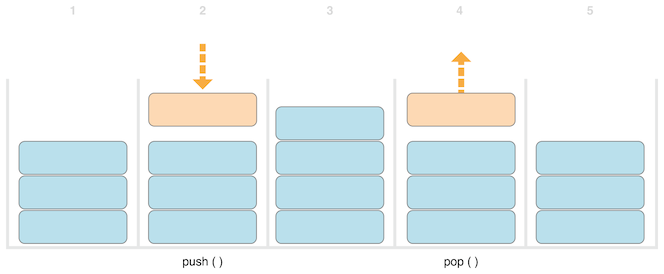Here’s how to write a nongeneric version of a stack, in this case for a stack of ‘Int’ values:
struct IntStack {
var items = [Int]()
mutating func push(_ item: Int) {
items.append(item)
}
mutating func pop() -> Int {
return items.removeLast()
}
}
This structure uses an ‘Array’ property called ‘items’ to store the values in the stack. ‘Stack’ provides two methods, ‘push’ and ‘pop’, to push and pop values on and off the stack. These methods are marked as ‘mutating’, because they need to modify (or mutate) the structure’s ‘items’ array.
The ‘IntStack’ type shown above can only be used with ‘Int’ values, however. It would be much more useful to define a generic ‘Stack’ class, that can manage a stack of any type of value.
Here’s a generic version of the same code:
struct Stack<Element> {
var items = [Element]()
mutating func push(_ item: Element) {
items.append(item)
}
mutating func pop() -> Element {
return items.removeLast()
}
}
Note how the generic version of ‘Stack’ is essentially the same as the nongeneric version, but with a type parameter called ‘Element’ instead of an actual type of ‘Int’. This type parameter is written within a pair of angle brackets (‘<Element>’) immediately after the structure’s name.
‘Element’ defines a placeholder name for a type to be provided later. This future type can be referred to as ‘Element’ anywhere within the structure’s definition. In this case, ‘Element’ is used as a placeholder in three places:
Because it’s a generic type, ‘Stack’ can be used to create a stack of any valid type in Swift, in a similar manner to ‘Array’ and ‘Dictionary’.
You create a new ‘Stack’ instance by writing the type to be stored in the stack within angle brackets. For example, to create a new stack of strings, you write ‘Stack<String>()’:
var stackOfStrings = Stack<String>()
stackOfStrings.push("uno")
stackOfStrings.push("dos")
stackOfStrings.push("tres")
stackOfStrings.push("cuatro")
// the stack now contains 4 strings
Here’s how ‘stackOfStrings’ looks after pushing these four values on to the stack:
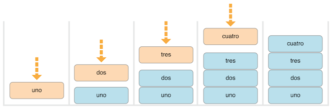Popping a value from the stack removes and returns the top value, ‘"cuatro"’:
let fromTheTop = stackOfStrings.pop() // fromTheTop is equal to "cuatro", and the stack now contains 3 strings
Here’s how the stack looks after popping its top value:
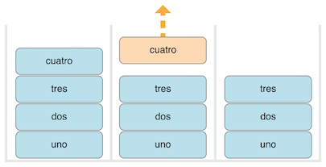Next: Type Constraints, Previous: Generic Types, Up: Generics 1 [Contents][Index]
When you extend a generic type, you don’t provide a type parameter list as part of the extension’s definition. Instead, the type parameter list from the original type definition is available within the body of the extension, and the original type parameter names are used to refer to the type parameters from the original definition.
The following example extends the generic ‘Stack’ type to add a read-only computed property called ‘topItem’, which returns the top item on the stack without popping it from the stack:
extension Stack {
var topItem: Element? {
return items.isEmpty ? nil : items[items.count - 1]
}
}
The ‘topItem’ property returns an optional value of type ‘Element’. If the stack is empty, ‘topItem’ returns ‘nil’; if the stack isn’t empty, ‘topItem’ returns the final item in the ‘items’ array.
Note that this extension doesn’t define a type parameter list. Instead, the ‘Stack’ type’s existing type parameter name, ‘Element’, is used within the extension to indicate the optional type of the ‘topItem’ computed property.
The ‘topItem’ computed property can now be used with any ‘Stack’ instance to access and query its top item without removing it.
if let topItem = stackOfStrings.topItem {
print("The top item on the stack is \(topItem).")
}
// Prints "The top item on the stack is tres."
Extensions of a generic type can also include requirements that instances of the extended type must satisfy in order to gain the new functionality, as discussed in Extensions with a Generic Where Clause below.
Next: Associated Types, Previous: Extending a Generic Type, Up: Generics 1 [Contents][Index]
The ‘swapTwoValues(_:_:)’ function and the ‘Stack’ type can work with any type. However, it’s sometimes useful to enforce certain type constraints on the types that can be used with generic functions and generic types. Type constraints specify that a type parameter must inherit from a specific class, or conform to a particular protocol or protocol composition.
For example, Swift’s ‘Dictionary’ type places a limitation on the types that can be used as keys for a dictionary. As described in Dictionaries, the type of a dictionary’s keys must be hashable. That is, it must provide a way to make itself uniquely representable. ‘Dictionary’ needs its keys to be hashable so that it can check whether it already contains a value for a particular key. Without this requirement, ‘Dictionary’ could not tell whether it should insert or replace a value for a particular key, nor would it be able to find a value for a given key that is already in the dictionary.
This requirement is enforced by a type constraint on the key type for ‘Dictionary’, which specifies that the key type must conform to the ‘Hashable’ protocol, a special protocol defined in the Swift standard library. All of Swift’s basic types (such as ‘String’, ‘Int’, ‘Double’, and ‘Bool’) are hashable by default.
You can define your own type constraints when creating custom generic types, and these constraints provide much of the power of generic programming. Abstract concepts like ‘Hashable’ characterize types in terms of their conceptual characteristics, rather than their concrete type.
| • Type Constraint Syntax | ||
| • Type Constraints in Action |
Next: Type Constraints in Action, Up: Type Constraints [Contents][Index]
You write type constraints by placing a single class or protocol constraint after a type parameter’s name, separated by a colon, as part of the type parameter list. The basic syntax for type constraints on a generic function is shown below (although the syntax is the same for generic types):
func someFunction<T: SomeClass, U: SomeProtocol>(someT: T, someU: U) {
// function body goes here
}
The hypothetical function above has two type parameters. The first type parameter, ‘T’, has a type constraint that requires ‘T’ to be a subclass of ‘SomeClass’. The second type parameter, ‘U’, has a type constraint that requires ‘U’ to conform to the protocol ‘SomeProtocol’.
Previous: Type Constraint Syntax, Up: Type Constraints [Contents][Index]
Here’s a nongeneric function called ‘findIndex(ofString:in:)’, which is given a ‘String’ value to find and an array of ‘String’ values within which to find it. The ‘findIndex(ofString:in:)’ function returns an optional ‘Int’ value, which will be the index of the first matching string in the array if it’s found, or ‘nil’ if the string can’t be found:
func findIndex(ofString valueToFind: String, in array: [String]) -> Int? {
for (index, value) in array.enumerated() {
if value == valueToFind {
return index
}
}
return nil
}
The ‘findIndex(ofString:in:)’ function can be used to find a string value in an array of strings:
let strings = ["cat", "dog", "llama", "parakeet", "terrapin"]
if let foundIndex = findIndex(ofString: "llama", in: strings) {
print("The index of llama is \(foundIndex)")
}
// Prints "The index of llama is 2"
The principle of finding the index of a value in an array isn’t useful only for strings, however. You can write the same functionality as a generic function by replacing any mention of strings with values of some type ‘T’ instead.
Here’s how you might expect a generic version of ‘findIndex(ofString:in:)’, called ‘findIndex(of:in:)’, to be written. Note that the return type of this function is still ‘Int?’, because the function returns an optional index number, not an optional value from the array. Be warned, though—this function doesn’t compile, for reasons explained after the example:
func findIndex<T>(of valueToFind: T, in array:[T]) -> Int? {
for (index, value) in array.enumerated() {
if value == valueToFind {
return index
}
}
return nil
}
This function doesn’t compile as written above. The problem lies with the equality check, “=if value ‘= valueToFind=”. Not every type in Swift can be compared with the equal to operator (===’). If you create your own class or structure to represent a complex data model, for example, then the meaning of “equal to” for that class or structure isn’t something that Swift can guess for you. Because of this, it isn’t possible to guarantee that this code will work for every possible type ‘T’, and an appropriate error is reported when you try to compile the code.
All is not lost, however. The Swift standard library defines a protocol called ‘Equatable’, which requires any conforming type to implement the equal to operator (‘==’) and the not equal to operator (‘!=’) to compare any two values of that type. All of Swift’s standard types automatically support the ‘Equatable’ protocol.
Any type that is ‘Equatable’ can be used safely with the ‘findIndex(of:in:)’ function, because it’s guaranteed to support the equal to operator. To express this fact, you write a type constraint of ‘Equatable’ as part of the type parameter’s definition when you define the function:
func findIndex<T: Equatable>(of valueToFind: T, in array:[T]) -> Int? {
for (index, value) in array.enumerated() {
if value == valueToFind {
return index
}
}
return nil
}
The single type parameter for ‘findIndex(of:in:)’ is written as ‘T: Equatable’, which means “any type ‘T’ that conforms to the ‘Equatable’ protocol.”
The ‘findIndex(of:in:)’ function now compiles successfully and can be used with any type that is ‘Equatable’, such as ‘Double’ or ‘String’:
let doubleIndex = findIndex(of: 9.3, in: [3.14159, 0.1, 0.25]) // doubleIndex is an optional Int with no value, because 9.3 isn't in the array let stringIndex = findIndex(of: "Andrea", in: ["Mike", "Malcolm", "Andrea"]) // stringIndex is an optional Int containing a value of 2
Next: Generic Where Clauses, Previous: Type Constraints, Up: Generics 1 [Contents][Index]
When defining a protocol, it’s sometimes useful to declare one or more associated types as part of the protocol’s definition. An ‘associated type’ gives a placeholder name to a type that is used as part of the protocol. The actual type to use for that associated type isn’t specified until the protocol is adopted. Associated types are specified with the ‘associatedtype’ keyword.
| • Associated Types in Action | ||
| • Extending an Existing Type to Specify an Associated Type | ||
| • Adding Constraints to an Associated Type | ||
| • Using a Protocol in Its Associated Type's Constraints |
Next: Extending an Existing Type to Specify an Associated Type, Up: Associated Types [Contents][Index]
Here’s an example of a protocol called ‘Container’, which declares an associated type called ‘Item’:
protocol Container {
associatedtype Item
mutating func append(_ item: Item)
var count: Int { get }
subscript(i: Int) -> Item { get }
}
The ‘Container’ protocol defines three required capabilities that any container must provide:
This protocol doesn’t specify how the items in the container should be stored or what type they’re allowed to be. The protocol only specifies the three bits of functionality that any type must provide in order to be considered a ‘Container’. A conforming type can provide additional functionality, as long as it satisfies these three requirements.
Any type that conforms to the ‘Container’ protocol must be able to specify the type of values it stores. Specifically, it must ensure that only items of the right type are added to the container, and it must be clear about the type of the items returned by its subscript.
To define these requirements, the ‘Container’ protocol needs a way to refer to the type of the elements that a container will hold, without knowing what that type is for a specific container. The ‘Container’ protocol needs to specify that any value passed to the ‘append(_:)’ method must have the same type as the container’s element type, and that the value returned by the container’s subscript will be of the same type as the container’s element type.
To achieve this, the ‘Container’ protocol declares an associated type called ‘Item’, written as ‘associatedtype Item’. The protocol doesn’t define what ‘Item’ is—that information is left for any conforming type to provide. Nonetheless, the ‘Item’ alias provides a way to refer to the type of the items in a ‘Container’, and to define a type for use with the ‘append(_:)’ method and subscript, to ensure that the expected behavior of any ‘Container’ is enforced.
Here’s a version of the nongeneric ‘IntStack’ type from Generic Types above, adapted to conform to the ‘Container’ protocol:
struct IntStack: Container {
// original IntStack implementation
var items = [Int]()
mutating func push(_ item: Int) {
items.append(item)
}
mutating func pop() -> Int {
return items.removeLast()
}
// conformance to the Container protocol
typealias Item = Int
mutating func append(_ item: Int) {
self.push(item)
}
var count: Int {
return items.count
}
subscript(i: Int) -> Int {
return items[i]
}
}
The ‘IntStack’ type implements all three of the ‘Container’ protocol’s requirements, and in each case wraps part of the ‘IntStack’ type’s existing functionality to satisfy these requirements.
Moreover, ‘IntStack’ specifies that for this implementation of ‘Container’, the appropriate ‘Item’ to use is a type of ‘Int’. The definition of ‘typealias Item = Int’ turns the abstract type of ‘Item’ into a concrete type of ‘Int’ for this implementation of the ‘Container’ protocol.
Thanks to Swift’s type inference, you don’t actually need to declare a concrete ‘Item’ of ‘Int’ as part of the definition of ‘IntStack’. Because ‘IntStack’ conforms to all of the requirements of the ‘Container’ protocol, Swift can infer the appropriate ‘Item’ to use, simply by looking at the type of the ‘append(_:)’ method’s ‘item’ parameter and the return type of the subscript. Indeed, if you delete the ‘typealias Item = Int’ line from the code above, everything still works, because it’s clear what type should be used for ‘Item’.
You can also make the generic ‘Stack’ type conform to the ‘Container’ protocol:
struct Stack<Element>: Container {
// original Stack<Element> implementation
var items = [Element]()
mutating func push(_ item: Element) {
items.append(item)
}
mutating func pop() -> Element {
return items.removeLast()
}
// conformance to the Container protocol
mutating func append(_ item: Element) {
self.push(item)
}
var count: Int {
return items.count
}
subscript(i: Int) -> Element {
return items[i]
}
}
This time, the type parameter ‘Element’ is used as the type of the ‘append(_:)’ method’s ‘item’ parameter and the return type of the subscript. Swift can therefore infer that ‘Element’ is the appropriate type to use as the ‘Item’ for this particular container.
Next: Adding Constraints to an Associated Type, Previous: Associated Types in Action, Up: Associated Types [Contents][Index]
You can extend an existing type to add conformance to a protocol, as described in Adding Protocol Conformance with an Extension. This includes a protocol with an associated type.
Swift’s ‘Array’ type already provides an ‘append(_:)’ method, a ‘count’ property, and a subscript with an ‘Int’ index to retrieve its elements. These three capabilities match the requirements of the ‘Container’ protocol. This means that you can extend ‘Array’ to conform to the ‘Container’ protocol simply by declaring that ‘Array’ adopts the protocol. You do this with an empty extension, as described in Declaring Protocol Adoption with an Extension:
extension Array: Container {}
Array’s existing ‘append(_:)’ method and subscript enable Swift to infer the appropriate type to use for ‘Item’, just as for the generic ‘Stack’ type above. After defining this extension, you can use any ‘Array’ as a ‘Container’.
Next: Using a Protocol in Its Associated Type's Constraints, Previous: Extending an Existing Type to Specify an Associated Type, Up: Associated Types [Contents][Index]
You can add type constraints to an associated type in a protocol to require that conforming types satisfy those constraints. For example, the following code defines a version of ‘Container’ that requires the items in the container to be equatable.
protocol Container {
associatedtype Item: Equatable
mutating func append(_ item: Item)
var count: Int { get }
subscript(i: Int) -> Item { get }
}
To conform to this version of ‘Container’, the container’s ‘Item’ type has to conform to the ‘Equatable’ protocol.
Previous: Adding Constraints to an Associated Type, Up: Associated Types [Contents][Index]
A protocol can appear as part of its own requirements. For example, here’s a protocol that refines the ‘Container’ protocol, adding the requirement of a ‘suffix(_:)’ method. The ‘suffix(_:)’ method returns a given number of elements from the end of the container, storing them in an instance of the ‘Suffix’ type.
protocol SuffixableContainer: Container {
associatedtype Suffix: SuffixableContainer where Suffix.Item == Item
func suffix(_ size: Int) -> Suffix
}
In this protocol, ‘Suffix’ is an associated type, like the ‘Item’ type in the ‘Container’ example above. ‘Suffix’ has two constraints: It must conform to the ‘SuffixableContainer’ protocol (the protocol currently being defined), and its ‘Item’ type must be the same as the container’s ‘Item’ type. The constraint on ‘Item’ is a generic ‘where’ clause, which is discussed in Associated Types with a Generic Where Clause below.
Here’s an extension of the ‘Stack’ type from Strong Reference Cycles for Closures above that adds conformance to the ‘SuffixableContainer’ protocol:
extension Stack: SuffixableContainer {
func suffix(_ size: Int) -> Stack {
var result = Stack()
for index in (count-size)..<count {
result.append(self[index])
}
return result
}
// Inferred that Suffix is Stack.
}
var stackOfInts = Stack<Int>()
stackOfInts.append(10)
stackOfInts.append(20)
stackOfInts.append(30)
let suffix = stackOfInts.suffix(2)
// suffix contains 20 and 30
In the example above, the ‘Suffix’ associated type for ‘Stack’ is also ‘Stack’, so the suffix operation on ‘Stack’ returns another ‘Stack’. Alternatively, a type that conforms to ‘SuffixableContainer’ can have a ‘Suffix’ type that’s different from itself—meaning the suffix operation can return a different type. For example, here’s an extension to the nongeneric ‘IntStack’ type that adds ‘SuffixableContainer’ conformance, using ‘Stack<Int>’ as its suffix type instead of ‘IntStack’:
extension IntStack: SuffixableContainer {
func suffix(_ size: Int) -> Stack<Int> {
var result = Stack<Int>()
for index in (count-size)..<count {
result.append(self[index])
}
return result
}
// Inferred that Suffix is Stack<Int>.
}
Next: Extensions with a Generic Where Clause, Previous: Associated Types, Up: Generics 1 [Contents][Index]
Type constraints, as described in Type Constraints, enable you to define requirements on the type parameters associated with a generic function, subscript, or type.
It can also be useful to define requirements for associated types. You do this by defining a generic where clause. A generic ‘where’ clause enables you to require that an associated type must conform to a certain protocol, or that certain type parameters and associated types must be the same. A generic ‘where’ clause starts with the ‘where’ keyword, followed by constraints for associated types or equality relationships between types and associated types. You write a generic ‘where’ clause right before the opening curly brace of a type or function’s body.
The example below defines a generic function called ‘allItemsMatch’, which checks to see if two ‘Container’ instances contain the same items in the same order. The function returns a Boolean value of ‘true’ if all items match and a value of ‘false’ if they don’t.
The two containers to be checked don’t have to be the same type of container (although they can be), but they do have to hold the same type of items. This requirement is expressed through a combination of type constraints and a generic ‘where’ clause:
func allItemsMatch<C1: Container, C2: Container>
(_ someContainer: C1, _ anotherContainer: C2) -> Bool
where C1.Item == C2.Item, C1.Item: Equatable {
// Check that both containers contain the same number of items.
if someContainer.count != anotherContainer.count {
return false
}
// Check each pair of items to see if they're equivalent.
for i in 0..<someContainer.count {
if someContainer[i] != anotherContainer[i] {
return false
}
}
// All items match, so return true.
return true
}
This function takes two arguments called ‘someContainer’ and ‘anotherContainer’. The ‘someContainer’ argument is of type ‘C1’, and the ‘anotherContainer’ argument is of type ‘C2’. Both ‘C1’ and ‘C2’ are type parameters for two container types to be determined when the function is called.
The following requirements are placed on the function’s two type parameters:
The first and second requirements are defined in the function’s type parameter list, and the third and fourth requirements are defined in the function’s generic ‘where’ clause.
These requirements mean:
The third and fourth requirements combine to mean that the items in ‘anotherContainer’ can also be checked with the ‘!=’ operator, because they’re exactly the same type as the items in ‘someContainer’.
These requirements enable the ‘allItemsMatch(_:_:)’ function to compare the two containers, even if they’re of a different container type.
The ‘allItemsMatch(_:_:)’ function starts by checking that both containers contain the same number of items. If they contain a different number of items, there’s no way that they can match, and the function returns ‘false’.
After making this check, the function iterates over all of the items in ‘someContainer’ with a ‘for’-‘in’ loop and the half-open range operator (‘..<’). For each item, the function checks whether the item from ‘someContainer’ isn’t equal to the corresponding item in ‘anotherContainer’. If the two items aren’t equal, then the two containers don’t match, and the function returns ‘false’.
If the loop finishes without finding a mismatch, the two containers match, and the function returns ‘true’.
Here’s how the ‘allItemsMatch(_:_:)’ function looks in action:
var stackOfStrings = Stack<String>()
stackOfStrings.push("uno")
stackOfStrings.push("dos")
stackOfStrings.push("tres")
var arrayOfStrings = ["uno", "dos", "tres"]
if allItemsMatch(stackOfStrings, arrayOfStrings) {
print("All items match.")
} else {
print("Not all items match.")
}
// Prints "All items match."
The example above creates a ‘Stack’ instance to store ‘String’ values, and pushes three strings onto the stack. The example also creates an ‘Array’ instance initialized with an array literal containing the same three strings as the stack. Even though the stack and the array are of a different type, they both conform to the ‘Container’ protocol, and both contain the same type of values. You can therefore call the ‘allItemsMatch(_:_:)’ function with these two containers as its arguments. In the example above, the ‘allItemsMatch(_:_:)’ function correctly reports that all of the items in the two containers match.
Next: Associated Types with a Generic Where Clause, Previous: Generic Where Clauses, Up: Generics 1 [Contents][Index]
You can also use a generic ‘where’ clause as part of an extension. The example below extends the generic ‘Stack’ structure from the previous examples to add an ‘isTop(_:)’ method.
extension Stack where Element: Equatable {
func isTop(_ item: Element) -> Bool {
guard let topItem = items.last else {
return false
}
return topItem == item
}
}
This new ‘isTop(_:)’ method first checks that the stack isn’t empty, and then compares the given item against the stack’s topmost item. If you tried to do this without a generic ‘where’ clause, you would have a problem: The implementation of ‘isTop(_:)’ uses the ‘==’ operator, but the definition of ‘Stack’ doesn’t require its items to be equatable, so using the ‘==’ operator results in a compile-time error. Using a generic ‘where’ clause lets you add a new requirement to the extension, so that the extension adds the ‘isTop(_:)’ method only when the items in the stack are equatable.
Here’s how the ‘isTop(_:)’ method looks in action:
if stackOfStrings.isTop("tres") {
print("Top element is tres.")
} else {
print("Top element is something else.")
}
// Prints "Top element is tres."
If you try to call the ‘isTop(_:)’ method on a stack whose elements aren’t equatable, you’ll get a compile-time error.
struct NotEquatable { }
var notEquatableStack = Stack<NotEquatable>()
let notEquatableValue = NotEquatable()
notEquatableStack.push(notEquatableValue)
notEquatableStack.isTop(notEquatableValue) // Error
You can use a generic ‘where’ clause with extensions to a protocol. The example below extends the ‘Container’ protocol from the previous examples to add a ‘startsWith(_:)’ method.
extension Container where Item: Equatable {
func startsWith(_ item: Item) -> Bool {
return count >= 1 && self[0] == item
}
}
The ‘startsWith(_:)’ method first makes sure that the container has at least one item, and then it checks whether the first item in the container matches the given item. This new ‘startsWith(_:)’ method can be used with any type that conforms to the ‘Container’ protocol, including the stacks and arrays used above, as long as the container’s items are equatable.
if [9, 9, 9].startsWith(42) {
print("Starts with 42.")
} else {
print("Starts with something else.")
}
// Prints "Starts with something else."
The generic ‘where’ clause in the example above requires ‘Item’ to conform to a protocol, but you can also write a generic ‘where’ clauses that require ‘Item’ to be a specific type. For example:
extension Container where Item == Double {
func average() -> Double {
var sum = 0.0
for index in 0..<count {
sum += self[index]
}
return sum / Double(count)
}
}
print([1260.0, 1200.0, 98.6, 37.0].average())
// Prints "648.9"
This example adds an ‘average()’ method to containers whose ‘Item’ type is ‘Double’. It iterates over the items in the container to add them up, and divides by the container’s count to compute the average. It explicitly converts the count from ‘Int’ to ‘Double’ to be able to do floating-point division.
You can include multiple requirements in a generic ‘where’ clause that is part of an extension, just like you can for a generic ‘where’ clause that you write elsewhere. Separate each requirement in the list with a comma.
Next: Generic Subscripts, Previous: Extensions with a Generic Where Clause, Up: Generics 1 [Contents][Index]
You can include a generic ‘where’ clause on an associated type. For example, suppose you want to make a version of ‘Container’ that includes an iterator, like what the ‘Sequence’ protocol uses in the standard library. Here’s how you write that:
protocol Container {
associatedtype Item
mutating func append(_ item: Item)
var count: Int { get }
subscript(i: Int) -> Item { get }
associatedtype Iterator: IteratorProtocol where Iterator.Element == Item
func makeIterator() -> Iterator
}
The generic ‘where’ clause on ‘Iterator’ requires that the iterator must traverse over elements of the same item type as the container’s items, regardless of the iterator’s type. The ‘makeIterator()’ function provides access to a container’s iterator.
For a protocol that inherits from another protocol, you add a constraint to an inherited associated type by including the generic ‘where’ clause in the protocol declaration. For example, the following code declares a ‘ComparableContainer’ protocol that requires ‘Item’ to conform to ‘Comparable’:
protocol ComparableContainer: Container where Item: Comparable { }
Previous: Associated Types with a Generic Where Clause, Up: Generics 1 [Contents][Index]
Subscripts can be generic, and they can include generic ‘where’ clauses. You write the placeholder type name inside angle brackets after ‘subscript’, and you write a generic ‘where’ clause right before the opening curly brace of the subscript’s body. For example:
extension Container {
subscript<Indices: Sequence>(indices: Indices) -> [Item]
where Indices.Iterator.Element == Int {
var result = [Item]()
for index in indices {
result.append(self[index])
}
return result
}
}
This extension to the ‘Container’ protocol adds a subscript that takes a sequence of indices and returns an array containing the items at each given index. This generic subscript is constrained as follows:
Taken together, these constraints mean that the value passed for the ‘indices’ parameter is a sequence of integers.
Next: Automatic Reference Counting, Previous: Generics 1, Up: Top [Contents][Index]
A function or method with an opaque return type hides its return value’s type information. Instead of providing a concrete type as the function’s return type, the return value is described in terms of the protocols it supports. Hiding type information is useful at boundaries between a module and code that calls into the module, because the underlying type of the return value can remain private. Unlike returning a value whose type is a protocol type, opaque types preserve type identity—the compiler has access to the type information, but clients of the module don’t.
| • The Problem That Opaque Types Solve | ||
| • Returning an Opaque Type | ||
| • Differences Between Opaque Types and Protocol Types |
Next: Returning an Opaque Type, Up: Opaque Types [Contents][Index]
For example, suppose you’re writing a module that draws ASCII art shapes. The basic characteristic of an ASCII art shape is a ‘draw()’ function that returns the string representation of that shape, which you can use as the requirement for the ‘Shape’ protocol:
protocol Shape {
func draw() -> String
}
struct Triangle: Shape {
var size: Int
func draw() -> String {
var result = [String]()
for length in 1...size {
result.append(String(repeating: "*", count: length))
}
return result.joined(separator: "\n")
}
}
let smallTriangle = Triangle(size: 3)
print(smallTriangle.draw())
// *
// **
// ***
You could use generics to implement operations like flipping a shape vertically, as shown in the code below. However, there’s an important limitation to this approach: The flipped result exposes the exact generic types that were used to create it.
struct FlippedShape<T: Shape>: Shape {
var shape: T
func draw() -> String {
let lines = shape.draw().split(separator: "\n")
return lines.reversed().joined(separator: "\n")
}
}
let flippedTriangle = FlippedShape(shape: smallTriangle)
print(flippedTriangle.draw())
// ***
// **
// *
This approach to defining a ‘JoinedShape<T: Shape, U: Shape>’ structure that joins two shapes together vertically, like the code below shows, results in types like ‘JoinedShape<FlippedShape<Triangle>, Triangle>’ from joining a flipped triangle with another triangle.
struct JoinedShape<T: Shape, U: Shape>: Shape {
var top: T
var bottom: U
func draw() -> String {
return top.draw() + "\n" + bottom.draw()
}
}
let joinedTriangles = JoinedShape(top: smallTriangle, bottom: flippedTriangle)
print(joinedTriangles.draw())
// *
// **
// ***
// ***
// **
// *
Exposing detailed information about the creation of a shape allows types that aren’t meant to be part of the ASCII art module’s public interface to leak out because of the need to state the full return type. The code inside the module could build up the same shape in a variety of ways, and other code outside the module that uses the shape shouldn’t have to account for the implementation details about the list of transformations. Wrapper types like ‘JoinedShape’ and ‘FlippedShape’ don’t matter to the module’s users, and they shouldn’t be visible. The module’s public interface consists of operations like joining and flipping a shape, and those operations return another ‘Shape’ value.
Next: Differences Between Opaque Types and Protocol Types, Previous: The Problem That Opaque Types Solve, Up: Opaque Types [Contents][Index]
You can think of an opaque type like being the reverse of a generic type. Generic types let the code that calls a function pick the type for that function’s parameters and return value in a way that’s abstracted away from the function implementation. For example, the function in the following code returns a type that depends on its caller:
func max<T>(_ x: T, _ y: T) -> T where T: Comparable { ... }
The code that calls ‘max(_:_:)’ chooses the values for ‘x’ and ‘y’, and the type of those values determines the concrete type of ‘T’. The calling code can use any type that conforms to the ‘Comparable’ protocol. The code inside the function is written in a general way so it can handle whatever type the caller provides. The implementation of ‘max(_:_:)’ uses only functionality that all ‘Comparable’ types share.
Those roles are reversed for a function with an opaque return type. An opaque type lets the function implementation pick the type for the value it returns in a way that’s abstracted away from the code that calls the function. For example, the function in the following example returns a trapezoid without exposing the underlying type of that shape.
struct Square: Shape {
var size: Int
func draw() -> String {
let line = String(repeating: "*", count: size)
let result = Array<String>(repeating: line, count: size)
return result.joined(separator: "\n")
}
}
func makeTrapezoid() -> some Shape {
let top = Triangle(size: 2)
let middle = Square(size: 2)
let bottom = FlippedShape(shape: top)
let trapezoid = JoinedShape(top: top, bottom: JoinedShape(top: middle, bottom: bottom))
return trapezoid
}
let trapezoid = makeTrapezoid()
print(trapezoid.draw())
// *
// **
// **
// **
// **
// *
The ‘makeTrapezoid()’ function in this example declares its return type as ‘some Shape’; as a result, the function returns a value of some given type that conforms to the ‘Shape’ protocol, without specifying any particular concrete type. Writing ‘makeTrapezoid()’ this way lets it express the fundamental aspect of its public interface—the value it returns is a shape—without making the specific types that the shape is made from a part of its public interface. This implementation uses two triangles and a square, but the function could be rewritten to draw a trapezoid in a variety of other ways without changing its return type.
This example highlights the way that an opaque return type is like the reverse of a generic type. The code inside ‘makeTrapezoid()’ can return any type it needs to, as long as that type conforms to the ‘Shape’ protocol, like the calling code does for a generic function. The code that calls the function needs to be written in a general way, like the implementation of a generic function, so that it can work with any ‘Shape’ value that’s returned by ‘makeTrapezoid()’.
You can also combine opaque return types with generics. The functions in the following code both return a value of some type that conforms to the ‘Shape’ protocol.
func flip<T: Shape>(_ shape: T) -> some Shape {
return FlippedShape(shape: shape)
}
func join<T: Shape, U: Shape>(_ top: T, _ bottom: U) -> some Shape {
JoinedShape(top: top, bottom: bottom)
}
let opaqueJoinedTriangles = join(smallTriangle, flip(smallTriangle))
print(opaqueJoinedTriangles.draw())
// *
// **
// ***
// ***
// **
// *
The value of ‘opaqueJoinedTriangles’ in this example is the same as ‘joinedTriangles’ in the generics example in the The Problem That Opaque Types Solve section earlier in this chapter. However, unlike the value in that example, ‘flip(_:)’ and ‘join(_:_:)’ wrap the underlying types that the generic shape operations return in an opaque return type, which prevents those types from being visible. Both functions are generic because the types they rely on are generic, and the type parameters to the function pass along the type information needed by ‘FlippedShape’ and ‘JoinedShape’.
If a function with an opaque return type returns from multiple places, all of the possible return values must have the same type. For a generic function, that return type can use the function’s generic type parameters, but it must still be a single type. For example, here’s an invalid version of the shape-flipping function that includes a special case for squares:
func invalidFlip<T: Shape>(_ shape: T) -> some Shape {
if shape is Square {
return shape // Error: return types don't match
}
return FlippedShape(shape: shape) // Error: return types don't match
}
If you call this function with a ‘Square’, it returns a ‘Square’; otherwise, it returns a ‘FlippedShape’. This violates the requirement to return values of only one type and makes ‘invalidFlip(_:)’ invalid code. One way to fix ‘invalidFlip(_:)’ is to move the special case for squares into the implementation of ‘FlippedShape’, which lets this function always return a ‘FlippedShape’ value:
struct FlippedShape<T: Shape>: Shape {
var shape: T
func draw() -> String {
if shape is Square {
return shape.draw()
}
let lines = shape.draw().split(separator: "\n")
return lines.reversed().joined(separator: "\n")
}
}
The requirement to always return a single type doesn’t prevent you from using generics in an opaque return type. Here’s an example of a function that incorporates its type parameter into the underlying type of the value it returns:
func `repeat`<T: Shape>(shape: T, count: Int) -> some Collection {
return Array<T>(repeating: shape, count: count)
}
In this case, the underlying type of the return value varies depending on ‘T’: Whatever shape is passed it, ‘repeat(shape:count:)’ creates and returns an array of that shape. Nevertheless, the return value always has the same underlying type of ‘[T]’, so it follows the requirement that functions with opaque return types must return values of only a single type.
Previous: Returning an Opaque Type, Up: Opaque Types [Contents][Index]
Returning an opaque type looks very similar to using a protocol type as the return type of a function, but these two kinds of return type differ in whether they preserve type identity. An opaque type refers to one specific type, although the caller of the function isn’t able to see which type; a protocol type can refer to any type that conforms to the protocol. Generally speaking, protocol types give you more flexibility about the underlying types of the values they store, and opaque types let you make stronger guarantees about those underlying types.
For example, here’s a version of ‘flip(_:)’ that returns a value of protocol type instead of using an opaque return type:
func protoFlip<T: Shape>(_ shape: T) -> Shape {
return FlippedShape(shape: shape)
}
This version of ‘protoFlip(_:)’ has the same body as ‘flip(_:)’, and it always returns a value of the same type. Unlike ‘flip(_:)’, the value that ‘protoFlip(_:)’ returns isn’t required to always have the same type—it just has to conform to the ‘Shape’ protocol. Put another way, ‘protoFlip(_:)’ makes a much looser API contract with its caller than ‘flip(_:)’ makes. It reserves the flexibility to return values of multiple types:
func protoFlip<T: Shape>(_ shape: T) -> Shape {
if shape is Square {
return shape
}
return FlippedShape(shape: shape)
}
The revised version of the code returns an instance of ‘Square’ or an instance of ‘FlippedShape’, depending on what shape is passed in. Two flipped shapes returned by this function might have completely different types. Other valid versions of this function could return values of different types when flipping multiple instances of the same shape. The less specific return type information from ‘protoFlip(_:)’ means that many operations that depend on type information aren’t available on the returned value. For example, it’s not possible to write an ‘==’ operator comparing results returned by this function.
let protoFlippedTriangle = protoFlip(smallTriangle) let sameThing = protoFlip(smallTriangle) protoFlippedTriangle == sameThing // Error
The error on the last line of the example occurs for several reasons. The immediate issue is that the ‘Shape’ doesn’t include an ‘==’ operator as part of its protocol requirements. If you try adding one, the next issue you’ll encounter is that the ‘==’ operator needs to know the types of its left-hand and right-hand arguments. This sort of operator usually takes arguments of type ‘Self’, matching whatever concrete type adopts the protocol, but adding a ‘Self’ requirement to the protocol doesn’t allow for the type erasure that happens when you use the protocol as a type.
Using a protocol type as the return type for a function gives you the flexibility to return any type that conforms to the protocol. However, the cost of that flexibility is that some operations aren’t possible on the returned values. The example shows how the ‘==’ operator isn’t available—it depends on specific type information that isn’t preserved by using a protocol type.
Another problem with this approach is that the shape transformations don’t nest. The result of flipping a triangle is a value of type ‘Shape’, and the ‘protoFlip(_:)’ function takes an argument of some type that conforms to the ‘Shape’ protocol. However, a value of a protocol type doesn’t conform to that protocol; the value returned by ‘protoFlip(_:)’ doesn’t conform to ‘Shape’. This means code like ‘protoFlip(protoFlip(smallTriange))’ that applies multiple transformations is invalid because the flipped shape isn’t a valid argument to ‘protoFlip(_:)’.
In contrast, opaque types preserve the identity of the underlying type. Swift can infer associated types, which lets you use an opaque return value in places where a protocol type can’t be used as a return value. For example, here’s a version of the ‘Container’ protocol from Generics:
protocol Container {
associatedtype Item
var count: Int { get }
subscript(i: Int) -> Item { get }
}
extension Array: Container { }
You can’t use ‘Container’ as the return type of a function because that protocol has an associated type. You also can’t use it as constraint a generic return type because there isn’t enough information outside the function body to infer what the generic type needs to be.
// Error: Protocol with associated types can't be used as a return type.
func makeProtocolContainer<T>(item: T) -> Container {
return [item]
}
// Error: Not enough information to infer C.
func makeProtocolContainer<T, C: Container>(item: T) -> C {
return [item]
}
Using the opaque type ‘some Container’ as a return type expresses the desired API contract—the function returns a container, but declines to specify the container’s type:
func makeOpaqueContainer<T>(item: T) -> some Container {
return [item]
}
let opaqueContainer = makeOpaqueContainer(item: 12)
let twelve = opaqueContainer[0]
print(type(of: twelve))
// Prints "Int"
The type of ‘twelve’ is inferred to be ‘Int’, which illustrates the fact that type inference works with opaque types. In the implementation of ‘makeOpaqueContainer(item:)’, the underlying type of the opaque container is ‘[T]’. In this case, ‘T’ is ‘Int’, so the return value is an array of integers and the ‘Item’ associated type is inferred to be ‘Int’. The subscript on ‘Container’ returns ‘Item’, which means that the type of ‘twelve’ is also inferred to be ‘Int’.
Next: Memory Safety, Previous: Opaque Types, Up: Top [Contents][Index]
Swift uses Automatic Reference Counting (ARC) to track and manage your app’s memory usage. In most cases, this means that memory management “just works” in Swift, and you do not need to think about memory management yourself. ARC automatically frees up the memory used by class instances when those instances are no longer needed.
However, in a few cases ARC requires more information about the relationships between parts of your code in order to manage memory for you. This chapter describes those situations and shows how you enable ARC to manage all of your app’s memory. Using ARC in Swift is very similar to the approach described in Transitioning to ARC Release Notes [https://developer.apple.com/library/content/releasenotes/ObjectiveC/RN-TransitioningToARC/Introduction/Introduction.html] for using ARC with Objective-C.
Reference counting applies only to instances of classes. Structures and enumerations are value types, not reference types, and are not stored and passed by reference.
Next: ARC in Action, Up: Automatic Reference Counting [Contents][Index]
Every time you create a new instance of a class, ARC allocates a chunk of memory to store information about that instance. This memory holds information about the type of the instance, together with the values of any stored properties associated with that instance.
Additionally, when an instance is no longer needed, ARC frees up the memory used by that instance so that the memory can be used for other purposes instead. This ensures that class instances do not take up space in memory when they are no longer needed.
However, if ARC were to deallocate an instance that was still in use, it would no longer be possible to access that instance’s properties, or call that instance’s methods. Indeed, if you tried to access the instance, your app would most likely crash.
To make sure that instances don’t disappear while they are still needed, ARC tracks how many properties, constants, and variables are currently referring to each class instance. ARC will not deallocate an instance as long as at least one active reference to that instance still exists.
To make this possible, whenever you assign a class instance to a property, constant, or variable, that property, constant, or variable makes a strong reference to the instance. The reference is called a “strong” reference because it keeps a firm hold on that instance, and does not allow it to be deallocated for as long as that strong reference remains.
Next: Strong Reference Cycles Between Class Instances, Previous: How ARC Works, Up: Automatic Reference Counting [Contents][Index]
Here’s an example of how Automatic Reference Counting works. This example starts with a simple class called ‘Person’, which defines a stored constant property called ‘name’:
class Person {
let name: String
init(name: String) {
self.name = name
print("\(name) is being initialized")
}
deinit {
print("\(name) is being deinitialized")
}
}
The ‘Person’ class has an initializer that sets the instance’s ‘name’ property and prints a message to indicate that initialization is underway. The ‘Person’ class also has a deinitializer that prints a message when an instance of the class is deallocated.
The next code snippet defines three variables of type ‘Person?’, which are used to set up multiple references to a new ‘Person’ instance in subsequent code snippets. Because these variables are of an optional type (‘Person?’, not ‘Person’), they are automatically initialized with a value of ‘nil’, and do not currently reference a ‘Person’ instance.
var reference1: Person? var reference2: Person? var reference3: Person?
You can now create a new ‘Person’ instance and assign it to one of these three variables:
reference1 = Person(name: "John Appleseed") // Prints "John Appleseed is being initialized"
Note that the message ‘"John Appleseed is being initialized"’ is printed at the point that you call the ‘Person’ class’s initializer. This confirms that initialization has taken place.
Because the new ‘Person’ instance has been assigned to the ‘reference1’ variable, there is now a strong reference from ‘reference1’ to the new ‘Person’ instance. Because there is at least one strong reference, ARC makes sure that this ‘Person’ is kept in memory and is not deallocated.
If you assign the same ‘Person’ instance to two more variables, two more strong references to that instance are established:
reference2 = reference1 reference3 = reference1
There are now three strong references to this single ‘Person’ instance.
If you break two of these strong references (including the original reference) by assigning ‘nil’ to two of the variables, a single strong reference remains, and the ‘Person’ instance is not deallocated:
reference1 = nil reference2 = nil
ARC does not deallocate the ‘Person’ instance until the third and final strong reference is broken, at which point it’s clear that you are no longer using the ‘Person’ instance:
reference3 = nil // Prints "John Appleseed is being deinitialized"
Next: Resolving Strong Reference Cycles Between Class Instances, Previous: ARC in Action, Up: Automatic Reference Counting [Contents][Index]
In the examples above, ARC is able to track the number of references to the new ‘Person’ instance you create and to deallocate that ‘Person’ instance when it’s no longer needed.
However, it’s possible to write code in which an instance of a class never gets to a point where it has zero strong references. This can happen if two class instances hold a strong reference to each other, such that each instance keeps the other alive. This is known as a strong reference cycle.
You resolve strong reference cycles by defining some of the relationships between classes as weak or unowned references instead of as strong references. This process is described in Resolving Strong Reference Cycles Between Class Instances. However, before you learn how to resolve a strong reference cycle, it’s useful to understand how such a cycle is caused.
Here’s an example of how a strong reference cycle can be created by accident. This example defines two classes called ‘Person’ and ‘Apartment’, which model a block of apartments and its residents:
class Person {
let name: String
init(name: String) { self.name = name }
var apartment: Apartment?
deinit { print("\(name) is being deinitialized") }
}
class Apartment {
let unit: String
init(unit: String) { self.unit = unit }
var tenant: Person?
deinit { print("Apartment \(unit) is being deinitialized") }
}
Every ‘Person’ instance has a ‘name’ property of type ‘String’ and an optional ‘apartment’ property that is initially ‘nil’. The ‘apartment’ property is optional, because a person may not always have an apartment.
Similarly, every ‘Apartment’ instance has a ‘unit’ property of type ‘String’ and has an optional ‘tenant’ property that is initially ‘nil’. The tenant property is optional because an apartment may not always have a tenant.
Both of these classes also define a deinitializer, which prints the fact that an instance of that class is being deinitialized. This enables you to see whether instances of ‘Person’ and ‘Apartment’ are being deallocated as expected.
This next code snippet defines two variables of optional type called ‘john’ and ‘unit4A’, which will be set to a specific ‘Apartment’ and ‘Person’ instance below. Both of these variables have an initial value of ‘nil’, by virtue of being optional:
var john: Person? var unit4A: Apartment?
You can now create a specific ‘Person’ instance and ‘Apartment’ instance and assign these new instances to the ‘john’ and ‘unit4A’ variables:
john = Person(name: "John Appleseed") unit4A = Apartment(unit: "4A")
Here’s how the strong references look after creating and assigning these two instances. The ‘john’ variable now has a strong reference to the new ‘Person’ instance, and the ‘unit4A’ variable has a strong reference to the new ‘Apartment’ instance:
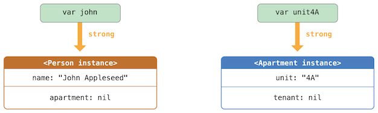You can now link the two instances together so that the person has an apartment, and the apartment has a tenant. Note that an exclamation mark (‘!’) is used to unwrap and access the instances stored inside the ‘john’ and ‘unit4A’ optional variables, so that the properties of those instances can be set:
john!.apartment = unit4A unit4A!.tenant = john
Here’s how the strong references look after you link the two instances together:
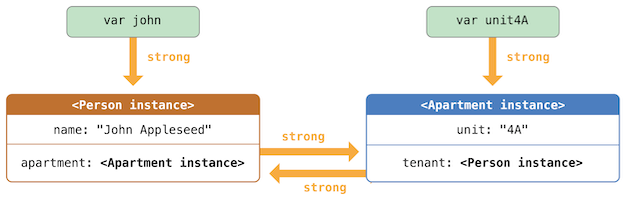Unfortunately, linking these two instances creates a strong reference cycle between them. The ‘Person’ instance now has a strong reference to the ‘Apartment’ instance, and the ‘Apartment’ instance has a strong reference to the ‘Person’ instance. Therefore, when you break the strong references held by the ‘john’ and ‘unit4A’ variables, the reference counts do not drop to zero, and the instances are not deallocated by ARC:
john = nil unit4A = nil
Note that neither deinitializer was called when you set these two variables to ‘nil’. The strong reference cycle prevents the ‘Person’ and ‘Apartment’ instances from ever being deallocated, causing a memory leak in your app.
Here’s how the strong references look after you set the ‘john’ and ‘unit4A’ variables to ‘nil’:
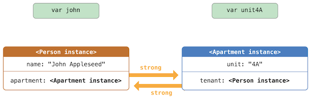The strong references between the ‘Person’ instance and the ‘Apartment’ instance remain and cannot be broken.
Next: Strong Reference Cycles for Closures, Previous: Strong Reference Cycles Between Class Instances, Up: Automatic Reference Counting [Contents][Index]
Swift provides two ways to resolve strong reference cycles when you work with properties of class type: weak references and unowned references.
Weak and unowned references enable one instance in a reference cycle to refer to the other instance without keeping a strong hold on it. The instances can then refer to each other without creating a strong reference cycle.
Use a weak reference when the other instance has a shorter lifetime—that is, when the other instance can be deallocated first. In the ‘Apartment’ example above, it’s appropriate for an apartment to be able to have no tenant at some point in its lifetime, and so a weak reference is an appropriate way to break the reference cycle in this case. In contrast, use an unowned reference when the other instance has the same lifetime or a longer lifetime.
| • Weak References | ||
| • Unowned References | ||
| • Unowned References and Implicitly Unwrapped Optional Properties |
Next: Unowned References, Up: Resolving Strong Reference Cycles Between Class Instances [Contents][Index]
A weak reference is a reference that does not keep a strong hold on the instance it refers to, and so does not stop ARC from disposing of the referenced instance. This behavior prevents the reference from becoming part of a strong reference cycle. You indicate a weak reference by placing the ‘weak’ keyword before a property or variable declaration.
Because a weak reference does not keep a strong hold on the instance it refers to, it’s possible for that instance to be deallocated while the weak reference is still referring to it. Therefore, ARC automatically sets a weak reference to ‘nil’ when the instance that it refers to is deallocated. And, because weak references need to allow their value to be changed to ‘nil’ at runtime, they are always declared as variables, rather than constants, of an optional type.
You can check for the existence of a value in the weak reference, just like any other optional value, and you will never end up with a reference to an invalid instance that no longer exists.
Note
Property observers aren’t called when ARC sets a weak reference to ‘nil’.
The example below is identical to the ‘Person’ and ‘Apartment’ example from above, with one important difference. This time around, the ‘Apartment’ type’s ‘tenant’ property is declared as a weak reference:
class Person {
let name: String
init(name: String) { self.name = name }
var apartment: Apartment?
deinit { print("\(name) is being deinitialized") }
}
class Apartment {
let unit: String
init(unit: String) { self.unit = unit }
weak var tenant: Person?
deinit { print("Apartment \(unit) is being deinitialized") }
}
The strong references from the two variables (‘john’ and ‘unit4A’) and the links between the two instances are created as before:
var john: Person? var unit4A: Apartment? john = Person(name: "John Appleseed") unit4A = Apartment(unit: "4A") john!.apartment = unit4A unit4A!.tenant = john
Here’s how the references look now that you’ve linked the two instances together:
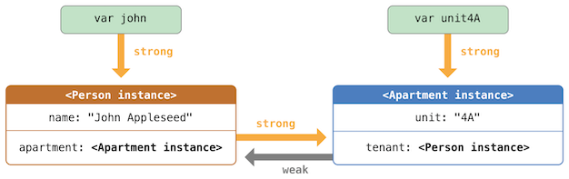The ‘Person’ instance still has a strong reference to the ‘Apartment’ instance, but the ‘Apartment’ instance now has a weak reference to the ‘Person’ instance. This means that when you break the strong reference held by the ‘john’ variable by setting it to ‘nil’, there are no more strong references to the ‘Person’ instance:
john = nil // Prints "John Appleseed is being deinitialized"
Because there are no more strong references to the ‘Person’ instance, it’s deallocated and the ‘tenant’ property is set to ‘nil’:
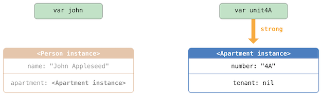The only remaining strong reference to the ‘Apartment’ instance is from the ‘unit4A’ variable. If you break that strong reference, there are no more strong references to the ‘Apartment’ instance:
unit4A = nil // Prints "Apartment 4A is being deinitialized"
Because there are no more strong references to the ‘Apartment’ instance, it too is deallocated:
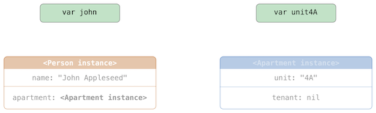Note
In systems that use garbage collection, weak pointers are sometimes used to implement a simple caching mechanism because objects with no strong references are deallocated only when memory pressure triggers garbage collection. However, with ARC, values are deallocated as soon as their last strong reference is removed, making weak references unsuitable for such a purpose.
Next: Unowned References and Implicitly Unwrapped Optional Properties, Previous: Weak References, Up: Resolving Strong Reference Cycles Between Class Instances [Contents][Index]
Like a weak reference, an unowned reference does not keep a strong hold on the instance it refers to. Unlike a weak reference, however, an unowned reference is used when the other instance has the same lifetime or a longer lifetime. You indicate an unowned reference by placing the ‘unowned’ keyword before a property or variable declaration.
An unowned reference is expected to always have a value. As a result, ARC never sets an unowned reference’s value to ‘nil’, which means that unowned references are defined using non-optional types.
Important
Use an unowned reference only when you are sure that the reference always refers to an instance that has not been deallocated.
If you try to access the value of an unowned reference after that instance has been deallocated, you’ll get a runtime error.
The following example defines two classes, ‘Customer’ and ‘CreditCard’, which model a bank customer and a possible credit card for that customer. These two classes each store an instance of the other class as a property. This relationship has the potential to create a strong reference cycle.
The relationship between ‘Customer’ and ‘CreditCard’ is slightly different from the relationship between ‘Apartment’ and ‘Person’ seen in the weak reference example above. In this data model, a customer may or may not have a credit card, but a credit card will always be associated with a customer. A ‘CreditCard’ instance never outlives the ‘Customer’ that it refers to. To represent this, the ‘Customer’ class has an optional ‘card’ property, but the ‘CreditCard’ class has an unowned (and non-optional) ‘customer’ property.
Furthermore, a new ‘CreditCard’ instance can only be created by passing a ‘number’ value and a ‘customer’ instance to a custom ‘CreditCard’ initializer. This ensures that a ‘CreditCard’ instance always has a ‘customer’ instance associated with it when the ‘CreditCard’ instance is created.
Because a credit card will always have a customer, you define its ‘customer’ property as an unowned reference, to avoid a strong reference cycle:
class Customer {
let name: String
var card: CreditCard?
init(name: String) {
self.name = name
}
deinit { print("\(name) is being deinitialized") }
}
class CreditCard {
let number: UInt64
unowned let customer: Customer
init(number: UInt64, customer: Customer) {
self.number = number
self.customer = customer
}
deinit { print("Card #\(number) is being deinitialized") }
}
Note
The ‘number’ property of the ‘CreditCard’ class is defined with a type of ‘UInt64’ rather than ‘Int’, to ensure that the ‘number’ property’s capacity is large enough to store a 16-digit card number on both 32-bit and 64-bit systems.
This next code snippet defines an optional ‘Customer’ variable called ‘john’, which will be used to store a reference to a specific customer. This variable has an initial value of nil, by virtue of being optional:
You can now create a ‘Customer’ instance, and use it to initialize and assign a new ‘CreditCard’ instance as that customer’s ‘card’ property:
Here’s how the references look, now that you’ve linked the two instances:
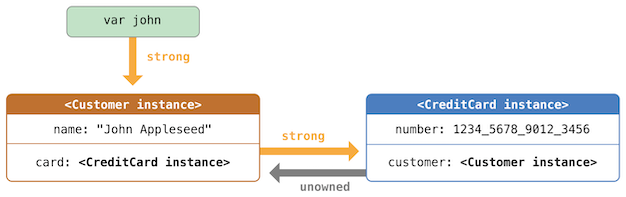The ‘Customer’ instance now has a strong reference to the ‘CreditCard’ instance, and the ‘CreditCard’ instance has an unowned reference to the ‘Customer’ instance.
Because of the unowned ‘customer’ reference, when you break the strong reference held by the ‘john’ variable, there are no more strong references to the ‘Customer’ instance:
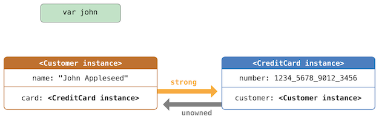Because there are no more strong references to the ‘Customer’ instance, it’s deallocated. After this happens, there are no more strong references to the ‘CreditCard’ instance, and it too is deallocated:
john = nil // Prints "John Appleseed is being deinitialized" // Prints "Card #1234567890123456 is being deinitialized"
The final code snippet above shows that the deinitializers for the ‘Customer’ instance and ‘CreditCard’ instance both print their “deinitialized” messages after the ‘john’ variable is set to ‘nil’.
Note
The examples above show how to use safe unowned references. Swift also provides unsafe unowned references for cases where you need to disable runtime safety checks—for example, for performance reasons. As with all unsafe operations, you take on the responsibility for checking that code for safety.
You indicate an unsafe unowned reference by writing ‘unowned(unsafe)’. If you try to access an unsafe unowned reference after the instance that it refers to is deallocated, your program will try to access the memory location where the instance used to be, which is an unsafe operation.
Previous: Unowned References, Up: Resolving Strong Reference Cycles Between Class Instances [Contents][Index]
The examples for weak and unowned references above cover two of the more common scenarios in which it’s necessary to break a strong reference cycle.
The ‘Person’ and ‘Apartment’ example shows a situation where two properties, both of which are allowed to be ‘nil’, have the potential to cause a strong reference cycle. This scenario is best resolved with a weak reference.
The ‘Customer’ and ‘CreditCard’ example shows a situation where one property that is allowed to be ‘nil’ and another property that cannot be ‘nil’ have the potential to cause a strong reference cycle. This scenario is best resolved with an unowned reference.
However, there is a third scenario, in which both properties should always have a value, and neither property should ever be ‘nil’ once initialization is complete. In this scenario, it’s useful to combine an unowned property on one class with an implicitly unwrapped optional property on the other class.
This enables both properties to be accessed directly (without optional unwrapping) once initialization is complete, while still avoiding a reference cycle. This section shows you how to set up such a relationship.
The example below defines two classes, ‘Country’ and ‘City’, each of which stores an instance of the other class as a property. In this data model, every country must always have a capital city, and every city must always belong to a country. To represent this, the ‘Country’ class has a ‘capitalCity’ property, and the ‘City’ class has a ‘country’ property:
class Country {
let name: String
var capitalCity: City!
init(name: String, capitalName: String) {
self.name = name
self.capitalCity = City(name: capitalName, country: self)
}
}
class City {
let name: String
unowned let country: Country
init(name: String, country: Country) {
self.name = name
self.country = country
}
}
To set up the interdependency between the two classes, the initializer for ‘City’ takes a ‘Country’ instance, and stores this instance in its ‘country’ property.
The initializer for ‘City’ is called from within the initializer for ‘Country’. However, the initializer for ‘Country’ cannot pass ‘self’ to the ‘City’ initializer until a new ‘Country’ instance is fully initialized, as described in Two-Phase Initialization.
To cope with this requirement, you declare the ‘capitalCity’ property of ‘Country’ as an implicitly unwrapped optional property, indicated by the exclamation mark at the end of its type annotation (‘City!’). This means that the ‘capitalCity’ property has a default value of ‘nil’, like any other optional, but can be accessed without the need to unwrap its value as described in Implicitly Unwrapped Optionals.
Because ‘capitalCity’ has a default ‘nil’ value, a new ‘Country’ instance is considered fully initialized as soon as the ‘Country’ instance sets its ‘name’ property within its initializer. This means that the ‘Country’ initializer can start to reference and pass around the implicit ‘self’ property as soon as the ‘name’ property is set. The ‘Country’ initializer can therefore pass ‘self’ as one of the parameters for the ‘City’ initializer when the ‘Country’ initializer is setting its own ‘capitalCity’ property.
All of this means that you can create the ‘Country’ and ‘City’ instances in a single statement, without creating a strong reference cycle, and the ‘capitalCity’ property can be accessed directly, without needing to use an exclamation mark to unwrap its optional value:
var country = Country(name: "Canada", capitalName: "Ottawa")
print("\(country.name)'s capital city is called \(country.capitalCity.name)")
// Prints "Canada's capital city is called Ottawa"
In the example above, the use of an implicitly unwrapped optional means that all of the two-phase class initializer requirements are satisfied. The ‘capitalCity’ property can be used and accessed like a non-optional value once initialization is complete, while still avoiding a strong reference cycle.
Next: Resolving Strong Reference Cycles for Closures, Previous: Resolving Strong Reference Cycles Between Class Instances, Up: Automatic Reference Counting [Contents][Index]
You saw above how a strong reference cycle can be created when two class instance properties hold a strong reference to each other. You also saw how to use weak and unowned references to break these strong reference cycles.
A strong reference cycle can also occur if you assign a closure to a property of a class instance, and the body of that closure captures the instance. This capture might occur because the closure’s body accesses a property of the instance, such as ‘self.someProperty’, or because the closure calls a method on the instance, such as ‘self.someMethod()’. In either case, these accesses cause the closure to “capture” ‘self’, creating a strong reference cycle.
This strong reference cycle occurs because closures, like classes, are reference types. When you assign a closure to a property, you are assigning a reference to that closure. In essence, it’s the same problem as above—two strong references are keeping each other alive. However, rather than two class instances, this time it’s a class instance and a closure that are keeping each other alive.
Swift provides an elegant solution to this problem, known as a closure capture list. However, before you learn how to break a strong reference cycle with a closure capture list, it’s useful to understand how such a cycle can be caused.
The example below shows how you can create a strong reference cycle when using a closure that references ‘self’. This example defines a class called ‘HTMLElement’, which provides a simple model for an individual element within an HTML document:
class HTMLElement {
let name: String
let text: String?
lazy var asHTML: () -> String = {
if let text = self.text {
return "<\(self.name)>\(text)</\(self.name)>"
} else {
return "<\(self.name) />"
}
}
init(name: String, text: String? = nil) {
self.name = name
self.text = text
}
deinit {
print("\(name) is being deinitialized")
}
}
The ‘HTMLElement’ class defines a ‘name’ property, which indicates the name of the element, such as ‘"h1"’ for a heading element, ‘"p"’ for a paragraph element, or ‘"br"’ for a line break element. ‘HTMLElement’ also defines an optional ‘text’ property, which you can set to a string that represents the text to be rendered within that HTML element.
In addition to these two simple properties, the ‘HTMLElement’ class defines a lazy property called ‘asHTML’. This property references a closure that combines ‘name’ and ‘text’ into an HTML string fragment. The ‘asHTML’ property is of type ‘() -> String’, or “a function that takes no parameters, and returns a ‘String’ value”.
By default, the ‘asHTML’ property is assigned a closure that returns a string representation of an HTML tag. This tag contains the optional ‘text’ value if it exists, or no text content if ‘text’ does not exist. For a paragraph element, the closure would return ‘"<p>some text</p>"’ or ‘"<p />"’, depending on whether the ‘text’ property equals ‘"some text"’ or ‘nil’.
The ‘asHTML’ property is named and used somewhat like an instance method. However, because ‘asHTML’ is a closure property rather than an instance method, you can replace the default value of the ‘asHTML’ property with a custom closure, if you want to change the HTML rendering for a particular HTML element.
For example, the ‘asHTML’ property could be set to a closure that defaults to some text if the ‘text’ property is ‘nil’, in order to prevent the representation from returning an empty HTML tag:
let heading = HTMLElement(name: "h1")
let defaultText = "some default text"
heading.asHTML = {
return "<\(heading.name)>\(heading.text ?? defaultText)</\(heading.name)>"
}
print(heading.asHTML())
// Prints "<h1>some default text</h1>"
Note
The ‘asHTML’ property is declared as a lazy property, because it’s only needed if and when the element actually needs to be rendered as a string value for some HTML output target. The fact that ‘asHTML’ is a lazy property means that you can refer to ‘self’ within the default closure, because the lazy property will not be accessed until after initialization has been completed and ‘self’ is known to exist.
The ‘HTMLElement’ class provides a single initializer, which takes a ‘name’ argument and (if desired) a ‘text’ argument to initialize a new element. The class also defines a deinitializer, which prints a message to show when an ‘HTMLElement’ instance is deallocated.
Here’s how you use the ‘HTMLElement’ class to create and print a new instance:
var paragraph: HTMLElement? = HTMLElement(name: "p", text: "hello, world") print(paragraph!.asHTML()) // Prints "<p>hello, world</p>"
Note
The ‘paragraph’ variable above is defined as an optional ‘HTMLElement’, so that it can be set to ‘nil’ below to demonstrate the presence of a strong reference cycle.
Unfortunately, the ‘HTMLElement’ class, as written above, creates a strong reference cycle between an ‘HTMLElement’ instance and the closure used for its default ‘asHTML’ value. Here’s how the cycle looks:
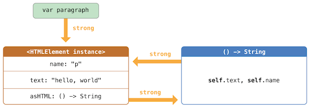The instance’s ‘asHTML’ property holds a strong reference to its closure. However, because the closure refers to ‘self’ within its body (as a way to reference ‘self.name’ and ‘self.text’), the closure captures self, which means that it holds a strong reference back to the ‘HTMLElement’ instance. A strong reference cycle is created between the two. (For more information about capturing values in a closure, see Capturing Values.)
Note
Even though the closure refers to ‘self’ multiple times, it only captures one strong reference to the ‘HTMLElement’ instance.
If you set the ‘paragraph’ variable to ‘nil’ and break its strong reference to the ‘HTMLElement’ instance, neither the ‘HTMLElement’ instance nor its closure are deallocated, because of the strong reference cycle:
paragraph = nil
Note that the message in the ‘HTMLElement’ deinitializer is not printed, which shows that the ‘HTMLElement’ instance is not deallocated.
Previous: Strong Reference Cycles for Closures, Up: Automatic Reference Counting [Contents][Index]
You resolve a strong reference cycle between a closure and a class instance by defining a capture list as part of the closure’s definition. A capture list defines the rules to use when capturing one or more reference types within the closure’s body. As with strong reference cycles between two class instances, you declare each captured reference to be a weak or unowned reference rather than a strong reference. The appropriate choice of weak or unowned depends on the relationships between the different parts of your code.
Note
Swift requires you to write ‘self.someProperty’ or ‘self.someMethod()’ (rather than just ‘someProperty’ or ‘someMethod()’) whenever you refer to a member of ‘self’ within a closure. This helps you remember that it’s possible to capture ‘self’ by accident.
| • Defining a Capture List | ||
| • Weak and Unowned References |
Next: Weak and Unowned References, Up: Resolving Strong Reference Cycles for Closures [Contents][Index]
Each item in a capture list is a pairing of the ‘weak’ or ‘unowned’ keyword with a reference to a class instance (such as ‘self’) or a variable initialized with some value (such as ‘delegate = self.delegate!’). These pairings are written within a pair of square braces, separated by commas.
Place the capture list before a closure’s parameter list and return type if they are provided:
lazy var someClosure: (Int, String) -> String = {
[unowned self, weak delegate = self.delegate!] (index: Int,
stringToProcess: String) -> String in
// closure body goes here
}
If a closure does not specify a parameter list or return type because they can be inferred from context, place the capture list at the very start of the closure, followed by the ‘in’ keyword:
lazy var someClosure: () -> String = {
[unowned self, weak delegate = self.delegate!] in
// closure body goes here
}
Previous: Defining a Capture List, Up: Resolving Strong Reference Cycles for Closures [Contents][Index]
Define a capture in a closure as an unowned reference when the closure and the instance it captures will always refer to each other, and will always be deallocated at the same time.
Conversely, define a capture as a weak reference when the captured reference may become ‘nil’ at some point in the future. Weak references are always of an optional type, and automatically become ‘nil’ when the instance they reference is deallocated. This enables you to check for their existence within the closure’s body.
Note
If the captured reference will never become ‘nil’, it should always be captured as an unowned reference, rather than a weak reference.
An unowned reference is the appropriate capture method to use to resolve the strong reference cycle in the ‘HTMLElement’ example from Strong Reference Cycles for Closures above. Here’s how you write the ‘HTMLElement’ class to avoid the cycle:
class HTMLElement {
let name: String
let text: String?
lazy var asHTML: () -> String = {
[unowned self] in
if let text = self.text {
return "<\(self.name)>\(text)</\(self.name)>"
} else {
return "<\(self.name) />"
}
}
init(name: String, text: String? = nil) {
self.name = name
self.text = text
}
deinit {
print("\(name) is being deinitialized")
}
}
This implementation of ‘HTMLElement’ is identical to the previous implementation, apart from the addition of a capture list within the ‘asHTML’ closure. In this case, the capture list is ‘[unowned self]’, which means “capture self as an unowned reference rather than a strong reference”.
You can create and print an ‘HTMLElement’ instance as before:
var paragraph: HTMLElement? = HTMLElement(name: "p", text: "hello, world") print(paragraph!.asHTML()) // Prints "<p>hello, world</p>"
Here’s how the references look with the capture list in place:
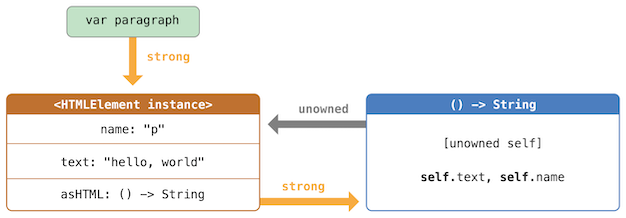This time, the capture of ‘self’ by the closure is an unowned reference, and does not keep a strong hold on the ‘HTMLElement’ instance it has captured. If you set the strong reference from the ‘paragraph’ variable to ‘nil’, the ‘HTMLElement’ instance is deallocated, as can be seen from the printing of its deinitializer message in the example below:
paragraph = nil // Prints "p is being deinitialized"
For more information about capture lists, see Capture Lists.
Next: Access Control, Previous: Automatic Reference Counting, Up: Top [Contents][Index]
By default, Swift prevents unsafe behavior from happening in your code. For example, Swift ensures that variables are initialized before they’re used, memory isn’t accessed after it’s been deallocated, and array indices are checked for out-of-bounds errors.
Swift also makes sure that multiple accesses to the same area of memory don’t conflict, by requiring code that modifies a location in memory to have exclusive access to that memory. Because Swift manages memory automatically, most of the time you don’t have to think about accessing memory at all. However, it’s important to understand where potential conflicts can occur, so you can avoid writing code that has conflicting access to memory. If your code does contain conflicts, you’ll get a compile-time or runtime error.
| • Understanding Conflicting Access to Memory | ||
| • Conflicting Access to In-Out Parameters | ||
| • Conflicting Access to self in Methods | ||
| • Conflicting Access to Properties |
Next: Conflicting Access to In-Out Parameters, Up: Memory Safety [Contents][Index]
Access to memory happens in your code when you do things like set the value of a variable or pass an argument to a function. For example, the following code contains both a read access and a write access:
// A write access to the memory where one is stored.
var one = 1
// A read access from the memory where one is stored.
print("We're number \(one)!")
A conflicting access to memory can occur when different parts of your code are trying to access the same location in memory at the same time. Multiple accesses to a location in memory at the same time can produce unpredictable or inconsistent behavior. In Swift, there are ways to modify a value that span several lines of code, making it possible to attempt to access a value in the middle of its own modification.
You can see a similar problem by thinking about how you update a budget that’s written on a piece of paper. Updating the budget is a two-step process: First you add the items’ names and prices, and then you change the total amount to reflect the items currently on the list. Before and after the update, you can read any information from the budget and get a correct answer, as shown in the figure below.
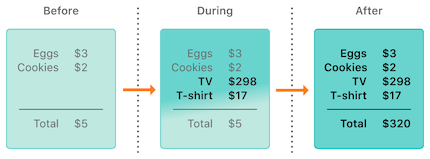While you’re adding items to the budget, it’s in a temporary, invalid state because the total amount hasn’t been updated to reflect the newly added items. Reading the total amount during the process of adding an item gives you incorrect information.
This example also demonstrates a challenge you may encounter when fixing conflicting access to memory: There are sometimes multiple ways to fix the conflict that produce different answers, and it’s not always obvious which answer is correct. In this example, depending on whether you wanted the original total amount or the updated total amount, either $5 or $320 could be the correct answer. Before you can fix the conflicting access, you have to determine what it was intended to do.
Note
If you’ve written concurrent or multithreaded code, conflicting access to memory might be a familiar problem. However, the conflicting access discussed here can happen on a single thread and doesn’t involve concurrent or multithreaded code.
If you have conflicting access to memory from within a single thread, Swift guarantees that you’ll get an error at either compile time or runtime. For multithreaded code, use Thread Sanitizer [https://developer.apple.com/documentation/code_diagnostics/thread_sanitizer] to help detect conflicting access across threads.
| • Characteristics of Memory Access |
There are three characteristics of memory access to consider in the context of conflicting access: whether the access is a read or a write, the duration of the access, and the location in memory being accessed. Specifically, a conflict occurs if you have two accesses that meet all of the following conditions:
The difference between a read and write access is usually obvious: a write access changes the location in memory, but a read access doesn’t. The location in memory refers to what is being accessed—for example, a variable, constant, or property. The duration of a memory access is either instantaneous or long-term.
An access is instantaneous if it’s not possible for other code to run after that access starts but before it ends. By their nature, two instantaneous accesses can’t happen at the same time. Most memory access is instantaneous. For example, all the read and write accesses in the code listing below are instantaneous:
func oneMore(than number: Int) -> Int {
return number + 1
}
var myNumber = 1
myNumber = oneMore(than: myNumber)
print(myNumber)
// Prints "2"
However, there are several ways to access memory, called long-term accesses, that span the execution of other code. The difference between instantaneous access and long-term access is that it’s possible for other code to run after a long-term access starts but before it ends, which is called overlap. A long-term access can overlap with other long-term accesses and instantaneous accesses.
Overlapping accesses appear primarily in code that uses in-out parameters in functions and methods or mutating methods of a structure. The specific kinds of Swift code that use long-term accesses are discussed in the sections below.
Next: Conflicting Access to self in Methods, Previous: Understanding Conflicting Access to Memory, Up: Memory Safety [Contents][Index]
A function has long-term write access to all of its in-out parameters. The write access for an in-out parameter starts after all of the non-in-out parameters have been evaluated and lasts for the entire duration of that function call. If there are multiple in-out parameters, the write accesses start in the same order as the parameters appear.
One consequence of this long-term write access is that you can’t access the original variable that was passed as in-out, even if scoping rules and access control would otherwise permit it—any access to the original creates a conflict. For example:
var stepSize = 1
func increment(_ number: inout Int) {
number += stepSize
}
increment(&stepSize)
// Error: conflicting accesses to stepSize
In the code above, ‘stepSize’ is a global variable, and it is normally accessible from within ‘increment(_:)’. However, the read access to ‘stepSize’ overlaps with the write access to ‘number’. As shown in the figure below, both ‘number’ and ‘stepSize’ refer to the same location in memory. The read and write accesses refer to the same memory and they overlap, producing a conflict.
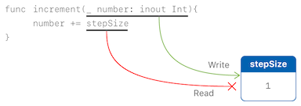One way to solve this conflict is to make an explicit copy of ‘stepSize’:
// Make an explicit copy. var copyOfStepSize = stepSize increment(©OfStepSize) // Update the original. stepSize = copyOfStepSize // stepSize is now 2
When you make a copy of ‘stepSize’ before calling ‘increment(_:)’, it’s clear that the value of ‘copyOfStepSize’ is incremented by the current step size. The read access ends before the write access starts, so there isn’t a conflict.
Another consequence of long-term write access to in-out parameters is that passing a single variable as the argument for multiple in-out parameters of the same function produces a conflict. For example:
func balance(_ x: inout Int, _ y: inout Int) {
let sum = x + y
x = sum / 2
y = sum - x
}
var playerOneScore = 42
var playerTwoScore = 30
balance(&playerOneScore, &playerTwoScore) // OK
balance(&playerOneScore, &playerOneScore)
// Error: conflicting accesses to playerOneScore
The ‘balance(_:_:)’ function above modifies its two parameters to divide the total value evenly between them. Calling it with ‘playerOneScore’ and ‘playerTwoScore’ as arguments doesn’t produce a conflict—there are two write accesses that overlap in time, but they access different locations in memory. In contrast, passing ‘playerOneScore’ as the value for both parameters produces a conflict because it tries to perform two write accesses to the same location in memory at the same time.
Note
Because operators are functions, they can also have long-term accesses to their in-out parameters. For example, if ‘balance(_:_:)’ was an operator function named ‘<^>’, writing ‘playerOneScore <^> playerOneScore’ would result in the same conflict as ‘balance(&playerOneScore, &playerOneScore)’.
Next: Conflicting Access to Properties, Previous: Conflicting Access to In-Out Parameters, Up: Memory Safety [Contents][Index]
A mutating method on a structure has write access to ‘self’ for the duration of the method call. For example, consider a game where each player has a health amount, which decreases when taking damage, and an energy amount, which decreases when using special abilities.
struct Player {
var name: String
var health: Int
var energy: Int
static let maxHealth = 10
mutating func restoreHealth() {
health = Player.maxHealth
}
}
In the ‘restoreHealth()’ method above, a write access to ‘self’ starts at the beginning of the method and lasts until the method returns. In this case, there’s no other code inside ‘restoreHealth()’ that could have an overlapping access to the properties of a ‘Player’ instance. The ‘shareHealth(with:)’ method below takes another ‘Player’ instance as an in-out parameter, creating the possibility of overlapping accesses.
extension Player {
mutating func shareHealth(with teammate: inout Player) {
balance(&teammate.health, &health)
}
}
var oscar = Player(name: "Oscar", health: 10, energy: 10)
var maria = Player(name: "Maria", health: 5, energy: 10)
oscar.shareHealth(with: &maria) // OK
In the example above, calling the ‘shareHealth(with:)’ method for Oscar’s player to share health with Maria’s player doesn’t cause a conflict. There’s a write access to ‘oscar’ during the method call because ‘oscar’ is the value of ‘self’ in a mutating method, and there’s a write access to ‘maria’ for the same duration because ‘maria’ was passed as an in-out parameter. As shown in the figure below, they access different locations in memory. Even though the two write accesses overlap in time, they don’t conflict.
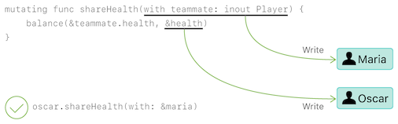However, if you pass ‘oscar’ as the argument to ‘shareHealth(with:)’, there’s a conflict:
oscar.shareHealth(with: &oscar) // Error: conflicting accesses to oscar
The mutating method needs write access to ‘self’ for the duration of the method, and the in-out parameter needs write access to ‘teammate’ for the same duration. Within the method, both ‘self’ and ‘teammate’ refer to the same location in memory—as shown in the figure below. The two write accesses refer to the same memory and they overlap, producing a conflict.
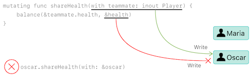Previous: Conflicting Access to self in Methods, Up: Memory Safety [Contents][Index]
Types like structures, tuples, and enumerations are made up of individual constituent values, such as the properties of a structure or the elements of a tuple. Because these are value types, mutating any piece of the value mutates the whole value, meaning read or write access to one of the properties requires read or write access to the whole value. For example, overlapping write accesses to the elements of a tuple produces a conflict:
var playerInformation = (health: 10, energy: 20) balance(&playerInformation.health, &playerInformation.energy) // Error: conflicting access to properties of playerInformation
In the example above, calling ‘balance(_:_:)’ on the elements of a tuple produces a conflict because there are overlapping write accesses to ‘playerInformation’. Both ‘playerInformation.health’ and ‘playerInformation.energy’ are passed as in-out parameters, which means ‘balance(_:_:)’ needs write access to them for the duration of the function call. In both cases, a write access to the tuple element requires a write access to the entire tuple. This means there are two write accesses to ‘playerInformation’ with durations that overlap, causing a conflict.
The code below shows that the same error appears for overlapping write accesses to the properties of a structure that’s stored in a global variable.
var holly = Player(name: "Holly", health: 10, energy: 10) balance(&holly.health, &holly.energy) // Error
In practice, most access to the properties of a structure can overlap safely. For example, if the variable ‘holly’ in the example above is changed to a local variable instead of a global variable, the compiler can prove that overlapping access to stored properties of the structure is safe:
func someFunction() {
var oscar = Player(name: "Oscar", health: 10, energy: 10)
balance(&oscar.health, &oscar.energy) // OK
}
In the example above, Oscar’s health and energy are passed as the two in-out parameters to ‘balance(_:_:)’. The compiler can prove that memory safety is preserved because the two stored properties don’t interact in any way.
The restriction against overlapping access to properties of a structure isn’t always necessary to preserve memory safety. Memory safety is the desired guarantee, but exclusive access is a stricter requirement than memory safety—which means some code preserves memory safety, even though it violates exclusive access to memory. Swift allows this memory-safe code if the compiler can prove that the nonexclusive access to memory is still safe. Specifically, it can prove that overlapping access to properties of a structure is safe if the following conditions apply:
If the compiler can’t prove the access is safe, it doesn’t allow the access.
Next: Advanced Operators, Previous: Memory Safety, Up: Top [Contents][Index]
Access control restricts access to parts of your code from code in other source files and modules. This feature enables you to hide the implementation details of your code, and to specify a preferred interface through which that code can be accessed and used.
You can assign specific access levels to individual types (classes, structures, and enumerations), as well as to properties, methods, initializers, and subscripts belonging to those types. Protocols can be restricted to a certain context, as can global constants, variables, and functions.
In addition to offering various levels of access control, Swift reduces the need to specify explicit access control levels by providing default access levels for typical scenarios. Indeed, if you are writing a single-target app, you may not need to specify explicit access control levels at all.
Note
The various aspects of your code that can have access control applied to them (properties, types, functions, and so on) are referred to as “entities” in the sections below, for brevity.
Next: Access Levels, Up: Access Control [Contents][Index]
Swift’s access control model is based on the concept of modules and source files.
A module is a single unit of code distribution—a framework or application that is built and shipped as a single unit and that can be imported by another module with Swift’s ‘import’ keyword.
Each build target (such as an app bundle or framework) in Xcode is treated as a separate module in Swift. If you group together aspects of your app’s code as a stand-alone framework—perhaps to encapsulate and reuse that code across multiple applications—then everything you define within that framework will be part of a separate module when it’s imported and used within an app, or when it’s used within another framework.
A source file is a single Swift source code file within a module (in effect, a single file within an app or framework). Although it’s common to define individual types in separate source files, a single source file can contain definitions for multiple types, functions, and so on.
Next: Access Control Syntax, Previous: Modules and Source Files, Up: Access Control [Contents][Index]
Swift provides five different access levels for entities within your code. These access levels are relative to the source file in which an entity is defined, and also relative to the module that source file belongs to.
Open access is the highest (least restrictive) access level and private access is the lowest (most restrictive) access level.
Open access applies only to classes and class members, and it differs from public access as follows:
Marking a class as open explicitly indicates that you’ve considered the impact of code from other modules using that class as a superclass, and that you’ve designed your class’s code accordingly.
| • Guiding Principle of Access Levels | ||
| • Default Access Levels | ||
| • Access Levels for Single-Target Apps | ||
| • Access Levels for Frameworks | ||
| • Access Levels for Unit Test Targets |
Next: Default Access Levels, Up: Access Levels [Contents][Index]
Access levels in Swift follow an overall guiding principle: /No entity can be defined in terms of another entity that has a lower (more restrictive) access level./
For example:
The specific implications of this guiding principle for different aspects of the language are covered in detail below.
Next: Access Levels for Single-Target Apps, Previous: Guiding Principle of Access Levels, Up: Access Levels [Contents][Index]
All entities in your code (with a few specific exceptions, as described later in this chapter) have a default access level of internal if you don’t specify an explicit access level yourself. As a result, in many cases you don’t need to specify an explicit access level in your code.
Next: Access Levels for Frameworks, Previous: Default Access Levels, Up: Access Levels [Contents][Index]
When you write a simple single-target app, the code in your app is typically self-contained within the app and doesn’t need to be made available outside of the app’s module. The default access level of internal already matches this requirement. Therefore, you don’t need to specify a custom access level. You may, however, want to mark some parts of your code as file private or private in order to hide their implementation details from other code within the app’s module.
Next: Access Levels for Unit Test Targets, Previous: Access Levels for Single-Target Apps, Up: Access Levels [Contents][Index]
When you develop a framework, mark the public-facing interface to that framework as open or public so that it can be viewed and accessed by other modules, such as an app that imports the framework. This public-facing interface is the application programming interface (or API) for the framework.
Note
Any internal implementation details of your framework can still use the default access level of internal, or can be marked as private or file private if you want to hide them from other parts of the framework’s internal code. You need to mark an entity as open or public only if you want it to become part of your framework’s API.
Previous: Access Levels for Frameworks, Up: Access Levels [Contents][Index]
When you write an app with a unit test target, the code in your app needs to be made available to that module in order to be tested. By default, only entities marked as open or public are accessible to other modules. However, a unit test target can access any internal entity, if you mark the import declaration for a product module with the ‘@testable’ attribute and compile that product module with testing enabled.
Next: Custom Types, Previous: Access Levels, Up: Access Control [Contents][Index]
Define the access level for an entity by placing one of the ‘open’, ‘public’, ‘internal’, ‘fileprivate’, or ‘private’ modifiers before the entity’s introducer:
public class SomePublicClass {}
internal class SomeInternalClass {}
fileprivate class SomeFilePrivateClass {}
private class SomePrivateClass {}
public var somePublicVariable = 0
internal let someInternalConstant = 0
fileprivate func someFilePrivateFunction() {}
private func somePrivateFunction() {}
Unless otherwise specified, the default access level is internal, as described in Default Access Levels. This means that ‘SomeInternalClass’ and ‘someInternalConstant’ can be written without an explicit access-level modifier, and will still have an access level of internal:
class SomeInternalClass {} // implicitly internal
let someInternalConstant = 0 // implicitly internal
Next: Subclassing 1, Previous: Access Control Syntax, Up: Access Control [Contents][Index]
If you want to specify an explicit access level for a custom type, do so at the point that you define the type. The new type can then be used wherever its access level permits. For example, if you define a file-private class, that class can only be used as the type of a property, or as a function parameter or return type, in the source file in which the file-private class is defined.
The access control level of a type also affects the default access level of that type’s members (its properties, methods, initializers, and subscripts). If you define a type’s access level as private or file private, the default access level of its members will also be private or file private. If you define a type’s access level as internal or public (or use the default access level of internal without specifying an access level explicitly), the default access level of the type’s members will be internal.
Important
A public type defaults to having internal members, not public members. If you want a type member to be public, you must explicitly mark it as such. This requirement ensures that the public-facing API for a type is something you opt in to publishing, and avoids presenting the internal workings of a type as public API by mistake.
public class SomePublicClass { // explicitly public class
public var somePublicProperty = 0 // explicitly public class member
var someInternalProperty = 0 // implicitly internal class member
fileprivate func someFilePrivateMethod() {} // explicitly
file-private class member
private func somePrivateMethod() {} // explicitly private class
member
}
class SomeInternalClass { // implicitly internal class
var someInternalProperty = 0 // implicitly internal class member
fileprivate func someFilePrivateMethod() {} // explicitly
file-private class member
private func somePrivateMethod() {} // explicitly private class
member
}
fileprivate class SomeFilePrivateClass { // explicitly file-private
class
func someFilePrivateMethod() {} // implicitly file-private class
member
private func somePrivateMethod() {} // explicitly private class
member
}
private class SomePrivateClass { // explicitly private class
func somePrivateMethod() {} // implicitly private class member
}
| • Tuple Types | ||
| • Function Types | ||
| • Enumeration Types | ||
| • Nested Types |
Next: Function Types 1, Up: Custom Types [Contents][Index]
The access level for a tuple type is the most restrictive access level of all types used in that tuple. For example, if you compose a tuple from two different types, one with internal access and one with private access, the access level for that compound tuple type will be private.
Note
Tuple types don’t have a standalone definition in the way that classes, structures, enumerations, and functions do. A tuple type’s access level is deduced automatically when the tuple type is used, and can’t be specified explicitly.
Next: Enumeration Types, Previous: Tuple Types, Up: Custom Types [Contents][Index]
The access level for a function type is calculated as the most restrictive access level of the function’s parameter types and return type. You must specify the access level explicitly as part of the function’s definition if the function’s calculated access level doesn’t match the contextual default.
The example below defines a global function called ‘someFunction()’, without providing a specific access-level modifier for the function itself. You might expect this function to have the default access level of “internal”, but this isn’t the case. In fact, ‘someFunction()’ won’t compile as written below:
func someFunction() -> (SomeInternalClass, SomePrivateClass) {
// function implementation goes here
}
The function’s return type is a tuple type composed from two of the custom classes defined above in Custom Types. One of these classes is defined as internal, and the other is defined as private. Therefore, the overall access level of the compound tuple type is private (the minimum access level of the tuple’s constituent types).
Because the function’s return type is private, you must mark the function’s overall access level with the ‘private’ modifier for the function declaration to be valid:
private func someFunction() -> (SomeInternalClass, SomePrivateClass) {
// function implementation goes here
}
It’s not valid to mark the definition of ‘someFunction()’ with the ‘public’ or ‘internal’ modifiers, or to use the default setting of internal, because public or internal users of the function might not have appropriate access to the private class used in the function’s return type.
Next: Nested Types 2, Previous: Function Types 1, Up: Custom Types [Contents][Index]
The individual cases of an enumeration automatically receive the same access level as the enumeration they belong to. You can’t specify a different access level for individual enumeration cases.
In the example below, the ‘CompassPoint’ enumeration has an explicit access level of public. The enumeration cases ‘north’, ‘south’, ‘east’, and ‘west’ therefore also have an access level of public:
public enum CompassPoint {
case north
case south
case east
case west
}
The types used for any raw values or associated values in an enumeration definition must have an access level at least as high as the enumeration’s access level. You can’t use a private type as the raw-value type of an enumeration with an internal access level, for example.
Previous: Enumeration Types, Up: Custom Types [Contents][Index]
Nested types defined within a private type have an automatic access level of private. Nested types defined within a file-private type have an automatic access level of file private. Nested types defined within a public type or an internal type have an automatic access level of internal. If you want a nested type within a public type to be publicly available, you must explicitly declare the nested type as public.
Next: Constants Variables Properties and Subscripts, Previous: Custom Types, Up: Access Control [Contents][Index]
You can subclass any class that can be accessed in the current access context. A subclass can’t have a higher access level than its superclass—for example, you can’t write a public subclass of an internal superclass.
In addition, you can override any class member (method, property, initializer, or subscript) that is visible in a certain access context.
An override can make an inherited class member more accessible than its superclass version. In the example below, class ‘A’ is a public class with a file-private method called ‘someMethod()’. Class ‘B’ is a subclass of ‘A’, with a reduced access level of “internal”. Nonetheless, class ‘B’ provides an override of ‘someMethod()’ with an access level of “internal”, which is higher than the original implementation of ‘someMethod()’:
public class A {
fileprivate func someMethod() {}
}
internal class B: A {
override internal func someMethod() {}
}
It’s even valid for a subclass member to call a superclass member that has lower access permissions than the subclass member, as long as the call to the superclass’s member takes place within an allowed access level context (that is, within the same source file as the superclass for a file-private member call, or within the same module as the superclass for an internal member call):
public class A {
fileprivate func someMethod() {}
}
internal class B: A {
override internal func someMethod() {
super.someMethod()
}
}
Because superclass ‘A’ and subclass ‘B’ are defined in the same source file, it’s valid for the ‘B’ implementation of ‘someMethod()’ to call ‘super.someMethod()’.
Next: Initializers 2, Previous: Subclassing 1, Up: Access Control [Contents][Index]
A constant, variable, or property can’t be more public than its type. It’s not valid to write a public property with a private type, for example. Similarly, a subscript can’t be more public than either its index type or return type.
If a constant, variable, property, or subscript makes use of a private type, the constant, variable, property, or subscript must also be marked as ‘private’:
private var privateInstance = SomePrivateClass()
| • Getters and Setters |
Getters and setters for constants, variables, properties, and subscripts automatically receive the same access level as the constant, variable, property, or subscript they belong to.
You can give a setter a lower access level than its corresponding getter, to restrict the read-write scope of that variable, property, or subscript. You assign a lower access level by writing ‘fileprivate(set)’, ‘private(set)’, or ‘internal(set)’ before the ‘var’ or ‘subscript’ introducer.
Note
This rule applies to stored properties as well as computed properties. Even though you don’t write an explicit getter and setter for a stored property, Swift still synthesizes an implicit getter and setter for you to provide access to the stored property’s backing storage. Use ‘fileprivate(set)’, ‘private(set)’, and ‘internal(set)’ to change the access level of this synthesized setter in exactly the same way as for an explicit setter in a computed property.
The example below defines a structure called ‘TrackedString’, which keeps track of the number of times a string property is modified:
struct TrackedString {
private(set) var numberOfEdits = 0
var value: String = "" {
didSet {
numberOfEdits += 1
}
}
}
The ‘TrackedString’ structure defines a stored string property called ‘value’, with an initial value of ‘""’ (an empty string). The structure also defines a stored integer property called ‘numberOfEdits’, which is used to track the number of times that ‘value’ is modified. This modification tracking is implemented with a ‘didSet’ property observer on the ‘value’ property, which increments ‘numberOfEdits’ every time the ‘value’ property is set to a new value.
The ‘TrackedString’ structure and the ‘value’ property don’t provide an explicit access-level modifier, and so they both receive the default access level of internal. However, the access level for the ‘numberOfEdits’ property is marked with a ‘private(set)’ modifier to indicate that the property’s getter still has the default access level of internal, but the property is settable only from within code that’s part of the ‘TrackedString’ structure. This enables ‘TrackedString’ to modify the ‘numberOfEdits’ property internally, but to present the property as a read-only property when it’s used outside the structure’s definition.
If you create a ‘TrackedString’ instance and modify its string value a few times, you can see the ‘numberOfEdits’ property value update to match the number of modifications:
var stringToEdit = TrackedString()
stringToEdit.value = "This string will be tracked."
stringToEdit.value += " This edit will increment numberOfEdits."
stringToEdit.value += " So will this one."
print("The number of edits is \(stringToEdit.numberOfEdits)")
// Prints "The number of edits is 3"
Although you can query the current value of the ‘numberOfEdits’ property from within another source file, you can’t modify the property from another source file. This restriction protects the implementation details of the ‘TrackedString’ edit-tracking functionality, while still providing convenient access to an aspect of that functionality.
Note that you can assign an explicit access level for both a getter and a setter if required. The example below shows a version of the ‘TrackedString’ structure in which the structure is defined with an explicit access level of public. The structure’s members (including the ‘numberOfEdits’ property) therefore have an internal access level by default. You can make the structure’s ‘numberOfEdits’ property getter public, and its property setter private, by combining the ‘public’ and ‘private(set)’ access-level modifiers:
public struct TrackedString {
public private(set) var numberOfEdits = 0
public var value: String = "" {
didSet {
numberOfEdits += 1
}
}
public init() {}
}
Next: Protocols 1, Previous: Constants Variables Properties and Subscripts, Up: Access Control [Contents][Index]
Custom initializers can be assigned an access level less than or equal to the type that they initialize. The only exception is for required initializers (as defined in Required Initializers). A required initializer must have the same access level as the class it belongs to.
As with function and method parameters, the types of an initializer’s parameters can’t be more private than the initializer’s own access level.
| • Default Initializers | ||
| • Default Memberwise Initializers for Structure Types |
As described in Default Initializers, Swift automatically provides a default initializer without any arguments for any structure or base class that provides default values for all of its properties and doesn’t provide at least one initializer itself.
A default initializer has the same access level as the type it initializes, unless that type is defined as ‘public’. For a type that is defined as ‘public’, the default initializer is considered internal. If you want a public type to be initializable with a no-argument initializer when used in another module, you must explicitly provide a public no-argument initializer yourself as part of the type’s definition.
Previous: Default Initializers 1, Up: Initializers 2 [Contents][Index]
The default memberwise initializer for a structure type is considered private if any of the structure’s stored properties are private. Likewise, if any of the structure’s stored properties are file private, the initializer is file private. Otherwise, the initializer has an access level of internal.
As with the default initializer above, if you want a public structure type to be initializable with a memberwise initializer when used in another module, you must provide a public memberwise initializer yourself as part of the type’s definition.
Next: Extensions 1, Previous: Initializers 2, Up: Access Control [Contents][Index]
If you want to assign an explicit access level to a protocol type, do so at the point that you define the protocol. This enables you to create protocols that can only be adopted within a certain access context.
The access level of each requirement within a protocol definition is automatically set to the same access level as the protocol. You can’t set a protocol requirement to a different access level than the protocol it supports. This ensures that all of the protocol’s requirements will be visible on any type that adopts the protocol.
Note
If you define a public protocol, the protocol’s requirements require a public access level for those requirements when they’re implemented. This behavior is different from other types, where a public type definition implies an access level of internal for the type’s members.
| • Protocol Inheritance | ||
| • Protocol Conformance |
Next: Protocol Conformance, Up: Protocols 1 [Contents][Index]
If you define a new protocol that inherits from an existing protocol, the new protocol can have at most the same access level as the protocol it inherits from. You can’t write a public protocol that inherits from an internal protocol, for example.
Previous: Protocol Inheritance 1, Up: Protocols 1 [Contents][Index]
A type can conform to a protocol with a lower access level than the type itself. For example, you can define a public type that can be used in other modules, but whose conformance to an internal protocol can only be used within the internal protocol’s defining module.
The context in which a type conforms to a particular protocol is the minimum of the type’s access level and the protocol’s access level. If a type is public, but a protocol it conforms to is internal, the type’s conformance to that protocol is also internal.
When you write or extend a type to conform to a protocol, you must ensure that the type’s implementation of each protocol requirement has at least the same access level as the type’s conformance to that protocol. For example, if a public type conforms to an internal protocol, the type’s implementation of each protocol requirement must be at least “internal”.
Note
In Swift, as in Objective-C, protocol conformance is global—it isn’t possible for a type to conform to a protocol in two different ways within the same program.
Next: Generics 2, Previous: Protocols 1, Up: Access Control [Contents][Index]
You can extend a class, structure, or enumeration in any access context in which the class, structure, or enumeration is available. Any type members added in an extension have the same default access level as type members declared in the original type being extended. If you extend a public or internal type, any new type members you add have a default access level of internal. If you extend a file-private type, any new type members you add have a default access level of file private. If you extend a private type, any new type members you add have a default access level of private.
Alternatively, you can mark an extension with an explicit access-level modifier (for example, ‘private extension’) to set a new default access level for all members defined within the extension. This new default can still be overridden within the extension for individual type members.
You can’t provide an explicit access-level modifier for an extension if you’re using that extension to add protocol conformance. Instead, the protocol’s own access level is used to provide the default access level for each protocol requirement implementation within the extension.
| • Private Members in Extensions |
Up: Extensions 1 [Contents][Index]
Extensions that are in the same file as the class, structure, or enumeration that they extend behave as if the code in the extension had been written as part of the original type’s declaration. As a result, you can:
This behavior means you can use extensions in the same way to organize your code, whether or not your types have private entities. For example, given the following simple protocol:
protocol SomeProtocol {
func doSomething()
}
You can use an extension to add protocol conformance, like this:
struct SomeStruct {
private var privateVariable = 12
}
extension SomeStruct: SomeProtocol {
func doSomething() {
print(privateVariable)
}
}
Next: Type Aliases 1, Previous: Extensions 1, Up: Access Control [Contents][Index]
The access level for a generic type or generic function is the minimum of the access level of the generic type or function itself and the access level of any type constraints on its type parameters.
Previous: Generics 2, Up: Access Control [Contents][Index]
Any type aliases you define are treated as distinct types for the purposes of access control. A type alias can have an access level less than or equal to the access level of the type it aliases. For example, a private type alias can alias a private, file-private, internal, public, or open type, but a public type alias can’t alias an internal, file-private, or private type.
Note
This rule also applies to type aliases for associated types used to satisfy protocol conformances.
Next: Index, Previous: Access Control, Up: Top [Contents][Index]
In addition to the operators described in Basic Operators, Swift provides several advanced operators that perform more complex value manipulation. These include all of the bitwise and bit shifting operators you will be familiar with from C and Objective-C.
Unlike arithmetic operators in C, arithmetic operators in Swift do not overflow by default. Overflow behavior is trapped and reported as an error. To opt in to overflow behavior, use Swift’s second set of arithmetic operators that overflow by default, such as the overflow addition operator (‘&+’). All of these overflow operators begin with an ampersand (‘&’).
When you define your own structures, classes, and enumerations, it can be useful to provide your own implementations of the standard Swift operators for these custom types. Swift makes it easy to provide tailored implementations of these operators and to determine exactly what their behavior should be for each type you create.
You’re not limited to the predefined operators. Swift gives you the freedom to define your own custom infix, prefix, postfix, and assignment operators, with custom precedence and associativity values. These operators can be used and adopted in your code like any of the predefined operators, and you can even extend existing types to support the custom operators you define.
| • Bitwise Operators | ||
| • Overflow Operators | ||
| • Precedence and Associativity | ||
| • Operator Methods | ||
| • Custom Operators |
Next: Overflow Operators, Up: Advanced Operators [Contents][Index]
Bitwise operators enable you to manipulate the individual raw data bits within a data structure. They are often used in low-level programming, such as graphics programming and device driver creation. Bitwise operators can also be useful when you work with raw data from external sources, such as encoding and decoding data for communication over a custom protocol.
Swift supports all of the bitwise operators found in C, as described below.
| • Bitwise NOT Operator | ||
| • Bitwise AND Operator | ||
| • Bitwise OR Operator | ||
| • Bitwise XOR Operator | ||
| • Bitwise Left and Right Shift Operators |
Next: Bitwise AND Operator, Up: Bitwise Operators [Contents][Index]
The bitwise NOT operator (‘~’) inverts all bits in a number:
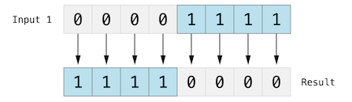The bitwise NOT operator is a prefix operator, and appears immediately before the value it operates on, without any white space:
‘UInt8’ integers have eight bits and can store any value between ‘0’ and ‘255’. This example initializes a ‘UInt8’ integer with the binary value ‘00001111’, which has its first four bits set to ‘0’, and its second four bits set to ‘1’. This is equivalent to a decimal value of ‘15’.
The bitwise NOT operator is then used to create a new constant called ‘invertedBits’, which is equal to ‘initialBits’, but with all of the bits inverted. Zeros become ones, and ones become zeros. The value of ‘invertedBits’ is ‘11110000’, which is equal to an unsigned decimal value of ‘240’.
Next: Bitwise OR Operator, Previous: Bitwise NOT Operator, Up: Bitwise Operators [Contents][Index]
The bitwise AND operator (‘&’) combines the bits of two numbers. It returns a new number whose bits are set to ‘1’ only if the bits were equal to ‘1’ in both input numbers:
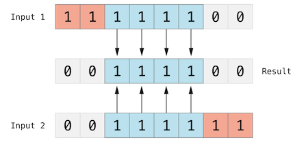In the example below, the values of ‘firstSixBits’ and ‘lastSixBits’ both have four middle bits equal to ‘1’. The bitwise AND operator combines them to make the number ‘00111100’, which is equal to an unsigned decimal value of ‘60’:
let firstSixBits: UInt8 = 0b11111100 let lastSixBits: UInt8 = 0b00111111 let middleFourBits = firstSixBits & lastSixBits // equals 00111100
Next: Bitwise XOR Operator, Previous: Bitwise AND Operator, Up: Bitwise Operators [Contents][Index]
The bitwise OR operator (‘|’) compares the bits of two numbers. The operator returns a new number whose bits are set to ‘1’ if the bits are equal to ‘1’ in either input number:
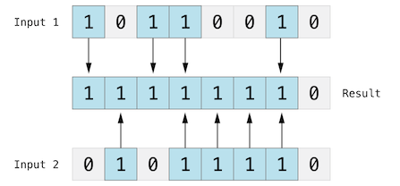In the example below, the values of ‘someBits’ and ‘moreBits’ have different bits set to ‘1’. The bitwise OR operator combines them to make the number ‘11111110’, which equals an unsigned decimal of ‘254’:
let someBits: UInt8 = 0b10110010 let moreBits: UInt8 = 0b01011110 let combinedbits = someBits | moreBits // equals 11111110
Next: Bitwise Left and Right Shift Operators, Previous: Bitwise OR Operator, Up: Bitwise Operators [Contents][Index]
The bitwise XOR operator, or “exclusive OR operator” (‘^’), compares the bits of two numbers. The operator returns a new number whose bits are set to ‘1’ where the input bits are different and are set to ‘0’ where the input bits are the same:
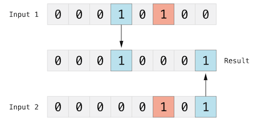In the example below, the values of ‘firstBits’ and ‘otherBits’ each have a bit set to ‘1’ in a location that the other does not. The bitwise XOR operator sets both of these bits to ‘1’ in its output value. All of the other bits in ‘firstBits’ and ‘otherBits’ match and are set to ‘0’ in the output value:
let firstBits: UInt8 = 0b00010100 let otherBits: UInt8 = 0b00000101 let outputBits = firstBits ^ otherBits // equals 00010001
Previous: Bitwise XOR Operator, Up: Bitwise Operators [Contents][Index]
The bitwise left shift operator (‘<<’) and bitwise right shift operator (‘>>’) move all bits in a number to the left or the right by a certain number of places, according to the rules defined below.
Bitwise left and right shifts have the effect of multiplying or dividing an integer by a factor of two. Shifting an integer’s bits to the left by one position doubles its value, whereas shifting it to the right by one position halves its value.
The bit-shifting behavior for unsigned integers is as follows:
This approach is known as a logical shift.
The illustration below shows the results of ‘11111111 << 1’ (which is ‘11111111’ shifted to the left by ‘1’ place), and ‘11111111 >> 1’ (which is ‘11111111’ shifted to the right by ‘1’ place). Blue numbers are shifted, gray numbers are discarded, and orange zeros are inserted:
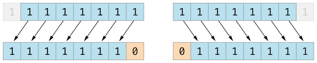Here’s how bit shifting looks in Swift code:
let shiftBits: UInt8 = 4 // 00000100 in binary shiftBits << 1 // 00001000 shiftBits << 2 // 00010000 shiftBits << 5 // 10000000 shiftBits << 6 // 00000000 shiftBits >> 2 // 00000001
You can use bit shifting to encode and decode values within other data types:
let pink: UInt32 = 0xCC6699 let redComponent = (pink & 0xFF0000) >> 16 // redComponent is 0xCC, or 204 let greenComponent = (pink & 0x00FF00) >> 8 // greenComponent is 0x66, or 102 let blueComponent = pink & 0x0000FF // blueComponent is 0x99, or 153
This example uses a ‘UInt32’ constant called ‘pink’ to store a Cascading Style Sheets color value for the color pink. The CSS color value ‘#CC6699’ is written as ‘0xCC6699’ in Swift’s hexadecimal number representation. This color is then decomposed into its red (‘CC’), green (‘66’), and blue (‘99’) components by the bitwise AND operator (‘&’) and the bitwise right shift operator (‘>>’).
The red component is obtained by performing a bitwise AND between the numbers ‘0xCC6699’ and ‘0xFF0000’. The zeros in ‘0xFF0000’ effectively “mask” the second and third bytes of ‘0xCC6699’, causing the ‘6699’ to be ignored and leaving ‘0xCC0000’ as the result.
This number is then shifted 16 places to the right (‘>> 16’). Each pair of characters in a hexadecimal number uses 8 bits, so a move 16 places to the right will convert ‘0xCC0000’ into ‘0x0000CC’. This is the same as ‘0xCC’, which has a decimal value of ‘204’.
Similarly, the green component is obtained by performing a bitwise AND between the numbers ‘0xCC6699’ and ‘0x00FF00’, which gives an output value of ‘0x006600’. This output value is then shifted eight places to the right, giving a value of ‘0x66’, which has a decimal value of ‘102’.
Finally, the blue component is obtained by performing a bitwise AND between the numbers ‘0xCC6699’ and ‘0x0000FF’, which gives an output value of ‘0x000099’. There’s no need to shift this to the right, as ‘0x000099’ already equals ‘0x99’, which has a decimal value of ‘153’.
The shifting behavior is more complex for signed integers than for unsigned integers, because of the way signed integers are represented in binary. (The examples below are based on 8-bit signed integers for simplicity, but the same principles apply for signed integers of any size.)
Signed integers use their first bit (known as the sign bit) to indicate whether the integer is positive or negative. A sign bit of ‘0’ means positive, and a sign bit of ‘1’ means negative.
The remaining bits (known as the value bits) store the actual value. Positive numbers are stored in exactly the same way as for unsigned integers, counting upwards from ‘0’. Here’s how the bits inside an ‘Int8’ look for the number ‘4’:
The sign bit is ‘0’ (meaning “positive”), and the seven value bits are just the number ‘4’, written in binary notation.
Negative numbers, however, are stored differently. They are stored by subtracting their absolute value from ‘2’ to the power of ‘n’, where ‘n’ is the number of value bits. An eight-bit number has seven value bits, so this means ‘2’ to the power of ‘7’, or ‘128’.
Here’s how the bits inside an ‘Int8’ look for the number ‘-4’:
This time, the sign bit is ‘1’ (meaning “negative”), and the seven value bits have a binary value of ‘124’ (which is ‘128 - 4’):
This encoding for negative numbers is known as a two’s complement representation. It may seem an unusual way to represent negative numbers, but it has several advantages.
First, you can add ‘-1’ to ‘-4’, simply by performing a standard binary addition of all eight bits (including the sign bit), and discarding anything that doesn’t fit in the eight bits once you’re done:
Second, the two’s complement representation also lets you shift the bits of negative numbers to the left and right like positive numbers, and still end up doubling them for every shift you make to the left, or halving them for every shift you make to the right. To achieve this, an extra rule is used when signed integers are shifted to the right: When you shift signed integers to the right, apply the same rules as for unsigned integers, but fill any empty bits on the left with the sign bit, rather than with a zero.
This action ensures that signed integers have the same sign after they are shifted to the right, and is known as an arithmetic shift.
Because of the special way that positive and negative numbers are stored, shifting either of them to the right moves them closer to zero. Keeping the sign bit the same during this shift means that negative integers remain negative as their value moves closer to zero.
Next: Precedence and Associativity, Previous: Bitwise Operators, Up: Advanced Operators [Contents][Index]
If you try to insert a number into an integer constant or variable that cannot hold that value, by default Swift reports an error rather than allowing an invalid value to be created. This behavior gives extra safety when you work with numbers that are too large or too small.
For example, the ‘Int16’ integer type can hold any signed integer between ‘-32768’ and ‘32767’. Trying to set an ‘Int16’ constant or variable to a number outside of this range causes an error:
var potentialOverflow = Int16.max // potentialOverflow equals 32767, which is the maximum value an Int16 can hold potentialOverflow += 1 // this causes an error
Providing error handling when values get too large or too small gives you much more flexibility when coding for boundary value conditions.
However, when you specifically want an overflow condition to truncate the number of available bits, you can opt in to this behavior rather than triggering an error. Swift provides three arithmetic overflow operators that opt in to the overflow behavior for integer calculations. These operators all begin with an ampersand (‘&’):
| • Value Overflow |
Up: Overflow Operators [Contents][Index]
Numbers can overflow in both the positive and negative direction.
Here’s an example of what happens when an unsigned integer is allowed to overflow in the positive direction, using the overflow addition operator (‘&+’):
var unsignedOverflow = UInt8.max // unsignedOverflow equals 255, which is the maximum value a UInt8 can hold unsignedOverflow = unsignedOverflow &+ 1 // unsignedOverflow is now equal to 0
The variable ‘unsignedOverflow’ is initialized with the maximum value a ‘UInt8’ can hold (‘255’, or ‘11111111’ in binary). It is then incremented by ‘1’ using the overflow addition operator (‘&+’). This pushes its binary representation just over the size that a ‘UInt8’ can hold, causing it to overflow beyond its bounds, as shown in the diagram below. The value that remains within the bounds of the ‘UInt8’ after the overflow addition is ‘00000000’, or zero.
Something similar happens when an unsigned integer is allowed to overflow in the negative direction. Here’s an example using the overflow subtraction operator (‘&-’):
var unsignedOverflow = UInt8.min // unsignedOverflow equals 0, which is the minimum value a UInt8 can hold unsignedOverflow = unsignedOverflow &- 1 // unsignedOverflow is now equal to 255
The minimum value that a ‘UInt8’ can hold is zero, or ‘00000000’ in binary. If you subtract ‘1’ from ‘00000000’ using the overflow subtraction operator (‘&-’), the number will overflow and wrap around to ‘11111111’, or ‘255’ in decimal.
Overflow also occurs for signed integers. All addition and subtraction for signed integers is performed in bitwise fashion, with the sign bit included as part of the numbers being added or subtracted, as described in Bitwise Left and Right Shift Operators.
var signedOverflow = Int8.min // signedOverflow equals -128, which is the minimum value an Int8 can hold signedOverflow = signedOverflow &- 1 // signedOverflow is now equal to 127
The minimum value that an ‘Int8’ can hold is ‘-128’, or ‘10000000’ in binary. Subtracting ‘1’ from this binary number with the overflow operator gives a binary value of ‘01111111’, which toggles the sign bit and gives positive ‘127’, the maximum positive value that an ‘Int8’ can hold.
For both signed and unsigned integers, overflow in the positive direction wraps around from the maximum valid integer value back to the minimum, and overflow in the negative direction wraps around from the minimum value to the maximum.
Next: Operator Methods 1, Previous: Overflow Operators, Up: Advanced Operators [Contents][Index]
Operator precedence gives some operators higher priority than others; these operators are applied first.
Operator associativity defines how operators of the same precedence are grouped together—either grouped from the left, or grouped from the right. Think of it as meaning “they associate with the expression to their left,” or “they associate with the expression to their right.”
It is important to consider each operator’s precedence and associativity when working out the order in which a compound expression will be calculated. For example, operator precedence explains why the following expression equals ‘17’.
2 + 3 % 4 * 5 // this equals 17
If you read strictly from left to right, you might expect the expression to be calculated as follows:
However, the actual answer is ‘17’, not ‘5’. Higher-precedence operators are evaluated before lower-precedence ones. In Swift, as in C, the remainder operator (‘%’) and the multiplication operator (‘*’) have a higher precedence than the addition operator (‘+’). As a result, they are both evaluated before the addition is considered.
However, remainder and multiplication have the same precedence as each other. To work out the exact evaluation order to use, you also need to consider their associativity. Remainder and multiplication both associate with the expression to their left. Think of this as adding implicit parentheses around these parts of the expression, starting from their left:
2 + ((3 % 4) * 5)
‘(3 % 4)’ is ‘3’, so this is equivalent to:
2 + (3 * 5)
‘(3 * 5)’ is ‘15’, so this is equivalent to:
2 + 15
This calculation yields the final answer of ‘17’.
For information about the operators provided by the Swift standard library, including a complete list of the operator precedence groups and associativity settings, see Operator Declarations [https://developer.apple.com/documentation/swift/operator_declarations].
Note
Swift’s operator precedences and associativity rules are simpler and more predictable than those found in C and Objective-C. However, this means that they are not exactly the same as in C-based languages. Be careful to ensure that operator interactions still behave in the way you intend when porting existing code to Swift.
Next: Custom Operators, Previous: Precedence and Associativity, Up: Advanced Operators [Contents][Index]
Classes and structures can provide their own implementations of existing operators. This is known as overloading the existing operators.
The example below shows how to implement the arithmetic addition operator (‘+’) for a custom structure. The arithmetic addition operator is a binary operator because it operates on two targets and is said to be infix because it appears in between those two targets.
The example defines a ‘Vector2D’ structure for a two-dimensional position vector ‘(x, y)’, followed by a definition of an operator method to add together instances of the ‘Vector2D’ structure:
struct Vector2D {
var x = 0.0, y = 0.0
}
extension Vector2D {
static func + (left: Vector2D, right: Vector2D) -> Vector2D {
return Vector2D(x: left.x + right.x, y: left.y + right.y)
}
}
The operator method is defined as a type method on ‘Vector2D’, with a method name that matches the operator to be overloaded (‘+’). Because addition isn’t part of the essential behavior for a vector, the type method is defined in an extension of ‘Vector2D’ rather than in the main structure declaration of ‘Vector2D’. Because the arithmetic addition operator is a binary operator, this operator method takes two input parameters of type ‘Vector2D’ and returns a single output value, also of type ‘Vector2D’.
In this implementation, the input parameters are named ‘left’ and ‘right’ to represent the ‘Vector2D’ instances that will be on the left side and right side of the ‘+’ operator. The method returns a new ‘Vector2D’ instance, whose ‘x’ and ‘y’ properties are initialized with the sum of the ‘x’ and ‘y’ properties from the two ‘Vector2D’ instances that are added together.
The type method can be used as an infix operator between existing ‘Vector2D’ instances:
let vector = Vector2D(x: 3.0, y: 1.0) let anotherVector = Vector2D(x: 2.0, y: 4.0) let combinedVector = vector + anotherVector // combinedVector is a Vector2D instance with values of (5.0, 5.0)
This example adds together the vectors ‘(3.0, 1.0)’ and ‘(2.0, 4.0)’ to make the vector ‘(5.0, 5.0)’, as illustrated below.
| • Prefix and Postfix Operators | ||
| • Compound Assignment Operators | ||
| • Equivalence Operators |
Next: Compound Assignment Operators 1, Up: Operator Methods 1 [Contents][Index]
The example shown above demonstrates a custom implementation of a binary infix operator. Classes and structures can also provide implementations of the standard unary operators. Unary operators operate on a single target. They are prefix if they precede their target (such as ‘-a’) and postfix operators if they follow their target (such as ‘b!’).
You implement a prefix or postfix unary operator by writing the ‘prefix’ or ‘postfix’ modifier before the ‘func’ keyword when declaring the operator method:
extension Vector2D {
static prefix func - (vector: Vector2D) -> Vector2D {
return Vector2D(x: -vector.x, y: -vector.y)
}
}
The example above implements the unary minus operator (‘-a’) for ‘Vector2D’ instances. The unary minus operator is a prefix operator, and so this method has to be qualified with the ‘prefix’ modifier.
For simple numeric values, the unary minus operator converts positive numbers into their negative equivalent and vice versa. The corresponding implementation for ‘Vector2D’ instances performs this operation on both the ‘x’ and ‘y’ properties:
let positive = Vector2D(x: 3.0, y: 4.0) let negative = -positive // negative is a Vector2D instance with values of (-3.0, -4.0) let alsoPositive = -negative // alsoPositive is a Vector2D instance with values of (3.0, 4.0)
Next: Equivalence Operators, Previous: Prefix and Postfix Operators, Up: Operator Methods 1 [Contents][Index]
Compound assignment operators combine assignment (‘=’) with another operation. For example, the addition assignment operator (‘+=’) combines addition and assignment into a single operation. You mark a compound assignment operator’s left input parameter type as ‘inout’, because the parameter’s value will be modified directly from within the operator method.
The example below implements an addition assignment operator method for ‘Vector2D’ instances:
extension Vector2D {
static func += (left: inout Vector2D, right: Vector2D) {
left = left + right
}
}
Because an addition operator was defined earlier, you don’t need to reimplement the addition process here. Instead, the addition assignment operator method takes advantage of the existing addition operator method, and uses it to set the left value to be the left value plus the right value:
var original = Vector2D(x: 1.0, y: 2.0) let vectorToAdd = Vector2D(x: 3.0, y: 4.0) original += vectorToAdd // original now has values of (4.0, 6.0)
Note
It isn’t possible to overload the default assignment operator (‘=’). Only the compound assignment operators can be overloaded. Similarly, the ternary conditional operator (‘a ? b : c’) can’t be overloaded.
Previous: Compound Assignment Operators 1, Up: Operator Methods 1 [Contents][Index]
By default, custom classes and structures don’t have an implementation of the equivalence operators, known as the equal to operator (‘==’) and not equal to operator (‘!=’). You usually implement the ‘==’ operator, and use the standard library’s default implementation of the ‘!=’ operator that negates the result of the ‘==’ operator. There are two ways to implement the ‘==’ operator: You can implement it yourself, or for many types, you can ask Swift to synthesize an implementation for you. In both cases, you add conformance to the standard library’s ‘Equatable’ protocol.
You provide an implementation of the ‘==’ operator in the same way as you implement other infix operators:
extension Vector2D: Equatable {
static func == (left: Vector2D, right: Vector2D) -> Bool {
return (left.x == right.x) && (left.y == right.y)
}
}
The example above implements an ‘==’ operator to check whether two ‘Vector2D’ instances have equivalent values. In the context of ‘Vector2D’, it makes sense to consider “equal” as meaning “both instances have the same ‘x’ values and ‘y’ values”, and so this is the logic used by the operator implementation.
You can now use this operator to check whether two ‘Vector2D’ instances are equivalent:
let twoThree = Vector2D(x: 2.0, y: 3.0)
let anotherTwoThree = Vector2D(x: 2.0, y: 3.0)
if twoThree == anotherTwoThree {
print("These two vectors are equivalent.")
}
// Prints "These two vectors are equivalent."
In many simple cases, you can ask Swift to provide synthesized implementations of the equivalence operators for you. Swift provides synthesized implementations for the following kinds of custom types:
To receive a synthesized implementation of ‘==’, declare ‘Equatable’ conformance in the file that contains the original declaration, without implementing an ‘==’ operator yourself.
The example below defines a ‘Vector3D’ structure for a three-dimensional position vector ‘(x, y, z)’, similar to the ‘Vector2D’ structure. Because the ‘x’, ‘y’, and ‘z’ properties are all of an ‘Equatable’ type, ‘Vector3D’ receives synthesized implementations of the equivalence operators.
struct Vector3D: Equatable {
var x = 0.0, y = 0.0, z = 0.0
}
let twoThreeFour = Vector3D(x: 2.0, y: 3.0, z: 4.0)
let anotherTwoThreeFour = Vector3D(x: 2.0, y: 3.0, z: 4.0)
if twoThreeFour == anotherTwoThreeFour {
print("These two vectors are also equivalent.")
}
// Prints "These two vectors are also equivalent."
Previous: Operator Methods 1, Up: Advanced Operators [Contents][Index]
You can declare and implement your own custom operators in addition to the standard operators provided by Swift. For a list of characters that can be used to define custom operators, see Operators.
New operators are declared at a global level using the ‘operator’ keyword, and are marked with the ‘prefix’, ‘infix’ or ‘postfix’ modifiers:
The example above defines a new prefix operator called ‘+++’. This operator does not have an existing meaning in Swift, and so it is given its own custom meaning below in the specific context of working with ‘Vector2D’ instances. For the purposes of this example, ‘+++’ is treated as a new “prefix doubling” operator. It doubles the ‘x’ and ‘y’ values of a ‘Vector2D’ instance, by adding the vector to itself with the addition assignment operator defined earlier. To implement the ‘+++’ operator, you add a type method called ‘+++’ to ‘Vector2D’ as follows:
extension Vector2D {
static prefix func +++ (vector: inout Vector2D) -> Vector2D {
vector += vector
return vector
}
}
var toBeDoubled = Vector2D(x: 1.0, y: 4.0)
let afterDoubling = +++toBeDoubled
// toBeDoubled now has values of (2.0, 8.0)
// afterDoubling also has values of (2.0, 8.0)
| • Precedence for Custom Infix Operators |
Up: Custom Operators [Contents][Index]
Custom infix operators each belong to a precedence group. A precedence group specifies an operator’s precedence relative to other infix operators, as well as the operator’s associativity. See Precedence and Associativity for an explanation of how these characteristics affect an infix operator’s interaction with other infix operators.
A custom infix operator that is not explicitly placed into a precedence group is given a default precedence group with a precedence immediately higher than the precedence of the ternary conditional operator.
The following example defines a new custom infix operator called ‘+-’, which belongs to the precedence group ‘AdditionPrecedence’:
infix operator +-: AdditionPrecedence
extension Vector2D {
static func +- (left: Vector2D, right: Vector2D) -> Vector2D {
return Vector2D(x: left.x + right.x, y: left.y - right.y)
}
}
let firstVector = Vector2D(x: 1.0, y: 2.0)
let secondVector = Vector2D(x: 3.0, y: 4.0)
let plusMinusVector = firstVector +- secondVector
// plusMinusVector is a Vector2D instance with values of (4.0, -2.0)
This operator adds together the ‘x’ values of two vectors, and subtracts the ‘y’ value of the second vector from the first. Because it is in essence an “additive” operator, it has been given the same precedence group as additive infix operators such as ‘+’ and ‘-’. For information about the operators provided by the Swift standard library, including a complete list of the operator precedence groups and associativity settings, see Operator Declarations [https://developer.apple.com/documentation/swift/operator_declarations]. For more information about precedence groups and to see the syntax for defining your own operators and precedence groups, see Operator Declaration.
Note
You do not specify a precedence when defining a prefix or postfix operator. However, if you apply both a prefix and a postfix operator to the same operand, the postfix operator is applied first.
Previous: Advanced Operators, Up: Top [Contents][Index]
| Jump to: | #
@
_
A B C D E F G I L M N O P R S T U V W |
|---|
| Jump to: | #
@
_
A B C D E F G I L M N O P R S T U V W |
|---|